波本篇结束之后，新兰/柯兰的感情线已经失去了悬念，新兰方面遭到风筝篇告白转移，柯兰方面承担世柯上位替代，在这一背景下，红修前小兰的故事线极度简单，只有两步：
1、不断目睹服部告白失败，再告白再失败。
2、发现新一远不如服部主动，开始谋划红修篇。
此时的小兰已经不可能去学危命探索柯哀关系（水族馆+风筝篇之后小兰已经完全磕柯哀），甚至连拉窗帘时期对世良的心理优势都无法保持，只能依靠伦敦告白进行策划，战略上完全陷入被动。
相比之下，世良的可选路线非常多，她可以继续探索柯哀关系，可以靠涟漪篇初遇以增加宿命感，可以继续邀请柯南去自家酒店，甚至可以红修直接攻哈，战略上非常灵活。
柯哀呢？小哀不需要战略上的主动性，因为这一阶段基本是柯南在主动而小哀负责傲娇 ，摆在柯哀面前的主要障碍不是小兰或世良，而是黑衣组织，柯哀关系以柯南“欺负”小哀为主，以若狭的故事为辅，充满了各种拉扯和试探，其高潮将以比护挂件的形式展现。
，摆在柯哀面前的主要障碍不是小兰或世良，而是黑衣组织，柯哀关系以柯南“欺负”小哀为主，以若狭的故事为辅，充满了各种拉扯和试探，其高潮将以比护挂件的形式展现。
以上三条感情线构成了红修前柯南命定之人三选一的主要结构，那么为什么又说“七宗罪”呢？因为红修是新兰的天花板，也是日本警察救世主被钉上十字架的过程，钉上十字架是为他人赎罪，这一罪人可以是RUM，也可以是RAN，红修中小兰那套以冲田为核心的计划已经满足七宗罪的全部七项。
本帖覆盖范围为257天【秀由2】（也即七宗罪事件）～280天【红修篇】，小时间线不到一个月，以七宗罪始，以犹大之吻终。
（考虑到若狭的秘密尚未完全揭开，本帖涉及主线的部分需要谨慎看待，这也适用于初遇论的部分。）
柯哀又一次被步美抓包镇楼
1、不断目睹服部告白失败，再告白再失败。
2、发现新一远不如服部主动，开始谋划红修篇。
此时的小兰已经不可能去学危命探索柯哀关系（水族馆+风筝篇之后小兰已经完全磕柯哀），甚至连拉窗帘时期对世良的心理优势都无法保持，只能依靠伦敦告白进行策划，战略上完全陷入被动。
相比之下，世良的可选路线非常多，她可以继续探索柯哀关系，可以靠涟漪篇初遇以增加宿命感，可以继续邀请柯南去自家酒店，甚至可以红修直接攻哈，战略上非常灵活。
柯哀呢？小哀不需要战略上的主动性，因为这一阶段基本是柯南在主动而小哀负责傲娇
，摆在柯哀面前的主要障碍不是小兰或世良，而是黑衣组织，柯哀关系以柯南“欺负”小哀为主，以若狭的故事为辅，充满了各种拉扯和试探，其高潮将以比护挂件的形式展现。以上三条感情线构成了红修前柯南命定之人三选一的主要结构，那么为什么又说“七宗罪”呢？因为红修是新兰的天花板，也是日本警察救世主被钉上十字架的过程，钉上十字架是为他人赎罪，这一罪人可以是RUM，也可以是RAN，红修中小兰那套以冲田为核心的计划已经满足七宗罪的全部七项。
本帖覆盖范围为257天【秀由2】（也即七宗罪事件）～280天【红修篇】，小时间线不到一个月，以七宗罪始，以犹大之吻终。
（考虑到若狭的秘密尚未完全揭开，本帖涉及主线的部分需要谨慎看待，这也适用于初遇论的部分。）
柯哀又一次被步美抓包镇楼
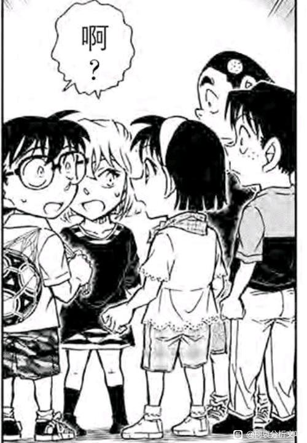
1、七宗罪、角行与钉子：秀由2
在秀吉由美的第一案，作者就已经开始强调“七宗罪”，而到了本案更是毫不掩饰地将七宗罪摆上棋盘。
（本案在设计上并不需要强调七宗罪，只要有“高飞车”的概念加上世良提示的杯户pride酒店就足够了，但是青山仍然费劲地画出了这个棋盘）
而且，并不是所有棋子都对应七宗罪，漫画里只给出三个位置的罪，具体如下：
（日本将棋以玉将的初始位置坐标为5，1）
坐标（7，1）对应忧郁+懒惰，表现为忧郁的银将背着懒惰的金将，漫画71卷为伦敦篇。
坐标（7，4）对应嫉妒，表现为从敌方俘虏的角行，漫画74卷为拉窗帘的解决篇。
坐标（8，6）对应傲慢+虚荣，表现为虚荣的角行和傲慢的飞车一起被刺穿，漫画86卷服部开始告白，第一位朗姆候选人（黑田）开始调查柯南。
其他四个位置没有明说对应，还有暴食，色欲，贪婪，暴怒四罪，【步兵】的位置为死罗神，【玉将】的位置为新平滑雪场，【桂马】的位置为朱蒂赏花案，【香车】的位置为若狭登场。
上述分析属于索隐性质，自作主张地将将棋坐标与卷数联系起来，但有一部分对应得很好（例如拉窗帘对应嫉妒），仅供参考。
在秀吉由美的第一案，作者就已经开始强调“七宗罪”，而到了本案更是毫不掩饰地将七宗罪摆上棋盘。
（本案在设计上并不需要强调七宗罪，只要有“高飞车”的概念加上世良提示的杯户pride酒店就足够了，但是青山仍然费劲地画出了这个棋盘）
而且，并不是所有棋子都对应七宗罪，漫画里只给出三个位置的罪，具体如下：
（日本将棋以玉将的初始位置坐标为5，1）
坐标（7，1）对应忧郁+懒惰，表现为忧郁的银将背着懒惰的金将，漫画71卷为伦敦篇。
坐标（7，4）对应嫉妒，表现为从敌方俘虏的角行，漫画74卷为拉窗帘的解决篇。
坐标（8，6）对应傲慢+虚荣，表现为虚荣的角行和傲慢的飞车一起被刺穿，漫画86卷服部开始告白，第一位朗姆候选人（黑田）开始调查柯南。
其他四个位置没有明说对应，还有暴食，色欲，贪婪，暴怒四罪，【步兵】的位置为死罗神，【玉将】的位置为新平滑雪场，【桂马】的位置为朱蒂赏花案，【香车】的位置为若狭登场。
上述分析属于索隐性质，自作主张地将将棋坐标与卷数联系起来，但有一部分对应得很好（例如拉窗帘对应嫉妒），仅供参考。
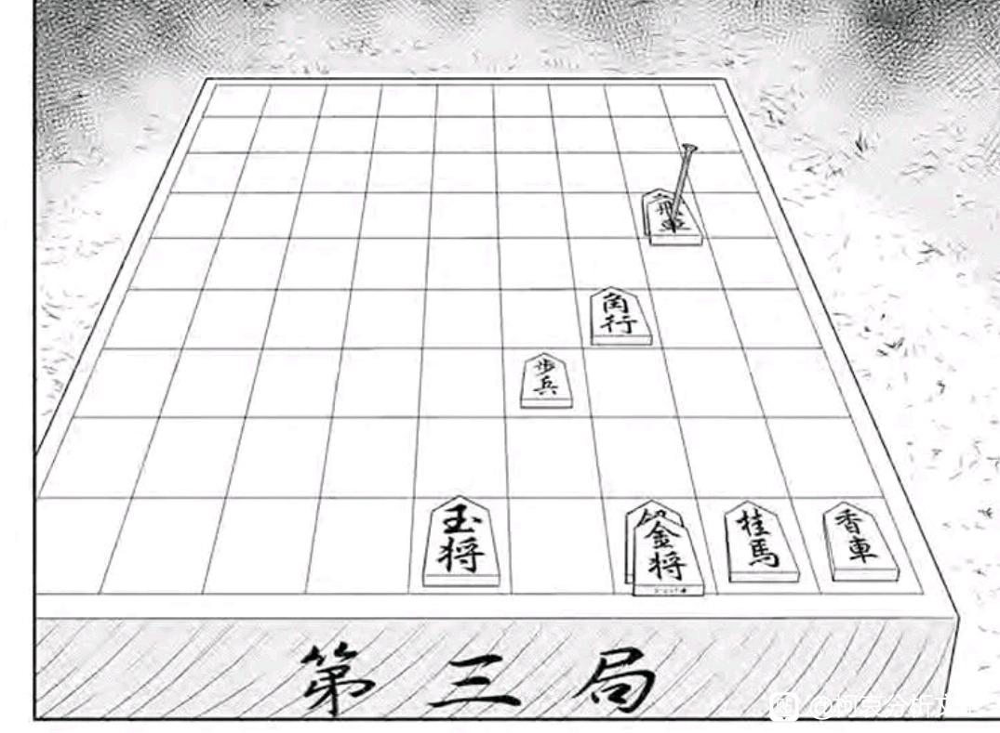
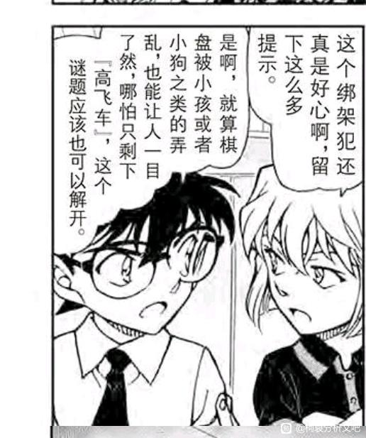
2024-08-19 19:15 | 海Julius:棋子和案子的对应关系怎么推出来的，纯靠案子里的罪吗2024-08-19 19:26 | 🌐之徙:回复 海Julius :该卷比较重要的案件2024-08-19 19:54 | xxm61424:这个不算索隐派的范畴 索隐派一个很好的例子是民国的文学大手子在红楼梦里面找反清复明2024-08-19 19:56 | xxm61424:但这儿考证的手法是m27使用的手法的变种 所以更可信2024-08-20 12:25 | 🐷亿只猪🐷:回复 海Julius :通过棋子所在的坐标位置，既横第几排竖第几列对应到相应的漫画本数再选取那本漫画中的重要案件2024-08-20 12:25 | 520柯南8:回复 nusuaihxi :是的。 甚至M27最开始的半个小时，给人的感觉，平次对和叶的告白，不够纯粹，非要去跟工藤对比，而且还把和叶作为了跟对手battle的一个“筹码”。2024-08-21 23:28 | 一叶之秋🌿🍁🍁:回复 520柯南8 :我觉得平次更多是＂一定要给和叶最好的表白＂心态，重点倒不是和新一较劲，或许平和最终也要靠少侦。2024-08-22 09:07 | 520柯南8:回复 一叶之秋🌿🍁🍁 : 多少还是不够稳重吧。 把和叶作为了跟对手battle的一个“筹码”，这也是M27的事实。 这些高中生侦探跟 赤井秀一 降谷零这些稍微年长点的比，考虑全局问题上还是差点，虽说推理能力更强。 也可能是旁观者清2024-08-22 12:00 | 热心网友王BS:回复 nusuaihxi :确实 在平次想清楚这个问题前 他们的告白心意表达是不会有结果的
作为朗姆篇第一案，这个棋盘还有多种解读。
此处，小哀对被刺穿的角行发表看法，认为她“被难题所困扰”，是新加入的棋子，但被秀吉和柯南双双否认。
在名柯里，有两个人可能会被棋子【角行】指代：若狭和小兰，若狭的护身符就是角行棋子，但羽田给她时应该是升变的龙马。
由于日本人也有汉字“角”，角行也指代小兰（这一点在板仓卓事件也有体现）。
那么，哪个角行是若狭，哪个角行是小兰呢？
注意到被钉子刺穿的角行，上方覆盖了飞车。如果我们将二者的攻击范围结合起来，就能得到另一枚棋子：【国际象棋王后】，而后来也堂而皇之将若狭的篇章叫做“女王之谋”。
单独的角行对应【嫉妒】和【拉窗帘】，完全符合小兰。
然后再细品这句话，“新加入的成员，并不是这枚角行，（而是另一枚）”，核心观点已经呼之欲出：
【小新一在见到小兰之前，很可能先见到若狭】
考虑到此时已经临近樱花班创作，若狭的角色设计应该更早，这一假设并不突兀，甚至在樱花班也有所体现，例如“女侦探说重新开始什么时候都不晚”。
此处，小哀对被刺穿的角行发表看法，认为她“被难题所困扰”，是新加入的棋子，但被秀吉和柯南双双否认。
在名柯里，有两个人可能会被棋子【角行】指代：若狭和小兰，若狭的护身符就是角行棋子，但羽田给她时应该是升变的龙马。
由于日本人也有汉字“角”，角行也指代小兰（这一点在板仓卓事件也有体现）。
那么，哪个角行是若狭，哪个角行是小兰呢？
注意到被钉子刺穿的角行，上方覆盖了飞车。如果我们将二者的攻击范围结合起来，就能得到另一枚棋子：【国际象棋王后】，而后来也堂而皇之将若狭的篇章叫做“女王之谋”。
单独的角行对应【嫉妒】和【拉窗帘】，完全符合小兰。
然后再细品这句话，“新加入的成员，并不是这枚角行，（而是另一枚）”，核心观点已经呼之欲出：
【小新一在见到小兰之前，很可能先见到若狭】
考虑到此时已经临近樱花班创作，若狭的角色设计应该更早，这一假设并不突兀，甚至在樱花班也有所体现，例如“女侦探说重新开始什么时候都不晚”。
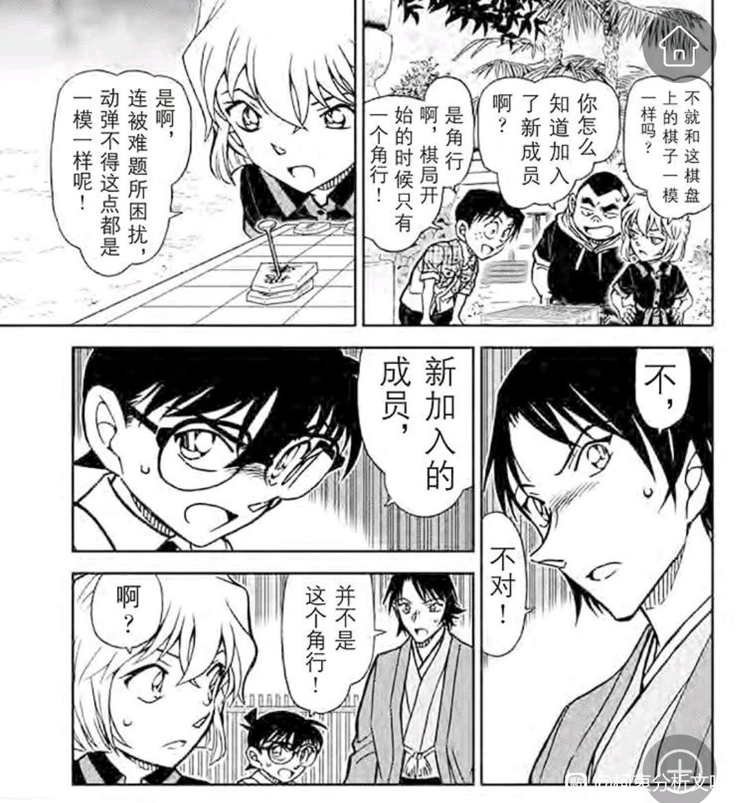
前排bdd
柯南身上可能有的七宗罪大概只有色欲，不过如果是过去的新一，那还会具备【傲慢】，漫画里【傲慢】所代表的是【高飞车】，而【高飞车】被钉子钉了。
如果正如吧友所分析，红修篇包含犹大之吻，新一被横竖十字刺穿，那么这个钉在【傲慢】上的钉子同样具有宗教意味，可能是圣钉或者朗基努斯之枪。
在红修，“傲慢”的工藤新一被刺穿了。
如果正如吧友所分析，红修篇包含犹大之吻，新一被横竖十字刺穿，那么这个钉在【傲慢】上的钉子同样具有宗教意味，可能是圣钉或者朗基努斯之枪。
在红修，“傲慢”的工藤新一被刺穿了。
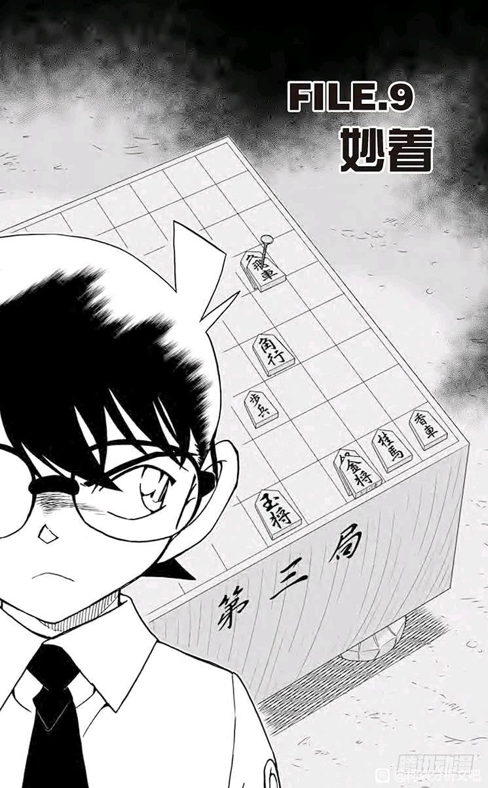
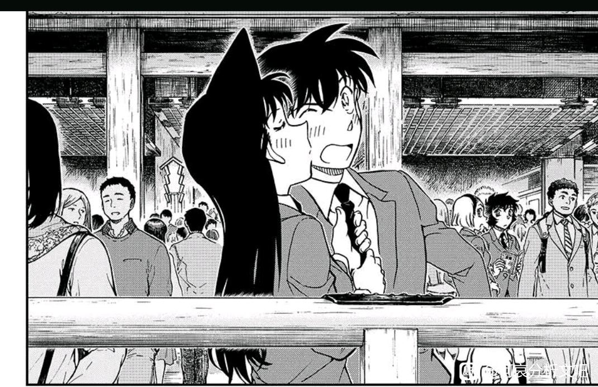
2024-08-19 19:47 | 清茶姑娘:变为柯南，才是工藤新一真正的成长，再回首，真的感觉相较之下以前的新一有点莽2024-08-20 12:28 | 520柯南8:回复 清茶姑娘 : 柯南 现在的最新漫画的人物形象性格，跟 最开始登场时相比， 那完全是天翻地覆的成长。2024-08-22 12:18 | 热心网友王BS:否定之否定 变小需要否定以前的工藤新一，最后变回来也要否定目前的柯南，但是最后变回去的新一是和以前不一样的新一2026-01-04 21:16 | 星丿弋痕:回复 热心网友王BS :可能会在圣诞节真正的变回新一，变成令和时代的福尔摩斯，日本警察的救世主，圣诞老人小哀会在圣诞节给柯南真正的解药，柯南自此脱去柯南马甲，带着这段时间的经历彻底脱离此前不成熟的新一，25年圣诞贺图小哀羡慕松田对千速的表白，令和的福尔摩斯对小哀献上表白作为回礼2026-01-04 21:18 | 星丿弋痕:回复 热心网友王BS :优作的外号是暗夜男爵，工藤新一以后的外号就是经历暗黑组织这段过往的名侦探柯南2026-01-17 15:06 | 阿瑟姆奶茶🌸:回复 星丿弋痕 :不可能，这不符合青山设计柯南的初衷
接下来这个暴论不一定符合将棋棋理。
棋谱很多，青山应该是有机会选择自己喜欢的棋谱放在漫画中，漫画里，犯人执着于十年前的“四八飞车”，而本篇创作于2014年，10年前是2004年，漫画恰好到48卷。
（48卷【佛灭日】事件包含了13年前的往事）
犯人觉得，有这样一步棋就稳了，但是秀吉表示“我的角行在你的飞车之前”，并下出【四七角行】，结果犯人大败。
（47卷满腹疑虑的小兰，小兰开始实锤柯哀）
最后的结局是犯人被绝杀且连将军都做不到了。
也有可能，这个棋谱是随便找的，但【秀由1】其实是没有公布秀由分离于十年前这个信息，青山等到【秀由2】才公布，我怀疑这就是为了凑04年和14年的十年关系，把故事内的初遇和故事外的设计通通callback，这里确实有可能是青山设计的，反正快画樱花班了，这类暗示自然会多不少。
棋谱很多，青山应该是有机会选择自己喜欢的棋谱放在漫画中，漫画里，犯人执着于十年前的“四八飞车”，而本篇创作于2014年，10年前是2004年，漫画恰好到48卷。
（48卷【佛灭日】事件包含了13年前的往事）
犯人觉得，有这样一步棋就稳了，但是秀吉表示“我的角行在你的飞车之前”，并下出【四七角行】，结果犯人大败。
（47卷满腹疑虑的小兰，小兰开始实锤柯哀）
最后的结局是犯人被绝杀且连将军都做不到了。
也有可能，这个棋谱是随便找的，但【秀由1】其实是没有公布秀由分离于十年前这个信息，青山等到【秀由2】才公布，我怀疑这就是为了凑04年和14年的十年关系，把故事内的初遇和故事外的设计通通callback，这里确实有可能是青山设计的，反正快画樱花班了，这类暗示自然会多不少。
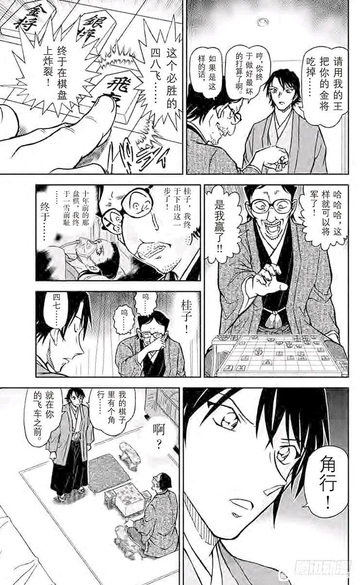
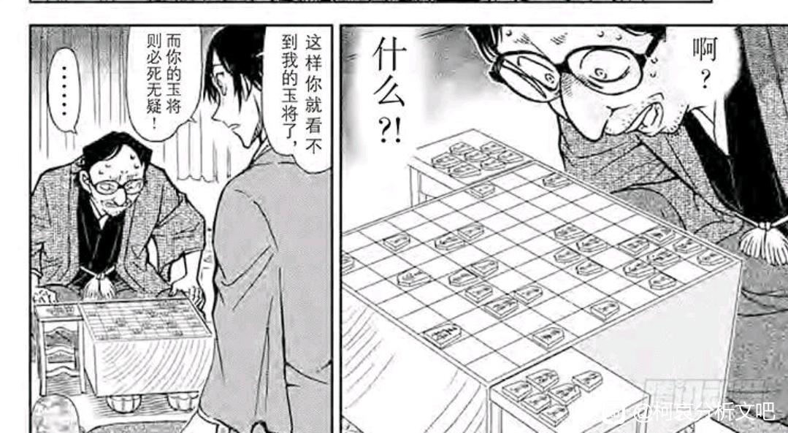
索隐结束，正片开始。
关于秀吉是否认得出柯南，这个似乎是存疑的，但秀吉知道柯哀都穿过豹纹却是实锤，且由于某种原因秀吉可能比一般人更容易发现柯哀关系的不寻常。
之前有吧友分析认为，柯哀与赤井夫妇（55和玛丽）是对应的，三小只里元太对应秀一，光彦对应秀吉，步美对应世良，我一直觉得这种说法非常有道理，而世良出生时父亲已经离开，秀一出走时世良还没出生，大概只有秀吉知道带娃不易。
柯南带三个小孩找线索小哀留下稳定秀吉心态，估计55和玛丽又要带娃又要做任务时也会是这个样子。（秀吉之后还会被柯哀多次助攻的）
恰好柯哀也在关注秀吉，他们好像都是太阁名人的粉丝在车里热烈讨论太阁名人的八卦，我记得青山说过赤井三兄妹里小哀最喜欢秀吉，漫画里确实是这样，不轻易夸人的小哀一直在夸秀吉。（秀一/世良： ）
）
如果小哀是对秀一夸夸，我估计柯南就忍不住了，欸但这是秀吉，自带女朋友由美，柯南直接实行大助攻。
关于秀吉是否认得出柯南，这个似乎是存疑的，但秀吉知道柯哀都穿过豹纹却是实锤，且由于某种原因秀吉可能比一般人更容易发现柯哀关系的不寻常。
之前有吧友分析认为，柯哀与赤井夫妇（55和玛丽）是对应的，三小只里元太对应秀一，光彦对应秀吉，步美对应世良，我一直觉得这种说法非常有道理，而世良出生时父亲已经离开，秀一出走时世良还没出生，大概只有秀吉知道带娃不易。
柯南带三个小孩找线索小哀留下稳定秀吉心态，估计55和玛丽又要带娃又要做任务时也会是这个样子。（秀吉之后还会被柯哀多次助攻的
）恰好柯哀也在关注秀吉，他们好像都是太阁名人的粉丝
在车里热烈讨论太阁名人的八卦，我记得青山说过赤井三兄妹里小哀最喜欢秀吉，漫画里确实是这样，不轻易夸人的小哀一直在夸秀吉。（秀一/世良：）如果小哀是对秀一夸夸，我估计柯南就忍不住了，欸但这是秀吉，自带女朋友由美，柯南直接实行大助攻。
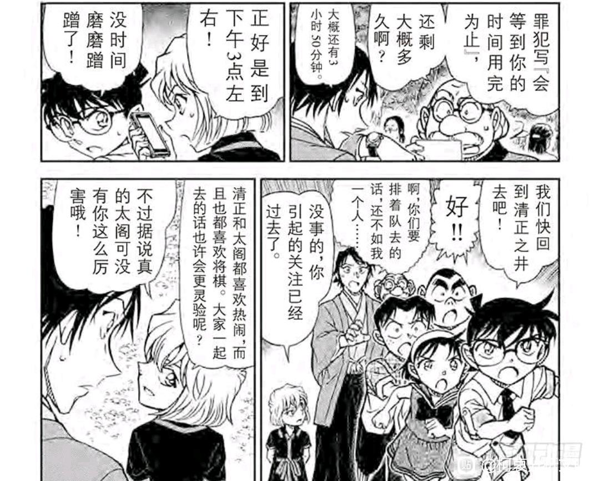
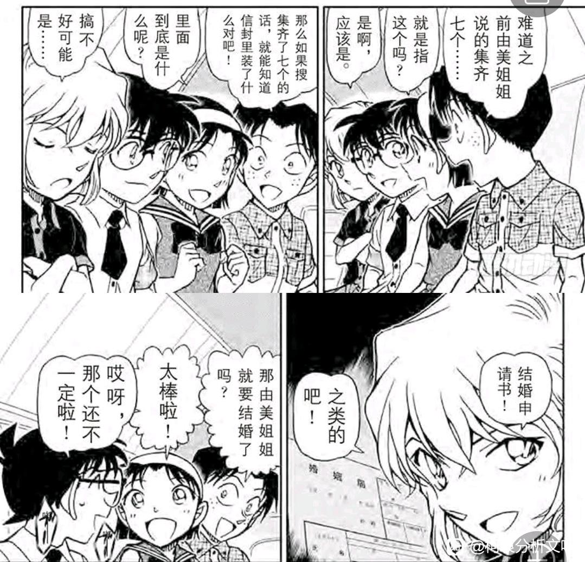
2024-08-19 19:49 | 清茶姑娘:忽然觉得偶尔让柯南炸毛一次也不错2024-08-23 12:00 | Asura兔子:玛丽好像也最喜欢秀吉这个儿子，小哀也最喜欢秀吉这个表哥2024-09-07 19:45 | 大水魚誒:笑死，所以元太是啊卡伊的反面对应是吗，毕竟光彦聪明，ayumi元气爱推理，这两位和秀吉还有真纯都是正面对照2024-09-07 19:49 | 大水魚誒:回复 清茶姑娘 :柯子警觉！大表哥是重点防范对象！2024-09-07 23:30 | 清茶姑娘:回复 大水魚誒 :柯南真正的醋意是什么样的在哀这里才被激发出来2025-03-28 22:22 | 了赡训:回复 大水魚誒 :元太和秀一都算行动派吧，而且两人都被妈妈打过
这里世良又打电话，我发现每次世良打电话，柯南都表现出一种“准备让小哀也听到电话内容”的状态，这种情况世良真是一点便宜也占不到。
除了世良是秀一妹妹这个信息，世良的其他所有信息，柯南都毫无保留地告诉小哀，连玛丽的事情都说了，我总有种柯南在向小哀“自证清白”的感觉，提前让小哀不认为世柯存在感情线，这一趋势后来越发明显，世哀对决时柯南基本毫无原则地站边小哀。
（关于世良搬家的原因，我上个帖子分析认为世良之前的酒店受到安室监听了，而羽田康晴马上就安排世良搬家，可见羽田-MI6一系对工安一系充满了不信任，那么秀吉和由美的“联姻”就大概率会形成双方一定程度的和解，居然具有战略意义，怪不得青山说秀由会最早结婚，有可能是因为不得不结）
除了世良是秀一妹妹这个信息，世良的其他所有信息，柯南都毫无保留地告诉小哀，连玛丽的事情都说了，我总有种柯南在向小哀“自证清白”的感觉，提前让小哀不认为世柯存在感情线，这一趋势后来越发明显，世哀对决时柯南基本毫无原则地站边小哀。
（关于世良搬家的原因，我上个帖子分析认为世良之前的酒店受到安室监听了，而羽田康晴马上就安排世良搬家，可见羽田-MI6一系对工安一系充满了不信任，那么秀吉和由美的“联姻”就大概率会形成双方一定程度的和解，居然具有战略意义，怪不得青山说秀由会最早结婚，有可能是因为不得不结）
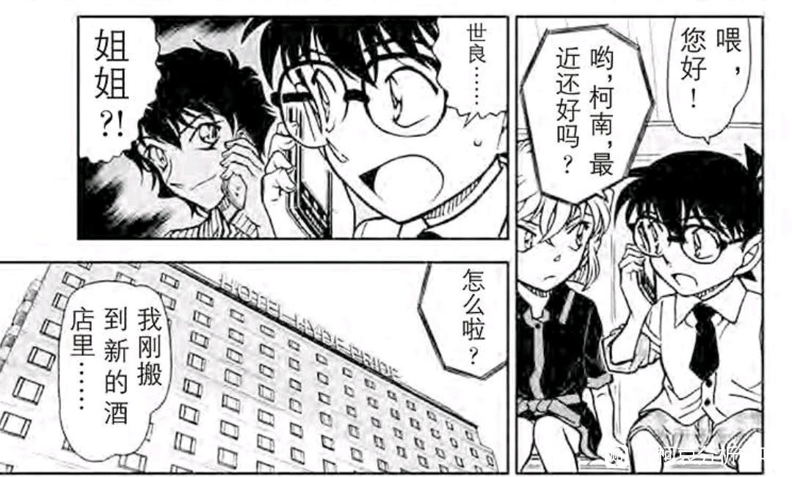
2024-08-19 19:51 | 清茶姑娘:就喜欢看柯南支持小哀，或者说他们俩互相支持2025-07-05 23:48 | Wf_yjqd:也是扯上四大家族了（
一部分的小哀，我怀疑被林原附体了
看小哀这半月眼，“你们会告诉我们的吧”，我总觉得这更像林原对南姐说的话，刚好这时是20周年，南惠的几个著名广播剧也都出来了，大概青山参考了林原的反应，为剧中小哀增加了更加活泼有趣的一面。
柯南表示晚点讲，小哀直接一个半月眼，柯南马上改口开始透信息，这改口速度真快，柯南肯定在关注小哀的表情，又想向小哀表现又怕小哀不高兴。
感觉越到后期，柯南就越喜欢在案件中主动和小哀互动，比较著名的像是让千叶把小哀抱起来，帮小哀开空调之类的，倒也根本不会影响破案，但就显得比较“享受”。
柯南的表现欲有时也会受到“挫折”，比如这里柯南试图把路边的文字当成自己的知识储备，马上被小哀拆穿了无所谓，下次还敢。
看小哀这半月眼，“你们会告诉我们的吧”，我总觉得这更像林原对南姐说的话，刚好这时是20周年，南惠的几个著名广播剧也都出来了，大概青山参考了林原的反应，为剧中小哀增加了更加活泼有趣的一面。
柯南表示晚点讲，小哀直接一个半月眼，柯南马上改口开始透信息，这改口速度真快，柯南肯定在关注小哀的表情，又想向小哀表现又怕小哀不高兴。
感觉越到后期，柯南就越喜欢在案件中主动和小哀互动，比较著名的像是让千叶把小哀抱起来，帮小哀开空调之类的，倒也根本不会影响破案，但就显得比较“享受”。
柯南的表现欲有时也会受到“挫折”，比如这里柯南试图把路边的文字当成自己的知识储备，马上被小哀拆穿了
无所谓，下次还敢。
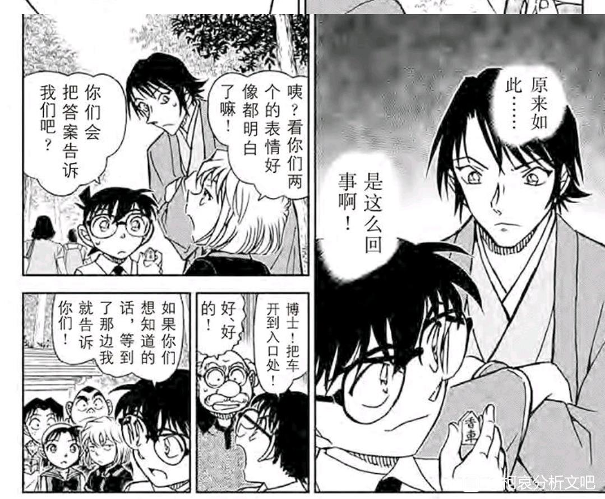
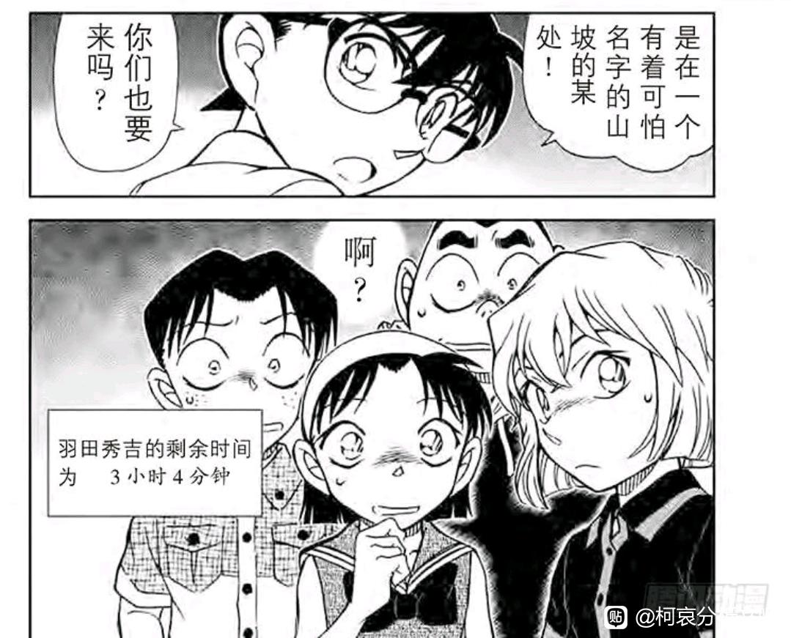
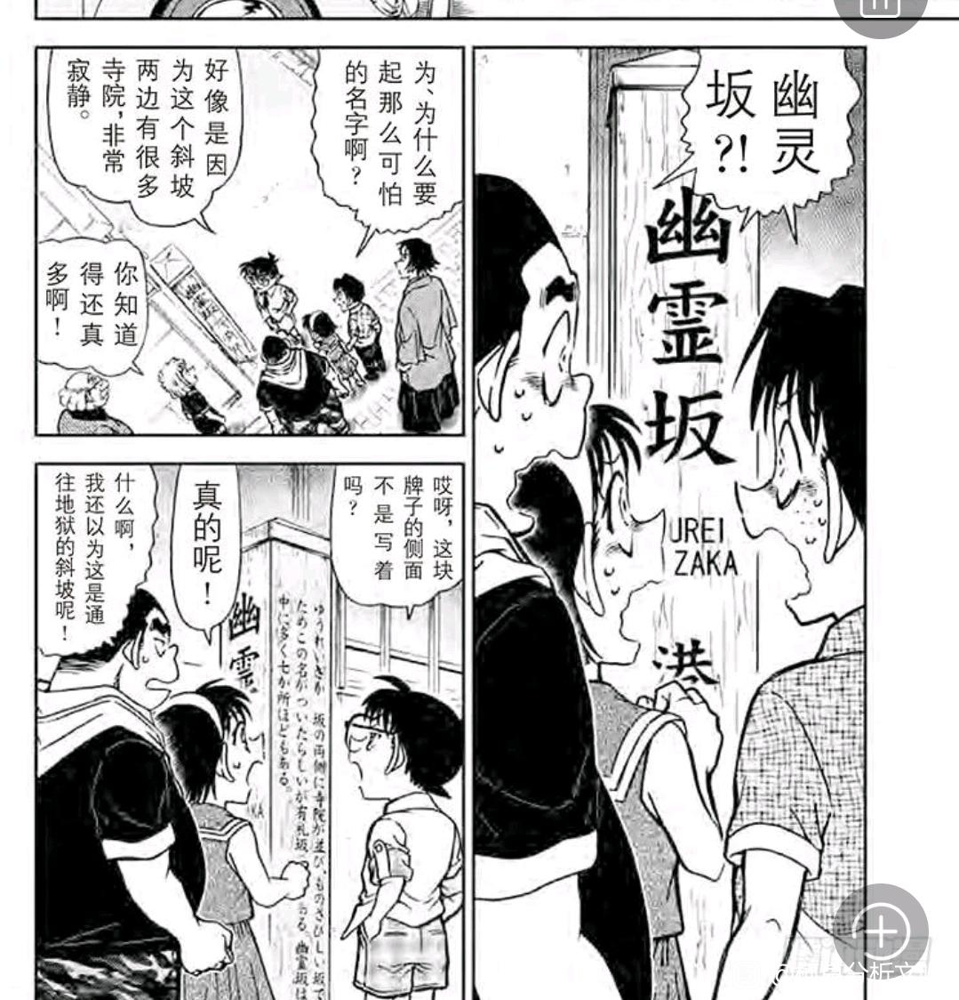
2024-08-19 20:04 | 贴吧用户_GDW6AXK:柯南让千叶把小哀抱起来肯定是有私心的，但也有必要的原因，就是小哀的衣服和犯人是一个颜色的，所以是最适合的，当然这种互动情节也只有小哀能够胜任2024-08-19 20:09 | 🌐之徙:回复 贴吧用户_GDW6AXK :柯南那时候嘴都笑歪了，一看就是故意的。（正常解释就行了，柯南像个装模作样的魔术师一样慢慢表演）2024-08-19 20:41 | 何振涛158:回复 贴吧用户_GDW6AXK :是故意调戏吗2024-08-19 20:45 | 贴吧用户_GDW6AXK:回复 何振涛158 :是借着正当理由故意调戏2026-01-07 12:19 | 萌小喵来也:我感觉这一段的解读，后半段太强行了
前排
最后是在苗子的见证下，秀由产生了护身符，猜猜哪一对CP只能亲脸而且没护身符？
欸，是苗子见证的，我在之前分析千苗时有提到，苗子可以是柯哀初遇的见证者，她和千叶在十三年前是帝丹小学的播音员，很可能认识明美，而朗姆篇千苗剧情甚多，远超更早出现的白林，或许这也是一种暗示吧。
（苗子的记忆力非常好，如果她的注意力不是在千叶身上，而是类似白鸟那样专门cue小哀的话，新志初遇可能会直接解锁）
欸，是苗子见证的，我在之前分析千苗时有提到，苗子可以是柯哀初遇的见证者，她和千叶在十三年前是帝丹小学的播音员，很可能认识明美，而朗姆篇千苗剧情甚多，远超更早出现的白林，或许这也是一种暗示吧。
（苗子的记忆力非常好，如果她的注意力不是在千叶身上，而是类似白鸟那样专门cue小哀的话，新志初遇可能会直接解锁）
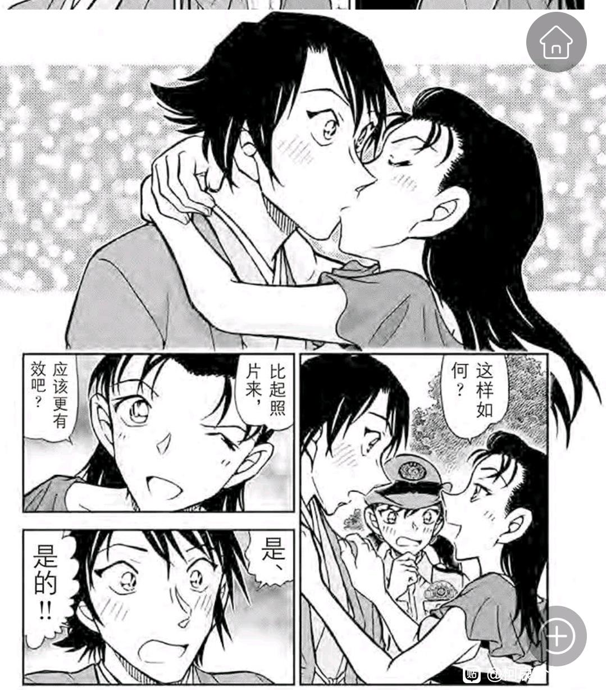
dd
cy
cy
先赞后看
cy
板仓卓案提到过贝姐是傲慢的飞车女，也就是将棋中的【飞车】，傲慢的英文是pride。
再看看9楼的图片，玛丽住的酒店名字就是pride。也就是说在900话的时候，青山就已经用微妙的方式将贝姐和玛丽建立起了联系。
这么看来，贝姐用嘴喂玛丽吃下A药的剧情是青山早就考虑好的。
再看看9楼的图片，玛丽住的酒店名字就是pride。也就是说在900话的时候，青山就已经用微妙的方式将贝姐和玛丽建立起了联系。
这么看来，贝姐用嘴喂玛丽吃下A药的剧情是青山早就考虑好的。
2024-08-19 21:31 | 🌐之徙:其实世良登场时就应该设定好贝姐喂💊了，这是世良的基本设定之一，我是觉得不一定一开始就嘴对嘴，可能是后来整活2024-08-19 21:34 | EdwardClow:回复 🌐之徙 :是啊，青山说过喂药那段剧情是他早就设计好的2024-08-19 22:23 | 世界上没有真理:好奇青山將貝姐跟瑪麗建立起聯繫是為啥？難道是因為艾蓮娜的關係？2024-08-19 22:30 | EdwardClow:回复 世界上没有真理 :我也认为与爱莲娜有关。纽约篇贝姐说过“天使没有对她微笑过”，恐怕这个天使指的就是地狱天使爱莲娜，另外，贝姐完全可以掰开玛丽的嘴再喂她吃A药，但是贝姐偏偏采取了kiss的方式。如果这不是青山的整活，而是贝姐跨越17年后的情感释放呢？那就很有趣了。2024-08-19 22:40 | 世界上没有真理:回复 EdwardClow :哈哈！那真是太有趣了2026-04-28 14:22 | Auniola:回复 EdwardClow :我去，故乡的百合花
至于通过酒店的名字来暗示剧情是青山常用的写作手法。比如17年前羽田案的酒店名称是Juke hotel。
juke指的是做假动作诱使（对方球员）离位。对应名柯中的剧情就是羽田说出乌丸莲耶的名字来诱导朗姆将视线从书架上转移，以此来保护浅香。
juke指的是做假动作诱使（对方球员）离位。对应名柯中的剧情就是羽田说出乌丸莲耶的名字来诱导朗姆将视线从书架上转移，以此来保护浅香。
题外话，我小的时候看秀吉救由美的这个系列，漫画封面上的将棋图案是“七三”，当时我还好奇为什么青山要把自己名字谐音画在将棋上
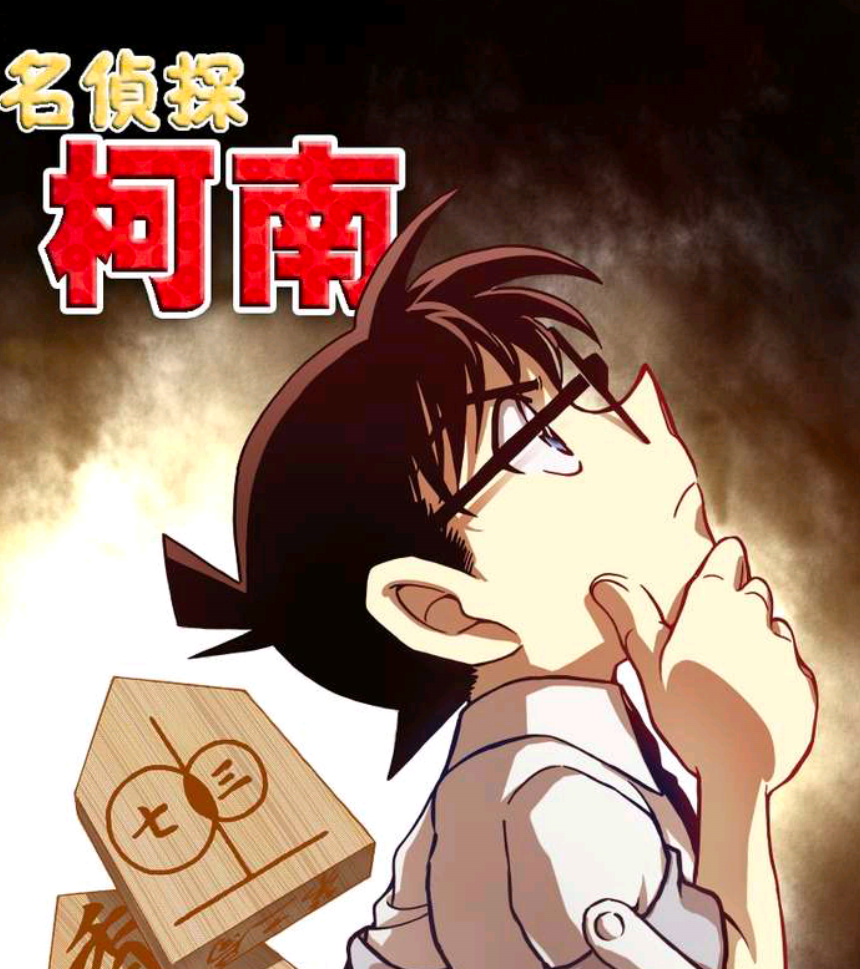
2024-08-20 07:05 | 🌐之徙:日本那边应该没这个梗吧确实蛮好笑的，大小眼73
cy
2、世新初遇模型：酒店泳池案
与小兰，服部，秀一等大部分角色不同，世良第一次出场即自带初遇属性，给柯南一种“似曾相识的感觉”，这种状态一直持续到涟漪篇。世良登场于73卷，涟漪篇在92卷，隔了近20卷才揭开真相，这是非常长的。（作为对比，羽田浩司案也只有15卷左右）
诚然，读者们会说“青山在拖剧情”“赤楼梦”并给予负面评价，然而一段剧情这样设计，必然有其内在原因，通过观察，我们很容易发现这样的结构特点：
1、世良先登场，出现大量初遇线索。
2、先出现【樱花班】。
3、再出现【涟漪篇】。
4、在涟漪篇之前的回忆并不是以柯南为主，而是基于第三方视角。
具体到涟漪篇，柯南只记得世良的小虎牙，但是小兰的印象更深一些，知道故事在海边，知道“魔法师”梗，甚至知道玛丽在场，这导致在未画涟漪篇之前，【读者已经能大概知道涟漪篇发生了什么】。
于是可以做出大胆的假设：【世良与新一的初遇，是在为更重要的一场初遇创造受众读者】，这一种初遇最大的特点是【可推理】，并且在樱花班前后都有大量的线索。
作者通过世新初遇，将这一类愿意接受作者挑战的读者保留下来，再准备一个更大的谜题。
（尽管一种激进的观点认为小哀18卷登场时已经有初遇模型，并举出了竞技场13号机空位的倾向性证据，但我依然认为从创作角度，当时至多是为柯哀初遇预留接口，而很难真正设计出全面的剧情，18卷的名柯结构上还是不稳定的，并未能像世良登场时那样直接增加初遇剧情。）
（我个人的观点，新志初遇如果有真正的构造，应该是在满月前，与博士芙纱绘事件一起设计出来，满月之后作者应该有相当自信能够推动柯哀，而18卷时期动画组甚至不愿意将小哀动画化，这时的初遇未免太超前了）
（博士芙纱绘是名柯中第一对初遇-分离-再会模型，之后就源源不断出现新平滑雪场，白林，千苗等等剧情，而博士芙纱绘之前的秀一等人并未设置与新一初遇）
与小兰，服部，秀一等大部分角色不同，世良第一次出场即自带初遇属性，给柯南一种“似曾相识的感觉”，这种状态一直持续到涟漪篇。世良登场于73卷，涟漪篇在92卷，隔了近20卷才揭开真相，这是非常长的。（作为对比，羽田浩司案也只有15卷左右）
诚然，读者们会说“青山在拖剧情”“赤楼梦”并给予负面评价，然而一段剧情这样设计，必然有其内在原因，通过观察，我们很容易发现这样的结构特点：
1、世良先登场，出现大量初遇线索。
2、先出现【樱花班】。
3、再出现【涟漪篇】。
4、在涟漪篇之前的回忆并不是以柯南为主，而是基于第三方视角。
具体到涟漪篇，柯南只记得世良的小虎牙，但是小兰的印象更深一些，知道故事在海边，知道“魔法师”梗，甚至知道玛丽在场，这导致在未画涟漪篇之前，【读者已经能大概知道涟漪篇发生了什么】。
于是可以做出大胆的假设：【世良与新一的初遇，是在为更重要的一场初遇创造受众读者】，这一种初遇最大的特点是【可推理】，并且在樱花班前后都有大量的线索。
作者通过世新初遇，将这一类愿意接受作者挑战的读者保留下来，再准备一个更大的谜题。
（尽管一种激进的观点认为小哀18卷登场时已经有初遇模型，并举出了竞技场13号机空位的倾向性证据，但我依然认为从创作角度，当时至多是为柯哀初遇预留接口，而很难真正设计出全面的剧情，18卷的名柯结构上还是不稳定的，并未能像世良登场时那样直接增加初遇剧情。）
（我个人的观点，新志初遇如果有真正的构造，应该是在满月前，与博士芙纱绘事件一起设计出来，满月之后作者应该有相当自信能够推动柯哀，而18卷时期动画组甚至不愿意将小哀动画化，这时的初遇未免太超前了）
（博士芙纱绘是名柯中第一对初遇-分离-再会模型，之后就源源不断出现新平滑雪场，白林，千苗等等剧情，而博士芙纱绘之前的秀一等人并未设置与新一初遇）
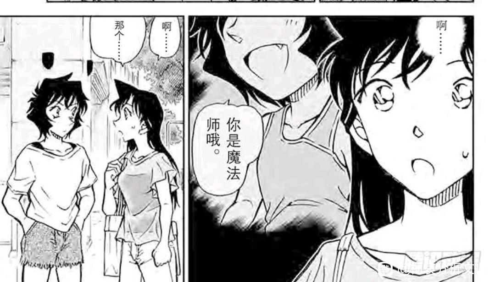
2024-08-20 11:09 | 清茶姑娘:看到分析我忽然更觉得新一小时候一定受过什么创伤了（外伤和心理应激反应都有可能），因为总觉得居然某∠比新一记得更清楚有些不可思议2025-11-29 08:26 | 雪者风形:结果如今已经追溯到步美绑架案了，令人感叹（x
下面具体分析酒店泳池案。
本案世良又一次体会了小兰的某些神奇特质：一种奇奇怪怪的捆绑话术+假传圣旨风格。
本来世良是只叫柯南过来“见家长”，要求不许带小孩来，结果小兰听说了这件事直接选择硬蹭进来，我看柯南的表情尴尬极了，直接开始疯狂解释。
小兰一句“是不是打扰到你们了”，这世良也没法拒绝啊，只好赶紧让玛丽藏好，玛丽肺都气炸。
这里我关注的是园子的反应，园子看起来很激动，但是听到世良本来只邀请柯南一个人之后，马上一言不发并看向小兰（也可以理解为看世良，但园子没有流汗，结合卡拉OK事件园子的反应，我倾向于这里就是在看小兰）
柯南如果要去世良家，首先需要向小兰报备，而小兰对园子传递的信息恐怕有所失真，我看园子的反应似乎更像是她认为世良本来就邀请了所有人，结果被小兰坑了一下非常难受。（估计园子也习惯了）
之后园子反复强调这里泳池没有自家的大（园子通常是不炫富的），我觉得这里就是在暗中否认自己不是为了泳池来的，而是听小兰说“世良邀请大家来”才来。
所以小兰这里的确是对症下药，对园子使用“假传圣旨”（和园子红手帕事件一样），对世良就捆绑一下柯南，一下子就进入了高级场所，还是有一定的水平。
本案世良又一次体会了小兰的某些神奇特质：一种奇奇怪怪的捆绑话术+假传圣旨风格。
本来世良是只叫柯南过来“见家长”，要求不许带小孩来，结果小兰听说了这件事直接选择硬蹭进来，我看柯南的表情尴尬极了，直接开始疯狂解释。
小兰一句“是不是打扰到你们了”，这世良也没法拒绝啊，只好赶紧让玛丽藏好，玛丽肺都气炸。
这里我关注的是园子的反应，园子看起来很激动，但是听到世良本来只邀请柯南一个人之后，马上一言不发并看向小兰（也可以理解为看世良，但园子没有流汗，结合卡拉OK事件园子的反应，我倾向于这里就是在看小兰）
柯南如果要去世良家，首先需要向小兰报备，而小兰对园子传递的信息恐怕有所失真，我看园子的反应似乎更像是她认为世良本来就邀请了所有人，结果被小兰坑了一下非常难受。（估计园子也习惯了）
之后园子反复强调这里泳池没有自家的大（园子通常是不炫富的），我觉得这里就是在暗中否认自己不是为了泳池来的，而是听小兰说“世良邀请大家来”才来。
所以小兰这里的确是对症下药，对园子使用“假传圣旨”（和园子红手帕事件一样），对世良就捆绑一下柯南，一下子就进入了高级场所，还是有一定的水平。
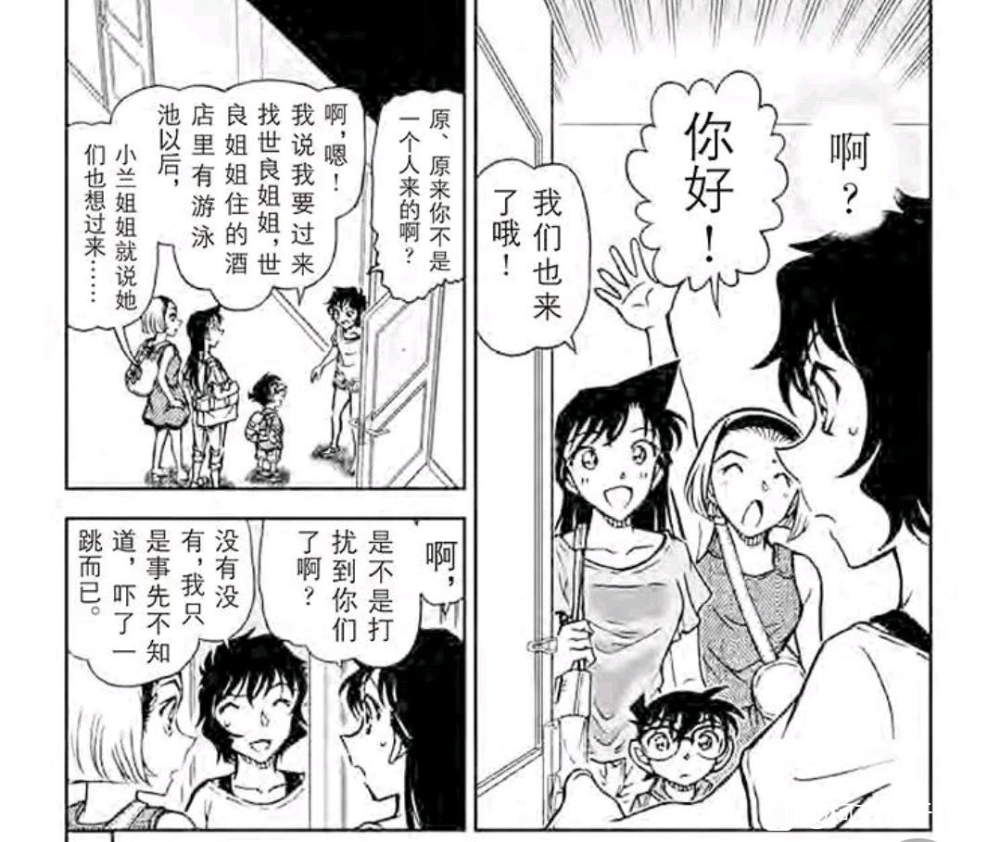
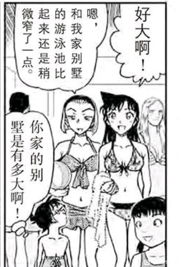
2024-08-20 11:25 | 乐以轩🌟:小兰这件泳衣是真的漏，所以到底是哪些人在说园子轻浮小兰真经的，就这两身对比小兰穿的是真的少。2024-08-22 15:24 | 没字也行:小柯的脸色没有一脸尴尬吧？不是很开心而已，并且多少是有点警惕。按他熟悉兰姐姐的情况，怕不是要让兰过来当第三者来试探一下？而且世良一开始的问话也没有立刻反应过来，当时是不在状态的。2024-08-22 15:28 | 没字也行:园子那表情应该解读为疑惑：我还以为世良是邀请大家一起来，搞团建呢。原来是世良想和小子说悄悄话啊。那小兰你拉上我一起来是什么意思？2024-08-22 15:31 | 没字也行:小兰想利用园子增加留下来的概率的动机，园子应该是知道的。（毕竟当着园子（第三人）的面，世良就算想拒绝小兰加入，也不太说得出口了。）2024-08-22 15:34 | 没字也行:要是园子机灵点，就能从对话看出，世兰柯这三者中间有鬼。不太记得本篇是不是拉窗帘之后了。如果按小兰还继续怀疑柯=新的话，世良和新一的独处，她兰神是要在场的2024-08-22 15:37 | 没字也行:疑点1：世良没有通过小兰约柯南；疑点2：世良要单独见的柯南；疑点3：小兰没有感到疑惑，而是要强硬插入这种场面。。。。你们是不是分别都有事情瞒着我园？2024-08-22 15:41 | 没字也行:如果小兰没有怀疑柯=新的话，应该是这样发展：“唉？世良要你去她那的游泳池？怎么不和我说，一起走我送送你（根本不会拉园子入场）”2024-08-22 15:44 | 没字也行:正常人是上述的思路，但是兰神摊上这个薛定谔的柯南，人就不正常了，成鬼了。2024-08-22 15:48 | 没字也行:我柯要和兰神报备去哪里，这次偏偏就说实话，也是让我蚌埠住。说去博士家就好，打掩护对口供就行了，根本不会扯这么多事。我柯去博士家不是日常？2024-09-26 17:05 | long126zhen:小兰想和园子当一辈子的朋友所以不花园子的钱，但这里哪怕自己也知道不合适还是要硬蹭世良，“公私分明”。进一步想想，她之所以在新一面前强调不愿花园子的钱到底是为了园子还是为了她自己，真不好说哦……2025-04-15 12:26 | 发疯的法师:回复 long126zhen :借钱是友尽的导火索嘛 跟世良又不熟2025-08-29 02:39 | 勇者大冒险求更:回复 乐以轩🌟 :这不是一个很正常的泳衣吗？不透明也不漏重点部分，要想小孩子那样穿连体的才叫守妇道吗 园子轻浮是性格上的，看见帅哥就想搭讪，这也不是毛病啊。小兰没有主动寻找帅哥搭讪，有代餐但并非看见就立马粘上去，相对来说就是清纯。你别讨厌小兰就什么垃圾东西都往上放。
至于小兰进入泳池原本的理由嘛……
可能是延续赤女案，因为这又是一个小兰的卖肉平台，且青山向来热衷于把小兰和世良的身材进行比较，一直到红修都是这个样子。
（园子猜测世良会穿连体泳衣…难道园子也受到了网中迷的影响？园子知道世良喜欢柯南，之前又听说柯南喜欢小哀，所以开始瞎猜一通）
我一直觉得，身材上胜过世良的事实，让小兰具有相当的安全感，尽管新一和世良通电话而不怎么和自己通，尽管世良可以随意吸引走柯南的注意力，但只要身材优势还在，小兰就还是能在世良面前保持雌竞上的体面，不至于像对待赤木量子一样对待世良（也可能是打不过）。
可能是延续赤女案，因为这又是一个小兰的卖肉平台，且青山向来热衷于把小兰和世良的身材进行比较，一直到红修都是这个样子。
（园子猜测世良会穿连体泳衣…难道园子也受到了网中迷的影响？园子知道世良喜欢柯南，之前又听说柯南喜欢小哀，所以开始瞎猜一通
）我一直觉得，身材上胜过世良的事实，让小兰具有相当的安全感，尽管新一和世良通电话而不怎么和自己通，尽管世良可以随意吸引走柯南的注意力，但只要身材优势还在，小兰就还是能在世良面前保持雌竞上的体面，不至于像对待赤木量子一样对待世良（也可能是打不过）。
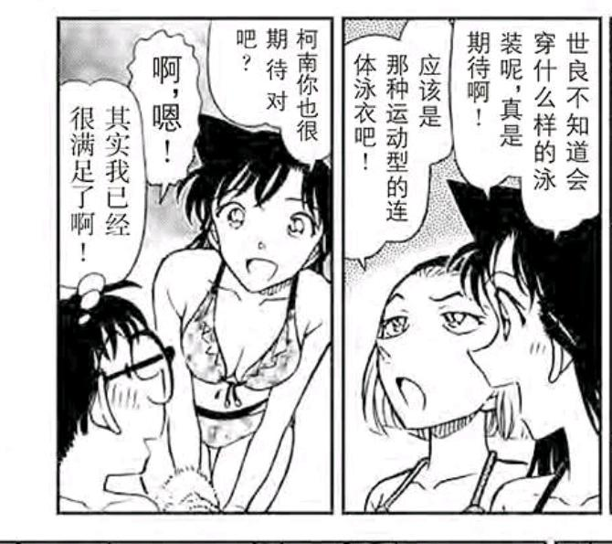
2024-08-20 11:11 | 清茶姑娘:∠÷怎么有脸诬陷73大男子主义，明明是它们的∠顺理成章各种卖肉各种雌竞各种封建时代的怨妇＋雌竞心态啊2024-08-20 13:27 | -请修改昵称-:这两个分镜确实有雌竞嫌疑。很明显小兰非常好奇并且想看世良穿泳装，然后莫名其妙弯下腰道德绑架柯南一波，让柯南强行期待，这样就不是她一个人期待了。你上一秒聊的是泳装，下一秒问柯南也很期待，请问这种对话是什么脑回路？你但凡上一秒聊的是水滑梯好玩我都觉得正常。2024-09-26 17:09 | long126zhen:回复 -请修改昵称- : 这就是典型的不粘锅思维啊，虽然我确实是这么想的，但你也想的，对不对，所以我是为了帮你才这样的，来，锅接好
园子此时正式把世良的称呼改为“世良酱”，显得更加亲密了（也可能是青山在强调世良也是女生），似乎园子与世良的关系要好于小兰和世良的关系。
兰园关系算是健康的友谊，虽然在物质上二者确实不均等，但是精神上是小兰在为园子提供情绪价值（所以园子一直很快乐），相比之下世良和园子的关系更纯粹一些，没有这种物质精神对换，至少请得起一碗拉面
这里的世柯同框表情也蛮好磕的世良的朋友圈里柯南＞园子＞小兰，我甚至觉得本案之后，世良有意让园子加入自己的计划中，以至于让玛丽在外面出现，看园子会不会发现自己。
玛丽的任务之一是“探索新的领域”，意思大概是寻找新盟友，羽田康晴受制于工安，甚至被安室窃听，那么世良其实可以考虑铃木家，这个酒店看似大家大业，其实也是铃木家的分部而已，加之还有共同对手（大冈家），园子后期甚至可以绕过小兰参加主线。
兰园关系算是健康的友谊，虽然在物质上二者确实不均等，但是精神上是小兰在为园子提供情绪价值（所以园子一直很快乐），相比之下世良和园子的关系更纯粹一些，没有这种物质精神对换，至少请得起一碗拉面
这里的世柯同框表情也蛮好磕的
世良的朋友圈里柯南＞园子＞小兰，我甚至觉得本案之后，世良有意让园子加入自己的计划中，以至于让玛丽在外面出现，看园子会不会发现自己。玛丽的任务之一是“探索新的领域”，意思大概是寻找新盟友，羽田康晴受制于工安，甚至被安室窃听，那么世良其实可以考虑铃木家，这个酒店看似大家大业，其实也是铃木家的分部而已，加之还有共同对手（大冈家），园子后期甚至可以绕过小兰参加主线。
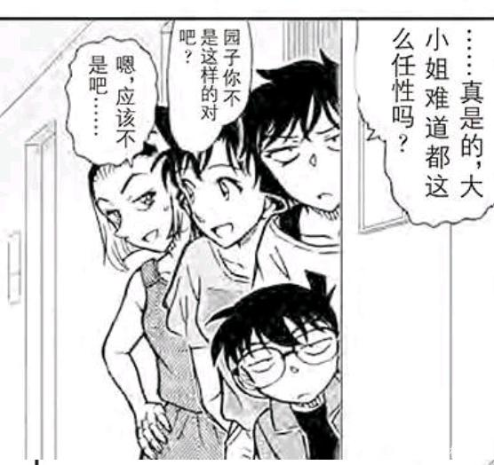
2024-08-20 10:59 | EdwardClow:羽田康晴被安室透窃听？这是啥时候的剧情2024-08-20 11:16 | 清茶姑娘:个人来说不太认为某∠为园子提供情绪价值，至少不是情愿的，因为某∠也需要从园子蹭各种聚会或者其他好处（比如铃木列车），如果连起码的情绪价值都没有，它凭什么呢？有时候明明园子不情愿但还是抹不开面子（卡拉OK案），不就是以为某∠这人是朋友所以不好意思拒绝嘛2024-08-20 11:18 | 🌐之徙:回复 EdwardClow :本次世良换酒店，因为上个酒店很可能被安室窃听了，我在折叠时空十有分析2024-08-20 11:19 | 🌐之徙:回复 清茶姑娘 :情绪价值还真的有，园子随便一句话小兰就会患得患失，然后园子一旁乐。2024-08-20 11:40 | 清茶姑娘:回复 🌐之徙 :我的意思是它不是情愿提供情绪价值的，而是为了拉交情，蹭聚会等而提供，当然也包括被人拿来开玩笑这种。2024-08-20 15:14 | 红茶中的白兰地:兰这种性格，能在幼儿园就遇到两个能主动出头保护她的正义之士，运气真是好。提供点情绪价值而已，赚大了2025-01-31 10:10 | 贴吧用户_7PX2yAy:mll为什么还要点一下园子 还是问句？自己闺蜜还不信任？但凡正常人都会说 园子就不这样！ 嘛
本案这位一脸死相的死者也是重量级，她享受着让男人帮她拉衣服后拉链/发烧时让人摸额头，我寻思这不是小兰的剧情吗新兰很多案件最后还是要绕到内衣问题，而且小兰确实很享受新一给他量体温。
然后漫画里明确表示柯南对这类行为的反感园子更是直说“会被人讨厌”，四个人只有小兰没有表示反对，这暗示未免过于明显。
新兰很多案件最后还是要绕到内衣问题，而且小兰确实很享受新一给他量体温。然后漫画里明确表示柯南对这类行为的反感
园子更是直说“会被人讨厌”，四个人只有小兰没有表示反对，这暗示未免过于明显。
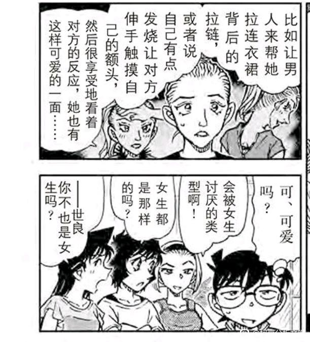
2024-08-20 11:17 | 清茶姑娘:最后这张图某∠明显心虚了啊，它可能潜意识里认为女生这样天经地义吧，所以被世良一说有点羞恼交加的意思2025-01-31 10:12 | 贴吧用户_7PX2yAy:上一张图世良也用这样的问句 我估计老贼有意为之
之后青山又在黑小兰的学习水平。
这里的手法是非常简单的折射原理，中国初中应该就学到了，日本大概小学高年级会学。
小兰对整个原理完全不知情，柯南表示“小兰姐姐你上小学时应该学过”，也就是当时上小学，是新兰一起学的这件事，这是真的学过，不是什么超纲知识。
旁边园子马上反应过来这是小学高年级的知识，并发现了华点（柯南才一年级），而小兰还是一脸懵，光这个小细节，又能得出小兰在三位女高中生中学习最差。
大概小兰的文科会比较强吧？但是危命时剧本又是园子写的，估计不比园子强；小兰的历史水平则相当不平衡，感兴趣的部分学得不错，另一部分就蒙圈。小兰的人生规划靠学习肯定不行，基本只能围绕空手道，但空手道小兰的水平也不一定可靠
这里的手法是非常简单的折射原理，中国初中应该就学到了，日本大概小学高年级会学。
小兰对整个原理完全不知情，柯南表示“小兰姐姐你上小学时应该学过”，也就是当时上小学，是新兰一起学的这件事，这是真的学过，不是什么超纲知识。
旁边园子马上反应过来这是小学高年级的知识，并发现了华点（柯南才一年级），而小兰还是一脸懵，光这个小细节，又能得出小兰在三位女高中生中学习最差。
大概小兰的文科会比较强吧？但是危命时剧本又是园子写的，估计不比园子强；小兰的历史水平则相当不平衡，感兴趣的部分学得不错，另一部分就蒙圈。小兰的人生规划靠学习肯定不行，基本只能围绕空手道，但空手道小兰的水平也不一定可靠
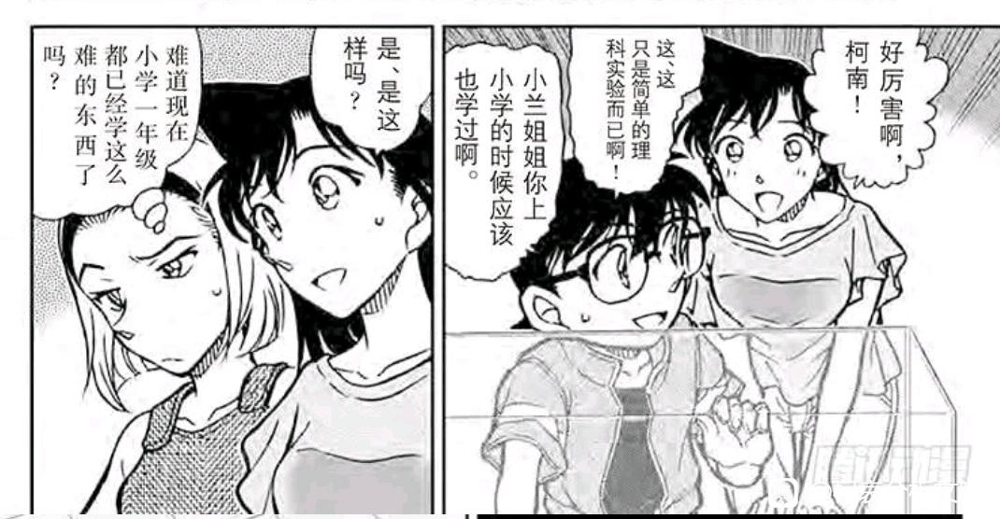
2024-08-20 11:22 | 清茶姑娘:日本律师地位挺高的，妃英理又是“不败的女王”，毛利小五郎虽然辞职后颓废过，可是柯南到他家前一直没什么生意，结果他照样还是能喝酒赌马追星，而且家里的事务所在热闹市区，说明起码家底厚。更不用提后面有了柯南小五郎也开始逐渐走出颓废迎来高光。但是这样的家底能让某∠上得起明显是贵族性质的2024-08-20 11:25 | 清茶姑娘:私立学校（园子这种级别应该不会上一般的学校，其他同学的家底虽然没表现，但新一家的丰厚不用说，“危名篇”里还有校长的女儿毕业后计划嫁给医生的情节，明显是一些富贵豪门才有的情节），却不能打消某∠内心的自卑感。它似乎永远有“不配”感，也永远贪婪，妄想得到更多，尤其是通过恋爱婚姻之类的2024-08-20 11:27 | 清茶姑娘:捷径得到更多，所以想到的不是自己努力，而是依靠别人，新一不用说了，去哪里玩坐什么游艇之类，包括和偶像见面，也都是依靠园子。2024-08-20 19:52 | 清茶姑娘:回复 贴吧用户_QU2KPRP :某∠要真拿着这个当回事那就真是妄想坐享其成想疯了。谁说推理小说家不用劳动了？要真是会写几个字会编故事就能当畅销作家，人人都去“天降财富”了，可有那么容易吗？别说优作也是一步步打拼出来的，就说优作成名以后，还有被出版商“围攻”被迫写稿子的画面呢。当演员也一样2024-08-20 19:55 | 清茶姑娘:回复 贴吧用户_QU2KPRP :我说的是演员不是流量明星，要体验生活，要磨练演技，冬夏乱令穿不合时宜的衣服拍戏都是小事，要拍打戏还得练身手（山村操第一次出场提过有希子的打戏），谁说能天降了？某∠典型的光眼馋人家的获得，不关注人家付出了多少。2024-08-21 18:30 | dantecao:这张图园子好好看，颜值已经超过兰内酱2024-11-23 11:34 | 贴吧用户_GDP5A55:当动作演员够了，女性这个水平已经不错了2025-04-15 12:29 | 发疯的法师:不一定可靠是对比主角团这些神仙级的怪物 正常来说还是不错的。就算考虑到那学姐没上场 那也是关东大赛的亚军
最后这个剧情更是重量级：青山安排小兰看见玛丽，并且想到涟漪篇玛丽也在场。
小兰视角下世良也是只有两个哥哥而已，所以如果小兰保持想象力，将立刻得到【世良的妈妈变小了】这一结论，既然有人可以变小，那么柯南是变小的新一这点也很自然嘛。
（我甚至认为小兰已经想到了这一点，所以一直在拿危命麻醉自己，偏偏绯色篇安室取得了“口罩型变声器”的关键线索，安室连秀一假死都推得出来，推理危命简直轻松无比）
我倾向于这里玛丽出来，是准备给园子稍微看到的，结果不慎被小兰目击，园子坚持称世良为“世良酱”，这可是步美叫“哀酱”的同位剧情，世良肯定也知道园子是可靠之人，马上就安排了园子梦想中的拉面。
小兰的作用也是有的：为观众提供世新初遇线索就像樱花班其实在提供柯哀线索一样，至于小兰本人，好像真的不太重要。本案之后世良在女高中生场次的关注点转向园子，就像朱蒂，秀一等其他主线人物一样离小兰而去了。
小兰视角下世良也是只有两个哥哥而已，所以如果小兰保持想象力，将立刻得到【世良的妈妈变小了】这一结论，既然有人可以变小，那么柯南是变小的新一这点也很自然嘛。
（我甚至认为小兰已经想到了这一点，所以一直在拿危命麻醉自己，偏偏绯色篇安室取得了“口罩型变声器”的关键线索，安室连秀一假死都推得出来，推理危命简直轻松无比）
我倾向于这里玛丽出来，是准备给园子稍微看到的，结果不慎被小兰目击，园子坚持称世良为“世良酱”，这可是步美叫“哀酱”的同位剧情，世良肯定也知道园子是可靠之人，马上就安排了园子梦想中的拉面。
小兰的作用也是有的：为观众提供世新初遇线索
就像樱花班其实在提供柯哀线索一样，至于小兰本人，好像真的不太重要。本案之后世良在女高中生场次的关注点转向园子，就像朱蒂，秀一等其他主线人物一样离小兰而去了。
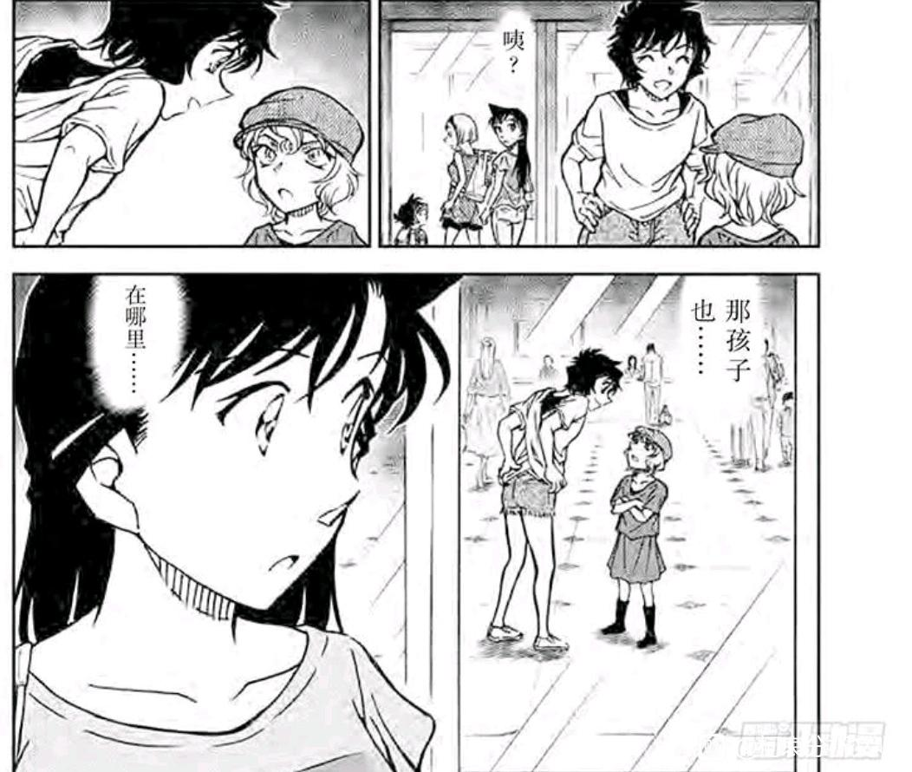
2024-08-20 11:44 | 清茶姑娘:是个人都比某∠有价值而且有头脑耶2024-08-20 16:35 | 上総守信長ºº:还真是，为什么是个角色都可以被兰神反衬啊2024-08-22 15:57 | 没字也行:先不论小兰能不能补出变小的结论，这里应该是看到“灰原哀”出场了吧？至臻版。2024-09-26 17:26 | long126zhen:这里其实也挺牵强的，涟漪篇玛丽和小兰见面一共也没几次，她居然能看着玛丽初中生的脸想到人家40代的样子，那她看小哀怎么没反应？这里只能理解为她不是在认脸，而是玛丽也曾和秀一一样给她留下了某种难以磨灭的记忆点，比如严肃地骂了她一顿或者点出了她某种负面行为
cy了 lz加油
lz加油
lz加油3、“朗姆三选一”：柯哀的共同价值观
好多人说“朗姆篇一开始，小哀隐瞒了一些信息”，这种说法显然是不对的，漫画里明确表示，朗姆的信息非常少，连秀一都对朗姆知之甚少，小哀倒是知道三选一的传闻。
三选一传闻中“老人，女人和壮汉”其实就是仓库老人事件里的朗姆，秀一和卡迈尔，该事件秀一暴露，居然惊动了朗姆本人，而现场三人中有一人是朗姆的小道消息也在组织中不胫而走。
（秀一不知道这个小道消息，因为他马上就跑路了，但小哀知道一些）
至于独眼的传闻，这应该算是比较核心的秘密，连伏特加都只知道一些谣言而已，小哀印象不清是很正常的，这里小哀真的是在用力回忆（甚至本能地闭上一只眼），绝不是故意隐瞒柯南。
小哀在朗姆篇主要隐瞒的不是朗姆的信息，而是【A药秘密】和【若狭身份】，前者兹事体大，后者也必须小心，其他的信息全都和柯南共享了，柯南在朗姆篇也并不隐瞒小哀（秀一身份柯南不说小哀也知道）。
好多人说“朗姆篇一开始，小哀隐瞒了一些信息”，这种说法显然是不对的，漫画里明确表示，朗姆的信息非常少，连秀一都对朗姆知之甚少，小哀倒是知道三选一的传闻。
三选一传闻中“老人，女人和壮汉”其实就是仓库老人事件里的朗姆，秀一和卡迈尔，该事件秀一暴露，居然惊动了朗姆本人，而现场三人中有一人是朗姆的小道消息也在组织中不胫而走。
（秀一不知道这个小道消息，因为他马上就跑路了，但小哀知道一些）
至于独眼的传闻，这应该算是比较核心的秘密，连伏特加都只知道一些谣言而已，小哀印象不清是很正常的，这里小哀真的是在用力回忆（甚至本能地闭上一只眼），绝不是故意隐瞒柯南。
小哀在朗姆篇主要隐瞒的不是朗姆的信息，而是【A药秘密】和【若狭身份】，前者兹事体大，后者也必须小心，其他的信息全都和柯南共享了，柯南在朗姆篇也并不隐瞒小哀（秀一身份柯南不说小哀也知道）。
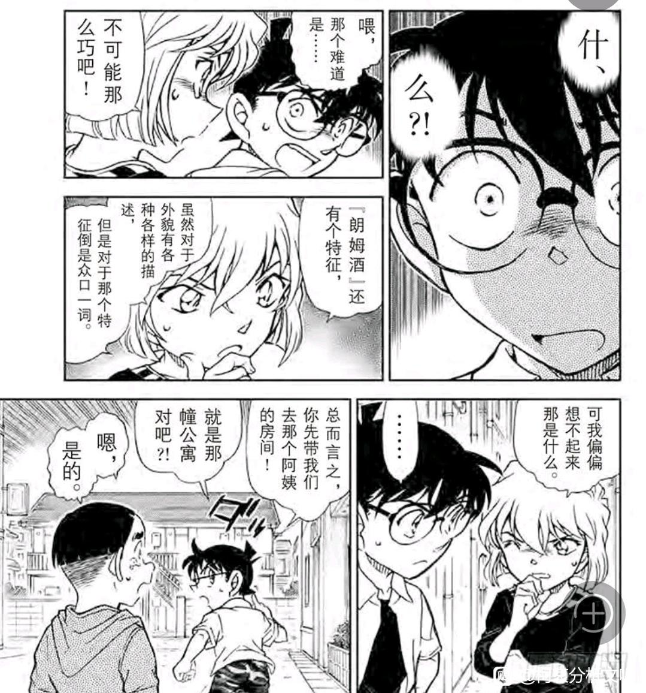
2024-08-21 09:41 | EdwardClow:目前组织成员中明确见过朗姆的只有琴酒，其他成员只是听说过朗姆的传闻。2024-08-21 10:52 | dldfj114514:这么看来，朗姆三嫌里的黑田、若狭和仓库三人里的卡迈尔、赤井都有对应，一个是官方壮汉，一个是复仇“女人”，答案一开始就写好了2024-08-21 11:30 | 清茶姑娘:啊，其实以前没把朗姆三嫌和仓库事件联系起来过，不过这么看的话，至少这个朗姆地位也不算稳，因为小道消息居然这么就流传开了，开来黑衣组织内斗比想象的激烈2024-08-21 11:46 | EdwardClow:回复 清茶姑娘 :2014年就有人猜到仓库老人是朗姆了2024-08-21 11:57 | 清茶姑娘:回复 EdwardClow :不是说猜不猜到那个老人是朗姆，我是说朗姆的“老人，壮汉，女人”三嫌居然对应的是仓库当时的人，以前没想过这些2024-08-21 11:58 | EdwardClow:回复 清茶姑娘 :是啊，我想表达这些观点在2014年就有人提出了2024-08-21 12:03 | 清茶姑娘:回复 EdwardClow :好吧，是我孤陋寡闻了2024-09-07 20:49 | 大水魚誒:回复 EdwardClow :10年前2024-10-22 10:41 | 贴吧用户_5NQR378:回复 EdwardClow :我觉得从m20、m26里面，贝姐应该是知道朗姆的2024-11-26 00:11 | 滦炐祐😁😁:回复 爱德华·克洛 :大概漫画出到36宫格的完美犯罪我就直接认定朗姆是厨子了
有许多迹象表明，柯哀平时聊天的话题极为宽泛。
这里小哀说“拉姆”，柯南立刻知道小哀说的是“那部漫画的拉姆”，意思是他们都看过这部漫画，也都知道对方看过
其他一些相当劲爆的话题还包括：秀一的“萝莉控”（红黑篇），小兰的“安产型”（网中迷），”领域外的妹妹的“深夜动画”，上一案秀吉还和孩子们聊“烟花巷的老鸨”，这真是不愁没有话题。
（我严重怀疑柯哀都处于理论水平极度丰富但实际经验为0的状态，早晚会出事的）
后来柯哀都快进到柯南看小兰大腿然后小哀在旁边骂他色狼的程度了，这真的没问题吗？
这里小哀说“拉姆”，柯南立刻知道小哀说的是“那部漫画的拉姆”，意思是他们都看过这部漫画，也都知道对方看过
其他一些相当劲爆的话题还包括：秀一的“萝莉控”（红黑篇），小兰的“安产型”（网中迷），”领域外的妹妹的“深夜动画”，上一案秀吉还和孩子们聊“烟花巷的老鸨”，这真是不愁没有话题。
（我严重怀疑柯哀都处于理论水平极度丰富但实际经验为0的状态，早晚会出事的）
后来柯哀都快进到柯南看小兰大腿然后小哀在旁边骂他色狼的程度了，这真的没问题吗？
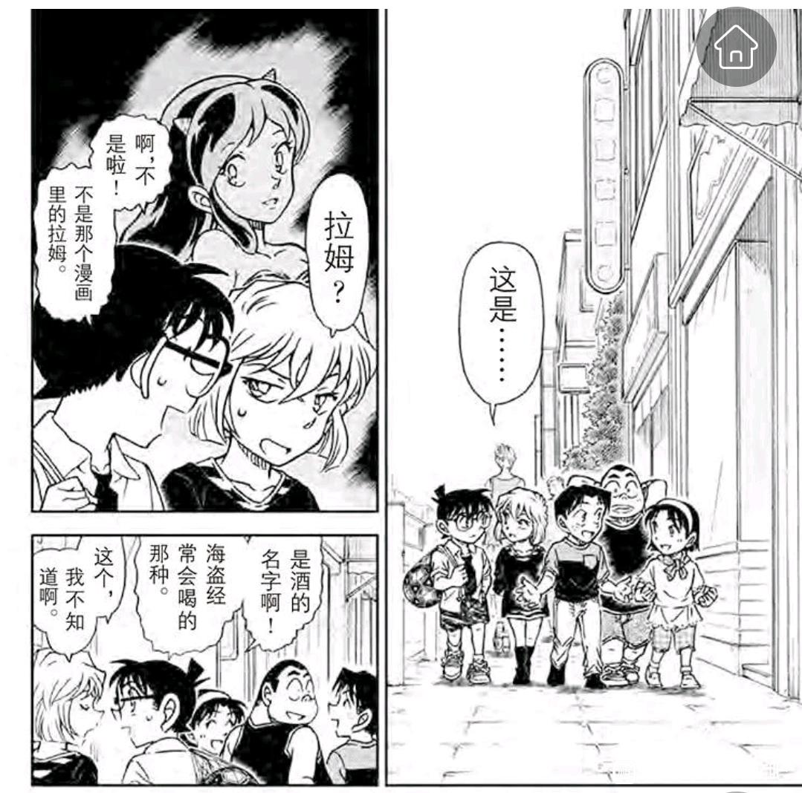
2024-08-21 10:00 | 上総守信長ºº:原文是「だっちゃ」，本身就是neta拉姆的梗，所以我觉得这里不必过度解读2024-08-21 10:15 | 🌐之徙:回复 上総守信長ºº :意思就是柯哀都看过这个漫画嘛2024-08-22 18:24 | 我有嘉賓00:这还是个声优梗
和新兰聊某些颜色废料不同，柯哀的这些话题是被青山精心维护的，不会有某一方吃亏，且一到案件他们就立刻进入工作状态。
柯哀冲进屋子，柯南马上开始查线索，小哀一边报警一边判断是不是组织所为，很快就能定性案件，之后警察过来，本来孩子们听不到口供，柯南又使用了非法手段对警察进行窃听。
【柯南对自己的窃听行为沾沾自喜，一边wink一边分享给小哀，用的是耳语光彦听不见】
我发现柯南自从足球场事件开始，就能和小哀坏到一起去，这种灰色行动柯哀那都是共犯，互相打掩护之类的事情实在太多。
（水族馆新一迅速封锁现场，但小兰根本不理解并且在目暮面前拆新一的台，相比之下柯哀破案时柯南是真的开心）
柯哀冲进屋子，柯南马上开始查线索，小哀一边报警一边判断是不是组织所为，很快就能定性案件，之后警察过来，本来孩子们听不到口供，柯南又使用了非法手段对警察进行窃听。
【柯南对自己的窃听行为沾沾自喜，一边wink一边分享给小哀，用的是耳语光彦听不见】
我发现柯南自从足球场事件开始，就能和小哀坏到一起去，这种灰色行动柯哀那都是共犯，互相打掩护之类的事情实在太多。
（水族馆新一迅速封锁现场，但小兰根本不理解并且在目暮面前拆新一的台，相比之下柯哀破案时柯南是真的开心）
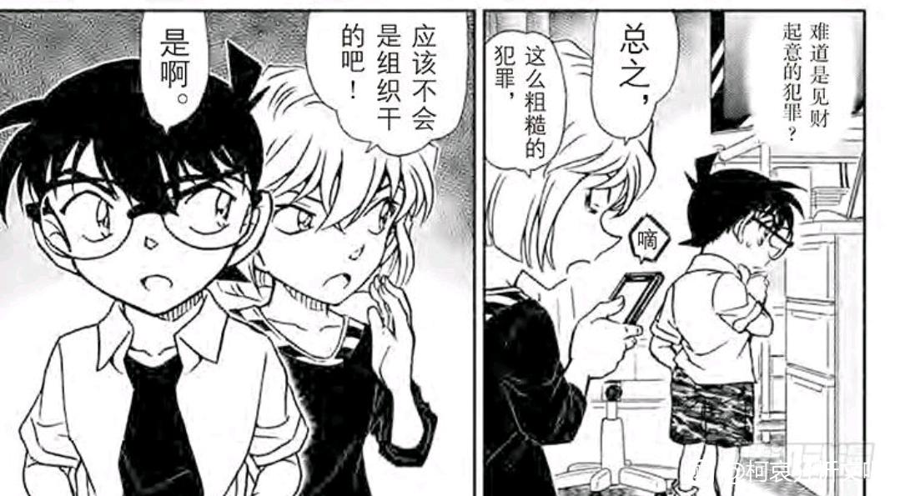
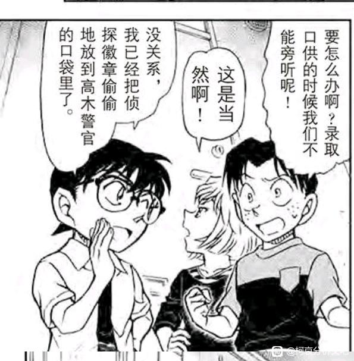
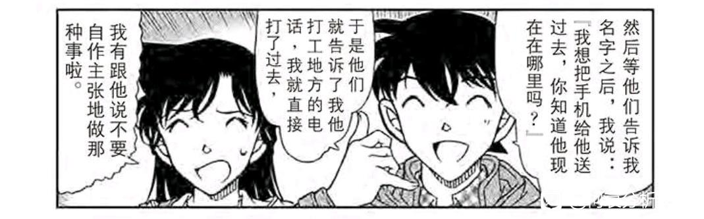
2024-08-21 11:38 | 清茶姑娘:侦探本来就是能够在灰色地段游走的行业，柯哀的价值观是一起的。至于某∠，更多的是伪善，还有怕担责任借此洗脱自己（毕竟它知道目暮会不会生气）吧！连对新一的基本了解及同甘共苦精神都没有2024-08-21 19:30 | 墨韵丹青丹韵墨:小哀报警那里，一个手机拨号的小细节就立马确立女主的主观能动性，而不需要被其他人只会，例如：小兰报警！小兰叫救护车！2024-08-21 19:34 | 🌐之徙:回复 墨韵丹青丹韵墨 :确实是这样，如果柯南叫小哀报警，小哀手机肯定已经在手上了，漫画里有多次这个细节2024-11-12 15:12 | 贴吧用户_a2PA18t:突然在想，如果有兰发现新志粘在一起搞做一些灰色手段的剧情，兰跳出来指责，然后新一来句“侦探/福尔摩斯本来就是灰色(gray)的”2024-11-26 00:14 | 滦炐祐😁😁:和歌纸牌千钧一发后遗症是吧？（刚进去就报警）2024-11-26 00:15 | 滦炐祐😁😁:回复 🌐之徙 :这个是纸牌案后面吧？（也算是吸取教训的人物成长了）2025-04-15 12:33 | 发疯的法师:？你这是怎么得出这是耳语的2025-10-11 12:03 | 小熊饼干🐶🐴🐨:这事好久不做了，我来给大家做个wink吧。
柯南窃听之后，小哀直接就过来问情况，可惜没有学蓝色古堡贴上去
这里柯南已经破案了，欸，不马上和小哀说案件结果，而是保留一点悬念，先说一些别的信息。之后柯南安排实验，也是不说结果，非要拉着大家做实验，最后揭露的时候那叫一个开心。
我认为柯南这种症状可以等同于快斗给青子变魔术，表现欲非常强，这里其他四个孩子虽然也参与进来，但只有小哀获得了完整信息，做完实验之后小哀也有了“原来如此”的感觉。
初级阶段：柯南正在对小哀分享自己破案的喜悦。
高级阶段：柯南破案时必须欺负一下小哀。
（现在柯南应该介于这两阶段之间，之后几案马上就要开始进攻了）
这里柯南已经破案了，欸，不马上和小哀说案件结果，而是保留一点悬念，先说一些别的信息。之后柯南安排实验，也是不说结果，非要拉着大家做实验，最后揭露的时候那叫一个开心。
我认为柯南这种症状可以等同于快斗给青子变魔术，表现欲非常强，这里其他四个孩子虽然也参与进来，但只有小哀获得了完整信息，做完实验之后小哀也有了“原来如此”的感觉。
初级阶段：柯南正在对小哀分享自己破案的喜悦。
高级阶段：柯南破案时必须欺负一下小哀。
（现在柯南应该介于这两阶段之间，之后几案马上就要开始进攻了
）
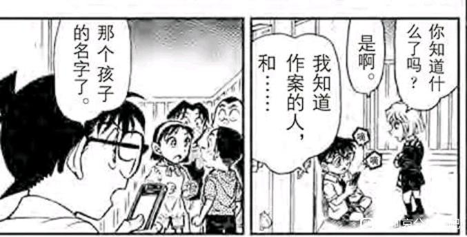
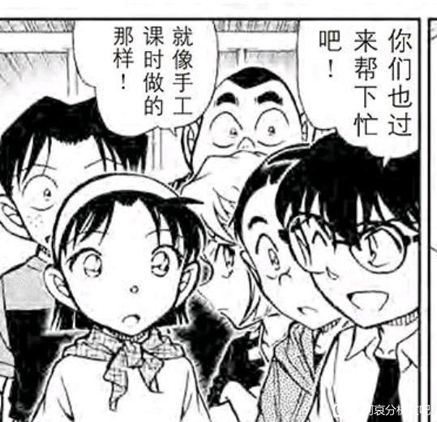
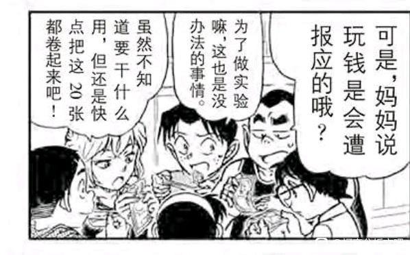
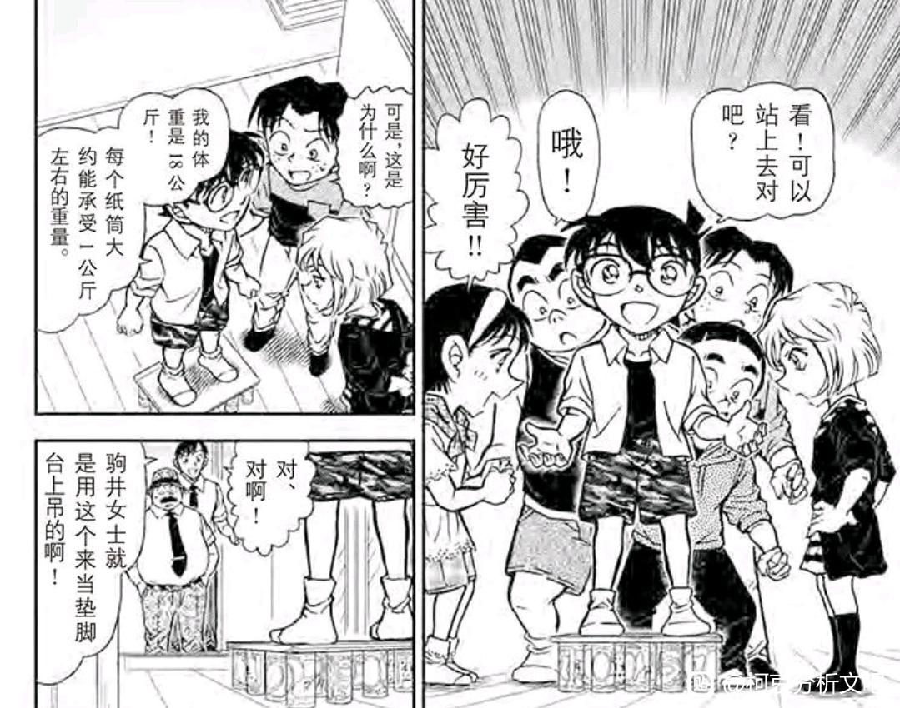
2024-08-21 19:34 | 墨韵丹青丹韵墨:这也确实说明小柯很积极的让孩子们参与近破案中，而不只是自己单方面向他们输出结果，一开始估计新酱对兰也是这样输出的，但他得不到反馈所以转而变成单方面输出，至少在多罗碧加游乐园里，如果让兰扮演凶手更合适，毕竟都是有在锻炼的女性
小哀对案件结局不满意？柯南继续进行安排，小哀的体验拉满了。
本案不同于一些常规案件，不但是少见的自杀案，三个嫌疑人还都是罪犯，而某些人嘴里“圣父”的柯南也充满了腹黑感，不知道是不是柯南联络的这帮记者，总之三个罪犯被当场逮捕，柯南实现了自杀死者（也是个抢劫犯）未完成的愿望。
柯南通常来讲是不支持自杀的，认为“杀死自己也是杀人”，但具体谁值得同情，谁应该指责，柯南大部分时候并不像小兰那样一刀切，和小哀在一起时分析各类复杂社会派事件时充满了人道主义精神。
本案的自杀者就不很值得同情，柯哀对她的主要不满是“使用小孩子作为手法的一部分”，而对于她舍身举报三罪犯表示支持，柯哀这种人道主义还体现在【一丁点也不原谅】【侦探们的夜响曲】等大量案件中，是名柯中相对有深度的一部分。
本案不同于一些常规案件，不但是少见的自杀案，三个嫌疑人还都是罪犯，而某些人嘴里“圣父”的柯南也充满了腹黑感，不知道是不是柯南联络的这帮记者，总之三个罪犯被当场逮捕，柯南实现了自杀死者（也是个抢劫犯）未完成的愿望。
柯南通常来讲是不支持自杀的，认为“杀死自己也是杀人”，但具体谁值得同情，谁应该指责，柯南大部分时候并不像小兰那样一刀切，和小哀在一起时分析各类复杂社会派事件时充满了人道主义精神。
本案的自杀者就不很值得同情，柯哀对她的主要不满是“使用小孩子作为手法的一部分”，而对于她舍身举报三罪犯表示支持，柯哀这种人道主义还体现在【一丁点也不原谅】【侦探们的夜响曲】等大量案件中，是名柯中相对有深度的一部分。
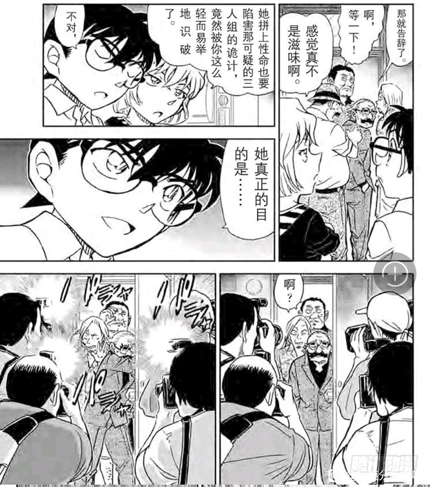
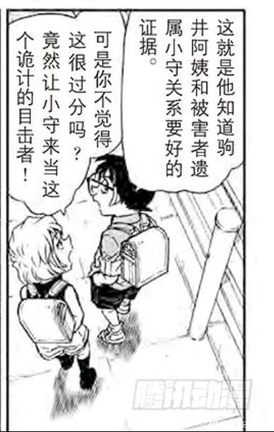
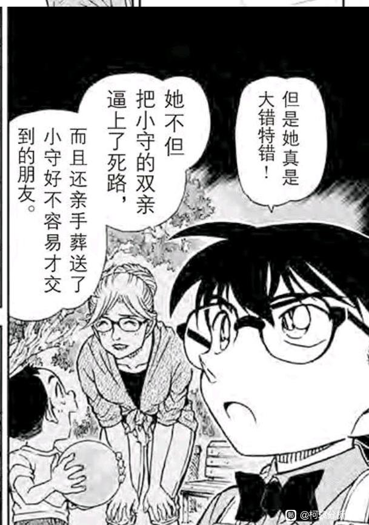
2024-08-21 10:17 | 上総守信長ºº:看图3小柯的意思是其实也不应该自杀的，自杀也会让小孩伤心2024-08-21 10:25 | 🌐之徙:回复 上総守信長ºº :但不是自杀本身，自杀赎罪这件事柯南是认同的2024-08-21 11:43 | 清茶姑娘:以前总会觉得柯南有点太严苛，对待某些值得同情的犯人不像福尔摩斯那样还有网开一面的时候。但是后来意识到一则二者的时代不同，20世纪末到21世纪的现代社会里还是以小孩为主要目标人群的动画不能不被惩治的罪犯，二是很多时候这方面也属于动画组魔改的一部分。在一些原创剧情里加上柯南或目暮对嫌犯2024-08-21 11:45 | 清茶姑娘:当头棒喝“无论发生什么事都不该S人”之类的，或者即使是原作故事也加以魔改，比如“网中迷”把某大和抚子∠表现得义正言辞而让人忽略犯人犯案的具体原因和背景等。事实上真正的原作里，柯南还是有区分的2024-08-21 11:57 | 上総守信長ºº:回复 🌐之徙 :认同自杀不会ooc吗，柯确实常有灰色操作，但月光案以来他一直希望尽可能救下犯人的，除非对方对自己有直接威胁2024-08-22 16:06 | 没字也行:回复 🌐之徙 : 自杀赎不了罪，所以大错特错。认罪本身是对的，但是擅自以自身生命为代价，对其它人来说也是很难接受的。就像柯南在月光案失去的成实，再无挽回的余地。当然根本原因是柯的傲慢所致....2024-08-22 16:14 | 没字也行:回复 🌐之徙 : 后续柯跟平次提起这事，就差说自己杀人了。但又有什么办法呢？也只剩下在咖啡香一案中，“......在冰冷的后备箱内不得安宁”一句。侦探不是神，告慰与宽恕如何都不是他的领域与能力范围。2024-08-22 16:15 | 🌐之徙:回复 上総守信長ºº :自杀的问题比较复杂，如果一个实际罪犯已经自杀（例如楠田陆道），则柯南也不会太有压力，但要是该罪犯是“值得拯救之人”，那就不应该自杀，具体问题具体分析2024-11-26 00:18 | 滦炐祐😁😁:柯南早就不是圣夫啊，焚尸楠田陆道就表明他的价值观
这个案件的人物是不是有所暗喻？
2024-08-21 10:22 | 上総守信長ºº:不就是那三个嫌疑人咯2024-08-21 10:26 | 小怪兽邓慈爷:虽然本案全员恶人但个人感觉没必要硬往朗姆秀一卡麦尔这三个人身上套
我指的是那个小孩和那个女人，我看有的说法暗指小哀和若狭2024-08-21 10:27 | 小怪兽邓慈爷:回复 小怪兽邓慈爷 :然后那三个带朗姆特征的人就是朗姆。2024-08-21 10:36 | 上総守信長ºº:若狭是没有在组织里待过的，就算当年有这个暗示那也是误导。
今天楼主还没更新～
cy
4、虚荣的服部与略带私心的柯南：镰鼬案
镰鼬案在七宗罪中被定义为“虚荣”或“傲慢”，也正是在本案，服部确定了自己的攀比目标，一定要胜过所谓大本钟表白。
服部确定这个目标时，并非因为大本钟有多么浪漫，而纯粹是因为【这是新一的表白】，哪怕新一在别的地方表白，服部也会将之进行攀比。
但是，当服部执着于攀比时，事情又发生了变化，服部的好兄弟似乎并不认为新兰关系值得骄傲，本案出现了以下两件事：
【1、当听到惨叫时，柯南只是内心想到是小兰的叫声，却并未像以前那样说出来】
（可以对比一下鸟取蜘蛛，当时柯南直接说听到了小兰的声音，无视了和叶的声音）
【2、柯南已经说了少侦人手一份录音，还不忘给予小哀特殊待遇，强调了小哀的手机铃声】
这两件事一结合，读者们马上就明白，柯南是有私心的：
【他正在悄悄修改服部心中“自己关注的女孩”这一位置的人选，而且很可能是故意的】
效果是显著的，M27服部结结巴巴说不出“工藤的女人”，已经说明了柯南策略之成功，甚至到了红修，摩托上柯南服部还是在讨论小哀而非小兰，属于长期策略。
镰鼬案在七宗罪中被定义为“虚荣”或“傲慢”，也正是在本案，服部确定了自己的攀比目标，一定要胜过所谓大本钟表白。
服部确定这个目标时，并非因为大本钟有多么浪漫，而纯粹是因为【这是新一的表白】，哪怕新一在别的地方表白，服部也会将之进行攀比。
但是，当服部执着于攀比时，事情又发生了变化，服部的好兄弟似乎并不认为新兰关系值得骄傲，本案出现了以下两件事：
【1、当听到惨叫时，柯南只是内心想到是小兰的叫声，却并未像以前那样说出来】
（可以对比一下鸟取蜘蛛，当时柯南直接说听到了小兰的声音，无视了和叶的声音）
【2、柯南已经说了少侦人手一份录音，还不忘给予小哀特殊待遇，强调了小哀的手机铃声】
这两件事一结合，读者们马上就明白，柯南是有私心的：
【他正在悄悄修改服部心中“自己关注的女孩”这一位置的人选，而且很可能是故意的】
效果是显著的，M27服部结结巴巴说不出“工藤的女人”，已经说明了柯南策略之成功，甚至到了红修，摩托上柯南服部还是在讨论小哀而非小兰，属于长期策略。
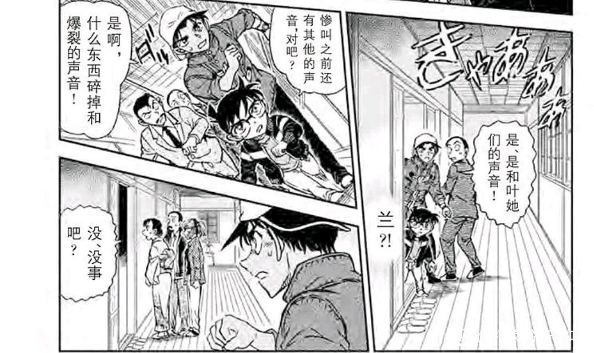
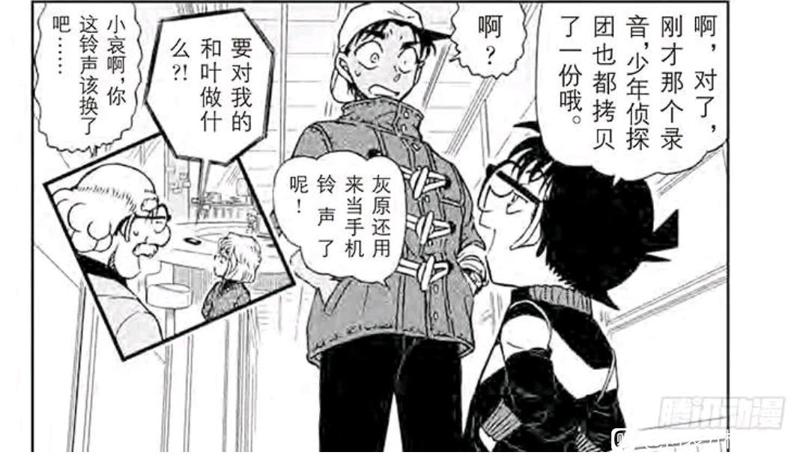
2024-08-22 22:32 | 🌐之徙:回复 时间嘀嘀嗒嘀嗒 :确实也可能是无意的，个人感觉介于有意和无意之间吧2025-02-15 15:46 | ▫Hermit:我也觉得是无意识的转变，话说我很好奇服部作为接收者是怎么理解这个转变的
【当服部开始攀比新兰时，柯南也开始对服部不提兰只提哀】
这两件事是同时的，于是服部的攀比变成了虚无缥缈的攀比，成为了平和关系进展的最大阻碍（比红叶的影响大非常多）
图1是本案的平和构图，又是与伦敦篇雷同的结构，和叶的“平次大白痴”也确实是恰如其分的评价。
（这里服部的谐音糊弄明显是失败的，此前柯南不小心放出录音，和叶听得很清楚，但服部却选择了糊弄，和叶立刻就明白了服部的心意，也知道服部的攀比心，红着脸跑开才是拉扯的正确姿势。）
新兰说“八嘎”之后就开始了逆天马拉松，平和说“白痴”之后呢？该干嘛干嘛，一起坐操哥车回家了，这构图只要一出来那对比真是无处不在，最新大阪5话这图又出来了，和叶每次都在笑，小兰却都是在哭。
这两件事是同时的，于是服部的攀比变成了虚无缥缈的攀比，成为了平和关系进展的最大阻碍（比红叶的影响大非常多）
图1是本案的平和构图，又是与伦敦篇雷同的结构，和叶的“平次大白痴”也确实是恰如其分的评价。
（这里服部的谐音糊弄明显是失败的，此前柯南不小心放出录音，和叶听得很清楚，但服部却选择了糊弄，和叶立刻就明白了服部的心意，也知道服部的攀比心，红着脸跑开才是拉扯的正确姿势。）
新兰说“八嘎”之后就开始了逆天马拉松，平和说“白痴”之后呢？该干嘛干嘛，一起坐操哥车回家了，这构图只要一出来那对比真是无处不在，最新大阪5话这图又出来了，和叶每次都在笑，小兰却都是在哭。
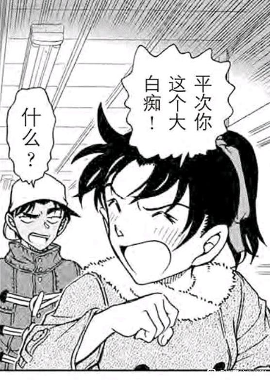
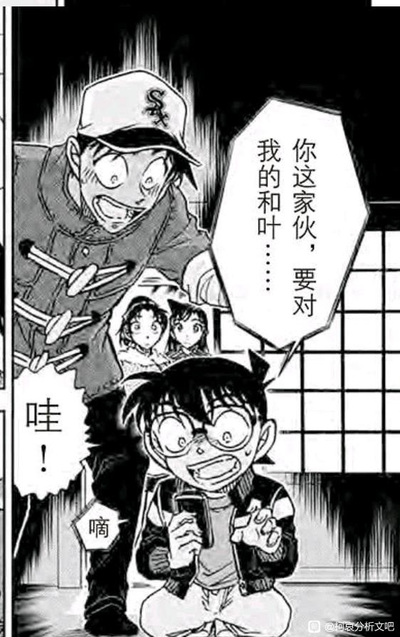
2024-08-23 10:12 | 清茶姑娘:而且某∠的哭还是试图营造舆论压力的哭，当然，某∠入戏过深后还是真的自己给自己催眠“新一欺负它”，然后谎言重复一千遍就成为真理了
平心而论，小兰前几次助攻还是比较正常的，毕竟自己还吊着表白，所以也想着让和叶拥有差不多的主动权。（红修之后就明显变形，小兰的恋爱预感也愈发令和叶不满）
我看有人在扯樱花班小新一的“手下”是指恋爱关系的“手下”，其实这种推论不是完全没逻辑，镰鼬案离樱花班已经很近了，强调“手下”这一概念，的确是有可能为樱花班铺路。
然而这是极不正确的，小新一的“手下”是明确提到，【帮你干什么坏事】，而和叶所形容的“手下”是保护，【不许碰我的宝贝手下】，这就完全是两码事。
我认为青山是有意让这两个概念都叫做“手下”，这样在创作上可以继续假端水，而不云的读者马上就能察觉出不同。
我看有人在扯樱花班小新一的“手下”是指恋爱关系的“手下”，其实这种推论不是完全没逻辑，镰鼬案离樱花班已经很近了，强调“手下”这一概念，的确是有可能为樱花班铺路。
然而这是极不正确的，小新一的“手下”是明确提到，【帮你干什么坏事】，而和叶所形容的“手下”是保护，【不许碰我的宝贝手下】，这就完全是两码事。
我认为青山是有意让这两个概念都叫做“手下”，这样在创作上可以继续假端水，而不云的读者马上就能察觉出不同。
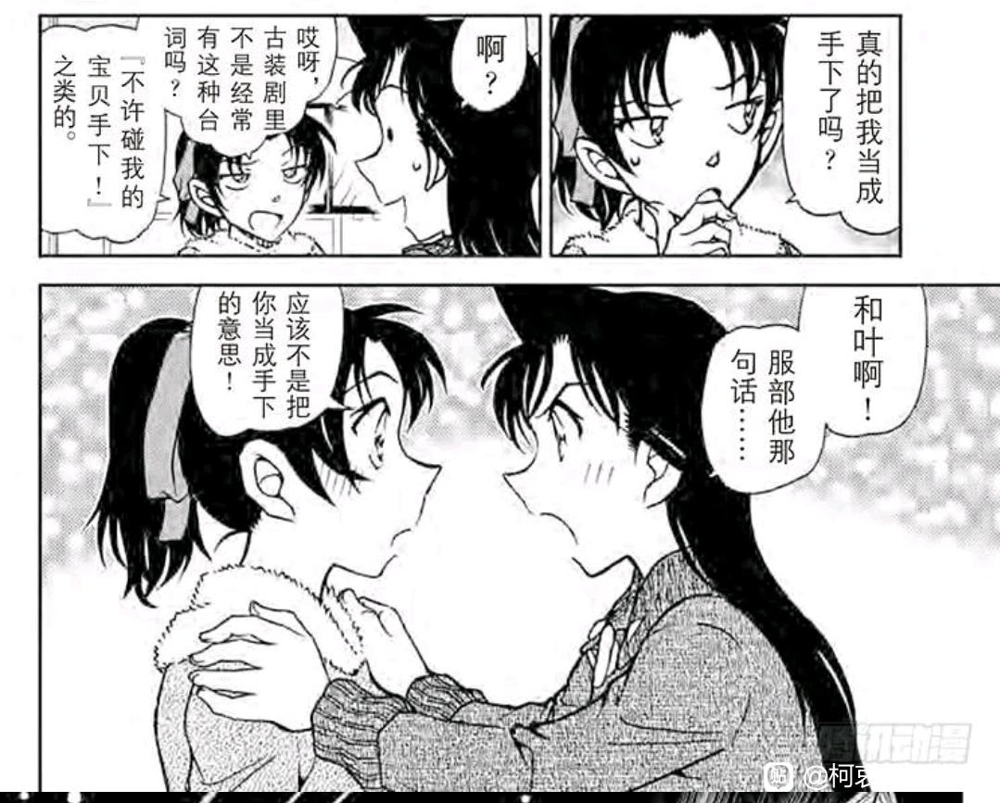
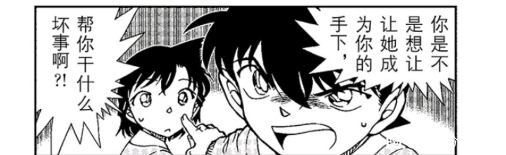
2024-08-23 10:14 | 清茶姑娘:想起鲁迅先生评价《红楼梦》来了，“X者见X”，这句话很适合某∠
最后还有一处值得注意，和叶见到小兰时，马上向她分享了之前的戎桥事件，而且不需要什么理由，在和叶看来，【如果不是发生了镰鼬事件，早就要对小兰讲了】
这里的镜头完全是红莲骷髅的反向，和叶的简洁和小兰的繁琐形成了鲜明对比，而标题叫“镰鼬的入侵路线”，该入侵路线是典型的“后发而先至”，和黑白国际象棋意思类似，似乎也是在暗示新兰会看似先确定了关系，但平和在恋爱上的进展其实先于新兰。
（还可以再对比一下伦敦之后的【错觉案】，当时小兰压根没想对和叶分享自己逼迫出来的告白，是和叶不小心说了“告白之后不可能什么都不发生吧”才迫使小兰说了一个美化坂本的大本钟，然后和叶马上就要向服部表白，小兰与和叶的行为逻辑完全不同。）
本案之后，小兰逐渐形成了和叶面前的自卑心理，并随着服部一次次告白而逐渐加重，最终在红修迎来爆发，服部总是告白失败并不只是为了好玩，其在创作上是很有目的的。
（另外我准备统计一个小兰怕鬼状况表，之前赤女案小兰很不怕，而本案的镰鼬是劳动人民的代表，小兰却怕的不行/和叶并不很怕镰鼬，该不会真的有些规律吧，小兰怕善神而不怕恶神？）
这里的镜头完全是红莲骷髅的反向，和叶的简洁和小兰的繁琐形成了鲜明对比，而标题叫“镰鼬的入侵路线”，该入侵路线是典型的“后发而先至”，和黑白国际象棋意思类似，似乎也是在暗示新兰会看似先确定了关系，但平和在恋爱上的进展其实先于新兰。
（还可以再对比一下伦敦之后的【错觉案】，当时小兰压根没想对和叶分享自己逼迫出来的告白，是和叶不小心说了“告白之后不可能什么都不发生吧”才迫使小兰说了一个美化坂本的大本钟，然后和叶马上就要向服部表白，小兰与和叶的行为逻辑完全不同。）
本案之后，小兰逐渐形成了和叶面前的自卑心理，并随着服部一次次告白而逐渐加重，最终在红修迎来爆发，服部总是告白失败并不只是为了好玩，其在创作上是很有目的的。
（另外我准备统计一个小兰怕鬼状况表，之前赤女案小兰很不怕，而本案的镰鼬是劳动人民的代表，小兰却怕的不行/和叶并不很怕镰鼬，该不会真的有些规律吧，小兰怕善神而不怕恶神？）
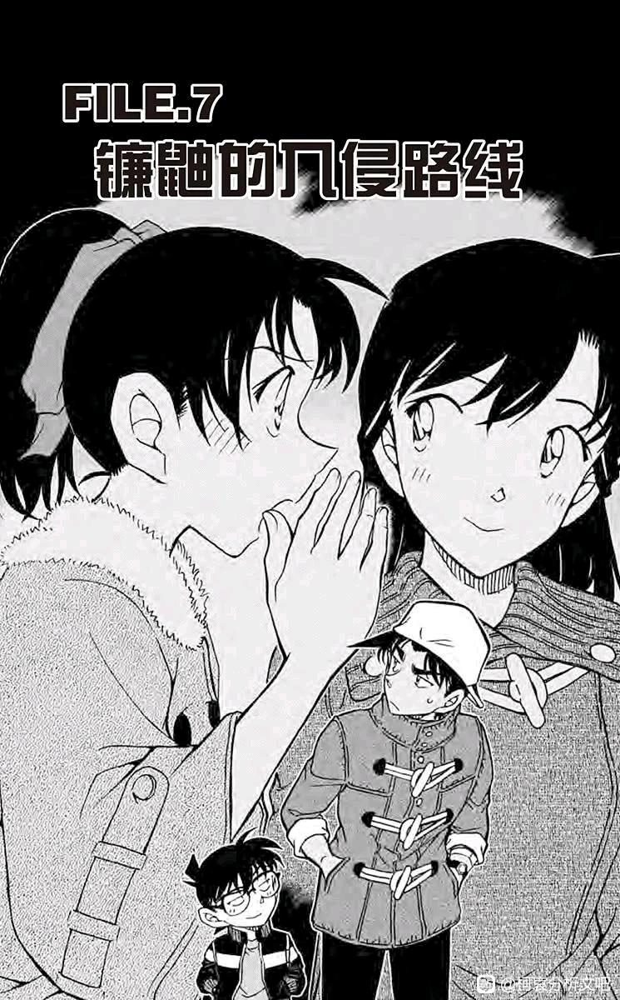
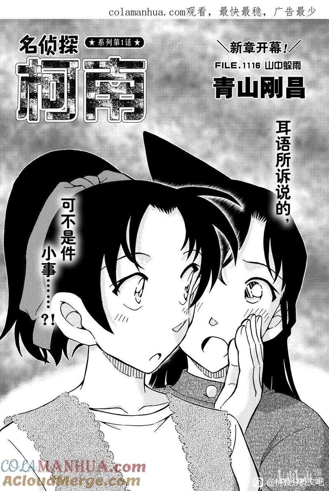
2024-08-23 00:55 | 上総守信長ºº:应该是有这种倾向的，毕竟哀是青山的嘴替而青山曾在M21让柯南形容哀是擅长「琐碎的东西」2024-08-23 10:16 | 清茶姑娘:毕竟是专门勇救罪犯、保护邪恶力量的“天使”啊，欺善怕恶是一种本能操作2024-08-23 20:55 | Ler℃ie:这两张封面......有对比的啊，动作、表情、距离，甚至∠的方向，很难说这是青山随便画的。2024-11-17 21:17 | 贴吧用户_a2PA18t:第二张封面的这个角是真的大啊2025-08-29 02:58 | 勇者大冒险求更:回复 清茶姑娘 :兰前后人设有变动。另外平次次次表白失败纯属拖剧情压爆点，没有暗示。2025-08-29 03:58 | 清茶姑娘:回复 勇者大冒险求更 :我说暗示的事了吗2026-01-17 16:56 | 阿瑟姆奶茶🌸:？
回复 勇者大冒险求更 :笑死，失败本身就是暗示，兰参与得主要cp互动必须是失败的，成功的瞬间必须由少侦柯哀来见证，从而影响柯南的恋爱选择，因为青山再表达自己的观点，兰就是不懂爱，不懂感情，砸掉兰得望夫石人设
催～
5、并非柯哀主场，但是有柯哀：啄木鸟案
长野县案件向来以连续杀人且破案全靠钓鱼而闻名，本案也不例外，该案件绝大部分内容都是案件本身，剩下一部分用于塑造黑田和推进楠田手枪主线，留给感情线的空间其实不多。
然而青山还是悄悄地藏了若干柯哀戏份，朗姆篇一开始，柯南看见独眼就开始胡思乱想，而且对于小哀的语言有种莫名其妙的执着。
首先是大和敢助，小哀是和敢助见过的，并且已经明确说过他不是酒厂，但柯南不知是出于加深印象，还是出于对小哀观点的无条件信任，开始毫无必要地盯着大和看，以至于大和发出经典疑问句。
（有希子说的是女孩子盯着男孩子是喜欢，反过来可不一定成立，不然世良岂不是赢麻了）
这就很怪，且不说大和根本不是朗姆，他要真是朗姆这么盯着他干什么？其实就是柯南在行为上已经被小哀极大影响了，小哀的情报被他放在很高的优先级上，大概这就是长期信任的结果吧。
长野县案件向来以连续杀人且破案全靠钓鱼而闻名，本案也不例外，该案件绝大部分内容都是案件本身，剩下一部分用于塑造黑田和推进楠田手枪主线，留给感情线的空间其实不多。
然而青山还是悄悄地藏了若干柯哀戏份，朗姆篇一开始，柯南看见独眼就开始胡思乱想，而且对于小哀的语言有种莫名其妙的执着。
首先是大和敢助，小哀是和敢助见过的，并且已经明确说过他不是酒厂，但柯南不知是出于加深印象，还是出于对小哀观点的无条件信任，开始毫无必要地盯着大和看，以至于大和发出经典疑问句。
（有希子说的是女孩子盯着男孩子是喜欢，反过来可不一定成立，不然世良岂不是赢麻了）
这就很怪，且不说大和根本不是朗姆，他要真是朗姆这么盯着他干什么？其实就是柯南在行为上已经被小哀极大影响了，小哀的情报被他放在很高的优先级上，大概这就是长期信任的结果吧。
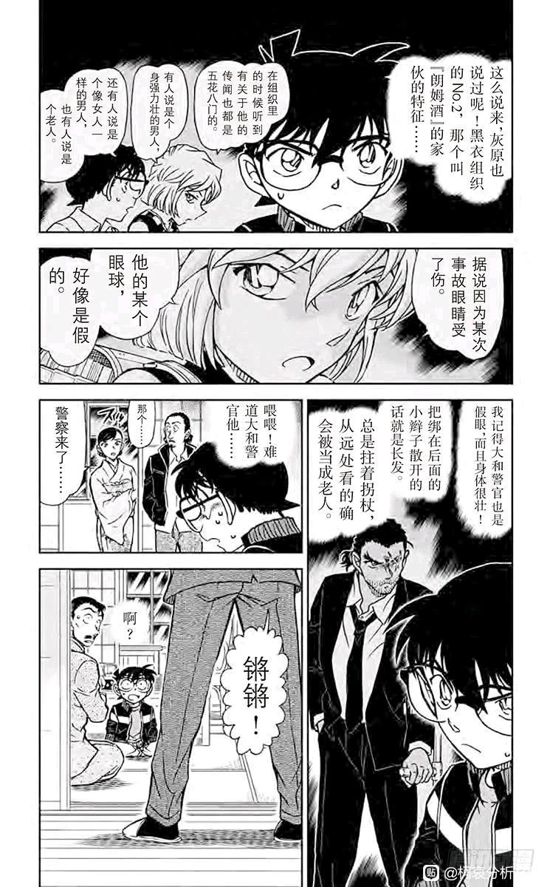
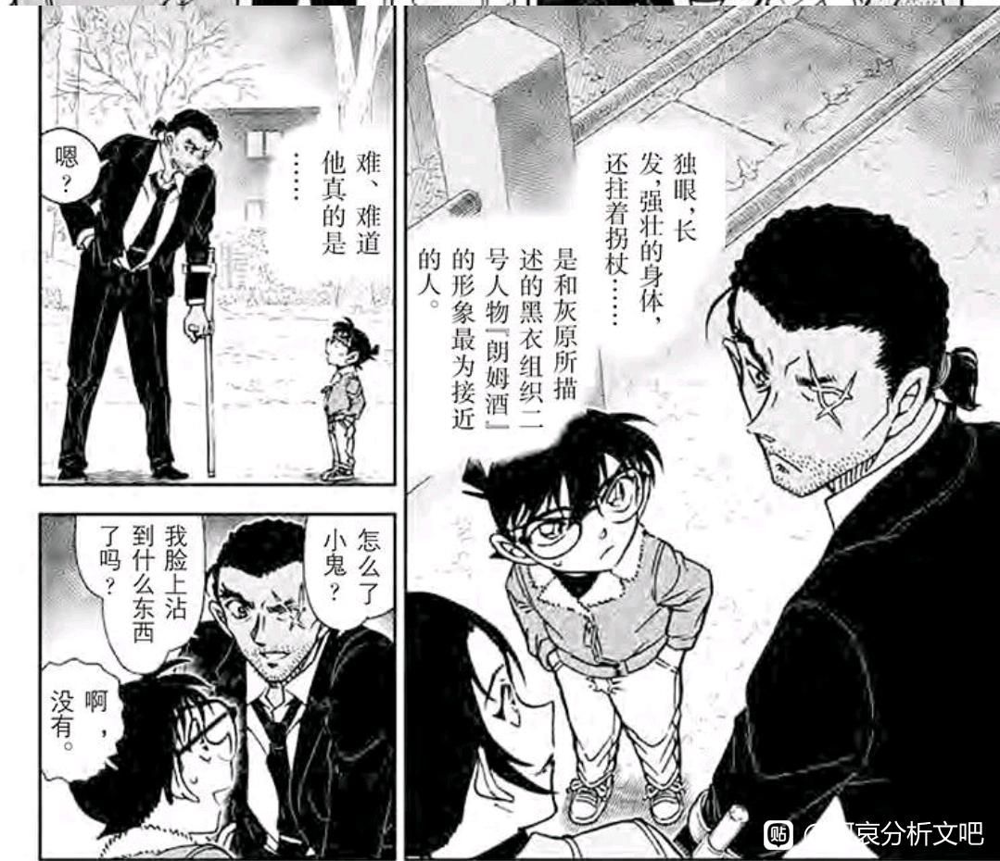
然后柯南遇到了黑田，这次更夸张，本案没有明说，但下一案可以知道，柯南在根本没有调查清楚黑田的情况下，就偷拍了黑田照片给小哀。
而就在刚刚过去的镰鼬案，服部要求柯南给一些案件，柯南却不给，而且表示“在不明朗的时候不能让服部卷进来”，这是一个明显的对比，服部确实是可靠的，但毕竟不是命运共同体，柯南还是会起保护和隐瞒之心。
直到红黑篇，柯南对几乎所有人都是这个态度，在他自己查出一点东西前，柯南是不会轻易请求援助的，唯独到了朗姆篇，小哀打破了这个规矩，他成为了柯南遇到麻烦时第一个想求助的对象（且事实上有帮助）。
这也可以视为柯哀信任加深的一种表现，既然安全屋反正也会被打破，那就不要安全屋了，一起面对困难吧。
而就在刚刚过去的镰鼬案，服部要求柯南给一些案件，柯南却不给，而且表示“在不明朗的时候不能让服部卷进来”，这是一个明显的对比，服部确实是可靠的，但毕竟不是命运共同体，柯南还是会起保护和隐瞒之心。
直到红黑篇，柯南对几乎所有人都是这个态度，在他自己查出一点东西前，柯南是不会轻易请求援助的，唯独到了朗姆篇，小哀打破了这个规矩，他成为了柯南遇到麻烦时第一个想求助的对象（且事实上有帮助）。
这也可以视为柯哀信任加深的一种表现，既然安全屋反正也会被打破，那就不要安全屋了，一起面对困难吧。
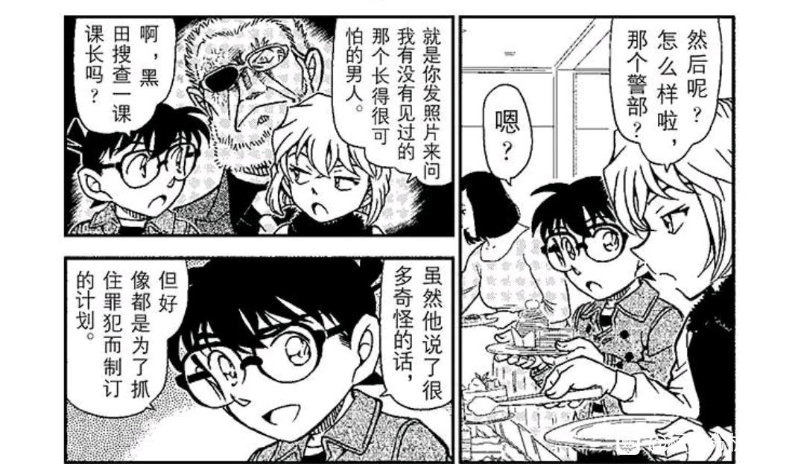
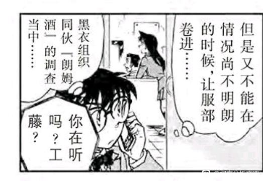
2024-08-24 20:02 | 清茶姑娘:柯哀的标志是同生共死、患难与共2024-08-29 17:54 | Ler℃ie:场外因素就是青山对服部没什么偏爱，目前角色比较饱和，更有世良上位替代，不想让他掺和主线；场内因素的话我感觉柯肯定是能从服部身上看到一部分自己以前的影子，不想让他面临和自己一样的处境甚至赔上性命。2024-08-30 10:03 | 没字也行:回复 Ler℃ie : 服部本是救场的（性转宫野志保），主役是柯哀。没这戏份也实属正常。2024-09-26 19:32 | long126zhen:因为在这事里柯哀的地位是反的啊，柯南认为小哀知道很多情报（确实知道）只是想不起来或者不告诉他，这次朗姆事件是个突破口，小哀很可能想起重要的情报，于是就想尽办法表现，你看，我手上有什么信息都透给你了，你怎么也该投桃报李一下吧，不然我乱来了哦2026-01-04 19:27 | 贴吧用户_aMES7tM:回复 没字也行 :现在想想性转工业质保也太多了，平为哀影的服部，一生一次救场的基德还有真正的性转白马探（）2026-01-17 17:13 | 阿瑟姆奶茶🌸:回复 贴吧用户_aMES7tM :基德不是性转志保，基德恰恰是文学创作层面名柯里另一个新一，这个新一出场就是和志保锁死，暗示名柯里柯南得真身新一也是锁死志保的 基德名柯出场为了宝石，为了方块4，黑暗星尘就是黑色之星就是暗示黑衣组织的星星，宫野志保 然后名柯里真正的感情线就是新一找回过去认知的志保2026-01-18 02:10 | 贴吧用户_aMES7tM:回复 阿瑟姆奶茶🌸 :啊，我说得是最浅显的列车篇基德志保
至于本来在场的小兰，哪怕本案小兰已经表现不错，甚至还夸赞了柯南的推理，但柯南好像已经不对小兰感兴趣了。
啄木鸟案一大半时间柯南不在小兰身边，这是青山故意这么塑造的，其目的相当诡异，是为了【不让小兰看到由衣的表现】
本案由衣也面临了死罗神困境，自己喜欢的人变成了最大嫌疑犯，而且似乎已经有铁证了，连黑田都发了“通缉令”，在这种不利情况下，由衣一边勉强答应黑田的通缉，另一边不断强调大和敢助的无辜，同时开始协助高明推理，并优先关注大和的生命安全。
小兰在死罗神，除了答应警方之外，其他三项全部反过来，小兰认为新一能完成不可能犯罪，不协助服部推理，也不关心新一的生命安全。
如果这些事情给小兰看到，小兰就获得了成长机会，所以青山选择不给小兰看，小兰所知道的仅有柯南转述的分尸手法并十分惊恐，这完全就是蓄意抹除小兰的成长可能，让死罗神的灾难表现成为小兰永远的标签。
啄木鸟案一大半时间柯南不在小兰身边，这是青山故意这么塑造的，其目的相当诡异，是为了【不让小兰看到由衣的表现】
本案由衣也面临了死罗神困境，自己喜欢的人变成了最大嫌疑犯，而且似乎已经有铁证了，连黑田都发了“通缉令”，在这种不利情况下，由衣一边勉强答应黑田的通缉，另一边不断强调大和敢助的无辜，同时开始协助高明推理，并优先关注大和的生命安全。
小兰在死罗神，除了答应警方之外，其他三项全部反过来，小兰认为新一能完成不可能犯罪，不协助服部推理，也不关心新一的生命安全。
如果这些事情给小兰看到，小兰就获得了成长机会，所以青山选择不给小兰看，小兰所知道的仅有柯南转述的分尸手法并十分惊恐，这完全就是蓄意抹除小兰的成长可能，让死罗神的灾难表现成为小兰永远的标签。
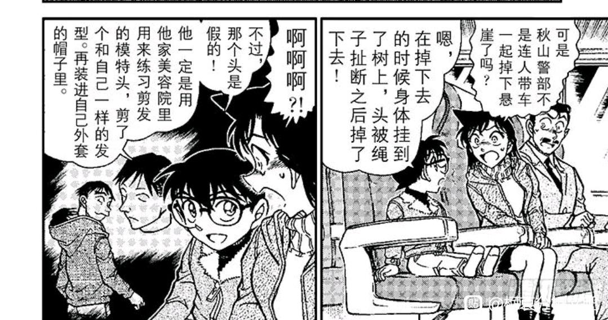
2024-08-23 23:17 | 上総守信長ºº:淦 这么晚还有直播看 袜裤袜裤2024-08-23 23:17 | 上総守信長ºº:话说为什么大佬的IP经常变，莫非是出差狂魔2024-08-23 23:35 | 🌐之徙:回复 上総守信長ºº :确实2024-08-23 23:45 | Wf_yjqd:到处跑，交通工具看漫画ing
回复 上総守信長ºº :诶我这怎么一直显示的是北京啊（晕2024-08-23 23:49 | 上総守信長ºº:回复 🌐之徙 :辛苦辛苦2024-08-24 20:04 | 清茶姑娘:真·是个人就比某∠有人性。另外，如果喜欢推理，肯定会想看新一赢，实在不喜欢推理，那么会认为推理什么的没用。某∠是一边通过“推理狂”之类言辞打压新一，一边神话新一到“完成不可能犯罪”，其实就这件事本身而论已经证明了她内心的自卑，神话新一但非要打压，不打压彰显不出它自己
最后老生常谈一下主线。
黑田17年前被创，昏迷十年，醒来已经是7年前，此时黑田并没有失忆，只是对同事隐瞒一些工安内部信息，假装失忆而已。
在这7年间，黑田显然仍然在工作，他指挥了安室和伊织，应该也参与了景光的卧底，他对长野泄露枪支的传闻非常了解，也知晓柯南是小五郎的智囊。（这个消息应该来自安室）
而更值得注意的是，黑田还清楚9年前事件的一些细节，可见黑田要么醒来之后有专门研究昏迷时发生的事情，要么比传闻的沉睡十年更早醒来，只是无法行动却可以听取报告。
黑田苏醒的7年前，新一5年级，唯一有记载的事情，是【小兰丢失了全班团费，被新一找回】，这个年份的含义与“弥补错误”相关，一个人的失误由另一个人弥补，如果说景光之死的确不是意外而是某人的错误/故意，那么黑田将会是准备纠正错误的人。
由于羽田浩司案已经公布，黑田的身份已经变为纯红，接下来他的任务是去东京找出“卧底”，目前该任务并无显著进展，但黑田仍然留在东京，应该是还是有一定目标的。
本案中，几位小警察的X其实是罪犯的枪，是收缴之后不上交反而卖出去，这些枪并不符合楠田的枪（从警方直接流出），而丢枪是性质很恶劣的，小警察一定做不到，所以我仍然认为卧底警衔会很高，除了小田切之外实在无人可选。
黑田17年前被创，昏迷十年，醒来已经是7年前，此时黑田并没有失忆，只是对同事隐瞒一些工安内部信息，假装失忆而已。
在这7年间，黑田显然仍然在工作，他指挥了安室和伊织，应该也参与了景光的卧底，他对长野泄露枪支的传闻非常了解，也知晓柯南是小五郎的智囊。（这个消息应该来自安室）
而更值得注意的是，黑田还清楚9年前事件的一些细节，可见黑田要么醒来之后有专门研究昏迷时发生的事情，要么比传闻的沉睡十年更早醒来，只是无法行动却可以听取报告。
黑田苏醒的7年前，新一5年级，唯一有记载的事情，是【小兰丢失了全班团费，被新一找回】，这个年份的含义与“弥补错误”相关，一个人的失误由另一个人弥补，如果说景光之死的确不是意外而是某人的错误/故意，那么黑田将会是准备纠正错误的人。
由于羽田浩司案已经公布，黑田的身份已经变为纯红，接下来他的任务是去东京找出“卧底”，目前该任务并无显著进展，但黑田仍然留在东京，应该是还是有一定目标的。
本案中，几位小警察的X其实是罪犯的枪，是收缴之后不上交反而卖出去，这些枪并不符合楠田的枪（从警方直接流出），而丢枪是性质很恶劣的，小警察一定做不到，所以我仍然认为卧底警衔会很高，除了小田切之外实在无人可选。
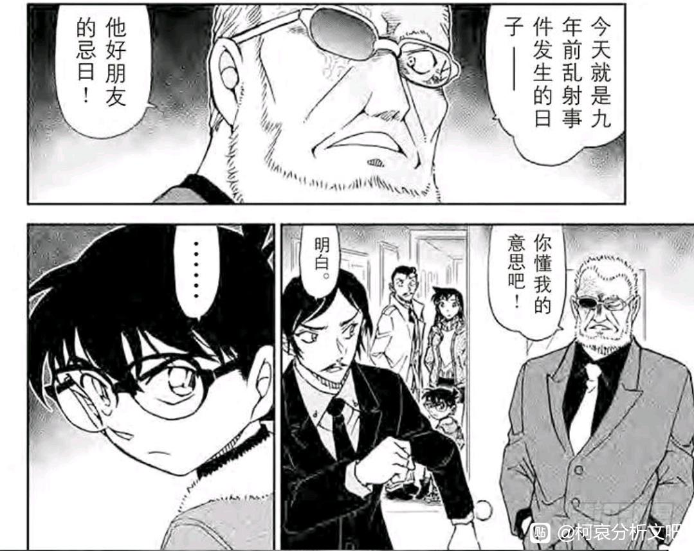
2024-08-24 20:05 | 清茶姑娘:其实这里啄木鸟会的普通police也有可能有背后势力，就是那个内鬼
28分钟了，今日份更新结束了吗
6、死神女仆3：504的恋爱暗号
【樱花班】篇章前后都是柯哀，后篇是比护和洋子的案件，而前篇就是死神女仆米原樱子的最后一案。
在上个帖子我曾经分析，米原很可能是13年前初遇论的关键人物，一共登场的三个案件中，第一个案件关键词为【错觉】，第二个案件关键词为【初遇与再会】，第三个案件关键词为【先入为主】，关键词都相当顶级。
加之米原拥有不错的记忆力，并且与明美同时在帝丹小学，甚至本篇之后就紧跟樱花班，米原在初遇过程的重要性可见一斑。
而在本案，【先入为主】指的是犯人对暗号进行了先入为主，她以为暗号是“恋爱的hit&run”，其实暗号是【降临于你】，这里是一个简单的映射，小兰自己称呼自己的名字就是run，向来是跑步高手，而【降临于你】可以理解为天降，在【降临于你】中只有数字29是真数字，漫画29卷是公交车+狗狗案，几乎独属于柯哀，“虚报年龄”也确实是小哀的特征。（当然不是指小哀20+，而是指小哀号称84岁）
对于读者而言，新兰确实是先入为主的烟雾弹，而柯哀才是作者要给出的暗号。
（其他的卷数应该不太重要，完全为假名转换服务，所以应该是不存在解读空间的）
【樱花班】篇章前后都是柯哀，后篇是比护和洋子的案件，而前篇就是死神女仆米原樱子的最后一案。
在上个帖子我曾经分析，米原很可能是13年前初遇论的关键人物，一共登场的三个案件中，第一个案件关键词为【错觉】，第二个案件关键词为【初遇与再会】，第三个案件关键词为【先入为主】，关键词都相当顶级。
加之米原拥有不错的记忆力，并且与明美同时在帝丹小学，甚至本篇之后就紧跟樱花班，米原在初遇过程的重要性可见一斑。
而在本案，【先入为主】指的是犯人对暗号进行了先入为主，她以为暗号是“恋爱的hit&run”，其实暗号是【降临于你】，这里是一个简单的映射，小兰自己称呼自己的名字就是run，向来是跑步高手，而【降临于你】可以理解为天降，在【降临于你】中只有数字29是真数字，漫画29卷是公交车+狗狗案，几乎独属于柯哀，“虚报年龄”也确实是小哀的特征。（当然不是指小哀20+，而是指小哀号称84岁）
对于读者而言，新兰确实是先入为主的烟雾弹，而柯哀才是作者要给出的暗号。
（其他的卷数应该不太重要，完全为假名转换服务，所以应该是不存在解读空间的）
还有一个地方可以佐证米原是13年前柯哀的见证者。
如图，米原来到了犯人所在的房间，门牌号为504，自带一个爱心标志。
马上樱花班，我们知道樱花班新一4岁，此时小兰只有三岁，志保5岁，然而这个有自由度的门牌号却并不是403，而是504，且根据伦敦篇love is 0，加上下面这个爱心，那504极可能表示小志保对小新一的感情（新一的初恋应该是小兰）。
【504这一幕的见证者是米原】。
之后还有可疑剧情，犯人招呼两人喝饮料，米原再次展示了她对红茶的偏爱（这段剧情毫无必要，具体是什么饮料和案件无关），此前错觉案哪怕已经有人中毒，米原依然让大家喝红茶，而柯南也暴露了冰咖啡（通常小孩子不喝咖啡，上次米原想到的还只是乌龙茶）。
红茶是英国相关的线索，此前很多人一度以为黑田是赤井务武，理由就是黑田喜欢红茶，现在看来红茶并不总是作为英国象征，可能更意味着喝红茶的人和某英国背景角色有联系或者对应，如果米原13年前真的见过志保，那么她是有可能从明美那里获得红茶偏好的。
如图，米原来到了犯人所在的房间，门牌号为504，自带一个爱心标志。
马上樱花班，我们知道樱花班新一4岁，此时小兰只有三岁，志保5岁，然而这个有自由度的门牌号却并不是403，而是504，且根据伦敦篇love is 0，加上下面这个爱心，那504极可能表示小志保对小新一的感情（新一的初恋应该是小兰）。
【504这一幕的见证者是米原】。
之后还有可疑剧情，犯人招呼两人喝饮料，米原再次展示了她对红茶的偏爱（这段剧情毫无必要，具体是什么饮料和案件无关），此前错觉案哪怕已经有人中毒，米原依然让大家喝红茶，而柯南也暴露了冰咖啡（通常小孩子不喝咖啡，上次米原想到的还只是乌龙茶）。
红茶是英国相关的线索，此前很多人一度以为黑田是赤井务武，理由就是黑田喜欢红茶，现在看来红茶并不总是作为英国象征，可能更意味着喝红茶的人和某英国背景角色有联系或者对应，如果米原13年前真的见过志保，那么她是有可能从明美那里获得红茶偏好的。
2024-08-27 16:03 | 贴吧用户_74P11b5:504如果成了就逆天了2024-08-30 10:21 | 没字也行:按契科夫之枪的原理，确实红茶是线索和证据，越挖越有。2025-02-15 16:04 | ▫Hermit:5love4卧槽2025-10-11 12:12 | 小熊饼干🐶🐴🐨:我勒个去，打个卡2025-11-14 21:26 | 双鲨king:牛逼，细
大佬今天好早
米原也早就觉得柯南很特别，但米原似乎对小哀没有兴趣，然而这又是有原因的。
米原和小哀同时登场的两个事件都发生在楼房内，十分狭窄且视野不好，且小哀是在门外办案，这个门长期关闭，即使打开也有一堆人挡着。
而在非办案时间，米原即使看到小哀，那也是相当外向的，例如之前小哀直接穿的豹纹，又例如本案小哀十分腹黑，怎么看都不像13年前怕生的小女孩吧。
且青山十分奇怪的不让小哀和米原同框，图3少侦全员都在就小哀不在，我严重怀疑如果米原看小哀再仔细一点，就能发现某些不寻常。
作为另一个例子，村田能发现小哀是志保，是因为村田面前的小哀也很怕生，且并没有穿什么豹纹（毕竟在学校嘛），还拥有喜欢小动物等显著特征，村田那是简单难度，米原是地狱难度，认不出来正常。
米原和小哀同时登场的两个事件都发生在楼房内，十分狭窄且视野不好，且小哀是在门外办案，这个门长期关闭，即使打开也有一堆人挡着。
而在非办案时间，米原即使看到小哀，那也是相当外向的，例如之前小哀直接穿的豹纹，又例如本案小哀十分腹黑，怎么看都不像13年前怕生的小女孩吧。
且青山十分奇怪的不让小哀和米原同框，图3少侦全员都在就小哀不在，我严重怀疑如果米原看小哀再仔细一点，就能发现某些不寻常。
作为另一个例子，村田能发现小哀是志保，是因为村田面前的小哀也很怕生，且并没有穿什么豹纹（毕竟在学校嘛），还拥有喜欢小动物等显著特征，村田那是简单难度，米原是地狱难度，认不出来正常。
2024-08-24 14:00 | 红茶中的白兰地:不但画了什么很重要，没画什么也很重要啊2024-08-24 20:06 | 清茶姑娘:青山的设计处处是玄机啊
少数的同框如下图所示，米原和小哀邻座，然后米原又抬头看天花板而没注意小哀基本这种同框都是这样，要么小哀背对米原，要么米原被各种遮挡，要么小哀表现得很外向。
我现在觉得米原如果返场，虽然不如瑛佑厉害，但杀伤力也非常强，这可是能直接触发初遇论详细剧情的少数角色之一。
基本这种同框都是这样，要么小哀背对米原，要么米原被各种遮挡，要么小哀表现得很外向。我现在觉得米原如果返场，虽然不如瑛佑厉害，但杀伤力也非常强，这可是能直接触发初遇论详细剧情的少数角色之一。
接下来是和米原无关的部分。
我一直觉得柯南这个吃蛋糕不和小兰说，非常的离谱，柯南宁可向小兰分享自己和小哀的各种互动，如何窃听小哀被发现之类的，也不对小兰说蛋糕的事情。
这个蛋糕是博士抽奖中的，小兰运气也很好也可以抽奖嘛，但是柯南选择了不告诉，这样做的原因只有一个：嫌麻烦。
服部曾经带着和叶吃遍大阪大街小巷，柯南却连小兰最喜欢的蛋糕情报都不给她，他不想应对小兰的羡慕，更可能早就预知到小兰的甜甜圈反应，但如果真的喜欢小兰，为了让她开心，这点小麻烦根本就不是问题，柯南已经逐渐在忽视小兰的内心感受了。
我一直觉得柯南这个吃蛋糕不和小兰说，非常的离谱，柯南宁可向小兰分享自己和小哀的各种互动，如何窃听小哀被发现之类的，也不对小兰说蛋糕的事情。
这个蛋糕是博士抽奖中的，小兰运气也很好也可以抽奖嘛，但是柯南选择了不告诉，这样做的原因只有一个：嫌麻烦。
服部曾经带着和叶吃遍大阪大街小巷，柯南却连小兰最喜欢的蛋糕情报都不给她，他不想应对小兰的羡慕，更可能早就预知到小兰的甜甜圈反应，但如果真的喜欢小兰，为了让她开心，这点小麻烦根本就不是问题，柯南已经逐渐在忽视小兰的内心感受了。
2024-08-24 11:41 | 凌蘭诗:她羡慕的是蛋糕还是自助呢？2024-08-24 18:44 | 贴吧用户_7bZ4Ey4:回复 凌蘭诗 :她喜欢蛋糕还喜欢占小便宜2024-08-24 20:08 | 清茶姑娘:突然想起在高级餐厅拿着优作卡狂炫5杯冰激凌的某∠，爱吃蛋糕的大胃王(*^_^*)2024-08-29 16:57 | 观影逸趣人:仔细想想，小兰在每一次工藤有高光/遇到开心的事情的时候给出的都不是特别正面的反馈，她好像几乎没有真心为别人高兴的时候，人被扫兴/负面地回应多了也是会反感的，表面察觉不到，潜意识里也会想远离吧2024-08-30 10:27 | 没字也行:这是柯南腹黑，我寻思柯南也没这么讨厌兰，反而感情还升温了。2024-09-26 19:48 | long126zhen:和伦敦篇形成对比啊。小兰发现自己比新一先来到贝克街221B，知道新一一定会很羡慕，马上打电话炫耀自己准备带点礼物给你；而这里小柯的表情就很克制，偶然遇上蛋糕自助的店，知道小兰听了一定会羡慕，所以自己不能吃的这么得意。一个是以己度人一个是将心比心，也算是新兰性格的对照了2025-01-14 06:43 | 某天君00:小兰会默认这种行为是炫耀，伦敦的时候她因为“自己炫耀”给新一道歉，所以新一也知道她是那种会想多的人设，干脆别让她有这种可能。2025-02-11 11:06 | 月邀尘:回复 long126zhen :这个对比真的很地狱啊，很明显的抬新一贬小兰。如果之后不小心让小兰知道了还能算一个恋爱喜剧，但是她不知道还要画出来柯南的想法，只能说青山好狠啊！
小哀也已经开始在博士家做蛋糕，虽然是芝士的不是奶油的。
可想而知，这一情报柯南也是不会对小兰说的，既然小兰会对柯南吃蛋糕“羡慕”，那就不说。所以柯南真的只是对小兰隐瞒了变小的事情而已吗？
【他隐瞒了更多不太重要的事情】
这是习惯性的隐瞒，不论是否危险，不论是否属于安全屋，柯南隐瞒小兰是没有代价也没有心理压力的，欺骗小兰时毫不动摇，动机仅仅是怕麻烦，所以日常瞒蛋糕，破案瞒钓鱼，主线瞒变小，这些构成了柯南对小兰全方面的欺骗。
而在柯南对小兰隐瞒的同时，他对小哀却基本是知无不言，黑田信息全给了，反过来安慰小哀对方在长野根本不要紧；案件信息也是全给，只保留演示过程当魔术表演，日常信息更是有红修带吃，柯南在欺骗小哀时心理压力超大的，而且就没骗住过（包括秀一的事情）。
可想而知，这一情报柯南也是不会对小兰说的，既然小兰会对柯南吃蛋糕“羡慕”，那就不说。所以柯南真的只是对小兰隐瞒了变小的事情而已吗？
【他隐瞒了更多不太重要的事情】
这是习惯性的隐瞒，不论是否危险，不论是否属于安全屋，柯南隐瞒小兰是没有代价也没有心理压力的，欺骗小兰时毫不动摇，动机仅仅是怕麻烦，所以日常瞒蛋糕，破案瞒钓鱼，主线瞒变小，这些构成了柯南对小兰全方面的欺骗。
而在柯南对小兰隐瞒的同时，他对小哀却基本是知无不言，黑田信息全给了，反过来安慰小哀对方在长野根本不要紧；案件信息也是全给，只保留演示过程当魔术表演，日常信息更是有红修带吃，柯南在欺骗小哀时心理压力超大的，而且就没骗住过（包括秀一的事情）。
2024-08-24 20:10 | 清茶姑娘:不管大事小事，告诉某∠之后就意味着各种麻烦甚至埋怨，柯南的心情很正常啊，尤其是在越来越见识到某∠的本质之后
吃的东西也就算了，小哀随口说她看过某个电视剧，柯南蛋糕也不吃了就开始八卦这个电视剧的两个主演。
我看柯南的表情，估计他自己也不知道为什么要这么做，大概是想把主演的秘密找出来给小哀秀一秀，结果因为涉及了感情线，竟然找不出来。
这里柯南明明已经翻倒那堆漫画暗号了，这位博主其他漫画都是顺序排列，只有那里是乱序，一眼就能看出来，伦敦定律还是在发作。
（当然，这里也可以解释为“侦探的好奇心”之类的，不过区区女明星八卦也不至于这样吧，蛋糕都不吃，我觉得主要原因还是小哀感兴趣）
我看柯南的表情，估计他自己也不知道为什么要这么做，大概是想把主演的秘密找出来给小哀秀一秀，结果因为涉及了感情线，竟然找不出来。
这里柯南明明已经翻倒那堆漫画暗号了，这位博主其他漫画都是顺序排列，只有那里是乱序，一眼就能看出来，伦敦定律还是在发作。
（当然，这里也可以解释为“侦探的好奇心”之类的，不过区区女明星八卦也不至于这样吧，蛋糕都不吃，我觉得主要原因还是小哀感兴趣）
2024-08-24 20:10 | 清茶姑娘:柯南最后一P的半月眼超有趣味
有这种日常+案件+主线的强烈羁绊，柯哀发生什么也不奇怪嘛，比如…
见黑田的时候紧紧贴在一起
事后小哀说就是黑田长得恐怖所以吓到了其实以小哀过去的表现来说，应该是这么个过程：
【哇这人好恐怖！（抓住柯南）】
【咦他好像不是组织的啊…】
【已经抓了，就继续抓吧…】
此前还有几次地震，小哀也是一开始本能反应抓住柯南，但之后就是有意识地抓了，因为是有意识的，所以不会像光彦那样被捏痛。
至于柯南要是问起来，那当然要回答“因为对方太可怕”了，但小哀还是不小心说漏了嘴，洋子也是这么抓比护，小哀却觉得洋子对比护有好感，换而言之这绝对是小哀表达好感的一种方式。
柯南的反应更好玩，【原来只是因为害怕那张脸啊……】，好像柯南很期待是别的原因一样，黑田又不能是真酒，那柯南期待的原因不就是【小哀对他有好感】。
这种经典拉扯后续还将多次上演
见黑田的时候紧紧贴在一起
事后小哀说就是黑田长得恐怖所以吓到了
其实以小哀过去的表现来说，应该是这么个过程：【哇这人好恐怖！（抓住柯南）】
【咦他好像不是组织的啊…】
【已经抓了，就继续抓吧…】
此前还有几次地震，小哀也是一开始本能反应抓住柯南，但之后就是有意识地抓了，因为是有意识的，所以不会像光彦那样被捏痛。
至于柯南要是问起来，那当然要回答“因为对方太可怕”了，但小哀还是不小心说漏了嘴，洋子也是这么抓比护，小哀却觉得洋子对比护有好感，换而言之这绝对是小哀表达好感的一种方式。
柯南的反应更好玩，【原来只是因为害怕那张脸啊……】，好像柯南很期待是别的原因一样，黑田又不能是真酒，那柯南期待的原因不就是【小哀对他有好感】。
这种经典拉扯后续还将多次上演
2024-08-24 15:55 | 上総守信長ºº:经典回旋镖2024-09-14 00:54 | 征服de臣下:这里还是经典的眼镜伪装身份
秀吉-光彦，将棋+智力担当。秀一-元太，武力+吃。玛丽-哀，妈+关注大儿子+真的会揍大儿子。真纯-步美，最亲近的女儿。
2024-08-30 09:08 | 上総守信長ºº:确实，全对上了2025-05-06 10:16 | 贴吧用户_742eCJ6:看的我头皮发麻，青山莫非真是天才？2025-05-06 10:16 | 贴吧用户_742eCJ6:看的我头皮发麻，青山莫非真是天才？
7、比护×洋子：大号柯哀与作者对小兰的恶意
樱花班作为明面上的新兰篇章，遵循后期新兰创作规律，被柯哀前后夹击。
在樱花班前，是米原樱子的最后一案，这位疑似柯哀初遇的见证者完成了自己的使命，暂时不再出现；
在樱花班后，是【比护×洋子】，有些人是不磕这一对的，认为这就是绯闻而已，那么让我们看看这张比护和洋子的照片吧！
在这张照片上，有什么元素？
【1、比护和洋子都戴着帽子】
【2、比护和洋子都戴着眼镜】
可能会有人说，这不就是名人出门，伪装一下嘛，那么，再看看洋子的衣服？
【是小新一樱花班的同款！】经典横条纹，和叶表示似曾相识。
甚至即使不是樱花班，再往前到米原樱子的“博客女明星密室事件”，柯南的衣服还是这个横条纹。（巧合的是，“博客女明星密室事件”，所用的手法正是用帽子快速覆盖证据！）
所以樱花班被这么前后夹击，稍微细心就能看出来，眼镜/帽子/横条纹衣服等等，一定有其特殊意义，尤其帽子最为重要，帽子论是当之无愧的强论。
樱花班作为明面上的新兰篇章，遵循后期新兰创作规律，被柯哀前后夹击。
在樱花班前，是米原樱子的最后一案，这位疑似柯哀初遇的见证者完成了自己的使命，暂时不再出现；
在樱花班后，是【比护×洋子】，有些人是不磕这一对的，认为这就是绯闻而已，那么让我们看看这张比护和洋子的照片吧！
在这张照片上，有什么元素？
【1、比护和洋子都戴着帽子】
【2、比护和洋子都戴着眼镜】
可能会有人说，这不就是名人出门，伪装一下嘛，那么，再看看洋子的衣服？
【是小新一樱花班的同款！】经典横条纹，和叶表示似曾相识。
甚至即使不是樱花班，再往前到米原樱子的“博客女明星密室事件”，柯南的衣服还是这个横条纹。（巧合的是，“博客女明星密室事件”，所用的手法正是用帽子快速覆盖证据！）
所以樱花班被这么前后夹击，稍微细心就能看出来，眼镜/帽子/横条纹衣服等等，一定有其特殊意义，尤其帽子最为重要，帽子论是当之无愧的强论。
2024-08-30 21:57 | Wf_yjqd:总算更了2024-09-18 12:43 | 贴吧用户_GQD81E6:我靠 列文虎克 牛逼2025-02-11 11:14 | 月邀尘:眼镜，帽子，横条纹，难他天?
比护和小哀的经历高度相似，本质是就是为了小哀而创造出来的人物，这点我想没有人不知道。
而这里最大的恶意，是将洋子放在柯南的同位上，因为【洋子的高中时代有男朋友，这段恋情以BE收场】。
洋子的前男友早在漫画第三案【偶像密室杀人事件】就已经给出形象了，这里再回顾一下：
【1、高中生情侣，毕业时分手了】
【2、不支持洋子的事业，甚至产生了“不惜结束洋子的演艺生涯也要她回来”的念头】
【3、有暴力倾向】
【4、认不出背对他的女人是洋子还是别人】
【5、收集了洋子家里她的头发用于伪造证据】
【6、现已自杀，嫁祸洋子，自杀手法自带“角”】
这里面几乎每一条都能和小兰对上（除了自杀），例如小兰也认不出伪装的人是不是新一，又例如小兰听了世良的话，在新一家里收集头发当证据。甚至可以认为，【洋子的前男友】与小兰的对应，比小哀比护的对应还要强。
这可是樱花班后的第一个案件，青山将这种角色对应到小兰身上，未免太狠心了。
而这里最大的恶意，是将洋子放在柯南的同位上，因为【洋子的高中时代有男朋友，这段恋情以BE收场】。
洋子的前男友早在漫画第三案【偶像密室杀人事件】就已经给出形象了，这里再回顾一下：
【1、高中生情侣，毕业时分手了】
【2、不支持洋子的事业，甚至产生了“不惜结束洋子的演艺生涯也要她回来”的念头】
【3、有暴力倾向】
【4、认不出背对他的女人是洋子还是别人】
【5、收集了洋子家里她的头发用于伪造证据】
【6、现已自杀，嫁祸洋子，自杀手法自带“角”】
这里面几乎每一条都能和小兰对上（除了自杀），例如小兰也认不出伪装的人是不是新一，又例如小兰听了世良的话，在新一家里收集头发当证据。甚至可以认为，【洋子的前男友】与小兰的对应，比小哀比护的对应还要强。
这可是樱花班后的第一个案件，青山将这种角色对应到小兰身上，未免太狠心了。
2024-08-30 23:26 | 清茶姑娘:总之就是走极端嘛，这个前男友以爱情的名义，却从不为对方考虑，甚至所谓的“痛苦绝望”也只是想到自己那点小心思，从没想过自己是不是吓到别人了（不管对方是不是洋子他那举动都会被吓到）……性别一换，∠烂居然成某些人眼里的天屎和爱情典范了2024-09-03 16:12 | 柳奕則:哇~好驚人!!2024-09-03 16:12 | 柳奕則:哇~好驚人!!2024-09-06 10:04 | LoLo大神君:说个跑题的，第三案犯人这个自杀方式不应该是仰卧的死的么，为啥现场是爬着死的，一直想不通2024-12-06 15:45 | 贴吧用户_G11ePRe:回复 LoLo大神君 :应该是刺穿后自己挣扎着翻过身的，为了伪装成背后遇刺倒地的假象。2025-01-10 23:37 | 宫千代塔落:完了，未来角不会黑化成黑方水晶吧2025-02-16 11:47 | ▫Hermit:军书十二卷，卷卷有角名
那么，具体到比护和洋子本人呢？
【比护是洋子的学长，二人在同一所高中毕业】
对应小哀年龄比柯南大一岁，现在二人虽然是高中生年龄，但在同一所小学上学。
小道消息认为二人在高中时代就“情投意合”，该消息虽然不可靠，但却证明了二人年龄差相当少，至少同时在港南高中学习过，年龄差也就1-2岁，而新一出场时16岁，竞技场事件改为17岁，小哀18岁，年龄差也是正确对应的。
【洋子被认为和比护“早就情投意合“的时间，是有正牌男友的】
这和红修后柯哀关系一致。
【其他旁观者（真田）认为，比护和洋子即使不是在高中就暧昧，也“早就可疑了”】
真田属于比护的人脉，对应到主角团大概率是步美（直美也不是不行），“早就可疑了”，蓝色古堡步美点赞。
【尽管大家众说纷纭，比护和洋子的动作也确实毫无边界感，但他们本人可不认为自己在恋爱！】
这都是和柯哀一模一样的，青山的设计确实相当惊人。
【比护是洋子的学长，二人在同一所高中毕业】
对应小哀年龄比柯南大一岁，现在二人虽然是高中生年龄，但在同一所小学上学。
小道消息认为二人在高中时代就“情投意合”，该消息虽然不可靠，但却证明了二人年龄差相当少，至少同时在港南高中学习过，年龄差也就1-2岁，而新一出场时16岁，竞技场事件改为17岁，小哀18岁，年龄差也是正确对应的。
【洋子被认为和比护“早就情投意合“的时间，是有正牌男友的】
这和红修后柯哀关系一致。
【其他旁观者（真田）认为，比护和洋子即使不是在高中就暧昧，也“早就可疑了”】
真田属于比护的人脉，对应到主角团大概率是步美（直美也不是不行），“早就可疑了”，蓝色古堡步美点赞。
【尽管大家众说纷纭，比护和洋子的动作也确实毫无边界感，但他们本人可不认为自己在恋爱！】
这都是和柯哀一模一样的，青山的设计确实相当惊人。
2024-08-30 23:27 | 清茶姑娘:有趣的是这里某∠要求小五郎调查2025-10-01 21:38 | 谁来剪月光50:回复 清茶姑娘 :所以这不是有意无意的自己也查柯哀吗
既然是调查大号柯哀（比护洋子）的事情，整件事就变成了柯南各种宠小哀的过程。
看这里，小哀敲敲门（不像有的人不敲门）进来，马上就要小五郎调查比护和洋子，一看就早有预谋。
然后柯南还就像早就知道小哀要一起过来（说不定就是一起走过来的），回来门也不带，小哀进门就开始哄。
【回旋镖：注意右下角柯南的笑容】
之后小哀扬言要“纪录女明星对比护微笑的次数”，我看柯南对她微笑的次数也不少嘛。M26还露出那种表情，小哀是不是也需要调查一下柯南。
（如果非要分析的话，柯南应该挺乐于看到小哀有各种各样的爱好，因为这样就可以更好地调侃/招惹小哀了作为对比，柯南看见小五郎追星那是一个纯半月眼）
看这里，小哀敲敲门（不像有的人不敲门）进来，马上就要小五郎调查比护和洋子，一看就早有预谋。
然后柯南还就像早就知道小哀要一起过来（说不定就是一起走过来的），回来门也不带，小哀进门就开始哄。
【回旋镖：注意右下角柯南的笑容】
之后小哀扬言要“纪录女明星对比护微笑的次数”，我看柯南对她微笑的次数也不少嘛。M26还露出那种表情，小哀是不是也需要调查一下柯南。
（如果非要分析的话，柯南应该挺乐于看到小哀有各种各样的爱好，因为这样就可以更好地调侃/招惹小哀了
作为对比，柯南看见小五郎追星那是一个纯半月眼）
2024-08-30 23:30 | 黑暗刺猬-夏特:毛利蘭面对小五郎回答那是侦探的行为准则时，那是什么表情……不屑？2024-08-31 00:14 | 贴吧用户_7bZ4Ey4:mll底线确实是低，在我看到她面不改色心不跳的说出直接去调查不就好了就觉得很离谱，大叔和小哀这种受刺激的胡闹也就算了，小兰这种没被影响到的却先说出调查别人私生活这种话真的有些细思极恐2024-09-01 22:20 | snowfly1024:每次看到小哀和毛利大叔握手手都感觉好可爱，那么小的一个人儿2024-10-04 10:51 | 贴吧用户_0CCSe2P:我觉得这里有一个点是，柯并不对比护洋子的事情感兴趣，甚至还对小五郎半月眼，但是小哀表示要跟小五郎一起去调查的时候，他居然一起去了，全程没有不耐烦，就跟最后踢足球那里吐槽了，但是乖乖穿上了球衣2025-02-15 16:40 | ▫Hermit:这里还可以看成是小哀和兰神对侦探的不同理解？一个觉得侦探可以为了自己的私欲去探查别人的隐私一个是用正常途径委托侦探办事2025-04-15 12:52 | 发疯的法师:说来我更奇怪灰原为啥要去请毛利小五郎？平常啥德行是没点AC数么2026-01-04 19:46 | 贴吧用户_aMES7tM:回复 发疯的法师 :敌人的敌人就是.jpg
并且还有值得注意的事情，这时的小哀面对小兰已经毫无压力了，和满月小哀已经不能同日而语。
南英说兰哀最后一次对话是在冲击篇，严格来讲本案也有一句对话，而且是小哀直接反驳小兰，自伦敦之后小哀对小兰的滤镜就几乎不再存在，水族馆更是完全破碎，所以现在的小哀面对小兰，甚至是有一点点嚣张的。
看看左下角，小哀直接【在小兰面前】提起柯南的衣服，这个动作也过于亲密了，柯哀二人那是一点避嫌的想法都没有，再看小兰，又磕柯哀又磕比护洋子，真的地狱笑话。
（柯南更是积极，嘴上说对比护洋子不感兴趣，结果找起人来又提建议又带路，最后还穿球衣陪小哀去疯，我的评价是妥妥的攻略行为）
南英说兰哀最后一次对话是在冲击篇，严格来讲本案也有一句对话，而且是小哀直接反驳小兰，自伦敦之后小哀对小兰的滤镜就几乎不再存在，水族馆更是完全破碎，所以现在的小哀面对小兰，甚至是有一点点嚣张的。
看看左下角，小哀直接【在小兰面前】提起柯南的衣服，这个动作也过于亲密了，柯哀二人那是一点避嫌的想法都没有，再看小兰，又磕柯哀又磕比护洋子，真的地狱笑话。
（柯南更是积极，嘴上说对比护洋子不感兴趣，结果找起人来又提建议又带路，最后还穿球衣陪小哀去疯，我的评价是妥妥的攻略行为）
2024-08-31 07:26 | 红茶中的白兰地:按照我的“恋爱福尔摩斯”理论，兰磕的cp（不包括自己）全部为真，护洋还是有机会的2025-04-15 12:53 | 发疯的法师:虽然但是 地狱笑话是观众视角啊 ∠对柯哀是新志根本毫无概念2025-07-06 10:18 | Wf_yjqd:mll这情商真没谁了，面前两人心情都炸了，还在说风凉话
小道消息表示，比护和洋子在“杯户的饭店”，真是巧呢，柯哀也是在“杯户的饭店”完成了眼镜超人，有机会可以统计一下各情侣定情的地点，是不是杯户居多，毕竟这可是海德公园。
在这个属于比护洋子的“杯户饭店”，两人带着眼镜走向案发现场，小哀的回旋镖真是一个接一个，小五郎还在旁边补刀。
“踢足球的家伙走得太慢啦！”
要是只是小哀单方面想贴近柯南，那帖得怎么会这么近呢？当然是柯南也让小哀贴着所以故意走慢啦！小五郎说得真有道理。
我个人认为，比护和洋子只是因为双方工作都很忙所以才没有决定在一起而已，就光是这几个分镜，后来面对警察一唱一和的样子，加上被高木点破时那种慌慌张张的态度，摆明了双方都喜欢对方，这里面甚至混了青南元素（比护为青山，洋子为南姐），比护表示喜欢洋子的声音，青山也表示喜欢南姐的声音，加上【工作很忙】这一特点，很难不让人有联想啊。
（刚好还是樱花班之后，樱花班南姐可是去病房看过青山的）
在这个属于比护洋子的“杯户饭店”，两人带着眼镜走向案发现场，小哀的回旋镖真是一个接一个，小五郎还在旁边补刀。
“踢足球的家伙走得太慢啦！”
要是只是小哀单方面想贴近柯南，那帖得怎么会这么近呢？当然是柯南也让小哀贴着所以故意走慢啦！小五郎说得真有道理。
我个人认为，比护和洋子只是因为双方工作都很忙所以才没有决定在一起而已，就光是这几个分镜，后来面对警察一唱一和的样子，加上被高木点破时那种慌慌张张的态度，摆明了双方都喜欢对方，这里面甚至混了青南元素（比护为青山，洋子为南姐），比护表示喜欢洋子的声音，青山也表示喜欢南姐的声音，加上【工作很忙】这一特点，很难不让人有联想啊。
（刚好还是樱花班之后，樱花班南姐可是去病房看过青山的）
2024-08-30 23:31 | 清茶姑娘:其实从青山喜欢配平这点来看也能猜到比护和洋子是一对隐形cp2024-09-03 09:59 | 櫻花樹下de约定:我觉得最重磅的是人家问比护用名人来举例喜欢的类型，比护却是答非所问“并没有什么特别的，就是在上场前经常会听一首曲子，不过是谁的曲子保密”最后被真田说出，一定是因为想到洋子才会想到她的歌吧2025-03-09 01:59 | 觉得我垃圾:回复 櫻花樹下de约定 :可以去搜一下那首歌的原曲，完全就是在形容小哀，b站有人找出来了
案件手法不值一提，樱花班之后青山更新频率爆降，同时案件手法也开始严重依赖助手搜的小魔术了。
值得注意的是本案三选一里两个人是情杀动机，只有一个是卖假酒动机，但是柯哀主场怎么能有情杀呢？于是卖假酒的是犯人这要换新兰场，高低得是连环情杀案。
破案时柯南已经准备麻醉小五郎了，结果案还没破，又跑去和小哀说悄悄话，让她把证据找出来，在比护面前露露脸，柯南的小心思也太多了。
（可以对比一下前田聪，柯南基本不关心小兰的偶像是谁，也许是因为小兰杂七杂八偶像太多了，最后还是小兰自己跑去找证据）
破案之后大家去打球，也是只有柯南穿球衣这个很多人都发现了，攻略力度好高啊，这是要冲锋吗不过柯南肯定憋了一些醋意，比护挂件事件正式进入倒计时
值得注意的是本案三选一里两个人是情杀动机，只有一个是卖假酒动机，但是柯哀主场怎么能有情杀呢？于是卖假酒的是犯人
这要换新兰场，高低得是连环情杀案。破案时柯南已经准备麻醉小五郎了，结果案还没破，又跑去和小哀说悄悄话，让她把证据找出来，在比护面前露露脸，柯南的小心思也太多了。
（可以对比一下前田聪，柯南基本不关心小兰的偶像是谁，也许是因为小兰杂七杂八偶像太多了，最后还是小兰自己跑去找证据）
破案之后大家去打球，也是只有柯南穿球衣这个很多人都发现了，攻略力度好高啊，这是要冲锋吗不过柯南肯定憋了一些醋意，比护挂件事件正式进入倒计时
2024-08-30 23:33 | 清茶姑娘:柯南是典型的就算吃醋，依然小哀最重要2024-08-30 23:45 | 上総守信長ºº:图一这个小细节我还真没注意过2024-09-09 17:34 | 卷福花生酱酱酱:图一 列文虎克
好耶，更新了
突然觉得好怪，这一章是在樱花篇之后，特意在强调毛利兰的笑容之后给了灰原哀一个特殊的表情特写。
这一景画得特别幼，且忽略掉了柯南看见后的反应。现在想想按照青山所谓的先构想必须要画得场景再往前推的创作思路，强烈怀疑青山搞这一篇章就是要画灰原哀的这个表情。这个表情后续应该会有callback。
这一景画得特别幼，且忽略掉了柯南看见后的反应。现在想想按照青山所谓的先构想必须要画得场景再往前推的创作思路，强烈怀疑青山搞这一篇章就是要画灰原哀的这个表情。这个表情后续应该会有callback。
8、拉面店2：杯户町的往事
拉面店2这个事件主要是继续向观众明确【由美的男朋友】＝秀吉＝【世良的哥哥】这一线索，并让剧内的柯南也注意到这一点，所以感情线似乎不多……
才怪呢。
【好吃得要死的拉面店】被我认为是佑兰初遇的重要嫌疑地点，其中隐藏的信息还是相当多的，除了之前提到过【戴圆眼镜的人总是喜欢吃拉面】之外，本案还有一个重大疑点：
【小兰不知为何，直接认识苗子】
苗子是最近才被调动到米花的，且经历的几个案子例如【千苗2】【秀由2】【米原2】等全部都是柯哀事件，小兰按理不认识苗子。
但是小兰认识，且本案还强调“拉面店老板认识由美”，也就是所有的认识与不认识都应该有具体的理由。这就有两种可能：
A 小兰从小就认识苗子。
B 小兰在苗子未调动前见过她。
选项A概率很小，樱花班时小兰与帝丹小学毫无关系，不太能遇见当时和千叶一起在小学的苗子，那就只有选项B了。
拉面店2这个事件主要是继续向观众明确【由美的男朋友】＝秀吉＝【世良的哥哥】这一线索，并让剧内的柯南也注意到这一点，所以感情线似乎不多……
才怪呢。
【好吃得要死的拉面店】被我认为是佑兰初遇的重要嫌疑地点，其中隐藏的信息还是相当多的，除了之前提到过【戴圆眼镜的人总是喜欢吃拉面】之外，本案还有一个重大疑点：
【小兰不知为何，直接认识苗子】
苗子是最近才被调动到米花的，且经历的几个案子例如【千苗2】【秀由2】【米原2】等全部都是柯哀事件，小兰按理不认识苗子。
但是小兰认识，且本案还强调“拉面店老板认识由美”，也就是所有的认识与不认识都应该有具体的理由。这就有两种可能：
A 小兰从小就认识苗子。
B 小兰在苗子未调动前见过她。
选项A概率很小，樱花班时小兰与帝丹小学毫无关系，不太能遇见当时和千叶一起在小学的苗子，那就只有选项B了。
那么，苗子在调动前，是在哪里工作呢？
又是漫画明确表示的，【苗子在杯户工作】
所以这几案小兰和杯户真的有不解之缘，十三年前就因为不明原因走向杯户，今年又因为不明原因认识了杯户的苗子，而且这些事情应该都在柯南的记忆之外，是独属于小兰自己的故事。
十三年前杯户有瑛佑，这点之前已经提到了，那么今年呢？
【红黑篇，苗子仍然在杯户，而光柯南知晓的佑兰二人独处时间就非常多了，可以猜测，小兰就是在今年，和瑛佑一起路过杯户的时候发生了某些事件并且认识了苗子】
当然了，关于瑛佑的部分，还是得看青山是否善意，这是小兰正向人物塑造的唯一解，触发的条件肯定都是具备的。
又是漫画明确表示的，【苗子在杯户工作】
所以这几案小兰和杯户真的有不解之缘，十三年前就因为不明原因走向杯户，今年又因为不明原因认识了杯户的苗子，而且这些事情应该都在柯南的记忆之外，是独属于小兰自己的故事。
十三年前杯户有瑛佑，这点之前已经提到了，那么今年呢？
【红黑篇，苗子仍然在杯户，而光柯南知晓的佑兰二人独处时间就非常多了，可以猜测，小兰就是在今年，和瑛佑一起路过杯户的时候发生了某些事件并且认识了苗子】
当然了，关于瑛佑的部分，还是得看青山是否善意，这是小兰正向人物塑造的唯一解，触发的条件肯定都是具备的。
2024-08-31 18:44 | 清茶姑娘:要看瑛祐的故事，虽然要看青山是否善意，不过也要看∠处是否领情，它们就喜欢一个躺平不思进取还处处搞舆论攻击的天屎∠道德kidnapping唯一能抓住手的青梅竹马，谁也救不了2024-08-31 23:00 | 上総守信長ºº:我只是觉得奇怪，如果有这一层设定，在这一集是完全可以直接公开的，也不影响什么
由于拉面店已经更换地址+改名，小兰对其不一定有印象，（或者这十三年来小兰都一直在绕开以前的拉面店），导致园子一直没吃到。
很多人觉得兰园友谊塑料，还有“空气拉面”之类的恶意说法，我个人是觉得还好，杯户旧店其貌不扬，新店基本靠老客户，知名度一直不高。（世良是在新店后才开始吃的，且由秀吉推荐，秀吉住在杯户，可以推断秀吉是经常吃旧店，确实是相当老的客户了。）小兰其实还挺经常给园子分享一些美食情报的，拉面这个只是例外。
小兰一进入这家拉面店，立马恢复了红黑的风格，竟然开始对案件产生兴趣，而且提出了相当不错的推理，还受到了柯南的称赞，看看这“如果我是凶手”的推理，不知道的还以为瑛佑回归了呢。
很多人觉得兰园友谊塑料，还有“空气拉面”之类的恶意说法，我个人是觉得还好，杯户旧店其貌不扬，新店基本靠老客户，知名度一直不高。（世良是在新店后才开始吃的，且由秀吉推荐，秀吉住在杯户，可以推断秀吉是经常吃旧店，确实是相当老的客户了。）小兰其实还挺经常给园子分享一些美食情报的，拉面这个只是例外。
小兰一进入这家拉面店，立马恢复了红黑的风格，竟然开始对案件产生兴趣，而且提出了相当不错的推理，还受到了柯南的称赞，看看这“如果我是凶手”的推理，不知道的还以为瑛佑回归了呢。
2025-04-15 13:04 | 发疯的法师:没看懂 这店是毛利兰集训整条街去旅游没小五郎和柯南自己找的店吧 碰上案子后才搬的
提供完这个关键推理之后小兰就下线了暴论的话，再写下去，我感觉青山会忍不住写瑛佑出来。
漫画接下来的时间交给世柯，高佐和秀由，世柯经典查厕所（服部，小哀表示似曾相识），在水箱里找到了案件相关的【眼镜碎片】，高佐更是强调“即使眼镜打碎，也能进行鉴定”，这可是樱花班后的第二案，新一在樱花班【绝不带眼镜】的誓言一下子就生锈了。
摘下眼镜的柯南遭到了世良的凝视世良确实很喜欢他，但是只喜欢小号柯南不喜欢大号新一，而且好像还是侧重于XP，但是柯南当然是要带上GLASSES才能是柯南了，所以世良还是只喜欢了一部分柯南，世哀对决先败一局。
漫画接下来的时间交给世柯，高佐和秀由，世柯经典查厕所（服部，小哀表示似曾相识），在水箱里找到了案件相关的【眼镜碎片】，高佐更是强调“即使眼镜打碎，也能进行鉴定”，这可是樱花班后的第二案，新一在樱花班【绝不带眼镜】的誓言一下子就生锈了。
摘下眼镜的柯南遭到了世良的凝视
世良确实很喜欢他，但是只喜欢小号柯南不喜欢大号新一，而且好像还是侧重于XP，但是柯南当然是要带上GLASSES才能是柯南了，所以世良还是只喜欢了一部分柯南，世哀对决先败一局。
2024-08-31 23:33 | 上総守信長ºº:红脸小虎牙真可爱口牙2024-11-17 22:16 | 贴吧用户_a2PA18t:世良还脸红(⸝⸝ᵕᴗᵕ⸝⸝)了，都没注意到
最后是一点主线分析。
很多人说玛丽酒店藏好不出来，但在我看来，只要是有心调查世良的人（比方说安室），想查出玛丽的存在真的不难。（当然，见玛丽还是比较难的）
因为世良其实就在散布玛丽的小道消息，不只是对柯南散布，连这个老板都获取了玛丽的手帕，拉面店人来人往的，小兰园子也都在，还有若干客人和警察，但世良并无所谓。
和柯哀不同，玛丽虽然也变小，但她的思维方式并不是优先自保，而是以攻代守，所以她会积极寻找盟友，柯南甚至也只是一个选项，随时可以有“新的领域”，这可能是因为玛丽对自己的MI6势力较为自信，但终归还是有一定风险。
现在的问题是，刨去“可能知晓玛丽存在”的安室，小兰也明确知道世良在酒店里藏了女孩，万一小兰口风不严，将之暴露给朗姆，则玛丽这里显然是一个相对容易进攻的突破口，尤其朗姆此时已经对A药感兴趣，万一他“右眼时光倒流”，查起玛丽实在轻而易举。小兰的风险项又增加了。
很多人说玛丽酒店藏好不出来，但在我看来，只要是有心调查世良的人（比方说安室），想查出玛丽的存在真的不难。（当然，见玛丽还是比较难的）
因为世良其实就在散布玛丽的小道消息，不只是对柯南散布，连这个老板都获取了玛丽的手帕，拉面店人来人往的，小兰园子也都在，还有若干客人和警察，但世良并无所谓。
和柯哀不同，玛丽虽然也变小，但她的思维方式并不是优先自保，而是以攻代守，所以她会积极寻找盟友，柯南甚至也只是一个选项，随时可以有“新的领域”，这可能是因为玛丽对自己的MI6势力较为自信，但终归还是有一定风险。
现在的问题是，刨去“可能知晓玛丽存在”的安室，小兰也明确知道世良在酒店里藏了女孩，万一小兰口风不严，将之暴露给朗姆，则玛丽这里显然是一个相对容易进攻的突破口，尤其朗姆此时已经对A药感兴趣，万一他“右眼时光倒流”，查起玛丽实在轻而易举。小兰的风险项又增加了。
2024-08-31 18:53 | 清茶姑娘:永远救黑方和给敌人送分的天使2024-09-01 12:02 | 一叶之秋🌿🍁🍁:世良还会开这种玩笑主动撩人。
9、僵尸案：为小兰准备的平和强度
僵尸案是服部的所谓“第一次告白”，此后又告白了很多次，一直到现在还在告白，且每次告白都是对小兰上强度。
本案尤其明显，服部邀请和叶来到这个“告白圣地”，小兰经典胡乱揣测说是“和叶硬要跟来的”，被和叶直接否认。
我发现小兰对“约会”好像有什么误解，因为她自己就是“硬要新一约会”，所以每次她只有两个模型：
1、和叶硬跟着服部
2、服部硬拉和叶过来
结果每次都被和叶打脸，人家正经约会你情我愿，小兰却总要搞从属，弄得和叶不太高兴。
僵尸案是服部的所谓“第一次告白”，此后又告白了很多次，一直到现在还在告白，且每次告白都是对小兰上强度。
本案尤其明显，服部邀请和叶来到这个“告白圣地”，小兰经典胡乱揣测说是“和叶硬要跟来的”，被和叶直接否认。
我发现小兰对“约会”好像有什么误解，因为她自己就是“硬要新一约会”，所以每次她只有两个模型：
1、和叶硬跟着服部
2、服部硬拉和叶过来
结果每次都被和叶打脸，人家正经约会你情我愿，小兰却总要搞从属，弄得和叶不太高兴。
2024-09-01 16:19 | 清茶姑娘:因为∠烂从本质上就是既享受新一的光环，又处处贬低打压新一总想压对方一头嘛，或者确凿点说就是它试图通过新一掌控外部的世界（干脆点说就是得到名利种种），所以新一必须有光环，但是它又总要压新一一头，所以必须不断打压新一，才有了这种连约会都是从属关系的现象。2024-09-16 10:45 | 唯一的届不到💖:回复 清茶姑娘 :什么垂帘听政的慈禧太后2024-09-16 11:25 | 清茶姑娘:回复 唯一的届不到💖 :2024-09-18 13:21 | 贴吧用户_GQD81E6:后面回来的 平和表白成功了2025-04-13 17:14 | Dazbee℉:感觉和叶和兰更塑料。。2025-07-06 10:34 | Wf_yjqd:真是自我代入啊
事实上僵尸案虽然是服部邀请和叶过来，但和叶本人也挺感兴趣的。
和叶日常就和服部骑着摩托全国跑，类似的奇怪事件见得多了，虽然还是会有害怕，但完全不是大问题（此前错觉案，和叶甚至自己带人去查案发现场），再看小兰，已经是复读机了。
小兰对这类鬼怪事件极度害怕，不断要大家“回去吧”，显得比较抽象。（此外本案的所谓僵尸只是群演而已，属于好人类鬼怪，小兰怕好鬼怪甚于坏鬼怪）
从僵尸案到红莲骷髅，小兰的症状越来越严重啦，也是比较迷惑，连操哥都因为鬼怪见得多了，而成为“怪物猎人”不再怕鬼，小兰却一直是这样。
和叶日常就和服部骑着摩托全国跑，类似的奇怪事件见得多了，虽然还是会有害怕，但完全不是大问题（此前错觉案，和叶甚至自己带人去查案发现场），再看小兰，已经是复读机了。
小兰对这类鬼怪事件极度害怕，不断要大家“回去吧”，显得比较抽象。（此外本案的所谓僵尸只是群演而已，属于好人类鬼怪，小兰怕好鬼怪甚于坏鬼怪）
从僵尸案到红莲骷髅，小兰的症状越来越严重啦，也是比较迷惑，连操哥都因为鬼怪见得多了，而成为“怪物猎人”不再怕鬼，小兰却一直是这样。
2024-09-01 16:33 | 清茶姑娘:既然是青梅竹马，起码对对方的习惯和特点都应该有一定的了解，彼此能接受才是后来发展友情乃至爱情的根本。像∠烂这种不仅不了解还要打压，还要拼命抓着对方不放才离谱。
和叶甚至想早点看鬼片小兰则十分害怕。
不但柯南，好像服部也对小兰的恐惧习以为常了，派给小兰的活是去“让僵尸报警”，结果小兰还吓晕了，柯南服部二人十分习惯。
打僵尸的时候也是，主要是拜托和叶去保护食物中毒的小五郎，感觉他们都有一种“如果只让小兰做事情，她会不靠谱”的默契。
小兰则十分害怕。不但柯南，好像服部也对小兰的恐惧习以为常了，派给小兰的活是去“让僵尸报警”，结果小兰还吓晕了，柯南服部二人十分习惯。
打僵尸的时候也是，主要是拜托和叶去保护食物中毒的小五郎，感觉他们都有一种“如果只让小兰做事情，她会不靠谱”的默契。
2025-04-15 13:09 | 发疯的法师:这不是让女人和小孩先跑的戏码么
其实和叶这里是想留下来和服部并肩作战的，正如冲野洋子的电视剧里，洋子也准备留下拯救男主。
但是，服部和这位男主选择的是同一种方案：保护对方，自己直面危险。
我怀疑这里是对M1的一次callback，众所周知儿玉的M1就有经典“柯南准备陪小兰一起死，小兰说好的”的桥段，但漫画里青山肯定是不满意这种价值观的，并用小哀，服部甚至洋子的电视剧多次强调，【如果陷入危险，那就要让所爱之人离开】。
但是，服部和这位男主选择的是同一种方案：保护对方，自己直面危险。
我怀疑这里是对M1的一次callback，众所周知儿玉的M1就有经典“柯南准备陪小兰一起死，小兰说好的”的桥段，但漫画里青山肯定是不满意这种价值观的，并用小哀，服部甚至洋子的电视剧多次强调，【如果陷入危险，那就要让所爱之人离开】。
2024-09-01 16:36 | 清茶姑娘:关键在于假如只是并肩作战还好，M1那个成了“一方很可能会死，所以要带着另一方一起殉情”就很离谱，更别提电影院里还有无辜路人了2024-09-01 17:47 | 时间嘀嘀嗒嘀嗒:同死不是问题，但同死之前最起码有一方叫另一方离开，但是另一方不同意，最后双方留下（比如人鱼岛的平和），M1少的点就是这个，某人根本就没有表现出让工藤离开的意愿，所以观感非常奇怪
本案的强度还不止于此，由于柯南侦查尸体时被录音，小兰一下子变得相当缺乏安全感。
如图，当柯南差点暴露时，和叶打圆场说“新一的话应该是小兰比较熟悉吧”，小兰这几个表情真的传神，因为她自己知道其实自己对新一也是不熟悉的，但是和叶的话又仿佛救命稻草一样被小兰抓住。
【只要和叶还不认为柯南是新一，小兰就有理由继续无视柯南的种种疑点】
问题是和叶也没见过几次新一小兰这就纯属自己骗自己了，为自己编织信息茧房，因为这个阶段她真的不敢想柯南是新一的可能性了，昨天比护洋子案，柯哀关系那么亲密，小兰早已深信不疑。
如图，当柯南差点暴露时，和叶打圆场说“新一的话应该是小兰比较熟悉吧”，小兰这几个表情真的传神，因为她自己知道其实自己对新一也是不熟悉的，但是和叶的话又仿佛救命稻草一样被小兰抓住。
【只要和叶还不认为柯南是新一，小兰就有理由继续无视柯南的种种疑点】
问题是和叶也没见过几次新一
小兰这就纯属自己骗自己了，为自己编织信息茧房，因为这个阶段她真的不敢想柯南是新一的可能性了，昨天比护洋子案，柯哀关系那么亲密，小兰早已深信不疑。
2024-09-01 16:38 | 清茶姑娘:好歹也是从小一起长大，这个“熟悉”让另外一个都没见过几次面的女生说出来真讽刺2025-07-18 12:19 | 贴吧用户_aEX815V:青子面对全装基德都能凭借汗味和呼吸认出来是快斗
最后是表白时间，小兰还想过去“参观”，被柯南劝阻了，此后，小兰的“参观”属性将给平和告白带来很大的麻烦。
当然这次平和告白失败和小兰没什么关系，服部准备充分，只是被僵尸打断了，之后还有若干次随机打断，这肯定不只是为了好玩，更主要的是让小兰对每次平和表白都了如指掌，知道服部的多次行动，从而为红修小兰的计划坚定信心。
当然这次平和告白失败和小兰没什么关系，服部准备充分，只是被僵尸打断了，之后还有若干次随机打断，这肯定不只是为了好玩，更主要的是让小兰对每次平和表白都了如指掌，知道服部的多次行动，从而为红修小兰的计划坚定信心。
2024-09-01 16:40 | 清茶姑娘:仔细想想，哪里有∠烂，哪里有麻烦2024-09-01 20:25 | 上総守信長ºº:对对对，就是这里，能看出柯南面对除自己之外的感情问题都很有情商，这就是青山宁愿在M27结尾告白场景里整个从剧本里删掉柯南，也不让柯南做电灯泡的原因，人设啊人设2025-02-16 12:25 | ▫Hermit:我感觉兰神对平和的助攻有一种强硬的刷存在感讨功劳的感觉，吸血鬼里出场抱走小柯，红莲骷髅里强拉两人，m27里打晕抬走松冈，类似于你俩成了全靠我助攻的感觉2025-04-15 13:13 | 发疯的法师:回复 ▫Hermit :对哦 说来平和告白都莫名其妙让和叶妈特地变装拖住毛利兰2025-07-06 10:39 | Wf_yjqd:怎么没有mll的助攻人家立马就成了呢
番外：女高中生乐队-世良对小兰的全面完胜
（这是樱花班之后又一个以【帽子】为核心的案件，暗示意味非常多，【帽子】变成网球一样的线团去杀人，再变回【帽子】，结合棒网论的话那可不能细想，该手法现已收录进犯泽番外中。）
女高中生乐队，除了揭示安室世良初遇之外，在柯南感情线上的作用是【让小兰完全失败】，这可不是普通的失败，而是小兰完全认输的那种。
我们注意图2，世良开始问小兰“新一会不会乐器”，如果这时的小兰还像拉窗帘时那样激进，那当然是自信回答“新一是大音痴”之类的，可是小兰却显得犹犹豫豫，唱歌水平甚至是“和柯南差不多对吧”。
【小兰已经失去了压制世良的自信】
原因是多方面的，世良日常的极度优秀，与柯南非常默契的配合，曾经和新一隔空合作，这些都成为小兰的压力，而小兰面对这类情况也只有逃避一种方法，就像她知晓柯哀关系后逃避柯＝新的思考，在真实知道世良的水平后，小兰的气势完全被压制了。
（这种情况一直持续到红修，新一和世良各种聊天，一起吃饭，世良还上手新一了，小兰根本不敢对世良有什么意见，已经是认输状态）
最后这个分镜更是厉害，拿安室当分界线，世良和园子在一边，小兰在另一边，看来世良的拉面计划确实卓有成效，已经绕开小兰，单独与园子成为了好朋友羽田家是肯定不如铃木家有钱的，之前玛丽说“要探索新的领域”，说不定园子就是这个新领域，而小兰已经被排除在外。
（这是樱花班之后又一个以【帽子】为核心的案件，暗示意味非常多，【帽子】变成网球一样的线团去杀人，再变回【帽子】，结合棒网论的话那可不能细想，该手法现已收录进犯泽番外中。）
女高中生乐队，除了揭示安室世良初遇之外，在柯南感情线上的作用是【让小兰完全失败】，这可不是普通的失败，而是小兰完全认输的那种。
我们注意图2，世良开始问小兰“新一会不会乐器”，如果这时的小兰还像拉窗帘时那样激进，那当然是自信回答“新一是大音痴”之类的，可是小兰却显得犹犹豫豫，唱歌水平甚至是“和柯南差不多对吧”。
【小兰已经失去了压制世良的自信】
原因是多方面的，世良日常的极度优秀，与柯南非常默契的配合，曾经和新一隔空合作，这些都成为小兰的压力，而小兰面对这类情况也只有逃避一种方法，就像她知晓柯哀关系后逃避柯＝新的思考，在真实知道世良的水平后，小兰的气势完全被压制了。
（这种情况一直持续到红修，新一和世良各种聊天，一起吃饭，世良还上手新一了，小兰根本不敢对世良有什么意见，已经是认输状态）
最后这个分镜更是厉害，拿安室当分界线，世良和园子在一边，小兰在另一边，看来世良的拉面计划确实卓有成效，已经绕开小兰，单独与园子成为了好朋友羽田家是肯定不如铃木家有钱的，之前玛丽说“要探索新的领域”，说不定园子就是这个新领域，而小兰已经被排除在外。
2024-09-03 15:20 | 史桩之玄枵:世良在此之前没听过柯南唱歌吧？这里拿柯南做对比，是老贼自己画习惯了还是老贼想表达兰本能性把柯南与新一划等号2025-04-15 13:14 | 发疯的法师:回复 史桩之玄枵 :？对比不是毛利兰在说话
lz更新啊
世良其实可以选择“犬夜叉—桔梗”线。
10、圣诞节商场：无处安放的“欺负”欲
（前些天听说某些SR反驳初遇论的理由是“日本没有圣诞树”，实在令人发笑，漫画里这一案就是“临近圣诞节”的一案，商场内外到处都是圣诞树）
本案和樱花班是很近的，且是樱花班之后第一个提到【圣诞】元素的地方，于是初遇相关的线索几乎到处倒是。
本案的结果与此前【白鸟佐藤相亲案】极为雷同，在那个案子里，白鸟将佐藤错认，而在本案，相貌的相似性也被一再强调，小哀与玛丽的形象融合，少侦三人由于环境因素错认了线索，甚至本案的犯人，也是有与樱花班高度相关的因素。
犯人原本是白色头发（默认为茶发），而在他染了黑发期间，他【好不容易“重新”追来的女朋友】离他而去了（之后他不再染发），这里非要强调女朋友是“重新追到”，无疑是要和樱花班【重新开始】对应，茶发的失败，黑发的重新开始，然后再“离他而去”。
（前些天听说某些SR反驳初遇论的理由是“日本没有圣诞树”，实在令人发笑，漫画里这一案就是“临近圣诞节”的一案，商场内外到处都是圣诞树）
本案和樱花班是很近的，且是樱花班之后第一个提到【圣诞】元素的地方，于是初遇相关的线索几乎到处倒是。
本案的结果与此前【白鸟佐藤相亲案】极为雷同，在那个案子里，白鸟将佐藤错认，而在本案，相貌的相似性也被一再强调，小哀与玛丽的形象融合，少侦三人由于环境因素错认了线索，甚至本案的犯人，也是有与樱花班高度相关的因素。
犯人原本是白色头发（默认为茶发），而在他染了黑发期间，他【好不容易“重新”追来的女朋友】离他而去了（之后他不再染发），这里非要强调女朋友是“重新追到”，无疑是要和樱花班【重新开始】对应，茶发的失败，黑发的重新开始，然后再“离他而去”。
2024-09-03 23:45 | 清茶姑娘:因为∠÷只剩下“第一有理”这个论点了，所以肯定要疯狂破坏新志初遇论。不过看着吧，别看它们现在言之凿凿“新一四岁就把初推理给烂了”，如果初遇论真出来，又该说“小孩子懂什么”了，主打一个双标不怕打脸2024-12-14 16:30 | 千灯观谢怜🌸:斗厨路过补充一句，圣诞树-星星这个意向老贼是爱用的，在魔术快斗里有一集就是商场老板为了增加人气搞出假基德摘取圣诞树上的星星，然后快斗连夜过去打假顺便卷走圣诞树上的星星，并送给了青子2025-07-26 14:58 | 高影jkihbja:回复 清茶姑娘 :还会扯是73为了热度毁掉官配，临时起意，到时候把证据甩它们脸上，还会扯是yy。2025-11-14 18:23 | susu我只爱自己:回复 高影jkihbja :证据？她们怎么看得懂呢？她们发言全是论点，一个论据都没有，也不知道读书时候咋学的，跟他们对线简直就是拉低档次讲话。
另一方面，少侦的【错认】包含四个因素：
1、高矮对比度错认
2、黑白对比度错认
3、男女性别错认
4、脑补导致的错认
前两件事讲的是同一件，【在全黑的环境里，有一点灰色，就会被看成白色】，【在都是矮个子的环境里，正常身高看起来会变高】。
直接对应到樱花班：
【在小兰的大量愤怒脸里，只要有一个正常情绪的脸，就会被认为是动心的微笑】
男女性别错认向来是主流初遇论的常见思维，来自足球场事件被认成男孩的小哀（也有人认为是大学教授杀人事件里的犯人），再加上【脑补】，樱花班的笑容在这个圣诞节前夕完成了拆解。
如果说风筝篇对应伦敦篇，那么本案就与樱花班针锋相对了。
1、高矮对比度错认
2、黑白对比度错认
3、男女性别错认
4、脑补导致的错认
前两件事讲的是同一件，【在全黑的环境里，有一点灰色，就会被看成白色】，【在都是矮个子的环境里，正常身高看起来会变高】。
直接对应到樱花班：
【在小兰的大量愤怒脸里，只要有一个正常情绪的脸，就会被认为是动心的微笑】
男女性别错认向来是主流初遇论的常见思维，来自足球场事件被认成男孩的小哀（也有人认为是大学教授杀人事件里的犯人），再加上【脑补】，樱花班的笑容在这个圣诞节前夕完成了拆解。
如果说风筝篇对应伦敦篇，那么本案就与樱花班针锋相对了。
2024-09-03 23:46 | 清茶姑娘:哈哈，大量愤怒的脸，∠从小就爱耍横，只要不是无条件迁就它就混不吝
甚至还不是全部，下面是暴论。
【樱花班笑脸里含着泪珠，该泪珠并不是刚刚哭过的小兰的，而是刚睡醒的小志保的】
本案突然出现了萌萌的小哀拍蟑螂的剧情，画得相当仔细，而就在不久前，青山也安排了僵尸案，让小兰也打了哈欠（不过小兰只有单眼睁开）
当然，可以解释成青山就是喜欢画小哀的美图，不过毕竟这里是圣诞节氛围的案件，我还是认为如此明显而无必要的小哀打哈欠剧情就是在解释樱花班小兰的“笑脸”。
有些人可能还认为笑脸是小兰本人的，可以看我的【樱花班（园子篇）】，园子视角也没有小兰的笑脸。
【樱花班笑脸里含着泪珠，该泪珠并不是刚刚哭过的小兰的，而是刚睡醒的小志保的】
本案突然出现了萌萌的小哀拍蟑螂的剧情，画得相当仔细，而就在不久前，青山也安排了僵尸案，让小兰也打了哈欠（不过小兰只有单眼睁开）
当然，可以解释成青山就是喜欢画小哀的美图，不过毕竟这里是圣诞节氛围的案件，我还是认为如此明显而无必要的小哀打哈欠剧情就是在解释樱花班小兰的“笑脸”。
有些人可能还认为笑脸是小兰本人的，可以看我的【樱花班（园子篇）】，园子视角也没有小兰的笑脸。
2024-09-03 23:50 | 清茶姑娘:单眼的话莫名总让人想到犯罪，比如独眼的朗姆，反而像若狭之类虽然也伤了一只眼睛，给人的感觉却不那么明显
圣诞节方面的故事就结束啦，不过接下来才是重头戏。
本案开始，柯南“欺负”小哀的欲望越来越强烈了虽然以前也欺负，但那是不成体系地“偶尔皮一下”，现在不一样了，这人坏得很。
这里小哀准备化妆，其实小哀应该是会画的，这里也就怀念一下，结果可恶的柯南还故意弄激将法，说什么“你们现在画还太早了”，步美肯定听不懂，小哀却知道柯南在戏弄她，这能忍？果断强行化妆。
欸这就中了柯南的计了，柯南在小哀化妆之后那是目不转睛地盯着她看啊，卸妆了也看，饭都不好好吃，像个痴汉一样。图3都已经吃完饭了还在看 。
。
（此处又有伦敦经典镜头，不论柯哀还是平和，这种镜头总是比新兰好磕）
小哀也知道柯南的坏心眼，于是故意不好好画，这样就能早点卸妆，“不给柯南看”，小心思也是很多的。
（柯南：不让我看你化妆是吧，千叶，启动！）
本案开始，柯南“欺负”小哀的欲望越来越强烈了
虽然以前也欺负，但那是不成体系地“偶尔皮一下”，现在不一样了，这人坏得很。这里小哀准备化妆，其实小哀应该是会画的，这里也就怀念一下，结果可恶的柯南还故意弄激将法，说什么“你们现在画还太早了”，步美肯定听不懂，小哀却知道柯南在戏弄她，这能忍？果断强行化妆。
欸这就中了柯南的计了，柯南在小哀化妆之后那是目不转睛地盯着她看啊，卸妆了也看，饭都不好好吃，像个痴汉一样。图3都已经吃完饭了还在看
。（此处又有伦敦经典镜头，不论柯哀还是平和，这种镜头总是比新兰好磕）
小哀也知道柯南的坏心眼，于是故意不好好画，这样就能早点卸妆，“不给柯南看”，小心思也是很多的。
（柯南：不让我看你化妆是吧，千叶，启动！）
2024-09-14 01:01 | 征服de臣下:图一眼神纯纯故意2024-12-08 16:07 | 滦炐祐😁😁:应该✘ 肯定✔（见ova11，把步美化妆化那么好看
于是就出现了经典柯南操控小哀做各种动作的剧情
又是让千叶把小哀抱起来，又是让小哀站在人偶里面，又是让一群黑衣男子把小哀围住，真是无所不用其极。
而且这些理由还很“正当”，这是“在演示破案过程”，小哀还没法拒绝，柯南笑得嘴都合不拢了，抓住这个机会各种欺负小哀。
其实本案根本不需要那么麻烦，后面犯人生物学证据都在，受害者也没死，整个案件强度非常低，结果柯南故意弄复杂，演示各种场景，太坏了。
又是让千叶把小哀抱起来，又是让小哀站在人偶里面，又是让一群黑衣男子把小哀围住，真是无所不用其极。
而且这些理由还很“正当”，这是“在演示破案过程”，小哀还没法拒绝，柯南笑得嘴都合不拢了，抓住这个机会各种欺负小哀。
其实本案根本不需要那么麻烦，后面犯人生物学证据都在，受害者也没死，整个案件强度非常低，结果柯南故意弄复杂，演示各种场景，太坏了。
2024-09-03 23:28 | 黑暗刺猬-夏特:灰原的“又是我？”这句台词好像被动画组删了喔……2024-09-04 13:16 | 何振涛158:回复 黑暗刺猬-夏特 :没删啊2024-09-07 22:36 | 大水魚誒:回复 时间嘀嘀嗒嘀嗒 :“要这么大小的芙莎绘新款哦~”
需要注意的是柯哀虽然在“打情骂俏”，但是一遇到正事那是立刻进入工作状态，而且青山机智地在智能机时代依然保留了侦探徽章，这是一个及时强制通信道具，确保了柯哀即使远程也能协同。
（至于小兰的手机，还不如侦探徽章有用呢）
破案的时候柯南更是过于舒适，有小哀在身边一口一个“侦探先生”，柯南这帅耍的，也太爽了。
我严重怀疑这时柯南不仅已经破案，还想好了破案的过程可以捉弄小哀，于是更加兴奋了（？）反正本案甚至不是凶杀，只是冲动伤人而已，那就直接恋爱喜剧了。
（至于小兰的手机，还不如侦探徽章有用呢）
破案的时候柯南更是过于舒适，有小哀在身边一口一个“侦探先生”，柯南这帅耍的，也太爽了。
我严重怀疑这时柯南不仅已经破案，还想好了破案的过程可以捉弄小哀，于是更加兴奋了（？）反正本案甚至不是凶杀，只是冲动伤人而已，那就直接恋爱喜剧了。
最后是圣诞礼物的问题。
由于不太清楚日本的物价，所以下面的推论不一定准确，博士说有一万日元购物券，按理是买不了多少东西，步美的玩偶和元太的棒球还好，光彦望远镜应该挺贵，小哀的芙纱绘则是计划外的，博士按道理是不会买的。
然而在一些官图，以及M24的部分镜头里小哀还是获得了包包，据此有些人怀疑是柯南送的，但如果只看漫画，应该是没有明确表明这一点，更不存在“小哀故意暗示柯南送包”的情节，一般这是小兰的策略库。
漫画里，小哀这一段要礼物，更像是对圣诞节的某种怀念情绪，之前过年小哀就什么都不要，但是圣诞节毕竟是重要的节日嘛，小哀于是显得更加活泼，要礼物也显得更理所当然，这其实是在暗示：
【志保曾经过过一个很美好的圣诞节，是可以收到自己想要的礼物的圣诞节】
在那个圣诞节，会发生什么呢？圣诞树上的星星？图书室里读福尔摩斯的男孩？帽子下的茶色头发？这就只能等到作者挑明的那一天了。
由于不太清楚日本的物价，所以下面的推论不一定准确，博士说有一万日元购物券，按理是买不了多少东西，步美的玩偶和元太的棒球还好，光彦望远镜应该挺贵，小哀的芙纱绘则是计划外的，博士按道理是不会买的。
然而在一些官图，以及M24的部分镜头里小哀还是获得了包包，据此有些人怀疑是柯南送的，但如果只看漫画，应该是没有明确表明这一点，更不存在“小哀故意暗示柯南送包”的情节，一般这是小兰的策略库。
漫画里，小哀这一段要礼物，更像是对圣诞节的某种怀念情绪，之前过年小哀就什么都不要，但是圣诞节毕竟是重要的节日嘛，小哀于是显得更加活泼，要礼物也显得更理所当然，这其实是在暗示：
【志保曾经过过一个很美好的圣诞节，是可以收到自己想要的礼物的圣诞节】
在那个圣诞节，会发生什么呢？圣诞树上的星星？图书室里读福尔摩斯的男孩？帽子下的茶色头发？这就只能等到作者挑明的那一天了。
2024-09-03 22:14 | 贴吧用户_7bZ4Ey4:包包这种东西还不是有钱就能买到的，芙纱绘哪怕不是柯南送的多半也跟有希子有关系，因为名柯能跟高奢沾上边的就那么几个人，贝尔摩德，有希子，园子，那么在这几个人里有可能会送哀芙纱绘的又有谁呢2024-09-03 23:52 | 清茶姑娘:回复 贴吧用户_7bZ4Ey4 :赞同，有希子姐姐很有可能2024-09-04 09:47 | 史桩之玄枵:这里步美真可爱2024-09-04 10:12 | 上総守信長ºº:日本物价的话，奢侈品价格跟其他国家基本持平，但日常的吃穿用都偏贵有一万的话，元太的棒球套装倒是随便买（不愧是在法餐自助找鳗鱼饭的元太，我看养他反而最省钱）；步美的玩偶，看起来超大一只，如果还是那种比较高端的手感很舒服的，一万大概率不够；2024-09-04 10:20 | 上総守信長ºº:光彦那个是观星用的天体望远镜，查了下日亚上的价格大约是日元1.2到1.5个w，只有一万也不够；哀的芙莎绘手袋，如果参考LV的价格的话30w日元+，不过按银杏那一话的说法芙莎绘除了高端品也有平价的，如果是平价款那么5000就能拿下2024-09-04 10:30 | 上総守信長ºº:光彦的望远镜，我上面给的是入门款的价格（也已经可以很清晰地看到月球表面了），专业款的话往50w奔的也有2024-09-04 12:33 | 肥宅快乐水乾杯:大佬快更红修和之后剧情的2025-11-14 18:30 | susu我只爱自己:我现在就靠这个分析来下饭了
回复 上総守信長ºº :我记得动画有说要的是化妆包，如果是旅行用的那种的话，应该不会像手袋那么贵，原漫说的是手袋还是化妆包就不清楚了。2025-11-14 20:05 | 上総守信長ºº:回复 susu我只爱自己 :ポーチ更多还是理解为手袋罢2025-11-15 06:42 | susu我只爱自己:回复 上総守信長ºº :pouch的话就是化妆包了呀，一万日元肯定买的下来，画得也很像化妆包拉链很多的样子。M26里的胸针是5w日元，奢牌的话，香奶奶的胸针大概在1w-1.5wRMB之间，手袋的话可就是起码3w以上了，那估摸着芙莎绘的手袋也应该在10w日币左右。超太多了，哀酱不至于敲那么大一笔，又不是某人2025-11-15 07:02 | 上総守信長ºº:原来如此，女性用品我不太懂2025-11-15 11:10 | susu我只爱自己:回复 上総守信長ºº :你柯也被哀酱吐槽过不懂奢牌，不过男人太懂时尚容易被认为不太直
柯南发现灰原与玛丽长相相似的分析呢，没头绪吗？
2024-09-04 06:53 | 🌐之徙:这个不太重要啊，无非是介绍一下玛丽是姨妈
11、UFO事件：和田阳奈的降维打击
本案的千苗比较无厘头，苗子自称的【全宇宙最支持你的人】已经进入米花FM，体重操控术恐怖如斯。
重点肯定不在千苗，而在最近又出现的【杯户】元素，和田阳奈，与小兰同级，京极真的学妹，是真第1集小兰在空手道上的主要对手，号称“从来没有打败过小兰”。尚不清楚和田在小兰迷雾重重的“杯户童年”中发挥怎样的地位，不过她已经是为数不多小兰的人脉了。
这样一个角色，本来应该成为小兰形象的垫子，但很不幸，似乎是作者对小兰的偏见极大，以至于漫画里反而是和田的形象更加饱满，小兰成垫子了。
和田的形象比世良还要活泼很多，非常有元气（或者叫“JK感”），完全符合一个习武之人应该有的样子，对未知事物充满好奇，又富有正义感，即使是外星人也照打不误，再看旁边小兰，【酉之市】放跑的混混还在为非作歹呢，更有被绑带怪人吓倒的黑历史。
所以这个角色看似垫小兰，其实是用来黑小兰的作者确实非常狠心。
本案的千苗比较无厘头，苗子自称的【全宇宙最支持你的人】已经进入米花FM，体重操控术恐怖如斯。
重点肯定不在千苗，而在最近又出现的【杯户】元素，和田阳奈，与小兰同级，京极真的学妹，是真第1集小兰在空手道上的主要对手，号称“从来没有打败过小兰”。尚不清楚和田在小兰迷雾重重的“杯户童年”中发挥怎样的地位，不过她已经是为数不多小兰的人脉了。
这样一个角色，本来应该成为小兰形象的垫子，但很不幸，似乎是作者对小兰的偏见极大，以至于漫画里反而是和田的形象更加饱满，小兰成垫子了。
和田的形象比世良还要活泼很多，非常有元气（或者叫“JK感”），完全符合一个习武之人应该有的样子，对未知事物充满好奇，又富有正义感，即使是外星人也照打不误，再看旁边小兰，【酉之市】放跑的混混还在为非作歹呢，更有被绑带怪人吓倒的黑历史。
所以这个角色看似垫小兰，其实是用来黑小兰的作者确实非常狠心。
2024-09-04 22:56 | 清茶姑娘:所以这完全不是什么“青山是不是有意这么写”的问题，即使青山真的并非有意，可是小丑总落在∠身上，本身已经很说明问题了
先来看武力值，虽然号称没有赢过小兰，但论硬实力恐怕和田是要更高的，小兰接受了大量数美学姐的强招，而和田其实不太可能从京极真获取适合的招式（对方人不在国内，且男女招式应该有区别）。
而上次比赛（真第一集），和田的硬实力已经超过小兰，是小兰靠着怒气打败对方的，如果说和田还像漫画里一样每日特训，只为有朝一日打败“兰丸”，那么其超过小兰是早晚的事，或许就在下一次空手道大会就要打败小兰。
（这里有懂日语或日本历史的吧友可以分析一下“兰丸”的具体影射对象，应该是意有所指的）
（下一案，羽田的七冠王名号马上被胜又力卸载，或许这也暗示小兰刚拿到手的关东冠军也是地位不稳的）
如果青山还愿意拯救小兰这一角色，大可以安排下一次空手道大会，让小兰输掉，这对小兰绝对是有帮助的，至少也能让她明确职业规划。
而上次比赛（真第一集），和田的硬实力已经超过小兰，是小兰靠着怒气打败对方的，如果说和田还像漫画里一样每日特训，只为有朝一日打败“兰丸”，那么其超过小兰是早晚的事，或许就在下一次空手道大会就要打败小兰。
（这里有懂日语或日本历史的吧友可以分析一下“兰丸”的具体影射对象，应该是意有所指的）
（下一案，羽田的七冠王名号马上被胜又力卸载，或许这也暗示小兰刚拿到手的关东冠军也是地位不稳的）
如果青山还愿意拯救小兰这一角色，大可以安排下一次空手道大会，让小兰输掉，这对小兰绝对是有帮助的，至少也能让她明确职业规划。
2024-09-04 22:30 | 上総守信長ºº:兰丸有没有影射就不好说，但信长诨名叫第六天魔王……所以魔王的亲信……2024-09-04 22:59 | 清茶姑娘:哈哈，也对，就凭∠动辄朝着身边人耍混＋撒大泼的习惯，要真说“愤怒”确实还没什么人比得过它2025-04-15 13:21 | 发疯的法师:回复 上総守信長ºº :你这ID这么黑信长真的呆胶布吗？2025-04-15 17:53 | 上総守信長ºº:回复 发疯的法师 :
再看学习方面，数美，和田，小兰其实代表了三种道路，数美的水平虽然很高，但她好像不认为空手道能谋生，于是马上转向背考大学；和田学习能力明显一般，所以她完全使用京极真的行动路线，往空手道专长上努力训练。
小兰明显要介于二者之间，她仍然关注考试，而且拒绝了英理给她安排的体育界人脉，但小兰学习水平与和田一样不很高，导致高不成低不就。
下图柯南在做热气球实验，小兰与和田都不知道【应该知道的知识】，和田不知道这是情有可原的，毕竟柯南又不是杯户的学生，但小兰再次对这种知识毫不知情，且还缺乏兴趣，和田明显记住了这一知识，小兰却只关注“柯南观察得仔细”，我寻思这和观察也没什么关系，属于尬吹了。
小兰明显要介于二者之间，她仍然关注考试，而且拒绝了英理给她安排的体育界人脉，但小兰学习水平与和田一样不很高，导致高不成低不就。
下图柯南在做热气球实验，小兰与和田都不知道【应该知道的知识】，和田不知道这是情有可原的，毕竟柯南又不是杯户的学生，但小兰再次对这种知识毫不知情，且还缺乏兴趣，和田明显记住了这一知识，小兰却只关注“柯南观察得仔细”，我寻思这和观察也没什么关系，属于尬吹了。
2024-09-04 23:02 | 清茶姑娘:∠除了追星啊、恋爱啊（虽然主要是架火别人的爱情，对自己的就是往外乱说搞舆论攻击）之类的积极外，本性应该是挺懒惰的，所以无论是学习还是空手道都不愿意进取，所以才要拼命抓住新一，打算靠吃男人过下半辈子2025-04-15 13:23 | 发疯的法师:也能解读为给自己找补啊
最后再看最恶意的一个点：
【人际关系】
作者之前就安排和叶有一圈朋友，小兰却只有园子，那时还不太明显，但本案就厉害了。
【同一张图里出现了和田与小兰人际关系状态的强烈对比】
小兰在空手道似乎并无真正交心的朋友，园子世良都不在，后面的同学也是自成一团，小兰显得独来独往。
反观和田，好朋友放开了画，都围在她身边了。
这里作者但凡画一点“小兰和同学聊天，突然有个电话”，那就没有对比了，但作者偏不，他宁可给步美安排一页通讯录，给和叶安排能够一起去鬼屋冒险的伙伴，给小哀安排“全班女生都被攻略了”的形象，让世良和园子成为独立于小兰的好朋友，甚至让和田也有好伙伴，都不给小兰安排。
小兰的关系网从十三年前开始到现在，永远是新一+园子延伸出去，大概只有瑛佑打破了这一魔咒，这就是故意的恶意。
【人际关系】
作者之前就安排和叶有一圈朋友，小兰却只有园子，那时还不太明显，但本案就厉害了。
【同一张图里出现了和田与小兰人际关系状态的强烈对比】
小兰在空手道似乎并无真正交心的朋友，园子世良都不在，后面的同学也是自成一团，小兰显得独来独往。
反观和田，好朋友放开了画，都围在她身边了。
这里作者但凡画一点“小兰和同学聊天，突然有个电话”，那就没有对比了，但作者偏不，他宁可给步美安排一页通讯录，给和叶安排能够一起去鬼屋冒险的伙伴，给小哀安排“全班女生都被攻略了”的形象，让世良和园子成为独立于小兰的好朋友，甚至让和田也有好伙伴，都不给小兰安排。
小兰的关系网从十三年前开始到现在，永远是新一+园子延伸出去，大概只有瑛佑打破了这一魔咒，这就是故意的恶意。
2024-09-04 23:06 | 清茶姑娘:虽然说帝丹高中的同学里靠谱的少，但大家又不是傻，谁愿意结交一个除了掺和别人感情的事（园子感兴趣的人一撩就走）只会对亲近的人耍横的朋友啊！2024-10-13 22:08 | 不见山人不见月:真第一集里，观众席上为小兰加油的是父母和园子；但是对面杯户高中可是坐了好几排空手道社的人来加油。2024-10-20 18:16 | 克里德-莱尔:回复 不见山人不见月 :还真是，当时都没意识到2025-04-15 13:24 | 发疯的法师:别尬黑 独美大女主捏
作者在大后期，安排和田阳奈出现，让小兰的角色性死亡更加彻底，这可是大后期好不容易出现的“没有世良的小兰场次”，结果又被抢干净戏份。
（这还是千苗事件，小兰一登场千苗甚至没见面，不愧是警视厅CP的灾星）
-------
本案柯南又开始无缘无故回忆小哀，这症状从他遇见小哀第一天就开始了，刚开始还是什么战损小哀，后来就越来越不对劲，什么哥特式萝莉也来了。
这次回忆的更怪，开始思考小哀和玛丽有血缘关系，然后突然就开始想秀一，有一说一，领域外的妹妹和世良的关系这时还未确定呢，柯南就开始大胆假定“小哀-玛丽-世良-秀一”这条线索，开始摁推亲属关系，明美正经女友的都往后放了。
（我的评价是柯南防表哥终于防出成果了，下一案小哀开玩笑说要嫁给太阁名人，柯南的内心毫无波动，乐）
有人说这个亲属关系是青山在得知动画组（主要是山本）搞了秀哀，所以硬加的，也许有这种可能吧，但玛丽这一角色的设计是伴随世良一起出现的，自带一个【世良的母亲】人设，其实也不排除一开始设计世良时，玛丽就已经是姨妈，甚至我认为青山从未设计秀哀，则后一种可能性概率反而更大，血缘关系不是空降，而是早已有之，只是现在才揭露而已。
（这还是千苗事件，小兰一登场千苗甚至没见面，不愧是警视厅CP的灾星）
-------
本案柯南又开始无缘无故回忆小哀，这症状从他遇见小哀第一天就开始了，刚开始还是什么战损小哀，后来就越来越不对劲，什么哥特式萝莉也来了。
这次回忆的更怪，开始思考小哀和玛丽有血缘关系，然后突然就开始想秀一，有一说一，领域外的妹妹和世良的关系这时还未确定呢，柯南就开始大胆假定“小哀-玛丽-世良-秀一”这条线索，开始摁推亲属关系，明美正经女友的都往后放了。
（我的评价是柯南防表哥终于防出成果了，下一案小哀开玩笑说要嫁给太阁名人，柯南的内心毫无波动，乐）
有人说这个亲属关系是青山在得知动画组（主要是山本）搞了秀哀，所以硬加的，也许有这种可能吧，但玛丽这一角色的设计是伴随世良一起出现的，自带一个【世良的母亲】人设，其实也不排除一开始设计世良时，玛丽就已经是姨妈，甚至我认为青山从未设计秀哀，则后一种可能性概率反而更大，血缘关系不是空降，而是早已有之，只是现在才揭露而已。
2024-09-05 02:06 | 清茶姑娘:所以是个人都比∠正常就对了2024-09-28 20:41 | 肥宅快乐水乾杯:虽然但是怎么小哀的卷发和别的卷发差这么多2024-11-07 21:08 | IC1101小王子:有时候真的超羡慕小哀的卷发，我作为一个天生自然卷，刘海也是真的就跟玛丽一样卷成圈2025-04-15 13:26 | 发疯的法师:不至于不至于 这案件就跟交通部没啥关系 没啥理由让苗子登场吧2025-10-02 00:06 | 谁来剪月光50:回复 IC1101小王子 :有希子也有可能是烫的
更新辛苦了
好想看下一案！！！嫁给太阁名人，哈哈哈
12 结婚申请书：除了宁茶论，还有很多…
本案是羽田浩司案前最后一案，柯哀主场以前只是伤人不死，现在直接连案件都没有了，变成了完全的恋爱事件。
本帖不打算涉及宁茶论的内容，首先宁茶论是非常直白的，属于是作者个人恋爱观的体现；其次本人水平有限，也不了解宁茶真实形象的故事，所以这里就省略吧。
我们来关注些不太一样的，首先，本案助攻秀由的老爷爷，具有特殊形象：
【他是个小偷】
并且技术是很高的那种，擅长把东西放回去，再加上出色的谜题创造能力，这一形象很容易联想到另一位重要角色：黑羽快斗。
基德是同时拥有兰哀两方视角的，更被小兰强行互动过（乐），且他是唯一一位与柯南同龄又具有相当高情商的男性伙伴。
这似乎暗示着，在秀由的“宁茶选择题”中出场的老爷爷，将会是基德在未来某一天出给柯南“兰哀选择题”的同位身份，且事实上基德已经在发挥类似的作用了（从魔术爱好者案就开始）。
本案是羽田浩司案前最后一案，柯哀主场以前只是伤人不死，现在直接连案件都没有了，变成了完全的恋爱事件。
本帖不打算涉及宁茶论的内容，首先宁茶论是非常直白的，属于是作者个人恋爱观的体现；其次本人水平有限，也不了解宁茶真实形象的故事，所以这里就省略吧。
我们来关注些不太一样的，首先，本案助攻秀由的老爷爷，具有特殊形象：
【他是个小偷】
并且技术是很高的那种，擅长把东西放回去，再加上出色的谜题创造能力，这一形象很容易联想到另一位重要角色：黑羽快斗。
基德是同时拥有兰哀两方视角的，更被小兰强行互动过（乐），且他是唯一一位与柯南同龄又具有相当高情商的男性伙伴。
这似乎暗示着，在秀由的“宁茶选择题”中出场的老爷爷，将会是基德在未来某一天出给柯南“兰哀选择题”的同位身份，且事实上基德已经在发挥类似的作用了（从魔术爱好者案就开始）。
2024-09-05 21:00 | ArtemiSae:"本人水平有限"，lz你这样说岂不是显得我很废物2024-09-05 22:57 | 清茶姑娘:看到“被强行互动过”突然有点同情快斗
此外，本案还是樱花班之后第一次出现【跳舞小人】元素，并且是由小哀之口说出，此后【跳舞小人】的暗号反复出现。
这也是一层暗示，樱花班小新一躲在柜子里看的，正是《跳舞的小人》，此时小新一大概刚开始看福尔摩斯，他既不看第一部【血字的研究】，也不看他最喜欢的【四签名】，而是专注于跳舞小人，如果十三年前新志确实有重合的经历，那就解释了为何柯哀后期频繁提及跳舞小人，这说不定是他们识字之后看的第一本书呢。
（但我认为小哀只是获得了跳舞小人印象，并不能真的回忆起十三年前的事情，她只是将自己印象深刻的跳舞小人，与“最喜欢暗号”的柯南结合起来而已，并认为柯南是会这个暗号的。）
其实该暗号也不是跳舞小人，反而更像是【太阳月亮星星】的暗号，出现了用浊音规则进行推理的过程，而【太阳月亮星星】出现频率已经和跳舞小人差不多了，难道十三年前发生过什么暗号比赛吗？那个【有图书室】的幼儿园，似乎发生了不少事情呢。
这也是一层暗示，樱花班小新一躲在柜子里看的，正是《跳舞的小人》，此时小新一大概刚开始看福尔摩斯，他既不看第一部【血字的研究】，也不看他最喜欢的【四签名】，而是专注于跳舞小人，如果十三年前新志确实有重合的经历，那就解释了为何柯哀后期频繁提及跳舞小人，这说不定是他们识字之后看的第一本书呢。
（但我认为小哀只是获得了跳舞小人印象，并不能真的回忆起十三年前的事情，她只是将自己印象深刻的跳舞小人，与“最喜欢暗号”的柯南结合起来而已，并认为柯南是会这个暗号的。）
其实该暗号也不是跳舞小人，反而更像是【太阳月亮星星】的暗号，出现了用浊音规则进行推理的过程，而【太阳月亮星星】出现频率已经和跳舞小人差不多了，难道十三年前发生过什么暗号比赛吗？那个【有图书室】的幼儿园，似乎发生了不少事情呢。
2024-09-05 23:01 | 清茶姑娘:有点等不及期待新志初遇了2024-12-14 16:43 | 千灯观谢怜🌸:右下角的小哀真好看啊2025-02-16 15:28 | ▫Hermit:这里有种要在表嫂面前炫耀一下男朋友的感觉
喜闻乐见，柯南在小哀一声声“那个福尔摩斯迷一定能解开的吧？”中迷失了自我，那倒是继续解啊，柯南偏不，选择首先处理小哀觉得冷的问题。
其实柯南也不是第一次推理途中跑去关心小哀了（早在月台追妻事件就是这样），柯哀还是情侣装，能磕的点甚多。
不难发现，青山是相当仔细地在处理这种状况，这种塑造一不小心就要步儿玉后尘，把柯南弄成恋爱脑，所以柯哀恋爱喜剧首先犯罪烈度要低，其次小哀必须要柯南赢，这就基本消除了【恋爱与案件的矛盾】，该矛盾在新兰可是主要矛盾，在柯哀却是和谐的。
不但如此，青山还让秀由也同步获得了这一特质，秀吉是相当恋爱脑的，但是秀由并不会有“儿玉感”，撕毁结婚申请书的由美已经“母仪天下”，事业与爱情总是能得到统一。
（所以伦敦篇真的很恐怖，青山在逆着自己的恋爱观画新兰告白剧情，背地里小动作自然不断）
其实柯南也不是第一次推理途中跑去关心小哀了（早在月台追妻事件就是这样），柯哀还是情侣装，能磕的点甚多。
不难发现，青山是相当仔细地在处理这种状况，这种塑造一不小心就要步儿玉后尘，把柯南弄成恋爱脑，所以柯哀恋爱喜剧首先犯罪烈度要低，其次小哀必须要柯南赢，这就基本消除了【恋爱与案件的矛盾】，该矛盾在新兰可是主要矛盾，在柯哀却是和谐的。
不但如此，青山还让秀由也同步获得了这一特质，秀吉是相当恋爱脑的，但是秀由并不会有“儿玉感”，撕毁结婚申请书的由美已经“母仪天下”，事业与爱情总是能得到统一。
（所以伦敦篇真的很恐怖，青山在逆着自己的恋爱观画新兰告白剧情，背地里小动作自然不断）
2024-09-06 02:03 | 清茶姑娘:纯粹的恋爱和彼此相信并不会给人违和感，关键是∠都是逆着来的，既神话新一到认为他能完成不可能犯罪，又对新一各种怀疑和打压，既瞧不起新一的事业只想为了满足个人情绪让他陪在自己身边，又抓住事态的严重性（比如伦敦）为自己捞好处，给人“好话说尽，坏事做绝”之感，说她向往纯粹爱情就是个笑话
最后来看看柯南对于赤楼梦的看法。
如图，又一次明确了赤井三兄妹里小哀最喜欢秀吉，这就暴露XP了，【戴眼镜的高智商男性】是吧。
（下一话马上就有小哀与秀一的互动，整一个都是针锋相对的状态）
小哀的好感度列表应该是秀吉＞世良＞秀一，所以有些磕秀哀的实在是无法理解磕点在哪里，秀一连给小哀好印象都做不到。
至于柯南，上一话他刚刚知道这一家子表兄妹的关系，血缘关系保证，这下轻松多了，马上就允许秀一端炖菜到博士家，小哀对秀吉有好感也无所谓了，笑得还很开心。
（难道是因为得知了小哀的XP所以很开心？）
此话过后，柯南不可能再骗自己“小哀不会喜欢任何人”了，明摆着小哀喜欢秀吉这一款嘛，而且有希子还提醒过他，所以柯南后来各种有恃无恐的“欺负”小哀，算不算是侦探的“大胆假设，小心求证”呢？
如图，又一次明确了赤井三兄妹里小哀最喜欢秀吉，这就暴露XP了，【戴眼镜的高智商男性】是吧。
（下一话马上就有小哀与秀一的互动，整一个都是针锋相对的状态）
小哀的好感度列表应该是秀吉＞世良＞秀一，所以有些磕秀哀的实在是无法理解磕点在哪里，秀一连给小哀好印象都做不到。
至于柯南，上一话他刚刚知道这一家子表兄妹的关系，血缘关系保证，这下轻松多了，马上就允许秀一端炖菜到博士家，小哀对秀吉有好感也无所谓了，笑得还很开心。
（难道是因为得知了小哀的XP所以很开心？）
此话过后，柯南不可能再骗自己“小哀不会喜欢任何人”了，明摆着小哀喜欢秀吉这一款嘛，而且有希子还提醒过他，所以柯南后来各种有恃无恐的“欺负”小哀，算不算是侦探的“大胆假设，小心求证”呢？
2024-09-05 21:02 | ArtemiSae:磕秀哀的90%是角人，剩下10%是？无端磕cp2024-09-05 23:27 | 黑暗刺猬-夏特:B站上看到的光哀更是无语😓，简直就是群疯子2024-09-06 02:08 | 清茶姑娘:实话实说吧，之前我评价过早期GS是∠÷提出来的引来破大防的人，但给人的感觉，特别是那些古怪的哀的CP就是∠÷闹的。当然不否认可能因为出了几篇写得不错的同人文后有路人沦陷，但早期绝对是∠÷作祟为主。它们自己自卑又拿不出手什么和柯哀比，只能拼命给哀拉郎配“消除影响”了2024-09-14 18:36 | 玩世家free:回复 🌐之徙 :sr批皮罢了，谁会真心实感地磕秀哀啊2024-12-04 21:50 | 滦炐祐😁😁:秀哀不可能吧（秀一把哀当亲妹妹看，这不是很正常的兄妹关系？）2025-02-16 15:36 | ▫Hermit:别说秀哀了，我怀疑其他的琴哀快哀等等都是角➗套皮带节奏内部分化柯哀外部围攻柯哀的下作手段罢了
彩蛋：
柯南好像又在占小哀便宜？怎么还钻桌底了，这活您也亲自干？
（光彦：？）
柯南好像又在占小哀便宜？怎么还钻桌底了，这活您也亲自干？
（光彦：？）
2024-09-06 02:13 | 清茶姑娘:亲历亲为的柯南😀
平次总是表不白
哈哈哈哈，笑死我他
首先先恭喜平和在1133话牵手成功然后继续更新：
13、羽案三部曲（上）：浅香的手镜与艾莲娜的遗物
所谓“羽案三部曲”，指的是【手握剪刀】【灵魂侦探】和【ASACA单曲】三案，第三案信息量较大，本章先讲前两案。
“灵魂侦探”掘田凯人是一个真正的侦探，虽然有些喜欢虚名，但其调查的结果都是真的，只是演示的时候喜欢装神弄鬼而已。而在灵魂侦探的调查报告中，除了“浅香是女人”之外，另一项信息就是“浅香有一面手镜”。
现在羽案已经公布了，我们知道浅香在黑田车里被炸，即使之前有什么镜子，肯定也已经炸得粉碎，而之后浅香就是黑户了，受到红黑双方追杀，那么，浅香的镜子从何而来？
【只能来自浅香与55或者艾莲娜的交互】
务武作为不修边幅的男人，肯定是没有这种镜子的，所以只能来自艾莲娜，巧了，小哀表示妈妈真的有一面镜子，还和羽田浩司是同款，而镜子后来到了明美手上，不难得出结论：
【浅香从艾莲娜拿到这面镜子，而后镜子以“母亲的遗物”名义交给了明美，换而言之浅香是见过明美的】
大概率就是小时候见过的关系，时间点应该为13年前，明美此后应该是一直保存着这面镜子。
然后继续更新：13、羽案三部曲（上）：浅香的手镜与艾莲娜的遗物
所谓“羽案三部曲”，指的是【手握剪刀】【灵魂侦探】和【ASACA单曲】三案，第三案信息量较大，本章先讲前两案。
“灵魂侦探”掘田凯人是一个真正的侦探，虽然有些喜欢虚名，但其调查的结果都是真的，只是演示的时候喜欢装神弄鬼而已。而在灵魂侦探的调查报告中，除了“浅香是女人”之外，另一项信息就是“浅香有一面手镜”。
现在羽案已经公布了，我们知道浅香在黑田车里被炸，即使之前有什么镜子，肯定也已经炸得粉碎，而之后浅香就是黑户了，受到红黑双方追杀，那么，浅香的镜子从何而来？
【只能来自浅香与55或者艾莲娜的交互】
务武作为不修边幅的男人，肯定是没有这种镜子的，所以只能来自艾莲娜，巧了，小哀表示妈妈真的有一面镜子，还和羽田浩司是同款，而镜子后来到了明美手上，不难得出结论：
【浅香从艾莲娜拿到这面镜子，而后镜子以“母亲的遗物”名义交给了明美，换而言之浅香是见过明美的】
大概率就是小时候见过的关系，时间点应该为13年前，明美此后应该是一直保存着这面镜子。
2024-09-07 13:53 | 上総守信長ºº:或者还有一种可能，浅香被目击的时候是在羽案之前，浩司用她的手镜留下的讯息2024-09-07 15:33 | 🌐之徙:回复 上総守信長ºº :不是说浩司镜子是他自己的吗2024-09-07 18:17 | 上総守信長ºº:回复 🌐之徙 :还真是 是我忘记了
很遗憾，明美死后被组织抄了家，所以镜子现在不在小哀手上，因此也不能指望若狭小哀通过这个镜子形成相认关系。
然而，还是有其他组织成员可能保存这面镜子，例如贝姐。
漫画里久违地出现了博士和芙纱绘的剧情，其中就提到了博士不想破坏芙纱绘的玻璃杯，同理，如果贝姐真的对艾莲娜有某些感情，那么她在获得“艾莲娜的遗物”也就是这面镜子时，应该也会保存。
这个镜子具有比较强的作用，它有可能实锤若狭13年前在米花，从而直接开启初遇论。
然而，还是有其他组织成员可能保存这面镜子，例如贝姐。
漫画里久违地出现了博士和芙纱绘的剧情，其中就提到了博士不想破坏芙纱绘的玻璃杯，同理，如果贝姐真的对艾莲娜有某些感情，那么她在获得“艾莲娜的遗物”也就是这面镜子时，应该也会保存。
这个镜子具有比较强的作用，它有可能实锤若狭13年前在米花，从而直接开启初遇论。
2024-09-07 11:44 | 清茶姑娘:还是觉得博士和芙纱绘很甜2024-11-12 19:12 | 贴吧用户_a2PA18t:所以说为什么这两人要搞什么下一个十年再来啊啊啊啊2025-04-15 13:31 | 发疯的法师:回复 贴吧用户_a2PA18t :换个思路想 上帝钦定博士保底还能再活十年2025-07-18 12:45 | 贴吧用户_aEX815V:回复 发疯的法师 :别说十年了，就博士这个硬朗（人家本来也不老，才五十出头）再活四五十年都行
除了镜子的问题，羽案三部曲还在疯狂强调【新一是第一个试验品】，以及小哀是18岁。
（怀疑是不是青山也上网冲浪，发现了一些莫名其妙的言论，所以漫画里不断强调小哀没有做人体实验）
此处其实蛮好玩的，这可不是足球场事件，志保形态已经被柯南看过了（列车篇前），还一起住帐篷里住了一个晚上，所以这里柯南问年龄，就不是礼貌不礼貌的问题了，就是故意欺负一下小哀
在【电话大海我】中，问年龄的人最后可是要表白的
（怀疑是不是青山也上网冲浪，发现了一些莫名其妙的言论，所以漫画里不断强调小哀没有做人体实验）
此处其实蛮好玩的，这可不是足球场事件，志保形态已经被柯南看过了（列车篇前），还一起住帐篷里住了一个晚上，所以这里柯南问年龄，就不是礼貌不礼貌的问题了，就是故意欺负一下小哀
在【电话大海我】中，问年龄的人最后可是要表白的
2024-09-07 11:46 | 清茶姑娘:别说，以∠÷到处造谣和翻墙撒泼的德性，青山真的有可能看过类似谣言呢2025-01-30 00:54 | 贴吧用户_aAK11CP:回复 清茶姑娘 :不用怀疑，真的有，外网逆天言论一堆，还有给青山P遗照发威胁信的，还和外网网友吵起来了2025-01-30 02:07 | 清茶姑娘:回复 贴吧用户_aAK11CP :为了抓牢∠这个方便代入靠男人吃下半辈子的角色∠÷也是拼了
之后就是秀一瞎煮饭名场面
我之前真的听到有人说“秀一给小哀煮饭说明秀一对小哀有好感”，这菜都没熟也能算？有希子看了直摇头，于是选择自己出马给小哀煮饭
我们注意这里，柯南是希望小哀一起去现场的，但秀一不希望小哀去，【这里并不是安全屋，因为博士剪刀案并未公开，单纯是秀一不想破案睁眼的时候被小哀发现】，这也再次证明了我之前提到的观点：
【不论柯还是哀，都是可以接受秀哀相认的，真正不能接受这一点的是秀一本人】
而柯南也深知这一点，因此他选择了尊重秀一的意见，在秀一没有准备好前，不对小哀说秀一的事情。
别看秀一披着猫皮，他内心的压力非常大，我想除非秀一打败了组织，不然他可能一直没有勇气面对明美的妹妹。
我之前真的听到有人说“秀一给小哀煮饭说明秀一对小哀有好感”，这菜都没熟也能算？有希子看了直摇头，于是选择自己出马给小哀煮饭
我们注意这里，柯南是希望小哀一起去现场的，但秀一不希望小哀去，【这里并不是安全屋，因为博士剪刀案并未公开，单纯是秀一不想破案睁眼的时候被小哀发现】，这也再次证明了我之前提到的观点：
【不论柯还是哀，都是可以接受秀哀相认的，真正不能接受这一点的是秀一本人】
而柯南也深知这一点，因此他选择了尊重秀一的意见，在秀一没有准备好前，不对小哀说秀一的事情。
别看秀一披着猫皮，他内心的压力非常大，我想除非秀一打败了组织，不然他可能一直没有勇气面对明美的妹妹。
2024-09-07 11:51 | 清茶姑娘:秀一至少比志保大14岁。虽然说在三次元对于成年人来说年龄不是爱情的问题，可是我还是觉得很多人的逻辑很奇怪。比如我看过有人拿着就算志保是18岁和新一也是“姐弟恋”说事，但是男方比女方大那么多又开始能接受了，不就是双标吗？2024-09-07 11:54 | 黑暗刺猬-夏特:回复 清茶姑娘 :现在新一的年龄是辰龙17，志保是卯兔18，而毛利兰则是巳蛇162024-09-07 12:02 | 清茶姑娘:回复 黑暗刺猬-夏特 :我知道哦，我是在说有些人的双标2024-09-07 14:12 | 上総守信長ºº:关于秀哀关系的这个观点我也同意。首先哀对秀一不再提防不等于已经原谅，而秀一那边心里肯定也还有过不去的坎，觉得自己愧对哀2025-02-16 15:54 | ▫Hermit:有希子感觉赤井给自己的料理水平招黑于是赶紧做给小哀吃为自己正名
小哀也确实对秀一很不客气（这时小哀应该完全知晓秀一身份了），而柯南也领悟到了“小哀不太喜欢秀一”，再加上之前知晓的亲戚关系，柯南从此可以相对放心地让秀哀相处了。
（危机时刻除外，M26还是得自己救）
之后秀一出门，马上安排了卡迈尔进行保护，那是真的严防死守，注意这里柯南也是知道秀一安排了卡迈尔，还自己往卡迈尔方向看了一眼，确定他确实有在工作才行。
作为对比，第三案ASACA，柯南和秀一在明知酒厂成员也会到场的情况下，依然让“并非波土粉丝”的兰园二人到了现场，我都怀疑柯南是不是有什么策略了，把小哀放在最核心的保护位，前线放个小兰吸引贝姐朗姆，这万一来的不是波本贝姐，而是琴酒伏特加，岂不是完蛋。
以前柯南瞒着小兰，还说是保护小兰，结果现在是真的不怎么保护，M26让小兰做诱饵也是不OOC的，漫画里柯南就是这个态度。
（危机时刻除外，M26还是得自己救）
之后秀一出门，马上安排了卡迈尔进行保护，那是真的严防死守，注意这里柯南也是知道秀一安排了卡迈尔，还自己往卡迈尔方向看了一眼，确定他确实有在工作才行。
作为对比，第三案ASACA，柯南和秀一在明知酒厂成员也会到场的情况下，依然让“并非波土粉丝”的兰园二人到了现场，我都怀疑柯南是不是有什么策略了，把小哀放在最核心的保护位，前线放个小兰吸引贝姐朗姆，这万一来的不是波本贝姐，而是琴酒伏特加，岂不是完蛋。
以前柯南瞒着小兰，还说是保护小兰，结果现在是真的不怎么保护，M26让小兰做诱饵也是不OOC的，漫画里柯南就是这个态度。
2024-09-07 12:01 | 清茶姑娘:其实从这里看很有die战剧和侦探剧的气氛了。之前虽然很明白动画不可能有太过惨烈或者很直白的情节，可是毕竟就少了点味道2024-09-07 14:13 | 上総守信長ºº:M26完全是秀一划水好吧- - 前面也评论过了，这里就不细说了，总之三个字坑队友
第二案【灵魂侦探】，柯南和小五郎来到了世良的酒店，可以发现世良又换酒店了。
漫画中，世良换酒店的时间是“一周前”，计算小时间线，刚好是【拉面店2】，似乎玛丽的习惯就是一旦有人可能发现自己的住址就马上换，哪怕是拉面店店长只知道了名字也要换。但相应的，玛丽又一直试图对潜在的盟友进行接触。
接触柯南之后，玛丽似乎认为柯南不可靠，关键词是【与十年前判若两人】，个人认为，这里的主要是指【十年前的小新一并未学会撒谎，而十年后的柯南满嘴都是谎言】，在玛丽知晓变声器之后，她更对柯南复杂的世界感到没有把握，尤其是世良的复杂度应该没有柯南高，女儿可能会吃亏。
（于是世柯关系没有得到长辈祝福，由于平和的告白依靠和叶妈妈的助攻，可以认为青山对长辈的祝福看得极端重要，世柯获得了很大的劣势。）
这里琴酒也出现了相同的口头禅，于是出现了惊人的“琴酒55论”，听起来就不靠谱，此处还是应该以朱蒂作为理解，口头禅是会传染的，大概55此前与琴酒交过手，口头禅被琴酒学了，也就是朗姆在17年前失误后，似乎被冷藏一段时间，之后就以琴酒主导了，并且55在琴酒手上救下若狭。
（也许直到最近琴酒小队出了老鼠，朗姆才重新启用，在这之前朗姆可能一直位高而无权）
漫画中，世良换酒店的时间是“一周前”，计算小时间线，刚好是【拉面店2】，似乎玛丽的习惯就是一旦有人可能发现自己的住址就马上换，哪怕是拉面店店长只知道了名字也要换。但相应的，玛丽又一直试图对潜在的盟友进行接触。
接触柯南之后，玛丽似乎认为柯南不可靠，关键词是【与十年前判若两人】，个人认为，这里的主要是指【十年前的小新一并未学会撒谎，而十年后的柯南满嘴都是谎言】，在玛丽知晓变声器之后，她更对柯南复杂的世界感到没有把握，尤其是世良的复杂度应该没有柯南高，女儿可能会吃亏。
（于是世柯关系没有得到长辈祝福，由于平和的告白依靠和叶妈妈的助攻，可以认为青山对长辈的祝福看得极端重要，世柯获得了很大的劣势。）
这里琴酒也出现了相同的口头禅，于是出现了惊人的“琴酒55论”，听起来就不靠谱，此处还是应该以朱蒂作为理解，口头禅是会传染的，大概55此前与琴酒交过手，口头禅被琴酒学了，也就是朗姆在17年前失误后，似乎被冷藏一段时间，之后就以琴酒主导了，并且55在琴酒手上救下若狭。
（也许直到最近琴酒小队出了老鼠，朗姆才重新启用，在这之前朗姆可能一直位高而无权）
2024-09-07 12:02 | 黑暗刺猬-夏特:嘿，平和是和叶妈妈助攻的啊……CA那都不是事，意料之外情理之中，就是对面的人不好受吧，前有妃英理的小心青梅竹马的男友、中有希子背叛（金苹果篇）不守婆德（东都显像所、手帐篇）、后有和叶妈妈的助攻。2024-09-07 12:04 | 清茶姑娘:所以想想看，优作和有希子对宝贝儿子祝福的该是谁呢？2024-09-07 12:08 | 清茶姑娘:回复 黑暗刺猬-夏特 :以∠÷的脑子还真未必想到这么多，它们只会双标地说“你们以为是自己家啊，日本的父母不会干涉儿女的爱情和婚姻”来遮掩∠一败涂地的真相2024-09-07 12:41 | 何振涛158:回复 清茶姑娘 :学的好像啊2024-09-07 14:16 | 上総守信長ºº:回复 黑暗刺猬-夏特 :和叶妈对平次一口一个平酱，我可没听过毛妃夫妇有对新一用过什么亲密的称呼2025-02-10 12:15 | 天堂奴隶布鲁德:乐2025-02-16 16:05 | ▫Hermit:长辈不认同这部分由毛妃来承担，优希对新兰的点评都是保守的打趣为主，而且是没遇到小哀之前，所以我很期待青山一直在藏的优作小哀会面啊2025-04-15 13:40 | 发疯的法师:没啥道理啊 十年前柯南还是小孩 现在的柯南都已经是高中生了没道理会觉得撒谎判若两人吧 不如说是博士的科技太吓人了（钦定堪比mi6的科技水平2025-04-15 13:42 | 发疯的法师:回复 上総守信長ºº :“亲密”称呼的话 小五郎的侦探小鬼也勉强算的吧2025-04-15 17:54 | 上総守信長ºº:回复 发疯的法师 :那是蔑称罢…2025-04-15 23:35 | 发疯的法师:回复 上総守信長ºº :看情况 毕竟一个八嘎根据语气都能分贬义和非贬义 考虑毛利也是侦探 我觉得贬义的成分比较少
三篇章合集么。
题外话，平和成了，对兰来说意味着什么呢？是压力更大了还是？
2024-09-07 12:41 | 何振涛158:🤡2024-09-07 12:56 | 无尽星空112:🤡2024-09-07 13:12 | 贴吧用户_5K79MA3:🤡2024-11-17 23:14 | 贴吧用户_a2PA18t:🤡2024-11-28 14:31 | 赵日天的断想℃:🤡2025-01-12 08:09 | 雪者风形:前面说平和失败是给兰逐次上强度的话，这次可能是来了个大的吧？2025-04-15 13:44 | 发疯的法师:对毛利兰没啥压力吧 观众视角纯🤡
"以七宗罪始，以犹大之吻终。"
终于追更到今天了！
我个人觉得柯南对于秀哀一开始是怕哀对秀一产生兴趣因为在泡沫香烟和蒸汽那一案里哀跟昴的对话甚至可以用暧昧来形容，在柯南没参透哀究竟喜不喜欢自己之前，秀一真的是最大的隐患，后期我觉得柯南依旧是提防秀一因为有了血缘的羁绊秀一更是可以名正言顺的把哀带走保护，这一行为甚至可以不经过柯哀同意强行实施，所以m26秀一全程划水，哪怕秀一真的想救哀柯南也会驳回，因为现如今哀可以留在柯身边的前提就是不被组织抓走，如果这个前提都不能满足那么FBI实施一些强制手段柯南也无可奈何，所以在危机没有真正解除之前不能让FBI插手哀的事情是铁律，赤井秀一？你就老老实实炸潜艇好了
2024-09-16 23:18 | 一点朱砂媚倾城:其他的不说，这点真的是我觉得好磕的点2025-02-16 16:12 | ▫Hermit:那我不禁发问小柯你是什么身份抗拒大表哥于公有fbi证人保护于私亲属保护的呢，你是人家的谁呢2026-01-17 22:20 | 阿瑟姆奶茶🌸:回复 ▫Hermit :当然是志保的所有者，青山漫画暗号理写明了
14、羽案三部曲（下）：被摆上前线的小兰
在谈【背叛的舞台】之前，还是应该复习一下，“小兰眼里的贝姐”到底是什么样一个人。（注意这里不是莎朗，而是贝姐，莎朗在纽约篇只是让有希子“转述”天使，且并非angel）
下图来自满月篇之后，朱蒂负伤住院而且受的还是枪击，小兰对贝姐的印象必须包含朱蒂的信息：
【贝姐包含同伙，同伙均有枪，且当街开枪】
【贝姐潜入博士家，把柯哀都绑架了】
【贝姐对朱蒂开枪，导致朱蒂中弹住院】
【贝姐放弃了绑架，转而试图杀了孩子逃走】
这些信息，每一条都是极为炸裂的，如此一个穷凶极恶的绑匪，现在出现在小兰面前，此时小兰身边包含目暮高木等一大堆警察，只要小兰反手点举报，贝姐将立刻被逮捕。（贝姐号称没什么准备，待在这里很危险，可以认为此时贝姐身上甚至没有武器）
但小兰不愧是黑方天使，居然只因为贝姐叫她天使就把贝姐放了，朱蒂要是知道这件事那肺都气炸。
其实小兰这种行为也不是一天两天了，早在纽约篇，酉之市，拉窗帘，小兰就一直在纵容各式各样的恶劣犯罪分子，【贝姐式天使】的定义本来就是【对于穷凶极恶之人依然给予帮助】，是非常负面的定义。
在谈【背叛的舞台】之前，还是应该复习一下，“小兰眼里的贝姐”到底是什么样一个人。（注意这里不是莎朗，而是贝姐，莎朗在纽约篇只是让有希子“转述”天使，且并非angel）
下图来自满月篇之后，朱蒂负伤住院而且受的还是枪击，小兰对贝姐的印象必须包含朱蒂的信息：
【贝姐包含同伙，同伙均有枪，且当街开枪】
【贝姐潜入博士家，把柯哀都绑架了】
【贝姐对朱蒂开枪，导致朱蒂中弹住院】
【贝姐放弃了绑架，转而试图杀了孩子逃走】
这些信息，每一条都是极为炸裂的，如此一个穷凶极恶的绑匪，现在出现在小兰面前，此时小兰身边包含目暮高木等一大堆警察，只要小兰反手点举报，贝姐将立刻被逮捕。（贝姐号称没什么准备，待在这里很危险，可以认为此时贝姐身上甚至没有武器）
但小兰不愧是黑方天使，居然只因为贝姐叫她天使就把贝姐放了，朱蒂要是知道这件事那肺都气炸。
其实小兰这种行为也不是一天两天了，早在纽约篇，酉之市，拉窗帘，小兰就一直在纵容各式各样的恶劣犯罪分子，【贝姐式天使】的定义本来就是【对于穷凶极恶之人依然给予帮助】，是非常负面的定义。
2024-09-08 12:05 | 清茶姑娘:这里的∠也许应该反向推测：不是说因为朱蒂在便利店盗窃案那里不让∠向新一求助引起它极大不满吗，加上看到了朱蒂房里的那些照片，所以它信任朱蒂几分都说不好，别管是自动摒除了来自朱蒂的信息还是潜意识逆反心理，反正就是要信贝尔摩德，证明它自己没错。2024-09-08 18:39 | 贴吧用户_7bZ4Ey4:难道是因为在她眼里贝姐最后并没有真的亲手杀死孩子让她有贝姐其实人还怪好的错觉？不过不管怎么说她都是个无药可救的绑架犯，既然警察不会因为你没杀孩子就不去治你绑架的罪那么群众更应该坚守底线不去同情犯人2024-09-08 18:42 | 🌐之徙:回复 贴吧用户_7bZ4Ey4 :先不管杀不杀孩子，朱蒂可是真的中枪了欸！2024-09-10 15:17 | Ler℃ie:小兰：基德？抓！贝姐？放！ 贝姐：这就是亲闺女，妃英理来了都没用2024-09-12 11:42 | 昭九九ლ:新一假死论如果真的能成立，兰酱绝对功不可没2024-09-28 23:24 | long126zhen:她甚至都没想过这个世界上居然有如此惟妙惟肖的易容术和真正的小梓现在怎么样了，一张口就是你叫我Angel对吧，但凡她能多想贝姐身上任何一个疑点，想不进主线都难，哎，可73就是不让……2024-10-21 12:33 | 矶月澜:这不就是樱花班的大号版吗，她对偏爱自己的人格外宽容，就算对方是罪犯只要偏爱自己就不是坏人，哪怕对别人做了坏事甚至杀了其他人都可以原谅的哦2025-01-14 07:33 | 某天君00:对比m23也很炸裂……基德是可以报警抓的，但基德是真的之前默认不伤人的，贝姐是哪怕提示警察也不提示的。2025-02-16 16:20 | ▫Hermit:她对樱花班的江舟不就这样2025-05-18 17:26 | 江苏昆对对对:可能我的说法有点抬杠，我并不认为贝姐说的这里有威胁这件事就代表贝姐身上没有携带任何武器。对于贝姐这样的人物，他给我的印象一直是那种小心谨慎的人。她这种人我不认为她配波本出任务的时候会不携带任何武器。面对满月篇对朱蒂的全面碾压，如此优势的条件下，她都会穿着防弹衣来保命。更何况面对波本这种不放心的人物，陪他出任务会没有什么后手。 实在是太难以想象了。所以我认为这一段贝姐所说的威胁，可能是👮🏻♀️的出现打乱了她的计划，原本就只是出个任务，没想到会碰上👮🏻♀️。 就算兰当场举报，贝姐应该也能够杀出重围，而且还是秀一和柯南不出声的情况下。 毕竟贝姐被抓，其实不符合红方的利益。所谓胜利，就是要将朋友搞得多多的，敌人搞得少少的。面对贝姐这种能够拉拢（中立）的对象，没必要彻底打死。 多一条朋友多一条路，墙头草随风倒，这何尝不是一种利益呢？2025-10-01 16:15 | 贴吧用户_aG2JQCX:我一直不认为兰是女主，先不说按照青山的大纲，小哀早就应该出现但是因为动画组等因素不得不推迟4年，而且新兰线和同时期的cp线的各种暗示已经太明显了，小哀的登场，名柯世界才正式开启，含金量不用多说了。他们再这么说，我还说步美和原子是女主呢
而且对兰的刻画始终如一，完全不存在抹黑，她就是这种人，有思考的人就会看到日常和案件中兰的形象塑造的效果
问题甚至不在【小兰纵容犯罪分子】，而在众人已经把【小兰纵容犯罪分子】当成客观条件来使用了。
例如贝姐，这里是直接自爆了自己的身份，因为她清楚，【即使自己自爆了身份，小兰也不会拿她怎么样】，不愧是小兰，很快就和犯罪分子打成一片，要我说还是贝姐聪明，早早给自己留下一个黑方天使，万一酒厂倒了自己还能有后路呢。
除此之外，安室也知道贝姐不会对小兰动手，所以故意带上小兰，贝姐又害怕安室伤害小兰（安室在贝姐眼中无恶不作，乐），所以也故意到现场，小兰就这样在两位黑方的安排下被摆在前线，而她自己也在纵容黑方。
红方这边呢？【柯南在明目张胆地利用贝姐-小兰特殊关系】，在已知该场景被黑方盯上的情况下，柯南故意让小兰留下来（图2），为的是保护秀一安全。
柯南和秀一是不可以揭穿贝姐的，且不说贝姐在组织能为红方提供很多优势，秀一的身份可还牵扯到水无的生命，万一安室开始撕破脸，那就是个完，我猜测柯南也没有指望小兰认出或举报贝姐，红方也在将小兰摆上前线，是纯粹的利用。
例如贝姐，这里是直接自爆了自己的身份，因为她清楚，【即使自己自爆了身份，小兰也不会拿她怎么样】，不愧是小兰，很快就和犯罪分子打成一片，要我说还是贝姐聪明，早早给自己留下一个黑方天使，万一酒厂倒了自己还能有后路呢。
除此之外，安室也知道贝姐不会对小兰动手，所以故意带上小兰，贝姐又害怕安室伤害小兰（安室在贝姐眼中无恶不作，乐），所以也故意到现场，小兰就这样在两位黑方的安排下被摆在前线，而她自己也在纵容黑方。
红方这边呢？【柯南在明目张胆地利用贝姐-小兰特殊关系】，在已知该场景被黑方盯上的情况下，柯南故意让小兰留下来（图2），为的是保护秀一安全。
柯南和秀一是不可以揭穿贝姐的，且不说贝姐在组织能为红方提供很多优势，秀一的身份可还牵扯到水无的生命，万一安室开始撕破脸，那就是个完，我猜测柯南也没有指望小兰认出或举报贝姐，红方也在将小兰摆上前线，是纯粹的利用。
2024-09-08 12:08 | 清茶姑娘:换句话说，其实也就是人人都在纵容∠这种放纵和帮助罪犯的行为，即双方都知道它这个勇救和包容罪犯的嗜好2025-05-18 17:31 | 江苏昆对对对:确实，像波本这种为了爬上去不择手段的做法，很难让贝姐认为他不是那种无恶不作的人。赤井和水无为了爬的更高，吃的也只是死人饭，但是波本为了能够爬的更高，可是不论生死，不择手段的。这个时期的波本如果不是披了一层红方的皮，妥妥的黑方人物。当然啦，毕竟是特高课的特务嘛，这种特务哪有好人啦，用我们的话来说，就是妥妥的反动，反革命分子。
再和第一案对比一下，很容易就能发现柯南对兰和哀的相反态度，
小哀是完全的严防死守，里三层外三层全部防起来，哪怕是博士剪刀案这种小案（这种案件不论若狭还是黑方都不会注意到的），柯南和秀一也会认为存在微小风险而不让小哀去。
小兰（或者说毛利家）就不一样了，灵魂侦探事件连琴酒都知道，本就暴露在外的小五郎这下完全成了黑方眼前最强的BOSS，是朗姆入住寿司店的很大原因，ASACA事件更是让小兰在不知情的情况下与组织成员接触，柯南在来之前可不知道是贝姐安室，相当于让小兰接触“随机组织成员”，风险比小五郎还高。
毛利家很快就要变成朗姆篇的主战场，而这完全是柯南一手策划的，不过话说回来，早在龙舌兰爆炸案，柯南对毛利家就是这个态度了，所以也并不OOC。
小哀是完全的严防死守，里三层外三层全部防起来，哪怕是博士剪刀案这种小案（这种案件不论若狭还是黑方都不会注意到的），柯南和秀一也会认为存在微小风险而不让小哀去。
小兰（或者说毛利家）就不一样了，灵魂侦探事件连琴酒都知道，本就暴露在外的小五郎这下完全成了黑方眼前最强的BOSS，是朗姆入住寿司店的很大原因，ASACA事件更是让小兰在不知情的情况下与组织成员接触，柯南在来之前可不知道是贝姐安室，相当于让小兰接触“随机组织成员”，风险比小五郎还高。
毛利家很快就要变成朗姆篇的主战场，而这完全是柯南一手策划的，不过话说回来，早在龙舌兰爆炸案，柯南对毛利家就是这个态度了，所以也并不OOC。
2024-09-08 12:11 | 清茶姑娘:柯南这里有点“忽视了自己”的意思，虽然是因为表现出了把∠（或者毛利家）当工具人的态度，可实际情况是引来了朗姆，加上∠的漏勺属性，距离身份暴露指日可待了2024-11-17 23:18 | 贴吧用户_a2PA18t:柯：“死也要保护”()2025-10-01 16:17 | 贴吧用户_aG2JQCX:这就是真相。柯表示：孰轻孰重我还是知道的
具体与小兰的交互过程中，贝姐也时刻塑造小兰的价值观。
之前我分析过，贝姐对【天使】的追求愿望非常强烈，她希望有一位纵容坏人的天使出现，不一定是小兰，哪怕是土门康辉，贝姐也假扮了黑社会老大去碰瓷。
这样的【天使】，正常是没办法存在的，除非：
1、有银色子弹兜底。
2、【天使】本人对案件必须漠视。
因为①，【天使】的行为不会造成危害，还会有人维护其自尊，因为②，【天使】本人永远无法分清什么犯人应该同情，什么犯人必须逮捕。
我看贝姐还是太悲观了，即使贝姐不拦着小兰，小兰也不会跟上去的，早就有世良做了这件事（天使要真去了现场，那麻烦就更多了），小兰这里也只是伸手，她的脚可没动。
之前我分析过，贝姐对【天使】的追求愿望非常强烈，她希望有一位纵容坏人的天使出现，不一定是小兰，哪怕是土门康辉，贝姐也假扮了黑社会老大去碰瓷。
这样的【天使】，正常是没办法存在的，除非：
1、有银色子弹兜底。
2、【天使】本人对案件必须漠视。
因为①，【天使】的行为不会造成危害，还会有人维护其自尊，因为②，【天使】本人永远无法分清什么犯人应该同情，什么犯人必须逮捕。
我看贝姐还是太悲观了，即使贝姐不拦着小兰，小兰也不会跟上去的，早就有世良做了这件事（天使要真去了现场，那麻烦就更多了），小兰这里也只是伸手，她的脚可没动。
2024-09-08 12:15 | 清茶姑娘:第一点简直是地狱，有人给兜底不说还要维护自尊，即银色子弹不仅要救人，要摆平事件，还要维护∠的情绪，而∠就从此心安理得“下次还敢”，这何止一个“巨婴”了得
【天使】的部分结束，接下来讲案件。
【棒网论】仍然在发挥其作用。
在不久前的“女子高中生乐队”中，犯人的针织帽被认为是“网球形态”，也就是网球为凶器。
而本案的棒球上面，却是温暖的祝福，是鼓励对方积极生活的话语，且本案还是自杀。
青山的创作习惯是很明确的，他自己和南姐都是棒球粉丝，棒球被他赋予了种种美好品质，从四棒三垒到甲子园恶魔，甚至柯哀也有一场像模像样的棒球游戏（颠倒的结局）。服部小五郎等人也擅长棒球，棒球还是毛妃的情物。（小兰试图修改为网球，但失败，空中小路）
网球的意象非常奇怪，总是和颜色联系，提到网球就想到所谓内衣之类（辣味咖喱），网球背景下的伦敦篇，“草地女王”却是大逆风开局，此外网球还在新弗尼号作为小兰的武器砸向柯南（新弗尼号），以及列车篇后作为安室黑暗面的一部分出现。
漫画里网球和棒球是仅次于足球，多次出现的概念，喜欢和叶的国末同学试图以网球运动员的身份获取棒球祝福，也失败了，可见网球棒球的概念不可更改，但它们在漫画里又是极为相似的。
尽管有上述种种事情，但棒网论本质还是一个弱论，与樱雪同级，远不如樱星，最多算是窥探作者的创作习惯吧。
【棒网论】仍然在发挥其作用。
在不久前的“女子高中生乐队”中，犯人的针织帽被认为是“网球形态”，也就是网球为凶器。
而本案的棒球上面，却是温暖的祝福，是鼓励对方积极生活的话语，且本案还是自杀。
青山的创作习惯是很明确的，他自己和南姐都是棒球粉丝，棒球被他赋予了种种美好品质，从四棒三垒到甲子园恶魔，甚至柯哀也有一场像模像样的棒球游戏（颠倒的结局）。服部小五郎等人也擅长棒球，棒球还是毛妃的情物。（小兰试图修改为网球，但失败，空中小路）
网球的意象非常奇怪，总是和颜色联系，提到网球就想到所谓内衣之类（辣味咖喱），网球背景下的伦敦篇，“草地女王”却是大逆风开局，此外网球还在新弗尼号作为小兰的武器砸向柯南（新弗尼号），以及列车篇后作为安室黑暗面的一部分出现。
漫画里网球和棒球是仅次于足球，多次出现的概念，喜欢和叶的国末同学试图以网球运动员的身份获取棒球祝福，也失败了，可见网球棒球的概念不可更改，但它们在漫画里又是极为相似的。
尽管有上述种种事情，但棒网论本质还是一个弱论，与樱雪同级，远不如樱星，最多算是窥探作者的创作习惯吧。
2024-09-08 12:17 | 清茶姑娘:而且本案死者和伪造现场的人还是前男女朋友关系2024-09-08 14:25 | 🌐之徙:回复 清茶姑娘 :说是前男女朋友，其实就是因为太忙而分开的真男女朋友吧，（波土的婚姻好像是谣言）
有青南论认为本案的波土和前女友影射青南，甚至猜测他们存在被命名为“青山朝香”的女儿，以至于“女儿论”甚至“流产论”一大堆，个人认为这种揣测概率非常低。
漫画里这对情侣是典型的事业型，倒是确实符合青山的CP塑造习惯，但事业型CP那么多，应该是没有必要都影射，而且时间也不对，【背叛的舞台】在90卷，2016年，现实世界17年前是1999年，当时青南至多算暧昧期，怎么会牵扯到孩子的问题上呢？
（我猜测这里关于孩子的问题，主要是为安室准备的，安室的案件相当社会派，很多涉及伦理问题。）
青南论的其中一部分是很有道理的，例如必须要知道青南都是棒球粉丝以推出棒网论（再推出毛妃与青南的对应），又例如青山的表白台词是“喜欢前妻的声音”，所以可以推洋子和比护的特殊关系，但像这类纯粹以揣测作者本人隐私的推理，最好还是谨慎分辨，不宜胡乱相信。
漫画里这对情侣是典型的事业型，倒是确实符合青山的CP塑造习惯，但事业型CP那么多，应该是没有必要都影射，而且时间也不对，【背叛的舞台】在90卷，2016年，现实世界17年前是1999年，当时青南至多算暧昧期，怎么会牵扯到孩子的问题上呢？
（我猜测这里关于孩子的问题，主要是为安室准备的，安室的案件相当社会派，很多涉及伦理问题。）
青南论的其中一部分是很有道理的，例如必须要知道青南都是棒球粉丝以推出棒网论（再推出毛妃与青南的对应），又例如青山的表白台词是“喜欢前妻的声音”，所以可以推洋子和比护的特殊关系，但像这类纯粹以揣测作者本人隐私的推理，最好还是谨慎分辨，不宜胡乱相信。
2025-07-17 14:22 | 第7个伯言:我倒是觉得如果是漫画里影射现实世界的元素倒不用严格的对应现实的时间，毕竟后面有千苗同居时吵架，用的理由是青山和南姐婚姻中的事。
最后来看看安室的问题，苏格兰的暴露目前尚未公布真相，主流观点认为这来自警视厅卧底的出卖，根据卧底的不同，有伊织说，朗姆说，空降卧底说，以及我自己认为的小田切说等等，但不论如何，景光并不是秀一/伊森本堂那样迅速暴露，而是有充分时间逃跑的。
安室最终还是忍住了冲动，尽管他已经确定猫哥就是秀一，但他终于还是顾全大局，不在贝姐面前发作。
（这也可以侧面说明，安室抓雪莉时是真的在组织里卷，抓秀一却是派工安抓，秀一如果被抓，应该是驱逐出境，而不是交给组织，大概安室认为雪莉问题是组织内部问题，要用组织的方式解决，而秀一问题则是红方内部问题，要用红方方式解决）
在我看来安室无法直面景光之死，主要原因还是不愿意思考“自己间接害死景光”的可能性，这导致安室只能无能狂怒，归咎秀一。
我认为水无在这方面比安室高尚得多，面对组织，牺牲总是有可能的，关键是牺牲之后怎么办，水无将父亲的牺牲作为自己继续卧底的动力，至始至终也没有被组织打倒；秀一就要差一点，他不得不用“宿敌恋人”的方式强行排除自己的阴郁；安室是最差的，迁怒他人一定是最不合理，最情绪化的行为。
（这也是为什么我认为透梓是可行的，安室在性格上的缺陷需要小梓这样的人来弥补，透梓并非所谓“扶贫CP”）
好像贝姐也磕透梓，直接抱住安室了。
安室最终还是忍住了冲动，尽管他已经确定猫哥就是秀一，但他终于还是顾全大局，不在贝姐面前发作。
（这也可以侧面说明，安室抓雪莉时是真的在组织里卷，抓秀一却是派工安抓，秀一如果被抓，应该是驱逐出境，而不是交给组织，大概安室认为雪莉问题是组织内部问题，要用组织的方式解决，而秀一问题则是红方内部问题，要用红方方式解决）
在我看来安室无法直面景光之死，主要原因还是不愿意思考“自己间接害死景光”的可能性，这导致安室只能无能狂怒，归咎秀一。
我认为水无在这方面比安室高尚得多，面对组织，牺牲总是有可能的，关键是牺牲之后怎么办，水无将父亲的牺牲作为自己继续卧底的动力，至始至终也没有被组织打倒；秀一就要差一点，他不得不用“宿敌恋人”的方式强行排除自己的阴郁；安室是最差的，迁怒他人一定是最不合理，最情绪化的行为。
（这也是为什么我认为透梓是可行的，安室在性格上的缺陷需要小梓这样的人来弥补，透梓并非所谓“扶贫CP”）
好像贝姐也磕透梓，直接抱住安室了。
2024-09-08 11:02 | 上総守信長ºº:回复 时间嘀嘀嗒嘀嗒 :透子是觉得“像秀一那样的人明明有很多方法阻止他自杀”2024-09-08 12:23 | 清茶姑娘:回复 贴吧用户_QU2KPRP :如果真那样，没了血缘羁绊的话，柯南不得把灰原和秀一再多隔三层吗2024-09-08 12:27 | 清茶姑娘:关于苏格兰牺牲那里，秀一是在最后时刻向景光表明身份认为可以放他逃出去的，也就是在那之前景光即使怀疑秀一身份也不能确认，同理可推零。所以个人总觉得安室在那之后知道秀一的身份后，把秀一当成了“为了进阶杀死景光”，当然这也是迁怒啦，不过这也导致了他对FBI的不信任2024-09-28 23:41 | long126zhen:其实苏格兰之死那件事唯一一个能搞清楚苏格兰是被谁害死的就只有安室透，人就是被安室的脚步声逼死的，而安室透因此仿佛陷入某种怪圈一样，苏格兰不该是自己害死的，所以要死咬赤井秀一不放；苏格兰不能白死所以自己要在组织里卷出一片天，作为卧底底线特别低，完全主次不分，红得莫名其妙2025-02-16 16:40 | ▫Hermit:之前是认定赤井逼死苏格兰，后来知道赤井卧底身份之后就退而求其次之认为他可以组织苏格兰自尽了，反正就是死咬赤井，抗拒思考自己当时脚步导致上面情况恶化，一切都是赤井干的.jpg2025-02-19 21:20 | 丽邑归山人🌿:我还是觉得安室透塑造的很抽象，他觉得赤井有利用景光之死求进阶的嫌疑，在列车篇却想利用志保向组织邀功向上爬……无论73后续怎么打补丁，安室和世良一家和宫野家羁绊再深，都很难整出什么温情感2026-04-29 12:13 | Auniola:回复 丽邑归山人🌿 :确实啊，即使宫野家名誉长子打出来但是一想到列车篇要把志保“上供”（即使他不知道志保是艾莲娜女儿）就很抽象啊
太上头了，天天追
15、鵺鸟案：小兰红修战略的成熟
现在平和表白了，有些事情也可以进行统计了。服部的表白看似有七次之多，但其实真正具有表白形式的只有前两次（僵尸案和鵺鸟案），其余5次平和甚至没有撑到能表白的场景，波洛咖啡店和剑道大会环境均没有到位，妖精之唇被基德坑了，还有两次分别被红叶和小兰干扰。
而前两案中，又以鵺鸟案告白进度更高，服部已经提到了戎桥，这是正式表白之前，最接近表白成功的一次。本案后和叶是肯定明白服部要表白，并且开始失去对小兰“恋爱预感”的兴趣。
个人认为，平和这两案的相似表白，除了“水字数”之类的原因外，就是对小兰的一种刺激，如果没有平和不断督促小兰，她可能不会进行红修的策划，小兰所看见的，是服部不论失败多少次都坚持表白的愿望，与新一表白后连电话都不怎么打的对比。
她非常需要一场红修，且就在鵺鸟案，小兰的战略思想成熟了。（不要小看小兰在恋爱方面的计划复杂度，危命时小兰就是深谋远虑的）
鵺鸟，拥有蛇的尾巴，象征的是母爱而非爱情。
现在平和表白了，有些事情也可以进行统计了。服部的表白看似有七次之多，但其实真正具有表白形式的只有前两次（僵尸案和鵺鸟案），其余5次平和甚至没有撑到能表白的场景，波洛咖啡店和剑道大会环境均没有到位，妖精之唇被基德坑了，还有两次分别被红叶和小兰干扰。
而前两案中，又以鵺鸟案告白进度更高，服部已经提到了戎桥，这是正式表白之前，最接近表白成功的一次。本案后和叶是肯定明白服部要表白，并且开始失去对小兰“恋爱预感”的兴趣。
个人认为，平和这两案的相似表白，除了“水字数”之类的原因外，就是对小兰的一种刺激，如果没有平和不断督促小兰，她可能不会进行红修的策划，小兰所看见的，是服部不论失败多少次都坚持表白的愿望，与新一表白后连电话都不怎么打的对比。
她非常需要一场红修，且就在鵺鸟案，小兰的战略思想成熟了。（不要小看小兰在恋爱方面的计划复杂度，危命时小兰就是深谋远虑的）
鵺鸟，拥有蛇的尾巴，象征的是母爱而非爱情。
2024-09-10 01:53 | 清茶姑娘:所以我一直觉得∠不是完全迟钝，起码在恋爱和PUA方面它可是炉火纯青
我们先来看小兰原本的计划。
这里，平和二人又号称“新一也可能去”，小兰好像已经习惯了这种典型的诈骗，次数也太多了，所以小兰对新一其实没有期待，在短暂脸红之后马上变成了流汗。
（有趣的是连和叶都知道这样可以骗到小兰，这件事居然是平和一起算计的。）
此处要注意园子，园子这里提出“一起去吧”，如果小兰真的像她后来想的，想在鵺鸟案“回复新一的告白”，她就不可能不带上园子。（事实上红修小兰就带上园子，最后吻侧脸也要园子看着）
但是园子完全没去，也就是小兰对“回复告白”这件事毫无预期，她仍然延续了上一阶段的思路，“吊着新一的告白不回复，以获取主动权”。
这里，平和二人又号称“新一也可能去”，小兰好像已经习惯了这种典型的诈骗，次数也太多了，所以小兰对新一其实没有期待，在短暂脸红之后马上变成了流汗。
（有趣的是连和叶都知道这样可以骗到小兰，这件事居然是平和一起算计的。）
此处要注意园子，园子这里提出“一起去吧”，如果小兰真的像她后来想的，想在鵺鸟案“回复新一的告白”，她就不可能不带上园子。（事实上红修小兰就带上园子，最后吻侧脸也要园子看着）
但是园子完全没去，也就是小兰对“回复告白”这件事毫无预期，她仍然延续了上一阶段的思路，“吊着新一的告白不回复，以获取主动权”。
2024-09-10 01:55 | 清茶姑娘:其实换句话说就是∠就是遇到事一定要搞大的，闹到人尽皆知，才方便它的舆论攻击战术吧！所以就算它从没少吃代餐，但一定要故作姿态，摆出一个人尽皆知的望夫石的样子来好做道德kidnapping2024-09-28 23:48 | long126zhen:服部对小兰的称呼已经变成了“那个大姐”了，完全不调侃不脸红，恭喜小柯成功把新兰关系在服部这里彻底抹掉。实际上小兰好像是所有人里年纪最小的，服部这几乎是蔑称了吧，这得是对她印象差到什么程度了啊2025-02-16 16:52 | ▫Hermit:服部也是不装了，直接表示兰神就是个带小柯去玩的垫子，世良也是把兰神当成找柯南的中介，安室朗姆则是通过大叔，这一家子实惨
转机发生在这里：
突然出现了一位路人男，与小兰和叶进行搭讪，马上激起了服部的暴怒，且柯南随后跟上也“暴怒”。
（这里柯南“暴怒”，是吃醋还是不想在服部面前丢面子，是很不一定的，就像在天空树，柯南这个表情究竟是本能反应，还是做给基德看的？）
我们看小兰这个眼神，眼神戏非常有趣，她在看柯南，这里当然不可能是猜柯南是新一，那在猜什么呢？
【她开始构思红修了】
眼前这位路人男，在红修将由冲田被动扮演，小兰的计划开始启动了。
突然出现了一位路人男，与小兰和叶进行搭讪，马上激起了服部的暴怒，且柯南随后跟上也“暴怒”。
（这里柯南“暴怒”，是吃醋还是不想在服部面前丢面子，是很不一定的，就像在天空树，柯南这个表情究竟是本能反应，还是做给基德看的？）
我们看小兰这个眼神，眼神戏非常有趣，她在看柯南，这里当然不可能是猜柯南是新一，那在猜什么呢？
【她开始构思红修了】
眼前这位路人男，在红修将由冲田被动扮演，小兰的计划开始启动了。
2024-09-09 21:27 | 红茶中的白兰地:这个眼神戏，兰在看柯构思红修，和在看兰觉得反应不对2024-09-09 21:38 | 贴吧用户_7bZ4Ey4:这里其实小兰也代餐了，她把柯南想象成是新一2024-09-09 23:55 | 上総守信長ºº:和叶的反应是脸红，而兰是汗珠2024-09-10 01:56 | 清茶姑娘:回复 贴吧用户_7bZ4Ey4 :赞同，这是∠的一贯战略2024-11-05 17:15 | 没得治的懒猫:回复 红茶中的白兰地 :这里和叶看的是平次放在她肩上的手吧
于是小兰马上做的事情，是问这位管事的大叔，确认新一没有来。
欸，早不问晚不问，在被别的男人搭讪之后问，小兰不带园子说明小兰本来没想着见到新一，但是现在突然想了，让新一吃醋的机会近在眼前，新一只要像刚才柯南一样，有一个类似的表情，那么小兰就能再次确认新一的心意，心满意足的接受表白。
（这也是红修小兰的主要思路）
作为被表白的一方，小兰却还要再求表白，具体原因已经借服部之口说得很清楚了：
【小兰自己也知道，大本钟根本不能和服部的各种表白计划比较】
M27小兰又确认了这一点，小兰对伦敦那个连“我喜欢你”都没有的表白感到强烈不平衡，这迫使她使用危命的拿手好戏，创造一个所谓“情敌”也就是战术代餐，逼迫新一再表白。
这一思想，正是在本案达到成熟，此后小兰见到冲田就开始有意地互动，绝非偶然，而是早有计划。
欸，早不问晚不问，在被别的男人搭讪之后问，小兰不带园子说明小兰本来没想着见到新一，但是现在突然想了，让新一吃醋的机会近在眼前，新一只要像刚才柯南一样，有一个类似的表情，那么小兰就能再次确认新一的心意，心满意足的接受表白。
（这也是红修小兰的主要思路）
作为被表白的一方，小兰却还要再求表白，具体原因已经借服部之口说得很清楚了：
【小兰自己也知道，大本钟根本不能和服部的各种表白计划比较】
M27小兰又确认了这一点，小兰对伦敦那个连“我喜欢你”都没有的表白感到强烈不平衡，这迫使她使用危命的拿手好戏，创造一个所谓“情敌”也就是战术代餐，逼迫新一再表白。
这一思想，正是在本案达到成熟，此后小兰见到冲田就开始有意地互动，绝非偶然，而是早有计划。
2024-09-10 02:02 | 清茶姑娘:想起之前有人分析过，佐藤捡到冲田的东西，很容易用邮寄之类的方式还回去，而且冲田还能早一点拿回自己的失物。结果∠明明和冲田不熟，而且按照普通思路还不一定能碰到冲田，偏偏自告奋勇要代为把护身符还给冲田——这点缜密心思全用在这上面了2024-09-11 00:57 | 柳奕則:原來如此，我可能太理性了，不懂小蘭的戀愛腦舉動，完全沒有想過這種戰略2024-09-11 01:02 | 柳奕則:看到這裡突然發現，73又在玩對比：原本應該負責照顧柯南的蘭姐，因為陷入戀愛腦而完全沒注意柯南的動向，反而是剛剛被服部拉到身後還臉紅的和葉發現柯南走向危險區，把他抱回來。由此可見和葉本性善良，就算沉浸在和心上人互動的粉紅泡泡中，還是會關心周圍的人。2024-09-11 12:21 | 克里德-莱尔:回复 柳奕則 :这个对比确实，好致命，这也是和叶讨喜的原因2024-09-15 16:22 | 大水魚誒:回复 贴吧用户_QU2KPRP :和叶真的很卡瓦2024-09-15 16:32 | 大水魚誒:回复 柳奕則 :哈子咔酱是正常人谈恋爱，而角姐是恋爱脑，有本质区别。
此外还要吐槽一点，小兰全身心扑向她的“恋爱计划”，于是柯南都不管了，这里柯南直接乱跑跑到危险牌子前面，居然是和叶而不是小兰把柯南抱回来，小兰这一时刻思维的复杂度可见一斑。
（以及小兰和叶抱柯南的方式肯定不一样，小兰大概是贴着胸抱的，和叶是正常托举起来。）
之后这一幕更好笑，小兰又一次“恋爱预感”，这也是和叶最后一次正面接受小兰的“恋爱预感”了，而作者是真的坏，他安排下面的柯南一颗大大的汗珠。
这种汗珠，我印象比较深的有好几处，例如拉窗帘小五郎流汗，这种汗珠比较隐晦，一般不容易注意到，但是只要读者稍微细心，就会发现作者对小兰这种动辄恋爱预感是持否定态度的。😅
这就又涉及到小兰的无保密设定，哪怕小五郎要送英理礼物，小兰也会把这件事透露给英理，毁掉了父亲给母亲的惊喜，其他很多时候小兰这种行为数不胜数，我想大概是因为小兰自己就是只追求恋爱结果的人，所以对其他人的恋爱过程不够尊重吧。
但对和叶而言，这段过程才是最开心的呀，一开始和叶还会对恋爱预感脸红，现在则是听见恋爱预感就烦，最近直接安排母亲出场压制小兰了，可见和叶真的很珍惜服部的心意。
（以及小兰和叶抱柯南的方式肯定不一样，小兰大概是贴着胸抱的，和叶是正常托举起来。）
之后这一幕更好笑，小兰又一次“恋爱预感”，这也是和叶最后一次正面接受小兰的“恋爱预感”了，而作者是真的坏，他安排下面的柯南一颗大大的汗珠。
这种汗珠，我印象比较深的有好几处，例如拉窗帘小五郎流汗，这种汗珠比较隐晦，一般不容易注意到，但是只要读者稍微细心，就会发现作者对小兰这种动辄恋爱预感是持否定态度的。😅
这就又涉及到小兰的无保密设定，哪怕小五郎要送英理礼物，小兰也会把这件事透露给英理，毁掉了父亲给母亲的惊喜，其他很多时候小兰这种行为数不胜数，我想大概是因为小兰自己就是只追求恋爱结果的人，所以对其他人的恋爱过程不够尊重吧。
但对和叶而言，这段过程才是最开心的呀，一开始和叶还会对恋爱预感脸红，现在则是听见恋爱预感就烦，最近直接安排母亲出场压制小兰了，可见和叶真的很珍惜服部的心意。
2024-09-10 02:04 | 清茶姑娘:∠不光是只注重结果，而且是完全以自我为中心吧！就为了处处彰显它自己（确实，其他方面它也没什么拿得出手的了，只能通过恋爱方面的事刷点存在感），所以不顾别人的心意，甚至可能连考虑都没考虑，就是为了自己炫2025-02-16 17:26 | ▫Hermit:正常人对这种小情侣的事都是看破不说破甚至一起帮忙隐瞒的吧，为了最后给被告白方惊喜，她倒好直接来戳破，万一最后不是表白，就让和叶陷入一种擅自期待擅自失望的负面情绪，难怪小柯流汗了
之后这段剧情和僵尸案几乎一模一样。
出现了“怪物”，服部选择独力应对，但同时也一定安排和叶进行重要工作，上次是保护中毒小五郎，这次是灭火，都是比较重要的任务。
而和叶两次都展现了对服部的担心，她是不会像M1小兰那样对方要赴死还很开心的，服部是可以把背后交给和叶，他也相信和叶能够完成任务。
（鸟取蜘蛛真给服部留下阴影了，他好像不太敢给小兰留任务，上次小兰报个警都费劲，还是算了）
不过有一说一，本案小兰虽然害怕，但发挥还算不错，提供了不少案件细节，可能的原因包括：
1、本案的怪物是鵺鸟，包含蛇的元素，而小兰几乎不怕蛇。
2、小兰刚刚想到了红修的策略，所以心情较好。
3、蹭了和叶的车。（和叶看似害怕实则有些顽皮，本案的很多证据是和叶先提出而小兰附和的）
出现了“怪物”，服部选择独力应对，但同时也一定安排和叶进行重要工作，上次是保护中毒小五郎，这次是灭火，都是比较重要的任务。
而和叶两次都展现了对服部的担心，她是不会像M1小兰那样对方要赴死还很开心的，服部是可以把背后交给和叶，他也相信和叶能够完成任务。
（鸟取蜘蛛真给服部留下阴影了，他好像不太敢给小兰留任务，上次小兰报个警都费劲，还是算了）
不过有一说一，本案小兰虽然害怕，但发挥还算不错，提供了不少案件细节，可能的原因包括：
1、本案的怪物是鵺鸟，包含蛇的元素，而小兰几乎不怕蛇。
2、小兰刚刚想到了红修的策略，所以心情较好。
3、蹭了和叶的车。（和叶看似害怕实则有些顽皮，本案的很多证据是和叶先提出而小兰附和的）
2024-09-10 02:07 | 清茶姑娘:互相支持变得更好的感情应该就是可以放心把后背交给对方，即使面对危险也会互相保护和成全。肯定不是那种努力都不努力就拉着一起死的
就在小兰定好红修策略时，一位与小兰部分对位的角色也一起登场了，同时也制定了针对服部的策略。
红叶的登场时机显然也不是随便设置的，她大可以在之前服部的任意一案（例如僵尸案）登场，但是偏偏就是这个案件。
现在主流观点认为红叶是自带主线的，登场未必是找服部，而是找柯南。如果我们再仔细一点，就会发现红叶的登场时机与若狭/朗姆一致：
【都是在羽案三部曲之后】
灵魂侦探事件导致朗姆关注毛利家，背叛的舞台又让若狭锁定了柯南，红叶此前并不非常关注服部，却是在“羽案三部曲后的第一个平和事件”开始关注，很可能是想借助自己与服部的特殊关系为跳板，开始调查柯南。
大冈家显然也盯上了羽案，或许是因为大冈羽田两家本身就有特殊联系，又或许是获得了黑田的情报，在红叶“眼泪停不下来”之后，她和伊织的命运大概率将与名柯最后的主线联系在一起。
红叶的登场时机显然也不是随便设置的，她大可以在之前服部的任意一案（例如僵尸案）登场，但是偏偏就是这个案件。
现在主流观点认为红叶是自带主线的，登场未必是找服部，而是找柯南。如果我们再仔细一点，就会发现红叶的登场时机与若狭/朗姆一致：
【都是在羽案三部曲之后】
灵魂侦探事件导致朗姆关注毛利家，背叛的舞台又让若狭锁定了柯南，红叶此前并不非常关注服部，却是在“羽案三部曲后的第一个平和事件”开始关注，很可能是想借助自己与服部的特殊关系为跳板，开始调查柯南。
大冈家显然也盯上了羽案，或许是因为大冈羽田两家本身就有特殊联系，又或许是获得了黑田的情报，在红叶“眼泪停不下来”之后，她和伊织的命运大概率将与名柯最后的主线联系在一起。
2024-09-10 00:02 | 上総守信長ºº:大冈家与内阁有关，平和红新干线案后基本可以确认大冈家与黑组线强相关，并且是抬高整个决战背景的关键存在2024-09-10 02:08 | 清茶姑娘:回复 上総守信長ºº :所以简单点说就是是个人都比∠有用2025-04-15 14:01 | 发疯的法师:造孽哦 红叶根本就相当于歌查德里的九十九 纯粹拿来的当垫子的 最后平和告白红叶都一无所知
链接: [无效] https://pan.baidu.com/s/1HbHo5QfIexO60G1_U_wDqw 提取码: h5ef 复制这段内容后打开百度网盘手机App，操作更方便哦
作者，我这有比较清晰的漫画资源
作者，我这有比较清晰的漫画资源
我有时候都搞不清兰姐的三观，难道她觉得杀人是无罪的吗
2024-09-10 14:15 | 红茶中的白兰地:只要为了爱情，干什么都是可以理解和原谅的。 而相反的，网中谜这种为了父母报仇的凶手，就需要狠狠地批判了。 希望有大佬统计一下兰哀对各种凶手的态度，一定很有趣2024-09-10 14:24 | 何振涛158:回复 红茶中的白兰地 :刚刚截图了一部分


2025-05-18 19:27 | 江苏昆对对对:对于侦探来说，本就不是白色的，更多的是灰色。游走于光与暗的中间地带，这种人又怎么可能是圣父呢？对于该救之人，侦探会生出援手，但对该死之人，侦探也会袖手旁观。
16、木神机关盒：基德视角下的公平竞争
（下一案若狭登场）
在【秀由结婚登记表】一案，出现了一位鉴别宁茶的小偷，而马上，鉴别兰哀的小偷也登场了。抛开剧场版，本案似乎是唯一一次基德同时见到兰哀的事件，自然这也会衍生出他对兰哀的评价。
木神案一开头就很惊人，和别的基德案不一样，这次柯南上来就在博士家里，和小兰联系居然要靠发邮件？
我一开始以为是不是羽案有新进展了，柯南去博士家查资料，结果根本和羽案没关系，柯南去博士家毫无目的，这就有点问题了，满月篇照顾一个暑假还可以说是“照顾因为自己而生病的同学”，现在却是日常就往博士家蹭，如果算小兰视角，那柯南夜不归宿的频率更是惊人。
感觉真的要变成“每次有事你都不在我身边”了。
（下一案若狭登场）
在【秀由结婚登记表】一案，出现了一位鉴别宁茶的小偷，而马上，鉴别兰哀的小偷也登场了。抛开剧场版，本案似乎是唯一一次基德同时见到兰哀的事件，自然这也会衍生出他对兰哀的评价。
木神案一开头就很惊人，和别的基德案不一样，这次柯南上来就在博士家里，和小兰联系居然要靠发邮件？
我一开始以为是不是羽案有新进展了，柯南去博士家查资料，结果根本和羽案没关系，柯南去博士家毫无目的，这就有点问题了，满月篇照顾一个暑假还可以说是“照顾因为自己而生病的同学”，现在却是日常就往博士家蹭，如果算小兰视角，那柯南夜不归宿的频率更是惊人。
感觉真的要变成“每次有事你都不在我身边”了。
2024-09-10 23:20 | 清茶姑娘:如果加上快斗是新一堂弟的设定就更有趣了2024-09-11 10:46 | 上総守信長ºº:回复 清茶姑娘 :哥，来我帮你参谋参谋2024-09-15 17:00 | 大水魚誒:回复 上総守信長ºº :乐
然后秀一就突然出现送菜来。
（秀一号称自己炖得很烂，听起来也不好吃啊）
可以发现秀一出现时小哀明显还是有惊吓镜头，看见是秀一之后反而稳定下来，之前我有分析，我认为秀一背负的压力过大，以至于一举一动的默认状态都是“自带酒厂气息”的，能够被小哀感受到。
这里秀一的话也很好理解，他当然不是专门送饭的，而是对小哀说【要对付那些夺人性命的家伙】，也就是向小哀保证自己是在对酒厂复仇，在复仇之前，秀一是不会摘下面具的。
小哀对秀一的这种态度还算认可，却也谈不上好感，总是怒目而视，而柯南明显防备少多了，由于刚刚知道秀一是小哀的大表哥，柯南已经不像以前那样担心秀哀关系，本案甚至允许了二人的独处（只是秀哀之间依然无话可说）。
（秀一号称自己炖得很烂，听起来也不好吃啊
）可以发现秀一出现时小哀明显还是有惊吓镜头，看见是秀一之后反而稳定下来，之前我有分析，我认为秀一背负的压力过大，以至于一举一动的默认状态都是“自带酒厂气息”的，能够被小哀感受到。
这里秀一的话也很好理解，他当然不是专门送饭的，而是对小哀说【要对付那些夺人性命的家伙】，也就是向小哀保证自己是在对酒厂复仇，在复仇之前，秀一是不会摘下面具的。
小哀对秀一的这种态度还算认可，却也谈不上好感，总是怒目而视，而柯南明显防备少多了，由于刚刚知道秀一是小哀的大表哥，柯南已经不像以前那样担心秀哀关系，本案甚至允许了二人的独处（只是秀哀之间依然无话可说）。
2024-09-11 10:48 | 上総守信長ºº:好可爱的半月眼2024-09-15 17:06 | 大水魚誒:其实我觉得他俩之间也没有那么剑拔弩张啦，只是确实没有什么话可说（明美之死太敏感了对两人来说都是一道坎）
有些秀哀说什么“由于小哀也去参与基德事件，所以秀一也去了”从而得出“秀一喜欢小哀”之类奇怪的结论，漫画里明显不是这样。
秀一本来根本就不想去打基德，但基德偷拍了他的照片，导致秀一不得不去，更不存在“秀一为了小哀去”的说法，相反大部分时候秀一是避免日常案件与小哀同时在现场的。
（秀一的高领毛衣，夏天非常热，但他依然坚持穿，总感觉这是某种秀一对他自己的惩罚）
（可惜秀一不知道基德曾经扒了世良的衣服，不然高低得揍基德一顿）
秀一本来根本就不想去打基德，但基德偷拍了他的照片，导致秀一不得不去，更不存在“秀一为了小哀去”的说法，相反大部分时候秀一是避免日常案件与小哀同时在现场的。
（秀一的高领毛衣，夏天非常热，但他依然坚持穿，总感觉这是某种秀一对他自己的惩罚）
（可惜秀一不知道基德曾经扒了世良的衣服，不然高低得揍基德一顿
）
2024-09-10 23:46 | 清茶姑娘:如果秀一要揍基德，不知道当人家哥哥的柯南会不会维护弟弟呢2024-09-11 10:50 | 上総守信長ºº:？
回复 清茶姑娘 :答案是不会，只要别要了老命估计都是只会在一边偷笑2024-09-15 17:10 | 大水魚誒:回复 清茶姑娘 :不会，有家纯妹可是女生，斗子扒人家衣服本来就是理亏啦，秀一作为哥哥揍回去很正当啦，而且阿卡伊肯定也不会下重手，意思意思可以了2024-09-15 19:00 | 清茶姑娘:回复 大水魚誒 :世良本人揍是一回事，不过秀一当哥哥的为妹妹出头，柯南也是当哥哥的，起码该为弟弟说几句好话嘛
之后就到了现场，园子叫了一大群人，让基德可以随意扮演，基德于是假扮了博士，欸这个假扮就很有意思了，在场众人里，也只有猫哥和博士未曾假扮，假扮博士，其实基德就替代了博士【柯哀第一见证者】的位置。
果然，漫画里的基德完全把重心放在打探柯哀上，小哀说了几句“就算是基德也不可能偷”，他马上不服并开出气场和柯南进行了心灵感应。
旁边的小兰只关心园子有没有化妆，只有小哀在认真分析（小哀的分析完全正确，基德就是偷不走的），基德真的发挥了之前秀由老爷爷的功能，判断出了宁宁和茶茶。
果然，漫画里的基德完全把重心放在打探柯哀上，小哀说了几句“就算是基德也不可能偷”，他马上不服并开出气场和柯南进行了心灵感应。
旁边的小兰只关心园子有没有化妆，只有小哀在认真分析（小哀的分析完全正确，基德就是偷不走的），基德真的发挥了之前秀由老爷爷的功能，判断出了宁宁和茶茶。
2024-09-10 21:33 | 贴吧用户_7bZ4Ey4:小兰这里在意园子化妆也有埋怨园子要在基德面前盖过自己风头的意思吧，因为上一次她就有为了见基德特意选了一件超级暴露的礼服，可能在她的潜意识里一直认为别人哪怕新一都是因为相处时间长才对自己友好，而基德才真有可能被自己的魅力所吸引，成为自己的裙下之臣2024-09-10 23:49 | 清茶姑娘:感觉∠就是想开后宫，虽然可能是潜意识里的，但它就是要有意无意卖弄魅力来增加自信，因为它别的地方也没什么可以自信的了。
基德见证的还不止这些。
下图，柯哀竟然在讨论小兰的大腿，小哀坚持认定柯南是色狼，柯南一开始还想“维持形象”，最后绷不住了表示“我是色狼对不起啊！”。
欸，基德就要想想了，什么叫“色狼”？之前四神侦探团，柯南看见“白色”，可是直接提醒小哀了哦，但在漆黑之星，基德却要把小兰内衣掏出来，柯南才反应过来小兰可能衣服被扒了，本案更已经是红修的预演，柯南会对小兰的身材感兴趣，但那只是单纯的生理性好色，却缺乏能称为爱情的部分。
更何况，漫画已经不止一次表示，柯南眼里小兰的身材和小兰本人是分离的，柯南看见小兰的身材却无法反应出是小兰，彻底排除了小兰通过擦边加深新兰关系的可行性，擦边行为只能导致有欲无情的结果，情到哪去了呢？到负责恋爱喜剧的小哀身上了。
下图，柯哀竟然在讨论小兰的大腿，小哀坚持认定柯南是色狼，柯南一开始还想“维持形象”，最后绷不住了表示“我是色狼对不起啊！”。
欸，基德就要想想了，什么叫“色狼”？之前四神侦探团，柯南看见“白色”，可是直接提醒小哀了哦，但在漆黑之星，基德却要把小兰内衣掏出来，柯南才反应过来小兰可能衣服被扒了，本案更已经是红修的预演，柯南会对小兰的身材感兴趣，但那只是单纯的生理性好色，却缺乏能称为爱情的部分。
更何况，漫画已经不止一次表示，柯南眼里小兰的身材和小兰本人是分离的，柯南看见小兰的身材却无法反应出是小兰，彻底排除了小兰通过擦边加深新兰关系的可行性，擦边行为只能导致有欲无情的结果，情到哪去了呢？到负责恋爱喜剧的小哀身上了。
2024-09-10 21:39 | 贴吧用户_7bZ4Ey4:基德每看到一次小兰都会更爱青子一点2024-09-10 21:45 | 贴吧用户_7bZ4Ey4:不知道为什么每次看到小哀骂柯南色狼的时候柯南的反应都莫名其妙的透着一股……愉悦？？2024-09-10 21:58 | 🌐之徙:回复 贴吧用户_7bZ4Ey4 :当然愉悦了，小哀已经有柯南是色狼的心理建设了，那么柯南以后又可以更进一步…（露出红莲骷髅的服部脸）2024-09-10 23:51 | 清茶姑娘:喜欢小哀吐槽柯南而柯南带着宠溺的“没办法”2024-09-15 17:38 | 大水魚誒:柯子大惊但是脸红2024-10-05 11:29 | 贴吧用户_0CCSe2P:感觉这里也体现了柯对兰的身材毫无尊重吧，看就看了，他不会提醒，红修也是如此。2025-04-15 14:04 | 发疯的法师:回复 贴吧用户_0CCSe2P :你那是喜欢吗，你那是馋人家的身子（突然想到这表情包了
至于小兰嘛……起手先来一个迟到，园子已经习以为常。
我们注意小兰这里要拿的这本书，书名很有意思，叫做【和侦探谈恋爱的13个条件】，不多不少就是十三个。小兰这真是在备战红修，她想的方案估计不少，红修时套路一大堆，从冲田到园子都变成了类似工具人的存在，面对世良则乖乖避战，这时期小兰看的乱七八糟的书估计不少。
问题是，【小兰凭自己加上园子，根本够不到这本书】，相当于只有兰园二人，“和侦探谈恋爱”的条件是不具备的，必须在基德（伪装为博士）的帮助下才能“和侦探谈恋爱”，事实也是如此，红修后只有天空树算是带点新兰，而只要基德参与进来，那么欺骗的概率就是100%。
基德于是看到了这样一个不自信的小兰，他在M23对新兰交往的惊讶可想而知。
（十三个条件，其实指代十三年，小兰十三年后依然需要这本她够不着的书）
我们注意小兰这里要拿的这本书，书名很有意思，叫做【和侦探谈恋爱的13个条件】，不多不少就是十三个。小兰这真是在备战红修，她想的方案估计不少，红修时套路一大堆，从冲田到园子都变成了类似工具人的存在，面对世良则乖乖避战，这时期小兰看的乱七八糟的书估计不少。
问题是，【小兰凭自己加上园子，根本够不到这本书】，相当于只有兰园二人，“和侦探谈恋爱”的条件是不具备的，必须在基德（伪装为博士）的帮助下才能“和侦探谈恋爱”，事实也是如此，红修后只有天空树算是带点新兰，而只要基德参与进来，那么欺骗的概率就是100%。
基德于是看到了这样一个不自信的小兰，他在M23对新兰交往的惊讶可想而知。
（十三个条件，其实指代十三年，小兰十三年后依然需要这本她够不着的书）
2024-09-10 23:53 | 清茶姑娘:为了“爱情”什么都做……不愧是∠2024-09-11 07:12 | bearaven:这个啊，因为翻译导致一些微妙的语境没出来。那本书直译会变成《让侦探成为恋人的13个条件》 既不是和侦探成为恋人，也不是成为侦探的恋人。 感受到这种微妙的区别的话，一次还好，一而再再而三，应该逐步认可青山在某些细节是严格把关的。2024-09-11 07:14 | bearaven:也就是说，这本书在性质上就是PUA的原意，pick up artist，把妹吊凯指南2024-09-11 10:58 | 上総守信長ºº:回复 bearaven :特意翻原版查证了一下，完全同意你的分析2024-09-15 17:42 | 大水魚誒:回复 bearaven :pick up artist，把妹吊凯指南。这个翻译太对味了。2024-09-17 13:53 | 唯一的届不到💖:毛利兰越看越反胃。

木神盒子的主人，70岁的老太太也分享了自己的恋爱经验，这玩意越看越眼熟，经典留暗号给对方猜然后对方不服气，我寻思这不是我最喜欢的【神社鸟居惊人暗号】剧情吗。
还有一些强力剧情，例如老太太的厨艺也不是自学，而是“婆婆亲自教”，这很难不让人想到某位不守婆德之人
这对已经白头偕老的夫妻拥有很多有趣的事情，丈夫害羞于妻子发现他的小心思，于是把自己的爱意包装起来，变成“需要仔细翻才能发现”的故事（很可能是在讽刺云读者），青山似乎把许多白头偕老的美好愿望都投射到这对老夫妻上了。
（老太太还忘记了十几年前的八音盒，在危命后的第一个案件，八音盒是和圣诞相关联的）
还有一些强力剧情，例如老太太的厨艺也不是自学，而是“婆婆亲自教”，这很难不让人想到某位不守婆德之人
这对已经白头偕老的夫妻拥有很多有趣的事情，丈夫害羞于妻子发现他的小心思，于是把自己的爱意包装起来，变成“需要仔细翻才能发现”的故事（很可能是在讽刺云读者），青山似乎把许多白头偕老的美好愿望都投射到这对老夫妻上了。
（老太太还忘记了十几年前的八音盒，在危命后的第一个案件，八音盒是和圣诞相关联的）
2024-09-15 10:53 | 贴吧用户_74P11b5:2025-02-16 18:59 | ▫Hermit:我猜想的有希子打着教赤井做饭幌子去给小哀做饭不会要成真吧，小柯吃着哀做的咖喱真没尝出妈妈的味道吗2025-07-01 17:39 | 爅润弈坤:这里的土豆炖肉是不是也在对应柯南喜欢吃的咖喱呀
代表纯爱的礼物，也就是本案的宝石，【曾被偷走过一次】，基德又把它偷了回来物归原主。
（这是否意味着柯哀感情线也被偷走一次呢？但伴随着基德的登场，青山有底气安排小哀剧情了。）
而这颗纯爱宝石，与“旧日的记忆”一起，受到有些扎手的机关盒保护，下一案，若狭登场，带刺且封存回忆的机关，似乎就是指若狭本人。
打开这个“机关盒”，需要认真看漫画，两页并一夜乱翻，马上就会失败，打开之后，读者将获得：
1、来自作者的“恭喜你找到了！”
2、纯爱的宝石
3、初遇的记忆
（这是否意味着柯哀感情线也被偷走一次呢？但伴随着基德的登场，青山有底气安排小哀剧情了。）
而这颗纯爱宝石，与“旧日的记忆”一起，受到有些扎手的机关盒保护，下一案，若狭登场，带刺且封存回忆的机关，似乎就是指若狭本人。
打开这个“机关盒”，需要认真看漫画，两页并一夜乱翻，马上就会失败，打开之后，读者将获得：
1、来自作者的“恭喜你找到了！”
2、纯爱的宝石
3、初遇的记忆
2024-09-10 23:55 | 清茶姑娘:快斗也算见证了堂兄堂嫂的相处及在细节中收获的美好2024-09-11 11:05 | 上総守信長ºº:“纯粹的爱”。那么，谁的爱自始至终是“不纯粹”的呢2024-10-05 11:35 | 贴吧用户_0CCSe2P:其实这里是不是为了这个纯粹的爱的寓意，才让哀登场的呢？毕竟哀好像也没有非要在这里有戏份，主要是让柯哀共同见证纯粹的爱吧2026-01-17 23:20 | 阿瑟姆奶茶🌸:对的，基德出场的第一个宝石就是black star黑暗的星星，黑衣组织得志保
搞了半天，原来小兰用的都是步美玩剩下的
2024-09-11 11:05 | 上総守信長ºº:绝了2024-09-11 11:56 | 时间嘀嘀嗒嘀嗒:但是步美是个好孩子2024-09-13 18:19 | 乐格葛:甚至雪地那张图步美头上也有角2024-11-04 11:25 | -庄周梦茶℃:回复 乐格葛 :绝了你，我也才发现2024-11-12 20:12 | 贴吧用户_a2PA18t:猛啊(´◉_◉｀)2025-01-12 08:32 | 雪者风形:然而步美名场面是符合名柯主旋律的“不能逃避”，兰的却是“新一能解决问题”……2025-12-20 15:19 | 贴吧用户_JJJeGeW:步美可爱多了2026-04-27 04:17 | h317z:好图，🇰🇷了
先看看，楼主一系列贴子现在到朗姆篇了
灰原地位极大的增强了，无论是黑组酒厂主线，还是感情线都是越发的接近中心。
如果说朗姆篇红方里优作是总导演，那么灰原就是助理导演，某柯是被守护的一方，灰原就像国际象棋里的女王那样。
个人感觉柯哀感情会在朗姆片末迎来重大发展。
灰原地位极大的增强了，无论是黑组酒厂主线，还是感情线都是越发的接近中心。
如果说朗姆篇红方里优作是总导演，那么灰原就是助理导演，某柯是被守护的一方，灰原就像国际象棋里的女王那样。
个人感觉柯哀感情会在朗姆片末迎来重大发展。
青山虽然没有把之前的剧场版加入正史但他沿用了一些设定，就比如小兰和基德之间的“感情”，我觉得小兰可能自信的觉得基德已经被她的魅力吸引，已经开始产生男女之情了，不然不会总是用新一的身份跟自己见面，还每次都扮成自己最希望新一对自己的样子让自己开心，这怎么不算是喜欢自己呢，所以她对园子花痴基德的样子不快，可能觉得基德是喜欢自己的园子这样是在抢她所有物，可事实上基德只是把她当成那个最好利用的小丑，基德在小兰眼里也是随时可以代餐享受一下跟新一觉对不会发生的play再随时可以扔掉的工具人，她现在的主要目标还是攻略新一，这个自己一直久攻不克的男人，希望看他跌落神坛，希望他只为自己一个人耍帅，希望能把他调教成“工作和我哪一个重要”毫不犹豫选择“我”的那个人，可惜名柯里没有傻子相反都是聪明人，小兰反倒是那个龌龊心思一眼就能被戳破，最小丑的那个人
2024-09-11 23:20 | 清茶姑娘:赞同你的想法，虽然很多观点认为∠“其实就是普通人，不好也不坏”之类，但起码潜意识里，∠就是想证实自己的魅力，四处开屏而且为之心喜2024-09-11 23:45 | 贴吧用户_7bZ4Ey4:回复 清茶姑娘 :我也是最近才发现，小兰好像真的以为基德喜欢上自己了，觉得自己在基德眼里是特别的，所以她会在园子在为了阿真vs基德兴奋时生气，一是气园子凭什么两个帅哥“争风吃醋”的好事不发生在自己身上，二是气园子“基德喜欢的是我才对你别多想了”2024-09-11 23:54 | 贴吧用户_7bZ4Ey4:回复 清茶姑娘 :还有园子画了个妆她就生气，园子把基德当偶像又不是第一天了，而且早就说过园子把偶像跟男朋友分得很清，如果小兰担心园子会艳压她，她自己穿着暴露引起基德注意的事又不是没做过，接着做就行了，现在反应大不就是说明她认为基德已经是自己的裙下之臣了园子还来“勾引”真是不要脸吗2024-09-11 23:58 | 清茶姑娘:回复 贴吧用户_7bZ4Ey4 :真的哎，∠的一个绝活就是靠吃代餐引起新一嫉妒然后达成目的2024-09-11 23:59 | 清茶姑娘:回复 贴吧用户_7bZ4Ey4 :后者就是∠的双标了，它可没少抢园子看上的人2024-11-12 20:17 | 贴吧用户_a2PA18t:然后m27青子一眼发现柯南和斗子小时候很像(懂得都懂我在吐槽什么)
17、若狭登场：女超人与旧日密码
终于更到了若狭
由于若狭的许多秘密至今未揭晓，所以下面关于若狭的部分是需要谨慎看待的。
首先需要解决，【若狭与小哀何时取得联系】这一问题，若狭的登场和猫哥有一些不同，猫哥在场时小哀马上雷法，柯南马上掩护，事后证明柯南和猫哥确实全程认识且情报互通；而若狭似乎直到第三案【燃烧帐篷】才进入小哀视野，小哀进入若狭视野则更晚。
有比较极端的观点认为若狭和小哀早就联系上了，一直在柯南面前演，这种观点虽然也有可能，但说服力未必很高。
我个人的观点如下：
【若狭一开始只是为了查柯南而进入帝丹小学，对小哀是缺乏视角的】
【小哀一开始就怀疑若狭是“自己认识的那个人”，但直到燃烧帐篷后才确信】
【双方在相当长一段时间没有建立双向联系，可能要到小林狙击案才建立联系】
后续的分析大体上会以这三个观点为基础。
终于更到了若狭
由于若狭的许多秘密至今未揭晓，所以下面关于若狭的部分是需要谨慎看待的。
首先需要解决，【若狭与小哀何时取得联系】这一问题，若狭的登场和猫哥有一些不同，猫哥在场时小哀马上雷法，柯南马上掩护，事后证明柯南和猫哥确实全程认识且情报互通；而若狭似乎直到第三案【燃烧帐篷】才进入小哀视野，小哀进入若狭视野则更晚。
有比较极端的观点认为若狭和小哀早就联系上了，一直在柯南面前演，这种观点虽然也有可能，但说服力未必很高。
我个人的观点如下：
【若狭一开始只是为了查柯南而进入帝丹小学，对小哀是缺乏视角的】
【小哀一开始就怀疑若狭是“自己认识的那个人”，但直到燃烧帐篷后才确信】
【双方在相当长一段时间没有建立双向联系，可能要到小林狙击案才建立联系】
后续的分析大体上会以这三个观点为基础。
当然到这里可能有些人不服，例如“若狭为什么没有认出小哀”或者“小哀为什么没有认出若狭”之类的问题一定不少，我的看法如下：
1、若狭一开始并没有“吃了A药会变小”这一信息，她是在红修后才有这一信息的，因此可以发现若狭对小哀的试探全部发生于红修后，因为红修确定了柯南是新一变小，所以若狭才会认出小哀是志保，否则小哀混在孩子们中间，性格又不太一样，其实不容易看出来。
2、小哀认识若狭可能发生在13年前或更早，这脱离了小哀的“记事”范畴，她可能残存了一些印象，但不足以马上确信若狭是她认识的人。
在【骸骨篇】，小哀与若狭的互动极少，她们互相并未对对方感兴趣，小哀对若狭的兴趣是在【手臂白皙的女人】之后产生的，具体原因到时候再说。
1、若狭一开始并没有“吃了A药会变小”这一信息，她是在红修后才有这一信息的，因此可以发现若狭对小哀的试探全部发生于红修后，因为红修确定了柯南是新一变小，所以若狭才会认出小哀是志保，否则小哀混在孩子们中间，性格又不太一样，其实不容易看出来。
2、小哀认识若狭可能发生在13年前或更早，这脱离了小哀的“记事”范畴，她可能残存了一些印象，但不足以马上确信若狭是她认识的人。
在【骸骨篇】，小哀与若狭的互动极少，她们互相并未对对方感兴趣，小哀对若狭的兴趣是在【手臂白皙的女人】之后产生的，具体原因到时候再说。
2024-09-11 23:23 | 清茶姑娘:因为如果哀记得若狭，就该更早发现柯南似曾相识了，哪怕只是隐约记得2024-09-12 17:56 | 放假最快乐:101卷1070话若狭才发觉灰原真身＝酒厂爱莲娜的女儿，都在100卷海猿岛之后了
接下来解决第三个问题，也就是“若狭为什么到帝丹小学”。
调查柯南只是一方面原因（柯南参加了灵魂侦探事件和ASACA单曲事件），另一个原因是：
【若狭早就认识校长】
之前老太太没出来时，好些人猜校长是BOSS，现在这个理论基本已经破产，但不代表校长就不重要了。
如果我们认为若狭老师在十三年前是【明美的监护人】（后续我会提到为什么若狭是明美的监护人），那么合理推测当时明美的家长会，若狭一定参加过，并且认识了校长。
也因此，当若狭需要寻找“案件”时，校长马上就为她提供了十年前的白骨事件，该事件校长完全知情并且非常离谱地保存了十年。
柯南提到校长甚至在毕业典礼上强调骸骨房间不能动，该毕业典礼可是五年前，校长就这样把案件保存了五年又五年。
【仿佛专门为若狭准备的一样】
因此，我认为若狭并非孤军奋战，她至少有校长作为盟友，校长可能不清楚若狭的背景，但应该知道她是个好人，甚至十三年来一直在庇护若狭也并非不可能，如果再夸张一点设想，也许正是校长牵头了若狭与小哀的见面。
由于若狭有这层关系，她选择了扮演小学老师，而非常见的波洛员工，寿司员工之类（若狭做饭水平很高，完全可以来个蛋包饭员工），学校有地利有人和，确实是若狭接触柯南的绝佳场所。
调查柯南只是一方面原因（柯南参加了灵魂侦探事件和ASACA单曲事件），另一个原因是：
【若狭早就认识校长】
之前老太太没出来时，好些人猜校长是BOSS，现在这个理论基本已经破产，但不代表校长就不重要了。
如果我们认为若狭老师在十三年前是【明美的监护人】（后续我会提到为什么若狭是明美的监护人），那么合理推测当时明美的家长会，若狭一定参加过，并且认识了校长。
也因此，当若狭需要寻找“案件”时，校长马上就为她提供了十年前的白骨事件，该事件校长完全知情并且非常离谱地保存了十年。
柯南提到校长甚至在毕业典礼上强调骸骨房间不能动，该毕业典礼可是五年前，校长就这样把案件保存了五年又五年。
【仿佛专门为若狭准备的一样】
因此，我认为若狭并非孤军奋战，她至少有校长作为盟友，校长可能不清楚若狭的背景，但应该知道她是个好人，甚至十三年来一直在庇护若狭也并非不可能，如果再夸张一点设想，也许正是校长牵头了若狭与小哀的见面。
由于若狭有这层关系，她选择了扮演小学老师，而非常见的波洛员工，寿司员工之类（若狭做饭水平很高，完全可以来个蛋包饭员工），学校有地利有人和，确实是若狭接触柯南的绝佳场所。
2024-09-11 22:47 | 乐以轩🌟:校长应该就是吾武吧，这一点我早就在怀疑了。2024-09-11 22:58 | 🌐之徙:回复 乐以轩🌟 :校长是55的话年龄59，有点太老了虽然也勉强能成立，但是校长在这当了三十年，其实不太能是55。（除非说什么55中途假冒了校长之类，性格还是蛮像的）2024-09-11 23:25 | 清茶姑娘:天哪，有种“每个人物都有用处”的感觉，构架庞大，的确该膜拜青山2024-09-12 12:51 | 贴吧用户_GyGQUDN:校长算是返场角色，并且登场次数是和若狭关联的
在第一次与若狭交互过程中，若狭的表现与瑛佑类似，磕磕绊绊的，而这里小哀明显对若狭的表现不甚满意。
（由于只有小哀一人对若狭进行评价，我不认为这里是在骗柯南，也无骗的动机）
大概是小哀认为现在这个若狭和自己想象中的某人明显不符，若狭应该是强大的才对，所以有些失望。
与小哀相反，柯南似乎只凭潜意识对若狭产生了极高的信任，图2柯南不但把麻醉枪信息告诉若狭，还把盖子打开了，这可是第一天认识若狭，无论如何都不应该采取这种态度的（安室在的时候柯南就把麻醉针藏的很好，只是最近才告诉认识很久的小梓）。
后文还提到，柯南其实是有足球腰带的，这里想安慰若狭，根本不需要动用麻醉针，但柯南就是先天信任若狭，这无关若狭演技（演得挺刻意的，柯南后来复盘时也认为是故意的），而绝对来自另一件事：
【我要重新开始！这次一定可以顺利】
【想要重新开始的话，什么时候都不晚】
我认为樱花班这段对话是新一和若狭的对话，若狭说服新一“重新开始”了，具有导师属性，所以新一才潜意识对若狭无比信任。
（由于只有小哀一人对若狭进行评价，我不认为这里是在骗柯南，也无骗的动机）
大概是小哀认为现在这个若狭和自己想象中的某人明显不符，若狭应该是强大的才对，所以有些失望。
与小哀相反，柯南似乎只凭潜意识对若狭产生了极高的信任，图2柯南不但把麻醉枪信息告诉若狭，还把盖子打开了，这可是第一天认识若狭，无论如何都不应该采取这种态度的（安室在的时候柯南就把麻醉针藏的很好，只是最近才告诉认识很久的小梓）。
后文还提到，柯南其实是有足球腰带的，这里想安慰若狭，根本不需要动用麻醉针，但柯南就是先天信任若狭，这无关若狭演技（演得挺刻意的，柯南后来复盘时也认为是故意的），而绝对来自另一件事：
【我要重新开始！这次一定可以顺利】
【想要重新开始的话，什么时候都不晚】
我认为樱花班这段对话是新一和若狭的对话，若狭说服新一“重新开始”了，具有导师属性，所以新一才潜意识对若狭无比信任。
2024-09-11 23:27 | 清茶姑娘:亦即柯哀同时遇见过若狭，所以都有印象，虽然程度不同且记忆已经很浅了2024-09-12 00:31 | 上総守信長ºº:2025-10-02 01:05 | 谁来剪月光50:回复 🌐之徙 :这里为什么后面（是那个步美被挟持）柯南又让灰原小心若狭呢？
此外，本案也多次与樱花班产生了联系。
这里柯南准备钓鱼，这类钓鱼我们见得多了，柯南做过几十次，唯有这次，柯南突然表示“这就像福尔摩斯跳舞的小人一样”，而且是对若狭说的。
这就很怪了，柯南又不知道若狭是不是福尔摩斯粉丝，这么说对方听不听得懂可不一定，还是应该做这样的解释：
【柯南残存的记忆里，自己曾经在若狭的陪同下读“跳舞的小人”】
这又与樱花班新一看的书相联系，地点是在另一个幼儿园的图书室，只要有这个潜在的记忆，柯南就想当然地认为现在讲“跳舞的小人”，若狭一定明白。
这里柯南准备钓鱼，这类钓鱼我们见得多了，柯南做过几十次，唯有这次，柯南突然表示“这就像福尔摩斯跳舞的小人一样”，而且是对若狭说的。
这就很怪了，柯南又不知道若狭是不是福尔摩斯粉丝，这么说对方听不听得懂可不一定，还是应该做这样的解释：
【柯南残存的记忆里，自己曾经在若狭的陪同下读“跳舞的小人”】
这又与樱花班新一看的书相联系，地点是在另一个幼儿园的图书室，只要有这个潜在的记忆，柯南就想当然地认为现在讲“跳舞的小人”，若狭一定明白。
2024-09-11 23:29 | 清茶姑娘:以前可能没注意，但是经作者一讲透就感觉到潜意识里力量的强大2024-09-13 22:23 | snowfly1024:而且说到《跳舞的小人》一般人都想到的是暗号相关，很少会用这本书来比喻将坏人一网打尽的，为什么在需要做比喻时要很牵强地提到这本书呢？2024-10-03 19:58 | snowfly1024:回复 😇起飞的秘籍😇 :一网打尽只是说抓坏人而已，不用在意数量的，朋友
且又是一个暗号，该暗号与【太阳月亮星星】高度相似，柯南解这种密码的习惯是把所有假名全写出来（而不是只写需要用到的），据此，可以推测【新一小时候有一场暗号游戏，促使新一研究了跳舞小人暗号】，而根据【结婚申请表】，小志保大概率也要在场，则新+志+若狭+带着图书室的幼儿园，共同构成了十三年前可能的日常。
2024-09-11 23:30 | 清茶姑娘:有科学研究表明，人类幼时的习惯和境遇可能会终生带有痕迹2024-09-13 22:26 | snowfly1024:“这是你最喜欢的暗号吧？”初初见面，灰原就知道他最喜欢的是解暗号了，难道以前见过他解暗号吗。
那么，能推理出更多十三年前暗号游戏的细节吗？
还真能。
柯南在本案浓厚的暗号环境下，【做了一个暗号去夸步美】，我们注意步美的表情和柯南手举暗号的姿势，又是很熟悉的感觉。
正所谓新兰名场面全部打不过柯步，樱花班也包括在其中，这种有些暧昧的暗号传递，是新一的重要记忆。
而柯南对于应付不了的暗号，他的选择是瞎猜一通例如本案就给元太整了个活。在我最喜欢的【神社鸟居】，柯南一开始猜不出小哀的暗号，也是乱猜，小哀则在旁边偷乐。
我严重怀疑如果十三年前新志有暗号事件，那么应该是志保猜到了新一的暗号，新一却猜不出志保的，于是埋头读“跳舞小人”。对应本案柯南对步美和元太的暗号互动。
（元太某种程度和若狭是对应的，本案一开始元太就说“我也想被扮演” ，在1年B班大作战中，也正是元太COS了若狭经典手势）
还真能。
柯南在本案浓厚的暗号环境下，【做了一个暗号去夸步美】，我们注意步美的表情和柯南手举暗号的姿势，又是很熟悉的感觉。
正所谓新兰名场面全部打不过柯步，樱花班也包括在其中，这种有些暧昧的暗号传递，是新一的重要记忆。
而柯南对于应付不了的暗号，他的选择是瞎猜一通
例如本案就给元太整了个活。在我最喜欢的【神社鸟居】，柯南一开始猜不出小哀的暗号，也是乱猜，小哀则在旁边偷乐。我严重怀疑如果十三年前新志有暗号事件，那么应该是志保猜到了新一的暗号，新一却猜不出志保的，于是埋头读“跳舞小人”。对应本案柯南对步美和元太的暗号互动。
（元太某种程度和若狭是对应的，本案一开始元太就说“我也想被扮演” ，在1年B班大作战中，也正是元太COS了若狭经典手势）
2024-09-11 23:32 | 清茶姑娘:个人来说实在没辙的地步宁肯支持柯步也比∠强2024-09-12 00:34 | 上総守信長ºº:我其实很想听职员室里哀怎么跟老师沟通央求打暗号……2025-11-14 19:27 | susu我只爱自己:回复 上総守信長ºº :那一定是理直气又壮，跟半夜回答巡警是一年级小学生一样一样的radio里也被其他CV吐槽跟老师讲话也是用居高临下的语气
有人说若狭把孩子们往案件上引，手法激进，不顾死活，这肯定是不对的。
首先若狭把白鸟摇来了，不能因为白鸟后来被放倒就说他没有作用（倒不如说白鸟一个人来才是主要的失误），其次若狭知道柯南有推理能力和战斗能力，最后若狭本人可是阿真以下第一人的水平，几个小毛贼而已随便打。
倒是小哀，由于第一案似乎不太认为若狭是她认识的人，所以自己来承担了警戒任务（后续逐渐知道若狭身份后就放松多了）
若狭的主要目的应该是测试柯南这位“调查羽案的人”是否有足够的能力可以信任，骸骨案也许是她拜托校长留下的难题，柯南本案表现其实一般般，所以若狭还要再弄一案，也就是第二案手部白皙的女人。
没有过硬的实力，怎么打败被55称为“怪物”的那些人呢？
首先若狭把白鸟摇来了，不能因为白鸟后来被放倒就说他没有作用（倒不如说白鸟一个人来才是主要的失误），其次若狭知道柯南有推理能力和战斗能力，最后若狭本人可是阿真以下第一人的水平，几个小毛贼而已随便打。
倒是小哀，由于第一案似乎不太认为若狭是她认识的人，所以自己来承担了警戒任务（后续逐渐知道若狭身份后就放松多了）
若狭的主要目的应该是测试柯南这位“调查羽案的人”是否有足够的能力可以信任，骸骨案也许是她拜托校长留下的难题，柯南本案表现其实一般般，所以若狭还要再弄一案，也就是第二案手部白皙的女人。
没有过硬的实力，怎么打败被55称为“怪物”的那些人呢？
2024-09-11 23:40 | 清茶姑娘:很喜欢哀这个警惕地“谁”的表情，很飒2024-09-12 00:14 | 一叶之秋🌿🍁🍁:回复 清茶姑娘 :鲨鱼的嗅觉2024-09-16 11:47 | 放假最快乐:优作推测若狭接近某柯动机之一，是认为她自己想要复仇的目标朗姆胁田会来到某柯身旁。若狭通过接触某柯能找到仇人胁田
最后是若狭打垮了三个犯人，柯哀才发现她的不寻常，柯南对若狭的态度升级为有限的怀疑，小哀则明显开始辨认若狭。
白鸟被打只是偶然事件，不防设想一下如果白鸟没有被打，那么若狭的武力值自然没有发挥，她可以继续暗中观察柯南，肯定比后来上电视的状况要好一些，只是形势比人强，若狭最终还是做了负责的老师，本能地护住自己的学生。
有些比较极端的人不喜欢若狭，认为她“不择手段”之类，但在我看来若狭的行为都是没有问题的，似灰实红，包括后来小林狙击事件，同样是极为果断而正确的行为。（还得是优作背锅，优作把若狭做了最坏估计）
白鸟被打只是偶然事件，不防设想一下如果白鸟没有被打，那么若狭的武力值自然没有发挥，她可以继续暗中观察柯南，肯定比后来上电视的状况要好一些，只是形势比人强，若狭最终还是做了负责的老师，本能地护住自己的学生。
有些比较极端的人不喜欢若狭，认为她“不择手段”之类，但在我看来若狭的行为都是没有问题的，似灰实红，包括后来小林狙击事件，同样是极为果断而正确的行为。（还得是优作背锅，优作把若狭做了最坏估计
）
2024-09-11 23:41 | 清茶姑娘:不过《手部白皙女人》那个案件，若狭明知道将会发生谋杀，还是坐视这种事出现，还是会让我有点发冷2024-09-12 00:39 | 上総守信長ºº:回复 清茶姑娘 :可以理解为虽然男方是虾仁饭，但女方从那种予取予求的态度看来也不是什么正经人，不值得同情，所以听凭案件发生了2024-09-16 11:49 | 放假最快乐:这点不能苟同若狭价值观太扭曲，聚集小林后若狭内心对小林毫无歉意2024-09-29 17:44 | long126zhen:若狭属于典型的路径依赖，她的习惯性思路就是钓鱼：我发现了有危险，但暂时不知道危险是谁也不知道危险在哪儿，那我按兵不动，玩一手黄雀在后。似乎也有点PTSD，潜意识里会认为绝不可打草惊蛇否则会产生更坏的后果，所以翻车点也就在这里，虽然自身实力已经很强了，但每次都要把事搞得千钧一发2025-02-16 19:27 | ▫Hermit:柯哀下楼梯那里同款眼神都很看不起这几个小混混2025-04-15 14:13 | 发疯的法师:可别 就是灰的 除非老贼在之后找补朗姆和若狭早就多次交手对对方心知肚明 否则弃兵战术故意把人当靶子是洗不干净的（找补也洗不了多少）2025-07-06 13:34 | Wf_yjqd:感觉女王之谋没比M26柯子让mll当诱饵过分很多啊，只是写的比较直白
18、试衣间事件：卷数论dlc
现在平和告白了，根据@EdwardClow 的推理，一件被多次提及，且最终一定会画的事件，从被提及开始计算，大约在20卷是一个较好的篇幅。
服部首次产生告白意愿应该是【镰鼬案】，卷数86，平和告白就是在106卷。
是否只有平和告白满足这项规律呢？于是我盯上了世良与涟漪篇，该事件形式上与平和告白非常相似，都是【读者确实知道新一和世良有往事，也知道早晚会画】
世良登场于73卷【幽灵酒店推理对决】，涟漪篇则位于92卷，仍然是20卷左右的篇幅。
似乎在青山看来，20卷就是拖拽某个读者早已知情的剧情的最长卷数，到了20卷左右，他自己就忍不住要画出来了。
还有什么剧情，满足“读者业已猜到，但漫画迟迟不说”这一【20卷特征】呢？那大概就是新志初遇论了。
樱花班在87卷，以20卷计算，初遇论可能在107卷揭露，刚好就是现在正在更新的内容，这是激进的推测，如果是这样，则圣诞节1144话未尝不可。
如果以100卷时间胶囊计算，则初遇论将在120卷成立，这是保守的预测，直接在结局才公布。
（刚好符合两种主流推理，非常神奇）
推理的关键，在于【应不应该把樱花班视为初遇的强证据】，樱花班都是一些情景证据，什么“手下做坏事”之类，而时间胶囊则提供了时空证据，会更重要一些。所以其实也可以中和一下两种说法，107卷透露多一点初遇内容，120卷再完全公布就行。
现在平和告白了，根据@EdwardClow 的推理，一件被多次提及，且最终一定会画的事件，从被提及开始计算，大约在20卷是一个较好的篇幅。
服部首次产生告白意愿应该是【镰鼬案】，卷数86，平和告白就是在106卷。
是否只有平和告白满足这项规律呢？于是我盯上了世良与涟漪篇，该事件形式上与平和告白非常相似，都是【读者确实知道新一和世良有往事，也知道早晚会画】
世良登场于73卷【幽灵酒店推理对决】，涟漪篇则位于92卷，仍然是20卷左右的篇幅。
似乎在青山看来，20卷就是拖拽某个读者早已知情的剧情的最长卷数，到了20卷左右，他自己就忍不住要画出来了。
还有什么剧情，满足“读者业已猜到，但漫画迟迟不说”这一【20卷特征】呢？那大概就是新志初遇论了。
樱花班在87卷，以20卷计算，初遇论可能在107卷揭露，刚好就是现在正在更新的内容，这是激进的推测，如果是这样，则圣诞节1144话未尝不可。
如果以100卷时间胶囊计算，则初遇论将在120卷成立，这是保守的预测，直接在结局才公布。
（刚好符合两种主流推理，非常神奇）
推理的关键，在于【应不应该把樱花班视为初遇的强证据】，樱花班都是一些情景证据，什么“手下做坏事”之类，而时间胶囊则提供了时空证据，会更重要一些。所以其实也可以中和一下两种说法，107卷透露多一点初遇内容，120卷再完全公布就行。
2024-09-12 23:31 | 清茶姑娘:也许是108卷会透露？反正差不多20卷，不是完全一丝不乱的20卷嘛2024-09-13 11:28 | 小怪兽邓慈爷:120卷应该已经快大结局了，我觉得这种能杀死比赛的东西还是得拖到大结局，108卷估计回收一小部分。2024-09-15 18:42 | 大水魚誒:我觉得完整初遇大概率是120卷了，在柯哀的结局中确认两个人的初遇（锦上添花），并且这个初遇一定与主线和侦探（柯子的福尔摩斯执念）相关，从而解答名柯关于侦探的核心悬念（回收这个最大的伏笔）2025-01-10 22:24 | 贴吧用户_aPNe6V9:回复 大水魚誒 :老贼努努力的话120卷应该能和m30（扑克牌理论成立的情况下）一起打出来，那就真得开香槟了2025-03-30 21:14 | 了赡训:回复 贴吧用户_aPNe6V9 :120卷还差12卷，按一卷10话算要120话，m30还得两年，一年60话巅峰老贼都做不到，不是努努力的问题了
接下来看看作为涟漪篇引子的【试衣间】案，我单方面认为，青山在本案对小兰进行了蓄意的丑化。
如图1，三位女高中生一起试泳装，其他两人画风正常而且好看，只有小兰动作和表情都非常怪异，尤其是角的画法更是不同寻常。
再看图2，这角已经不是还不好看的问题了，单独突破画框简直离谱，这让我想到以前【哥特式萝莉】案和【基德VS京极真】事件，青山好像已经习惯于用园子和世良的颜值拉踩小兰（而且园子和世良虽然也是泳装，却还是JK感，和小兰气质都不一样）。
和小兰的其他缺点不同，我认为这种拉踩态度是后期青山才有的，早期青山在颜值上的态度是踩园子捧小兰，但红修的青山已经给世良和园子都安排了受欢迎前几名的设定，再加上画风的变化，我想不会有人在这时候还觉得小兰画得好看。
（这样青山就又完成了为新兰驱逐市场的任务）
如图1，三位女高中生一起试泳装，其他两人画风正常而且好看，只有小兰动作和表情都非常怪异，尤其是角的画法更是不同寻常。
再看图2，这角已经不是还不好看的问题了，单独突破画框简直离谱，这让我想到以前【哥特式萝莉】案和【基德VS京极真】事件，青山好像已经习惯于用园子和世良的颜值拉踩小兰（而且园子和世良虽然也是泳装，却还是JK感，和小兰气质都不一样）。
和小兰的其他缺点不同，我认为这种拉踩态度是后期青山才有的，早期青山在颜值上的态度是踩园子捧小兰，但红修的青山已经给世良和园子都安排了受欢迎前几名的设定，再加上画风的变化，我想不会有人在这时候还觉得小兰画得好看。
（这样青山就又完成了为新兰驱逐市场的任务）
2024-09-12 19:57 | 贴吧用户_7bZ4Ey4:只有小兰穿的最暴露2024-09-12 20:23 | 红茶中的白兰地:毕竟柯是新的代餐之一，在兰心里两个人很像，所以能迷到柯就有很大可能迷到新2024-09-12 23:33 | 清茶姑娘:忽然想到三次元的一些推论，比如女生的身材气质之类在什么情况下会变化，不能说了，就算我讨厌∠，也不是个适合的话题了2024-09-17 14:00 | 唯一的届不到💖:怎么毛利兰日常卖肉担当2024-10-05 14:03 | 贴吧用户_0CCSe2P:图1兰的表情跟文化祭很像2025-04-15 14:16 | 发疯的法师:回复 唯一的届不到💖 :一个平板姬一个名花有主可不就剩一个了吗2025-07-07 21:49 | 贴吧用户_0QyWAyb061:正常女生哪里会让小男孩评价自己的内衣怎么样
上一案，柯南还强调了“色狼”属性，所以本案就因为小兰身材而脸红了。
但也只是小兰的身材而已，柯南视野下，小兰的身材和她本人分离，小兰必须要换某些衣服才能让柯南有心动的感觉。
并且还不算完，尽管青山安排了“色狼”柯南，却还是让他对世良的衣服更感兴趣，以至于柯南直接不看什么泳装了，专心回忆涟漪篇，这种推理的感觉似乎更受柯南重视。
（在小兰面前，世良总是能轻而易举地拐走柯南，简直无往而不胜，不过世良的好日子大概要到头了，柯哀铁板一块，世良根本无法吸引小哀在场时柯南的注意力）
但也只是小兰的身材而已，柯南视野下，小兰的身材和她本人分离，小兰必须要换某些衣服才能让柯南有心动的感觉。
并且还不算完，尽管青山安排了“色狼”柯南，却还是让他对世良的衣服更感兴趣，以至于柯南直接不看什么泳装了，专心回忆涟漪篇，这种推理的感觉似乎更受柯南重视。
（在小兰面前，世良总是能轻而易举地拐走柯南，简直无往而不胜，不过世良的好日子大概要到头了，柯哀铁板一块，世良根本无法吸引小哀在场时柯南的注意力）
2024-09-12 23:36 | 清茶姑娘:爱美之心人皆有之，偶尔欣赏一下健康明朗的异性形象其实不算啥，真正灵魂上的契合与吸引才难得2024-09-13 09:01 | 史桩之玄枵:其实世良也是铁板一块2024-09-15 18:48 | 大水魚誒:回复 史桩之玄枵 :纯妹是真纯，感觉她对柯子和新一是没那方面想法的，纯粹好奇和要偷药，以及确实和柯子聊得来
不止世良，本案的园子也是大显神威。
最近几案，园子参与不高，青山好像有点对不起园子一样，马上给了她一个强力推理，直接给予柯南世良巨大提示。（且几乎没有把推理戏份分给小兰）
之后还少见地强调了园子【推理女王】的属性，很多时候园子只是陪着小兰所以没去现场，但本案园子似乎有点忍不住了，相当羡慕“JK侦探”的园子主动追了上去，说出了自己的推理。
（世良和园子的关系无疑又更近了一步，在场四人里，只有小兰是不认可侦探身份的，我现在怀疑世良作为侦探也有她的华生位，笨蛋华生还是交给小兰，助手华生则是园子）
最近几案，园子参与不高，青山好像有点对不起园子一样，马上给了她一个强力推理，直接给予柯南世良巨大提示。（且几乎没有把推理戏份分给小兰）
之后还少见地强调了园子【推理女王】的属性，很多时候园子只是陪着小兰所以没去现场，但本案园子似乎有点忍不住了，相当羡慕“JK侦探”的园子主动追了上去，说出了自己的推理。
（世良和园子的关系无疑又更近了一步，在场四人里，只有小兰是不认可侦探身份的，我现在怀疑世良作为侦探也有她的华生位，笨蛋华生还是交给小兰，助手华生则是园子）
2024-09-12 23:39 | 清茶姑娘:毕竟主动解密和刻意曲解别人的好意“一定在嘲笑我”（说起来后面的观点就很可笑，别人一定这么闲非得没事嘲笑你玩？）是两回事嘛2024-09-12 23:52 | 黑暗刺猬-夏特:毛利兰只不说新一是侦探+12024-09-15 18:50 | 大水魚誒:突然纯园就嗑起来了，怪可爱的两位！想看园子坐纯妹摩托！2024-09-15 21:35 | NGC729312138:怎么总感觉最后妃英理会直接安排小兰转学到杯户开启瑛兰线（毛利家很可能会在朗姆篇结局被砸烂），然后帝丹高中线直接用纯园补位，小兰则是换手机换发型之后作为路人出场。2025-01-11 22:22 | hchfxdfu:回复 NGC729312138 :我倒觉得可能直接安排小兰去美国读书完成瑛兰线，既解决了感情问题又让小兰换个国家独立生活完成个人成长线，还能规避新兰分手后柯南不得不长期面对前女友小兰的尴尬
小兰则有什么剧情呢？
【背后说世良坏话的剧情】
太经典了，经典小兰胡乱责怪别人，前有“和你在一起总没好事”，后有“都是世良乌鸦嘴”，最新的几次漫画就更多了，一会说小梓大嘴巴，一会怪和叶（其实是和叶妈）“太磨蹭”，这也是后期小兰才有的缺点，前期小兰嘴可没那么碎，不知道是不是涟漪篇前有兰粉冲了青山，这令人讨厌的缺点一套一套的被塑造出来。
小兰应该不会嫉妒世良和园子的关系吧…应该不会？这也没法肯定
【背后说世良坏话的剧情】
太经典了，经典小兰胡乱责怪别人，前有“和你在一起总没好事”，后有“都是世良乌鸦嘴”，最新的几次漫画就更多了，一会说小梓大嘴巴，一会怪和叶（其实是和叶妈）“太磨蹭”，这也是后期小兰才有的缺点，前期小兰嘴可没那么碎，不知道是不是涟漪篇前有兰粉冲了青山，这令人讨厌的缺点一套一套的被塑造出来。
小兰应该不会嫉妒世良和园子的关系吧…应该不会？这也没法肯定
2024-09-12 23:41 | 清茶姑娘:别说，∠真的是会嫉妒园子和世良关系的那种类型，毕竟在它的操作下，园子和新一一样十几年都没别的朋友嘛！而且如果园子和别人关系那么好了，它再想蹭聚会啊、度假啊、VIP待遇啊也没那么容易了2024-09-12 23:54 | 黑暗刺猬-夏特:回复 时间嘀嘀嗒嘀嗒 :要是园子分一半时间跟着少侦等其他人，就能发现：总是毛利兰在场的场合案件发生得早。2024-09-12 23:55 | 黑暗刺猬-夏特:回复 时间嘀嘀嗒嘀嗒 :死神才是毛利兰，柯/新只是个判官。2024-09-15 18:52 | 大水魚誒:纯妹说的没错，侦探们鲨鱼般的直觉2024-10-01 12:19 | 玩世家free:甚至园子还cue了柯的死神属性2024-11-17 23:58 | 贴吧用户_a2PA18t:园子可是名柯最亲民的大小姐啊
最后还有一点也挺离谱的，柯南回忆涟漪篇，先把赤井一家四口全回忆出来了，【然后没了】。
是小兰之后自己有印象，柯南才想起来哦原来小兰“也在”，这个“也在”就很巧妙，柯南似乎不太记得和小兰的很多事情，尤其是十年前，全都是重灾区。
柯南甚至记得互动极少的玛丽和秀吉，就这还想不起小兰来，这可是和小兰一起去海边的记忆欸！小兰当时也没做什么错事。是否可以认为，柯南号称与小兰十三年青梅竹马，但他与小兰的共同记忆却根本不多？
反而是几次吵架印象深刻些，少年冒险的吵架，摆女儿节娃娃的吵架，最近刚被认为是正史的水管吵架。柯南对小兰的好印象，似不能像平和那样摆满一面墙，十三年间记忆点极为匮乏。
是小兰之后自己有印象，柯南才想起来哦原来小兰“也在”，这个“也在”就很巧妙，柯南似乎不太记得和小兰的很多事情，尤其是十年前，全都是重灾区。
柯南甚至记得互动极少的玛丽和秀吉，就这还想不起小兰来，这可是和小兰一起去海边的记忆欸！小兰当时也没做什么错事。是否可以认为，柯南号称与小兰十三年青梅竹马，但他与小兰的共同记忆却根本不多？
反而是几次吵架印象深刻些，少年冒险的吵架，摆女儿节娃娃的吵架，最近刚被认为是正史的水管吵架。柯南对小兰的好印象，似不能像平和那样摆满一面墙，十三年间记忆点极为匮乏。
2024-09-12 20:26 | 红茶中的白兰地:水管吵架是哪一段？2024-09-12 21:02 | 贴吧用户_aGDtC16:回复 贴吧用户_QU2KPRP :没准他真忘了 别忘了他主观记忆是作假的 他把自己都给骗了 骗了自己13年2024-09-12 21:03 | 贴吧用户_aGDtC16:回复 贴吧用户_QU2KPRP :他的主观记忆哪一点是真 哪一点是假 还得存疑呢2024-09-12 23:43 | 清茶姑娘:回复 贴吧用户_QU2KPRP :别说，你这种推论很讲得通，差不多和初遇论契合了2024-09-12 23:46 | 清茶姑娘:或者说，有观点“人会自我欺骗”，总觉得新一对∠的心理很适合这个说法，自我洗脑洗多了就以为是真的了，类似于《大话西游》里至尊宝对白晶晶的感情。而真正的潜意识里，具体来说就是新一的记忆里，反而想不到那些，虽然因为自我欺骗记忆也破碎了2024-09-13 11:38 | minisaltearth:回复 贴吧用户_QU2KPRP :家室？这是什么古老的用词？以及情色不准哦，柯南是板着脸的色狼—青山，他对妃英理都脸红。以及最后，名柯世界里除了兰姐还有明显卖肉的女角色吗？2024-09-29 18:11 | long126zhen:其实是有的，涟漪篇是小兰第一次吐槽新一“还在玩侦探游戏”（之前是和新一一起破解盗一的暗号的），当时新一急着和秀一争破案，小兰又被安排报警位，所以新一记不得小兰其实蛮正常的。2025-04-15 14:20 | 发疯的法师:回复 红茶中的白兰地 :万圣节剧场版结尾有五人组和小新兰的剧情 漫画采纳了并写了个新案子
关于柯南的情色幻想，咱就是说整个一部名柯你看到除了毛利兰以外的隔三差五就卖肉的女性角色吗？
以及看看平和吧，平次的情色幻想是对着红叶，对和叶也没想着婚礼。因为平次很清楚自己还没资格，他和和叶应该先打拼事业。
满脑子“家室”和“情色”幻想的是毛妃，年纪轻轻事业未起步就搞出孩子匆忙结婚的是这一对。其余的哪对情侣不是在打拼事业，你在名柯世界里能找出除了毛利兰第二个想做家庭主妇的女性角色吗？
以及看看平和吧，平次的情色幻想是对着红叶，对和叶也没想着婚礼。因为平次很清楚自己还没资格，他和和叶应该先打拼事业。
满脑子“家室”和“情色”幻想的是毛妃，年纪轻轻事业未起步就搞出孩子匆忙结婚的是这一对。其余的哪对情侣不是在打拼事业，你在名柯世界里能找出除了毛利兰第二个想做家庭主妇的女性角色吗？
19、朗姆登场：假面超人梗
由于朗姆身份已经揭露，之前一些不好分析的内容，重看也许会有很多收获。
首先是相当著名的“假面超人”梗，若狭登场时，假面超人【有一个谜一样的女超人出现】，而朗姆登场时，【坏蛋身边的人】出现，而现在我们知道若狭确实是女超人，厨师也确实是组织老二。
这意味着什么？
【意味着警视厅恋爱物语2，光彦的剧本都是真的】
背叛组织的女间谍爱上了假面超人，对他进行爱的告白，“假面超人”这一概念将具有神圣性。
【意味着大都会暗号地图事件，假面超人将永远隐瞒姓名】
揭露真实身份的时候，是死去的时候。
由于朗姆身份已经揭露，之前一些不好分析的内容，重看也许会有很多收获。
首先是相当著名的“假面超人”梗，若狭登场时，假面超人【有一个谜一样的女超人出现】，而朗姆登场时，【坏蛋身边的人】出现，而现在我们知道若狭确实是女超人，厨师也确实是组织老二。
这意味着什么？
【意味着警视厅恋爱物语2，光彦的剧本都是真的】
背叛组织的女间谍爱上了假面超人，对他进行爱的告白，“假面超人”这一概念将具有神圣性。
【意味着大都会暗号地图事件，假面超人将永远隐瞒姓名】
揭露真实身份的时候，是死去的时候。
2024-09-15 01:57 | 清茶姑娘:好像很多漫画里都有以电视或游戏剧情对应真实世界（故事里的真实世界）的情节呢2025-01-12 08:51 | 雪者风形:回复 🌐之徙 :只能说假面超人的含金量一直被低估了，虽然没估很低，但被低估了
本案中，朗姆的急性子暴露无遗，他的万马券早已经有人分析，是故意给小五郎的。
朗姆应该是知晓了“小五郎在查羽田案”的信息，琴酒又不管，于是只好亲自侦查，顺便还可以与安室交流交流。
然而，水无报告朗姆“出动”在前，而小五郎调查羽案在后，所以朗姆的“出动”并非是调查小五郎，而是有别的目的。
漫画里，朗姆“出动”的时机是绯色篇后马上出动，则其出动只有一种可能：【组织里又有老鼠，琴酒非常重视】，在绯色篇，我分析是安室调查秀一却突然撤退，引起了组织的怀疑，大概是组织安插在警视厅的卧底，知晓了安室的不正常调动，所以认为组织里有“老鼠”阻止了安室。（或者安室本身就是老鼠）
这导致琴酒小队全部被查，水无也遭到严密检查，琴酒当然不能自己查自己，所以让本来半退休的朗姆做这件事，朗姆也趁此机会扩大势力，对琴酒小队成员分化拉拢。
朗姆应该是知晓了“小五郎在查羽田案”的信息，琴酒又不管，于是只好亲自侦查，顺便还可以与安室交流交流。
然而，水无报告朗姆“出动”在前，而小五郎调查羽案在后，所以朗姆的“出动”并非是调查小五郎，而是有别的目的。
漫画里，朗姆“出动”的时机是绯色篇后马上出动，则其出动只有一种可能：【组织里又有老鼠，琴酒非常重视】，在绯色篇，我分析是安室调查秀一却突然撤退，引起了组织的怀疑，大概是组织安插在警视厅的卧底，知晓了安室的不正常调动，所以认为组织里有“老鼠”阻止了安室。（或者安室本身就是老鼠）
这导致琴酒小队全部被查，水无也遭到严密检查，琴酒当然不能自己查自己，所以让本来半退休的朗姆做这件事，朗姆也趁此机会扩大势力，对琴酒小队成员分化拉拢。
2024-09-15 01:59 | 清茶姑娘:不过因为我这个故事是先看的动画，所以一直在想为什么都那么笃定不可能是小五郎自己买的万马券呢？本来小五郎就习惯性买错，只不过这次的马突然暴冷2024-09-15 13:39 | 上総守信長ºº:回复 清茶姑娘 :因为万马券不止一种买法，厨子却一来就猜中2024-09-15 18:24 | 清茶姑娘:回复 上総守信長ºº :不，我的意思是凭什么∠就认定小五郎没买那张万马券，虽然我不了解这些东西，不过∠是怎么知道它亲爹没买的？凭柯南的推理？可是它不一直瞧不起推理吗？2024-09-15 18:34 | 上総守信長ºº:回复 清茶姑娘 :哦 我以为你问厨子的问题2024-09-15 18:36 | 上総守信長ºº:回复 清茶姑娘 :兰的行为只是为了保持自身的正当性而已，万一真的是捡了别人的而惹出事来，那么她不用背锅2024-09-15 19:10 | 清茶姑娘:回复 上総守信長ºº :所以它其实一点担当没有，万事只先顾着把自己摘出来2024-09-16 12:13 | 放假最快乐:琴酒在灵魂侦探事件后已经怀疑毛利小五郎放话要查他，并非是琴酒不管。那只能是朗姆胁田关注到此事后命令琴酒不再负责查毛利的事，由自己这个老二亲自负责，因此此事过后琴酒不再负责调查毛利。2024-09-16 12:14 | 放假最快乐:再来我个人推测，抓内奸这个只是朗姆胁田出动的初始动机之一，朗姆胁田他刚开始出动的最主要的目标还是找落河后行踪不清的玛丽。
而【查卧底】这件事，应该结束了。
这里漫画专门提到了【纯黑的噩梦】，M20里朗姆派遣库拉索进行侦查，成功揪出三个卧底，已经是大功一件，琴酒所谓“组织里有老鼠”的特殊状态事实上已经结束，库拉索的叛变也无人知晓（可能贝姐知道一点点），水无和安室都接受了严格询问，所以M20之后水无应该是重获信任的状态。
此后在海猿岛事件，水无甚至可以支开他人打电话，也证明组织已经不再查卧底。
那么，现在出现的朗姆，就并非有任务在身，反而是和贝姐一样的“自由人”，他所做的无非是“洗刷17年前的污点”，顺便再扩大自己的势力，并不是什么有备而来的高手。
当然，抓不到若狭的话，把新一侦破身份，拿来打倒琴酒派系也是可行的，为此朗姆甚至团结了波本。在小林狙击事件后，朗姆抓若狭的手段事实上已经不可能，安室也已经红茶会稳住，所以朗姆越来越依赖唯一的【侦破新一】策略，以保住自己的地位，如果这也做不到，朗姆就真得吃A药了。
这里漫画专门提到了【纯黑的噩梦】，M20里朗姆派遣库拉索进行侦查，成功揪出三个卧底，已经是大功一件，琴酒所谓“组织里有老鼠”的特殊状态事实上已经结束，库拉索的叛变也无人知晓（可能贝姐知道一点点），水无和安室都接受了严格询问，所以M20之后水无应该是重获信任的状态。
此后在海猿岛事件，水无甚至可以支开他人打电话，也证明组织已经不再查卧底。
那么，现在出现的朗姆，就并非有任务在身，反而是和贝姐一样的“自由人”，他所做的无非是“洗刷17年前的污点”，顺便再扩大自己的势力，并不是什么有备而来的高手。
当然，抓不到若狭的话，把新一侦破身份，拿来打倒琴酒派系也是可行的，为此朗姆甚至团结了波本。在小林狙击事件后，朗姆抓若狭的手段事实上已经不可能，安室也已经红茶会稳住，所以朗姆越来越依赖唯一的【侦破新一】策略，以保住自己的地位，如果这也做不到，朗姆就真得吃A药了。
2024-09-15 02:05 | 清茶姑娘:原本以为朗姆是被架空状态的
如同假面超人暗示朗姆身份，胜马纯黑的噩梦暗示朗姆当前状态，朗姆未来“侦破新一”的过程，也得到了暗示。
所谓“侦破新一”，其实就是侦破毛利家知晓的“新一没有死”这一信息，并不等同于“侦破柯南是新一”，那么本案，也确实有一个毛利家的秘密遭到朗姆侦查，那就是【小五郎的万马券】。
小五郎努力辩解，不让自己有嫌疑，可是小兰却先声夺人，不待父亲和柯南知道，就主动“投案自首”，这完全是在帮倒忙，是否可以认为，小兰这一行为，已经埋下未来小兰暴露秘密的伏笔呢？
唯一令人感到欣慰的是，小兰即使交出“秘密”，也没有发生坏事，也许到那时红方已经将小兰“暴露新一还活着”这一动作视为变量，并安排相应决策（例如假死）了。
所谓“侦破新一”，其实就是侦破毛利家知晓的“新一没有死”这一信息，并不等同于“侦破柯南是新一”，那么本案，也确实有一个毛利家的秘密遭到朗姆侦查，那就是【小五郎的万马券】。
小五郎努力辩解，不让自己有嫌疑，可是小兰却先声夺人，不待父亲和柯南知道，就主动“投案自首”，这完全是在帮倒忙，是否可以认为，小兰这一行为，已经埋下未来小兰暴露秘密的伏笔呢？
唯一令人感到欣慰的是，小兰即使交出“秘密”，也没有发生坏事，也许到那时红方已经将小兰“暴露新一还活着”这一动作视为变量，并安排相应决策（例如假死）了。
2024-09-15 02:08 | 清茶姑娘:除了小五郎的确有可能意外买到爆冷的万马券外，就算他是捡错了，也不一定就是本案受害者的万马券，但看∠这个自说自话又自以为是的态度……除了大嘴巴，其实还有抢先一步摘除自己的意思，这种人不仅不能共享秘密，也不能共苦2024-09-15 06:45 | 时间嘀嘀嗒嘀嗒:回复 贴吧用户_QU2KPRP :看看死罗神不就知道了吗。前田聪有嫌疑，不行我要去找证据。新一有嫌疑，好了大家快把他交给警察吧2024-09-15 13:20 | 清茶姑娘:回复 贴吧用户_QU2KPRP :死罗神不就是这样吗，青山已经预演一遍∠会做的事了2024-09-15 14:37 | 上総守信長ºº:回复 清茶姑娘 :正确的，兰始终是把保持自身的正当性放在第一位。M27为了“助攻平次”（实则依然是为了自身正当性）可以将自己非常看重的“伦敦告白”直接拿来拉踩，假如将来真有黑组谎称新一砂仁，兰必全力配合黑组将新一亲手送进去2024-09-15 16:18 | 大水魚誒:回复 清茶姑娘 :细思极恐2024-09-15 18:58 | 清茶姑娘:回复 上総守信長ºº :黑组可都是人精，虽然目前青山怎么安排不好说，但按黑组思路，这真是他们可能攻略∠的方式2024-09-15 18:59 | 清茶姑娘:回复 大水魚誒 :不用细思也恐2024-09-15 19:01 | 大水魚誒:回复 时间嘀嘀嗒嘀嗒 :“我们去自首吧！”当时真的震撼我一整年······2025-02-16 21:27 | ▫Hermit:话说举手递券两格里角很明显啊
最后还是要吐槽一下朗姆的推理能力，实在是一坨，朗姆也就沾一个“社会经历丰富”，其实就是年纪大了见得多一点，推理完全不行。
安室在近亲结婚案是因为自带立场所以表现一般，朗姆却只是要和小五郎打交道，这里朗姆推理错误，是真的错了而不是演的，被这个假面超人观众一通乱怼。
话说朗姆这个“你还不坦白吗？”倒是有老警察的风范，可能是“朗姆警视厅卧底论”的证据，但我感觉概率不高，朗姆这么老了，十七年前又有大失误，亲自当卧底不太像话，有可能是朗姆接触过某些老派警察，或者警视厅卧底就是他的手下。
感觉在众多酒厂三选一里，朗姆的水平最差，比朱蒂还拉，朱蒂的推理至少不会乱推，不知道就是不知道，朗姆隔着乱来，失败了手忙脚乱的，完全是无能二代的样子。
所以我严重怀疑朗姆失去过目不忘能力之后，就被组织“雪藏”了，顶多在查卧底这种事情上用这个绝不是卧底的人，别的事情还是您老歇着。没想到朗姆复出之后自己不死心，还想着洗刷耻辱甚至扩大势力，BOSS又不管事，才有了现在朗姆篇的动乱。
安室在近亲结婚案是因为自带立场所以表现一般，朗姆却只是要和小五郎打交道，这里朗姆推理错误，是真的错了而不是演的，被这个假面超人观众一通乱怼。
话说朗姆这个“你还不坦白吗？”倒是有老警察的风范，可能是“朗姆警视厅卧底论”的证据，但我感觉概率不高，朗姆这么老了，十七年前又有大失误，亲自当卧底不太像话，有可能是朗姆接触过某些老派警察，或者警视厅卧底就是他的手下。
感觉在众多酒厂三选一里，朗姆的水平最差，比朱蒂还拉，朱蒂的推理至少不会乱推，不知道就是不知道，朗姆隔着乱来，失败了手忙脚乱的，完全是无能二代的样子。
所以我严重怀疑朗姆失去过目不忘能力之后，就被组织“雪藏”了，顶多在查卧底这种事情上用这个绝不是卧底的人，别的事情还是您老歇着。没想到朗姆复出之后自己不死心，还想着洗刷耻辱甚至扩大势力，BOSS又不管事，才有了现在朗姆篇的动乱。
2024-09-15 02:11 | 清茶姑娘:但是朗姆推理不行，套人话和洞察人心应该还是有一套的所以很快发现了毛利家的薄弱点
以前觉得朗姆这个人挺神秘的压迫感十足结果一放到剧情上根本不够看啊，顶多就是个眼神挺好的老头，先不说别的就羽案他都发现书架有异常移位了，最后都没有动书架还能让黑田那么堂而皇之的把浅香带走就说明这个人啊除了把眼睛锻炼到了极致其他地方都退化了
涟漪篇在此：
【折叠的时空•涟漪篇特辑】告别秀兰：逐...
【折叠的时空•涟漪篇特辑】告别秀兰：逐...
20：手白女人：若狭的技艺传承
本章分析若狭的秘密。
我们知道，浅香从小就在阿曼达身边长大，苦练武艺，“好男人也不敢接近”，而且显得没有什么社会经验。
但是本案的若狭突然拥有了两项技能：
【绘画】和【做饭】。
两项技能水平都非常高，画出的老虎栩栩如生，短时间还能再画一幅；蛋包饭则是被元太认为“是我吃过最好吃的”，元太认证，童叟无欺。
若狭在羽案前是全职保镖，如果她真的擅长绘画或做饭，想必阿曼达也不必为若狭的终身大事操心；而羽案之后若狭红黑两道都混不下去了，更是无法学习这两项技能。
所以这两项技能，究竟从哪来呢？
本章分析若狭的秘密。
我们知道，浅香从小就在阿曼达身边长大，苦练武艺，“好男人也不敢接近”，而且显得没有什么社会经验。
但是本案的若狭突然拥有了两项技能：
【绘画】和【做饭】。
两项技能水平都非常高，画出的老虎栩栩如生，短时间还能再画一幅；蛋包饭则是被元太认为“是我吃过最好吃的”，元太认证，童叟无欺。
若狭在羽案前是全职保镖，如果她真的擅长绘画或做饭，想必阿曼达也不必为若狭的终身大事操心；而羽案之后若狭红黑两道都混不下去了，更是无法学习这两项技能。
所以这两项技能，究竟从哪来呢？
2024-09-15 17:03 | 红茶中的白兰地:放假了楼主终于能在白天更新了2025-02-16 22:07 | ▫Hermit:元太认证2025-04-15 14:24 | 发疯的法师:元太认证有啥含金量吗 又不是鳗鱼（恼）

巧合的是，务武会做饭，而务武已经是为数不多若狭在羽案后还有交互的人了。务武会做饭看似是普通的设定，但很可能暗示若狭的厨艺就是来自务武，如果是这样，那么若狭就不只是和务武有一面之缘，而且还相处了很长一段时间。
做饭的事情解释了，绘画技术呢？
【明美善画】
在时间胶囊篇，明美的画是足以拿奖的高水平，也许若狭就是在明美的影响下学会画画，作为小学生监护人，家长是经常需要帮学生“做道具”。
当然，若狭的绘画技术也可以不来自明美而来自校长，但校长应该是鉴赏画的高手，绘画水平没有表现，且若狭认识校长，还是因为明美在帝丹小学。所以还是若狭是明美监护人的概率更高。
做饭的事情解释了，绘画技术呢？
【明美善画】
在时间胶囊篇，明美的画是足以拿奖的高水平，也许若狭就是在明美的影响下学会画画，作为小学生监护人，家长是经常需要帮学生“做道具”。
当然，若狭的绘画技术也可以不来自明美而来自校长，但校长应该是鉴赏画的高手，绘画水平没有表现，且若狭认识校长，还是因为明美在帝丹小学。所以还是若狭是明美监护人的概率更高。
2024-09-15 13:24 | 清茶姑娘:不过这个应该有点相互影响的意思吧，我是说绘画方面，当然了若狭被影响的概率大，不过既然能当明美的监护人，就算组织对明美监管不严，反过来也说明了若狭可操作的空间大
带着这一思路，再看一遍若狭请少侦吃饭，那就不一样了。
小哀非常享受地吃着蛋包饭，有人打扰她，她还非常生气，反应比元太都大一点。
那么是否可以做这样一个假设：
【若狭做的蛋包饭，是小哀的“童年味道”】
（现在的很多长辈也是经常喜欢童年味道小零食，美食的事情在全世界都是通用的。）
味觉的记忆，也许能比视觉记忆记得更久，小哀在吃完这顿饭之后，就很明显开始关注若狭了，并在第三案确定若狭的眼睛之后彻底对若狭放心（蛋包饭不算很好的证据，但蛋包饭+眼睛有问题，那就肯定是若狭本人，这时小哀就认出若狭了）
小哀非常享受地吃着蛋包饭，有人打扰她，她还非常生气，反应比元太都大一点。
那么是否可以做这样一个假设：
【若狭做的蛋包饭，是小哀的“童年味道”】
（现在的很多长辈也是经常喜欢童年味道小零食，美食的事情在全世界都是通用的。）
味觉的记忆，也许能比视觉记忆记得更久，小哀在吃完这顿饭之后，就很明显开始关注若狭了，并在第三案确定若狭的眼睛之后彻底对若狭放心（蛋包饭不算很好的证据，但蛋包饭+眼睛有问题，那就肯定是若狭本人，这时小哀就认出若狭了）
2024-09-15 13:26 | 清茶姑娘:赞同，这也反向证明了之前哀其实也模糊了很多记忆，所以没记起来柯南
接下来反驳另一个观点，有相当多人认为若狭此处“明知会发生犯罪，不但不阻止，还用来试探柯南”，这种观点也是相当差劲，完全是对若狭的无端指责。
若狭只是知道了“最后的晚餐”，时间是6：30，又不知道手法，甚至有没有案件都不知道，所以若狭干脆【还没放学】就把柯南叫到自己家里，这与其说是在用案件试探柯南，不如说是在预防犯罪。
当然，也根本无从预防，如果犯人动静较大，则若狭柯南一起赶过去，还能救死者一命，但本案犯人是默不作声杀掉死者的，若狭已经尽力了。
若狭只是知道了“最后的晚餐”，时间是6：30，又不知道手法，甚至有没有案件都不知道，所以若狭干脆【还没放学】就把柯南叫到自己家里，这与其说是在用案件试探柯南，不如说是在预防犯罪。
当然，也根本无从预防，如果犯人动静较大，则若狭柯南一起赶过去，还能救死者一命，但本案犯人是默不作声杀掉死者的，若狭已经尽力了。
2024-09-15 11:33 | 时间嘀嘀嗒嘀嗒:这里指责若狭的我感觉可以类比到“和歌纸牌千钧一发”指责灰原，都是站在上帝视角说剧中人物怎么怎么样，但是剧中人物根本就不知道会发生什么，说白了这种指责有点事后诸葛亮的味道2024-09-15 11:40 | 何振涛158:主要是这女的也不是什么好东西2024-09-15 11:41 | 何振涛158:这死者也不是啥好人2024-09-15 11:49 | 🌐之徙:回复 何振涛158 :张口一个亿，还要请黑律师，青山好像对律师这个职业有点偏见，很多律师都是坏人2024-09-15 11:59 | 何振涛158:回复 🌐之徙 :妃英里呢2024-09-15 12:10 | 何振涛158:回复 🌐之徙 :青山好像对警察也有点偏见2024-09-15 12:13 | 何振涛158:回复 时间嘀嘀嗒嘀嗒 :是啊，小哀至少还亲自去探查，只不过最后没注意被犯人发现了，而且片尾也因为冲动受到了惩罚，被柯南传染了感冒也没有任何怨言，可比那个伦敦街头逼迫表白的好多了，，不过我估计可能高木和柯南也可能会训斥小哀的冲动行为，后来小哀也几乎很少会有冲动的表现了2024-09-15 12:27 | 🌐之徙:回复 何振涛158 :警察倒没有偏见，高木的形象很好2024-09-15 12:38 | 时间嘀嘀嗒嘀嗒:回复 何振涛158 :指责毛利兰伦敦撒泼不存在马后炮的问题，因为她是在明知可能发生大规模砂仁事件的前提下依旧在大街上撒泼。若狭和灰原都是不知道会发生什么，指责她们才属于马后炮2024-09-15 12:45 | 何振涛158:回复 时间嘀嘀嗒嘀嗒 :知道，我就是吐槽一下2024-09-15 12:47 | 何振涛158:回复 时间嘀嘀嗒嘀嗒 :那集末尾小哀和侦探团都被柯南传染感冒都毫无怨言，，水族馆事件小兰说和新一出来就没好事，纽约篇当着有希子的面吼新一，黑脸婴儿事件弄到水杯却说是园子的错2024-09-15 13:30 | 清茶姑娘:好吧，我以前也觉得若狭这里坐视了案件的发生，当然我没有肯定没指责《纸牌》案里的哀，因为那个案件的孩子撒谎成性是公认的，造成“狼来了”的效果肯定不是哀的错。至于本案，不知为什么，感觉若狭或多或少猜出了会有命案或者大事发生，但不知道手也确实2024-09-15 14:36 | 时间嘀嘀嗒嘀嗒:回复 何振涛158 :她抱怨别人也不是一次两次了，就这个楼主前几楼就有她抱怨世良的场面2024-09-15 19:10 | 大水魚誒:张口就是一个亿这都敲诈勒索了，拿钱也要有命花啊，只能说尊重他人命运。2025-04-15 14:28 | 发疯的法师:如果是预防不应该找个借口么都能找借口拐了少侦团还整不了这个？2025-04-15 14:29 | 发疯的法师:回复 大水魚誒 :没打算拿钱吧 就是狮子大开口来绑架 之前的那什么山妖婆婆案也差不多
抛开若狭的部分，剩下的就是一大堆柯哀恋爱喜剧，一开始演一休，柯南演得太帅，小哀直接脸红（这可不太常见），小哀其实很少因为柯南帅气所以脸红，所以这里也可以展开一下，小新一会不会这样吼过琴酒呢？他吼江舟老师时，场景也是差不多的。
当然，小兰在这一场景体会到的，是“自己在新一眼里特殊”，而小哀体会到的是“新一本人的正义感”，二者还是有很大不同的。
当然，小兰在这一场景体会到的，是“自己在新一眼里特殊”，而小哀体会到的是“新一本人的正义感”，二者还是有很大不同的。
2024-09-15 13:31 | 清茶姑娘:就是恋爱脑和真正崇尚正义的人的区别
之后这里有个三年级的新兰园，看似是新兰糖，其实是新园糖才对，这里青山十分狡猾，下面具体分析。
园子希望新一演一休，原因是“新一老气横秋”，其实就是说新一聪明早熟啦，演一休时园子关注的是新一本人的品质。
小兰就不一样了，首先小兰一开始根本就没想到让新一演一休，只是附和园子，而且理由更好玩：【一休和福尔摩斯都很聪明呢】
这话我一眼就觉得奇怪，和福尔摩斯有什么关系？正常不应该是【新一和一休都很聪明呢】才对吗？
所以要联系上下文嘛，涟漪篇刚刚过去，当时小兰的想法是什么？是【你又在扮演福尔摩斯啊】。
小兰的世界里，并不是【因为新一很聪明，所以新一演一休】，而是【新一老是扮演福尔摩斯，福尔摩斯和一休很像，所以也能扮演一休】，这就绕过了新一本人的特点，毕竟都是“扮演书里的人物”，新一喜欢扮演就去扮演呗。
再看看小新兰的座位，隔得那叫一个远（柯哀不是同桌也是邻座，上课天天悄悄话），所以还真就是新园才是意难平，新兰究竟算了。
园子希望新一演一休，原因是“新一老气横秋”，其实就是说新一聪明早熟啦，演一休时园子关注的是新一本人的品质。
小兰就不一样了，首先小兰一开始根本就没想到让新一演一休，只是附和园子，而且理由更好玩：【一休和福尔摩斯都很聪明呢】
这话我一眼就觉得奇怪，和福尔摩斯有什么关系？正常不应该是【新一和一休都很聪明呢】才对吗？
所以要联系上下文嘛，涟漪篇刚刚过去，当时小兰的想法是什么？是【你又在扮演福尔摩斯啊】。
小兰的世界里，并不是【因为新一很聪明，所以新一演一休】，而是【新一老是扮演福尔摩斯，福尔摩斯和一休很像，所以也能扮演一休】，这就绕过了新一本人的特点，毕竟都是“扮演书里的人物”，新一喜欢扮演就去扮演呗。
再看看小新兰的座位，隔得那叫一个远（柯哀不是同桌也是邻座，上课天天悄悄话），所以还真就是新园才是意难平，新兰究竟算了。
2024-09-15 13:32 | 清茶姑娘:∠还真是永远能避开新一本人的特质2024-09-15 19:13 | 大水魚誒:角姐永远在侦探的世界里格格不入2024-09-19 02:53 | QuantumEntangl:我刚入坑柯南的时候就是磕新园的，那时还不知道灰原哀，但一开始就没喜欢过毛利兰2025-02-11 16:40 | 月邀尘:这个座位挺有意思。三年级的新园距离比新兰更近，高中的兰回头看新一，而兰的后座是园。也就是说三个人之间，都是园子靠新一更近。有意思起来了，这个构图
不管怎么样小兰还是希望新一演一休，结果新一看似想演，实则非常敷衍，如果不是优作有希子逼着他，新一甚至都准备水过去。
好玩的事情来了，8年之后的现在，没有人逼着柯南演一休，柯南却极为认真地使出全部本领，其他观众也就算了，小哀可知道他是17岁，他还不好好排练，想也知道在自己精彩的表演之后小哀一定会找他夸他，然后两个人马上就开始说悄悄话。
所以柯南演一休，究竟是想给谁看呢？释放“帅气的魅力”，又是对着谁呢？
好玩的事情来了，8年之后的现在，没有人逼着柯南演一休，柯南却极为认真地使出全部本领，其他观众也就算了，小哀可知道他是17岁，他还不好好排练，想也知道在自己精彩的表演之后小哀一定会找他夸他，然后两个人马上就开始说悄悄话。
所以柯南演一休，究竟是想给谁看呢？释放“帅气的魅力”，又是对着谁呢？
2024-09-15 13:09 | dldfj114514:面对发自内心喜欢的人当然要开屏了2024-09-15 13:33 | 清茶姑娘:被迫和发自内心做一件事的区别2024-09-20 09:21 | 悄樱飘絮:老是孔雀开屏，柯南在小哀面前真可爱2024-09-20 09:22 | 贴吧用户_7bZ4Ey4:7岁就不想演的角色17岁的新一反倒乐在其中2024-10-02 23:01 | long126zhen:平时排练都偷懒估计是自己偷偷回家加练了吧，就为了这一刻的开屏，他还是那么喜欢福尔摩斯那招“省去过程直接给结果，足以达到惊人的效果”，有希子别提嗑得多嗨了2025-02-16 22:22 | ▫Hermit:自己在小哀面前开完屏被夸了之后还不忘带爹妈上分的大孝子
之后小哀表现了对若狭的兴趣，上一案可没有这种兴趣，小哀的决策变量大概包括：
1、若狭和记忆中的人相似。
2、若狭武力值甚高，上一案一打三。
3、若狭善画，小哀可能已经看出端倪了，所以急于确认。
在蛋包饭之后，小哀就有相当把握了，只是还不能完全确定，小哀对若狭的好感，应该是有一个比较明显的上升过程，似乎不是一开始就和若狭串通了。
1、若狭和记忆中的人相似。
2、若狭武力值甚高，上一案一打三。
3、若狭善画，小哀可能已经看出端倪了，所以急于确认。
在蛋包饭之后，小哀就有相当把握了，只是还不能完全确定，小哀对若狭的好感，应该是有一个比较明显的上升过程，似乎不是一开始就和若狭串通了。
之后又是典中典鱼饼恋爱喜剧，现已加入圣诞哀套餐，据说还和别的动漫有联动。柯南笑得那叫一个放肆眼泪都笑出来了，谁说柯南不会流泪的。
我是感觉柯南多少有点有恃无恐，反正自己放声大笑小哀也不会怎么样他在小哀面前他还不用演，开心得不得了。
之后还有柯南指挥小哀写【我爱你】的场景，正写一遍反写一遍，柯南还扭过头去看，小心思有点多了哈，而且这反写字的玩法，怎么又是【神社鸟居】的暗号设计方式，不愧是我最喜欢的篇章。
眼泪都笑出来了，谁说柯南不会流泪的。我是感觉柯南多少有点有恃无恐，反正自己放声大笑小哀也不会怎么样他
在小哀面前他还不用演，开心得不得了。之后还有柯南指挥小哀写【我爱你】的场景，正写一遍反写一遍，柯南还扭过头去看，小心思有点多了哈，而且这反写字的玩法，怎么又是【神社鸟居】的暗号设计方式，不愧是我最喜欢的篇章。
2024-09-15 19:17 | 大水魚誒:这里的步哀吸吸，超可爱两位！2024-09-16 00:27 | 我有嘉賓00:动画里南姐这笑声笑出了回响2025-07-17 16:19 | 第7个伯言:在自己脸上写字是青山看了《君名》的想法
（以及，小哀好像真的是元太的妈
前面涟漪篇，玛丽和秀一双双挂彩，所以本案小哀和元太也双双“挂彩”，太合理了。）
前面涟漪篇，玛丽和秀一双双挂彩，所以本案小哀和元太也双双“挂彩”，太合理了。）
2024-09-15 13:40 | 清茶姑娘:用油性笔太可怜了，那个确实很难忍2024-09-15 19:18 | 大水魚誒:大型母慈子孝现场2024-09-16 00:28 | 我有嘉賓00:三个孩子里面元太对应秀一吗（错乱）2024-09-16 14:26 | 顽皮鬼才:回复 我有嘉賓00 :不用怀疑，就是2024-12-23 21:52 | 一个超级萌新♋:回复 我有嘉賓00 :是啊，光是老二那个下棋的，没毛病

在这样欢乐的氛围下，本案居然还是个情杀，凶手还试图“重新开始”结果被逮捕了。
柯哀情杀案本来就极少，好不容易有个情杀案，居然还对不上，柯哀气氛欢乐，犯人被各种欺负，当场就被柯哀揪出来，也没有小兰的那些共情剧情，柯南直接骂了他一顿了事。
有人说若狭这里肘击犯人，可能导致他当场死亡，但若狭肯定是能控制力道的，只是下手重一点而已，又是“正当防卫”，显然没有道德困境。
柯哀情杀案本来就极少，好不容易有个情杀案，居然还对不上，柯哀气氛欢乐，犯人被各种欺负，当场就被柯哀揪出来，也没有小兰的那些共情剧情，柯南直接骂了他一顿了事。
有人说若狭这里肘击犯人，可能导致他当场死亡，但若狭肯定是能控制力道的，只是下手重一点而已，又是“正当防卫”，显然没有道德困境。
2024-09-16 00:29 | 我有嘉賓00:孩子们，我没意见2025-01-12 11:48 | 雪者风形:回复 😇起飞的秘籍😇 :这个犯人还有点黑，什么罐头我说？2025-05-06 13:51 | 贴吧用户_JJ8G5PU:回复 😇起飞的秘籍😇 :曼巴out
最后若狭暴露在媒体中。
有人说若狭是主动暴露的，但我感觉应该是被动，她对媒体显然毫无准备，不能因为若狭后来利用媒体钓鱼黑田朗姆，就判断若狭一开始就想好了利用媒体。
包括自我介绍也是三小只给媒体透露的，按照若狭原本的思路，应该是要先接触柯南才对，结果不幸暴露，不得已后来才要在狙击小林事件中做出一幅绝情的样子。
个人认为，如果没有若狭的暴露，她可能先黑田一步与柯南洽谈，本案柯南的表现肯定是比上一案强得多，若狭本可以稳步推进的，媒体是意外的概率更大。
有人说若狭是主动暴露的，但我感觉应该是被动，她对媒体显然毫无准备，不能因为若狭后来利用媒体钓鱼黑田朗姆，就判断若狭一开始就想好了利用媒体。
包括自我介绍也是三小只给媒体透露的，按照若狭原本的思路，应该是要先接触柯南才对，结果不幸暴露，不得已后来才要在狙击小林事件中做出一幅绝情的样子。
个人认为，如果没有若狭的暴露，她可能先黑田一步与柯南洽谈，本案柯南的表现肯定是比上一案强得多，若狭本可以稳步推进的，媒体是意外的概率更大。
2024-09-15 13:11 | 贴吧用户_GN3SNbW:大佬辛苦2024-09-15 13:41 | 清茶姑娘:想起新一暴露来，媒体的作用还真是……2024-09-15 19:20 | 大水魚誒:大佬辛苦
21、在波洛解谜：箭在弦上的小兰
【在波洛解谜】事件是红修前小兰知晓的第三次“平和告白”，本次告白和前两次相比，最大的不同在于：
【这次真的只是单纯告白，没有任何额外任务】
不论是僵尸案还是鵺鸟案，平和告白名义上都是服部受到了某个委托，“恰好”委托地点拥有美景，因此小兰当时还可以骗自己，新兰告白好像能与平和告白抗衡。
然而这次，小兰绷不住了，服部选择的东京美景与任何案件都没有关系，服部急于表白的样子造成了小兰心理上的不平衡，当小兰到达“美景”现场后，这种不平衡更是到达极点。
凭什么服部就可以安排一次又一次，景色越来越漂亮的表白，而自己的伦敦告白却是“强迫”的呢？
美景下的小兰，似乎并不是很开心，她“模仿”服部告白，当然不是安慰和叶，而是对平和关系的一种实实在在的羡慕。
小兰清楚，如果新一也像服部那样认真告白，自己应该也不会拖那么久不回复。小兰已经在备战红修了，但她似乎已经看见了红修的未来--自我欺骗得到的“关系确认”，又能有多少真心呢？
【在波洛解谜】事件是红修前小兰知晓的第三次“平和告白”，本次告白和前两次相比，最大的不同在于：
【这次真的只是单纯告白，没有任何额外任务】
不论是僵尸案还是鵺鸟案，平和告白名义上都是服部受到了某个委托，“恰好”委托地点拥有美景，因此小兰当时还可以骗自己，新兰告白好像能与平和告白抗衡。
然而这次，小兰绷不住了，服部选择的东京美景与任何案件都没有关系，服部急于表白的样子造成了小兰心理上的不平衡，当小兰到达“美景”现场后，这种不平衡更是到达极点。
凭什么服部就可以安排一次又一次，景色越来越漂亮的表白，而自己的伦敦告白却是“强迫”的呢？
美景下的小兰，似乎并不是很开心，她“模仿”服部告白，当然不是安慰和叶，而是对平和关系的一种实实在在的羡慕。
小兰清楚，如果新一也像服部那样认真告白，自己应该也不会拖那么久不回复。小兰已经在备战红修了，但她似乎已经看见了红修的未来--自我欺骗得到的“关系确认”，又能有多少真心呢？
2024-09-16 15:58 | 清茶姑娘:但是∠从来不会学习和叶对服部的态度，只会自己委屈，不委屈也靠想象觉得自己委屈，从来不会站在对方的立场上想2024-09-16 16:26 | 🌐之徙:回复 时间嘀嘀嗒嘀嗒 :小兰的表情还是很传神的，不是那种正常的表情，一看就心事重重的。2024-10-02 23:14 | long126zhen:回复 时间嘀嘀嗒嘀嗒 : 你跟xxn说单恋？世界不围着她们转只可能是世界的错啊。更何况毛利兰早知道新一喜欢他的，她自己才是直到纽约才喜欢上新一，更何况她还有园子这种顶级僚机，钓十几年鱼了，当然是要端着等新一主动。而且危命篇明明新一已经准备好了求婚了，真当她傻白甜啊，恋爱脑活络着呢2024-10-02 23:26 | 时间嘀嘀嗒嘀嗒:回复 long126zhen :额，，，她是从哪里「早就知道的」？就算是危命也只是服务员的提醒，她怎么可以确定工藤的想法？只能说她是太自恋了，但是不能说她「早就知道了」2026-01-18 00:23 | 阿瑟姆奶茶🌸:回复 时间嘀嘀嗒嘀嗒 :当巧合太多，那大概率不是巧合，而是设计，就像青山20年设计拆掉sr一样
而另一边，在服部诘问下的柯南就没有那么多顾忌了：
【他直接告诉服部，自己只是凑巧在伦敦，根本不是服部这种精挑细选的告白场景】
小兰知道伦敦告白是先天不足的，柯南又何尝不知道呢？但小兰会试图补救，试图用红修来填上这一不足，而柯南就不同了，伦敦告白在柯南看来似乎并不重要，小兰的回复也并不重要，他只是在试图稳定暴走的小兰，这和他日常劝阻自杀的犯人恐怕也没什么区别。
（这里安室直接听到了柯南在伦敦，且氛围还是恋爱氛围，应该会作为一个伏笔，用于让安室侦破柯南身份。不过通常来讲安室并不是好奇之人，秀一会去查一些有的没的，安室却是打工人，基本是老板让他动他才动，自己只做了查秀一的工作。）
【他直接告诉服部，自己只是凑巧在伦敦，根本不是服部这种精挑细选的告白场景】
小兰知道伦敦告白是先天不足的，柯南又何尝不知道呢？但小兰会试图补救，试图用红修来填上这一不足，而柯南就不同了，伦敦告白在柯南看来似乎并不重要，小兰的回复也并不重要，他只是在试图稳定暴走的小兰，这和他日常劝阻自杀的犯人恐怕也没什么区别。
（这里安室直接听到了柯南在伦敦，且氛围还是恋爱氛围，应该会作为一个伏笔，用于让安室侦破柯南身份。不过通常来讲安室并不是好奇之人，秀一会去查一些有的没的，安室却是打工人，基本是老板让他动他才动，自己只做了查秀一的工作。）
2024-09-16 16:01 | 清茶姑娘:但是后来朗姆要求安室查了哇2024-09-16 16:12 | 🌐之徙:回复 清茶姑娘 :朗姆叫查他才查，现在还没叫呢，摸鱼先。2024-09-16 16:17 | 清茶姑娘:回复 🌐之徙 :我的意思是这里埋下了雷，朗姆一要求就可以打开了2026-01-18 00:25 | 阿瑟姆奶茶🌸:大概率伏笔，柯南没有护照如何出现在伦敦，安室可以查，而且很好查
除了安室，另外一些可能侦破柯南身份的人也进入了波洛。
伊织无我以【华生】身份进入，而红叶远程以【福尔摩斯】身份进行指挥，红叶听力超群，伊织也不弱，据此其实不难猜测伊红的目的：
【以红叶为代表的大冈家势力，试图对最近调查羽案的柯南进行调查，红叶本人希望通过自己和服部小时候认识的特殊关系，以服部为跳板进行调查】
服部上新闻也不是一天两天了，红叶等人焉能不知道其性格，无非是要在鵺鸟案之后，马上确认柯南与服部的特殊关系。
（这里伊织的第一个案件，红叶就已经说【你念的那句“秋风啊”还真的让人平静了下来】，也就是伊红出场即马上配平，“喜欢对方的声音”在青山的世界观里是非常重要的告白台词。）
伊织无我以【华生】身份进入，而红叶远程以【福尔摩斯】身份进行指挥，红叶听力超群，伊织也不弱，据此其实不难猜测伊红的目的：
【以红叶为代表的大冈家势力，试图对最近调查羽案的柯南进行调查，红叶本人希望通过自己和服部小时候认识的特殊关系，以服部为跳板进行调查】
服部上新闻也不是一天两天了，红叶等人焉能不知道其性格，无非是要在鵺鸟案之后，马上确认柯南与服部的特殊关系。
（这里伊织的第一个案件，红叶就已经说【你念的那句“秋风啊”还真的让人平静了下来】，也就是伊红出场即马上配平，“喜欢对方的声音”在青山的世界观里是非常重要的告白台词。）
2024-09-16 16:03 | 清茶姑娘:还真是除了∠人人都在自己的范围内努力，人人都和主线有关联
当然，红叶对服部有好感这也是真的，只是这更像是“小时候的遗憾与执念”而非“爱情”。
恰在本案，同样出现了伪装成情侣的青梅竹马，漫画里特别强调了这对“青梅竹马”，是互相叫名字的特殊关系，而正牌CP是互相称姓氏的。
结果，这对青梅竹马并非情侣，而是【姐弟】，安室总是遇到这种案件，看来青山给安室的定位就是社会派推理。
这就很难不引起联想了，称名称姓在作品里可是有严格象征意义的，柯哀始终称姓，新兰始终称名，则新兰的关系，应该是【姐弟】才对。
小兰的身份，变成了步美早就说过的【柯南的姐姐】，步美可是有洞察能力的（她称呼有希子为【柯南的妈妈】）。
恰在本案，同样出现了伪装成情侣的青梅竹马，漫画里特别强调了这对“青梅竹马”，是互相叫名字的特殊关系，而正牌CP是互相称姓氏的。
结果，这对青梅竹马并非情侣，而是【姐弟】，安室总是遇到这种案件，看来青山给安室的定位就是社会派推理。
这就很难不引起联想了，称名称姓在作品里可是有严格象征意义的，柯哀始终称姓，新兰始终称名，则新兰的关系，应该是【姐弟】才对。
小兰的身份，变成了步美早就说过的【柯南的姐姐】，步美可是有洞察能力的（她称呼有希子为【柯南的妈妈】）。
2024-09-16 16:19 | 清茶姑娘:有趣的是新一想过称∠姓，是∠自己否决后作废的2024-09-19 01:51 | QuantumEntangl:安室透遇到的案子总是和血缘有关，估计是其复杂身世的伏笔2025-07-06 14:43 | Wf_yjqd:回复 QuantumEntangl :还真是，宫野家名誉长子恐怕真得有点血缘关系2026-01-18 00:29 | 阿瑟姆奶茶🌸:这里可以算明牌了，以后没有新兰情侣，只有柯兰姐弟，而且情侣是柯哀
如果到此为止，这对“姐弟青梅竹马”还只是暗示，毕竟平和也是青梅竹马称名字嘛。
但作者又给他们增加了另一条属性，那就只能对上新兰了。
【男方的父亲是律师，且男方作风不甚捡点】
（本案的格局是一女两男，相当于新兰哀性转）
（这已经连续两案自带黑律师了，然后第三案就是妃英理SOS，根据“目暮受伤定律”，“榔头男豆豆眼定律”等一些杂七杂八的定律，连续三案出现同一元素，则该元素必定非常重要）
（青山对律师职业一定有偏见，漫画里律师犯罪率惊人，还经常充当讼棍，妃英理SOS事件犯人给英理的形容词也不堪入目，难道青山这期间曾经被讼棍敲诈过吗？）
但作者又给他们增加了另一条属性，那就只能对上新兰了。
【男方的父亲是律师，且男方作风不甚捡点】
（本案的格局是一女两男，相当于新兰哀性转）
（这已经连续两案自带黑律师了，然后第三案就是妃英理SOS，根据“目暮受伤定律”，“榔头男豆豆眼定律”等一些杂七杂八的定律，连续三案出现同一元素，则该元素必定非常重要）
（青山对律师职业一定有偏见，漫画里律师犯罪率惊人，还经常充当讼棍，妃英理SOS事件犯人给英理的形容词也不堪入目，难道青山这期间曾经被讼棍敲诈过吗？）
2024-09-16 16:20 | 清茶姑娘:是翻译不同吗，我看的说本案男方父亲是议员啊，所以姐姐才为了保护父亲不说真相2024-09-16 16:25 | 🌐之徙:回复 清茶姑娘 :有可能，后文也说是议员，但这里翻译好像就是律师？2024-09-18 10:20 | 上総守信長ºº:回复 🌐之徙 :翻译错误是很常见的事，这种事情多查查原文就好了2024-09-18 10:29 | 上総守信長ºº:查原文这里是「代議士」，就是议员的意思，此处是翻译错误。2024-09-18 10:33 | 🌐之徙:回复 上総守信長ºº :嗯嗯，那就没问题了（这大后期居然也有翻译错误）
之前有人讨论“柯南没有告诉小哀安室的工安身份”这一问题，很多人对此不理解，漫画虽然没有明确解释柯南不告诉小哀的原因，但本案可以作为参考。
这里，服部是第一次见安室，怀疑对方身份，安室则让柯南保密，最终柯南也没有说。
安室作为隐蔽战线的工作者，身上的担子也不轻，这种秘密永远是知道的人越少越好，且不说服部有时容易说漏（虽然不是故意的），现在窃听技术又非常发达，最怕的就是隔墙有耳，秀一假死的事情不就是柯南朱蒂聊天爆了的。
远的不说，本案马上就有伊织在窃听，所以保密习惯确实非常重要。
小哀虽然比服部嘴更严，但是博士家却也经常被窃听，加之安室也并不是什么可靠之人，所以柯南不告诉小哀其实是对的。
（不过小哀日常遇见安室时，都并无雷达，安室在非工作状态，并不会有酒厂雷达，属于“热心市民”，加之之前绯色篇小哀在窗台，大概也看见安室疏散警察了，所以即使柯南不告诉小哀，小哀也大概知道安室的身份。）
这里，服部是第一次见安室，怀疑对方身份，安室则让柯南保密，最终柯南也没有说。
安室作为隐蔽战线的工作者，身上的担子也不轻，这种秘密永远是知道的人越少越好，且不说服部有时容易说漏（虽然不是故意的），现在窃听技术又非常发达，最怕的就是隔墙有耳，秀一假死的事情不就是柯南朱蒂聊天爆了的。
远的不说，本案马上就有伊织在窃听，所以保密习惯确实非常重要。
小哀虽然比服部嘴更严，但是博士家却也经常被窃听，加之安室也并不是什么可靠之人，所以柯南不告诉小哀其实是对的。
（不过小哀日常遇见安室时，都并无雷达，安室在非工作状态，并不会有酒厂雷达，属于“热心市民”，加之之前绯色篇小哀在窗台，大概也看见安室疏散警察了，所以即使柯南不告诉小哀，小哀也大概知道安室的身份。）
2024-09-16 16:24 | 清茶姑娘:回复 贴吧用户_QU2KPRP :服部可能会无意说漏，∠可是惟恐天下不知的故意到处去说，这俩性质还是不一样的。所以以∠这个除了恋爱什么也不想、到处散播搞舆论的态度，只能是吸引黑方过来了2024-09-16 17:09 | 520柯南8:赤井秀一假死，柯南连FBI都没说；赤井秀一最初也不知道柯南是工藤新一；类似的还有很多、、、 其实到现在为止，红方各方虽然有共同的敌人，但彼此信息其实都没有互通。2024-09-16 20:20 | kiuliutiu:想起犯泽先生有一话，服部一直喊柯南工藤，这时候博士过来了，叫柯南新一2024-10-02 23:23 | long126zhen:最搞的是，服部身边的和叶、红叶可都是名柯数一数二的听力达人，几乎每次都能被听见。他天天这么浪，红叶只要用工藤服部对决一钓小柯毫无抵抗力，分分钟就上钩了，所以我怀疑柯南=新一的秘密在红叶那儿老早就曝了2025-01-20 12:30 | 滦炐祐😁😁:回复 long126zhen :老头那估计还不咋行，还需要安室实锤。就看安室良心多不多了
安室为何能不表现出组织雷达呢？
我仍然坚持我之前的观点：波洛咖啡厅和小梓起了作用，青山在这里似乎有洁癖，小梓参案不少，却从未见过真正的尸体，为安室提供了堪称完美的避风港，在咖啡厅里安室不用思考组织的勾心斗角，偶尔出门那也是热心市民，安室的组织气息，大概得在马自达上，旁边放个贝姐，这样才有酒味。
此外，【华生】的概念在涟漪篇前后也多次提出，伊织是红叶的华生，秀一是柯南的华生，虽然没有明说，但园子明显是世良的华生，安室的华生则大概率是小梓。
（这电闸那么高，小梓好像是跳上去的，黑暗之中有人负责开灯，有人负责抱新出医生）
我仍然坚持我之前的观点：波洛咖啡厅和小梓起了作用，青山在这里似乎有洁癖，小梓参案不少，却从未见过真正的尸体，为安室提供了堪称完美的避风港，在咖啡厅里安室不用思考组织的勾心斗角，偶尔出门那也是热心市民，安室的组织气息，大概得在马自达上，旁边放个贝姐，这样才有酒味。
此外，【华生】的概念在涟漪篇前后也多次提出，伊织是红叶的华生，秀一是柯南的华生，虽然没有明说，但园子明显是世良的华生，安室的华生则大概率是小梓。
（这电闸那么高，小梓好像是跳上去的，黑暗之中有人负责开灯，有人负责抱新出医生）
2024-09-16 16:27 | 清茶姑娘:说起来列车篇里哀应该见过安室在组织里的样子（至少是表面上）？2024-09-16 16:29 | 🌐之徙:回复 清茶姑娘 :没有，小哀只是远程指挥基德。之后宅急便小哀又见到安室，却并无雷达。2024-09-17 11:17 | 黑暗刺猬-夏特:回复 时间嘀嘀嗒嘀嗒 :南爸北出（南辕北辙）2024-09-17 11:19 | 时间嘀嘀嗒嘀嗒:回复 黑暗刺猬-夏特 :精辟2024-09-18 10:36 | 上総守信長ºº:回复 清茶姑娘 :是没有的。透子本人面对（假）志保时的台词：“波本……你有听过这个代号吗？ 我倒是见过你的父母和姐姐”2024-09-18 11:01 | 清茶姑娘:回复 上総守信長ºº :不是指以前啦，我本来想的是当哀坐上列车时，有没有见过安室，或者意识到列车上有组织成员时（决定牺牲以后开始逆行以前），看到安室没有，但是不确定，所以才有了那个问题2024-09-18 11:24 | 上総守信長ºº:回复 清茶姑娘 :我觉得名义上有而实际上没有，毕竟哀是红方水晶，可不会轻易跟透子正面碰。两人遇到过，但透子没留意到哀，哀则因为贝姐的酒气干扰也没办法确认透子是黑。2024-09-18 11:25 | 上総守信長ºº:回复 清茶姑娘 :唯一可能的点在于最后的对线是哀听着透子的词然后告诉斗子怎么回答，那么哀如果记得透子的声音，就等于知道透子在组织里了2024-10-02 23:31 | long126zhen:回复 上総守信長ºº : 小柯对安室的态度小哀绝对是看在眼里的，而且她对小柯有事会先瞒着他但没多大危险也已经习惯了（猫哥），所以她哪怕知道了波本也不会害怕安室。当然，安室其实对小哀是有威胁的，这方面，我只能说，小柯/73有点被工安这个场外因素影响了，安室行为其实挺黑的……
最后平和的告白自然是失败了，破案时间过长，和叶拉着服部新干线走了。
本次的案件强度很低，只是一个故意伤害案，旁边又有一群侦探，其实服部如果愿意的话，案件交给柯南，自己直接去约会地点也未尝不可，但服部最终还是选择优先破案。
【而和叶尊重服部的选择】
伦敦篇的情况比这里紧急百倍，小兰却选择暴走，不知道小兰看见和叶拉走服部，脸上还有红晕时，会不会想起自己在伦敦是怎么痛骂新一的。
（这里倒是有一个秀兰线索，虽然我非常反对秀兰，但这里还真有些内容，秀一是公认的华生位，小兰福尔摩斯别的不感兴趣，唯独对日本化的华生“和田进一”感兴趣，当然还是很牵强就是了）
新一在多罗碧加才刚讲到福华初遇，所以这里对华生的介绍不可能深入，小兰记住这一点纯粹是因为新一名字和华生日本名相似，而小兰对新一由福尔摩斯变为华生好像还挺高兴的。
（新一为了让小兰对福尔摩斯感兴趣，连本土化都去研究了，结果并无什么作用，浮于表面。感觉不如瑛佑几句话让小兰对红发会的具体内容感兴趣。）
本次的案件强度很低，只是一个故意伤害案，旁边又有一群侦探，其实服部如果愿意的话，案件交给柯南，自己直接去约会地点也未尝不可，但服部最终还是选择优先破案。
【而和叶尊重服部的选择】
伦敦篇的情况比这里紧急百倍，小兰却选择暴走，不知道小兰看见和叶拉走服部，脸上还有红晕时，会不会想起自己在伦敦是怎么痛骂新一的。
（这里倒是有一个秀兰线索，虽然我非常反对秀兰，但这里还真有些内容，秀一是公认的华生位，小兰福尔摩斯别的不感兴趣，唯独对日本化的华生“和田进一”感兴趣，当然还是很牵强就是了）
新一在多罗碧加才刚讲到福华初遇，所以这里对华生的介绍不可能深入，小兰记住这一点纯粹是因为新一名字和华生日本名相似，而小兰对新一由福尔摩斯变为华生好像还挺高兴的。
（新一为了让小兰对福尔摩斯感兴趣，连本土化都去研究了，结果并无什么作用，浮于表面。感觉不如瑛佑几句话让小兰对红发会的具体内容感兴趣。）
2024-09-16 16:30 | 清茶姑娘:∠就是想起伦敦篇也不会反省的，顶多是觉得委屈“还不都怪新一”然后大而化之自己的责任，甚至觉得自己骂新一理所当然呢！反正它有借口啊，它又不是侦探，新一却瞒着它也在伦敦，按照它处处把别人往坏处想的习惯就是“新一一定是为了嘲笑我”，可不就是理直气壮的借口嘛2024-11-18 10:41 | 贴吧用户_a2PA18t:秀一的命也是命
22、英理SOS：不自觉的身份危机
之前在聊天室，有些吧友认为“小兰缺乏侦破柯南身份的动力”，这一观点认为【最后的身份危机一定是由柯南向小兰坦白而结束】。
我的观点有所不同，我是认为最后的身份危机是小兰揭露，当然具体的推理可能由瑛佑/安室/红叶等人推理，小兰只需要担任最后的一环即可。
很多吧友对我的观点表示反对，“小兰现在根本不敢面对真相，怎么可能揭露柯南身份呢？”。
本案将告诉读者；
【敢于揭露身份≠敢于面对真相】
之前在聊天室，有些吧友认为“小兰缺乏侦破柯南身份的动力”，这一观点认为【最后的身份危机一定是由柯南向小兰坦白而结束】。
我的观点有所不同，我是认为最后的身份危机是小兰揭露，当然具体的推理可能由瑛佑/安室/红叶等人推理，小兰只需要担任最后的一环即可。
很多吧友对我的观点表示反对，“小兰现在根本不敢面对真相，怎么可能揭露柯南身份呢？”。
本案将告诉读者；
【敢于揭露身份≠敢于面对真相】
2024-09-17 11:52 | 清茶姑娘:主要是∠想象中的真相从来不是新一可能会遇到什么危险，而是为了联合博士、有希子等等熟人一起（或者不一起但是其他人都知道）来“嘲笑它”，把所有人想的和它自己一样闲2025-01-12 11:57 | 雪者风形:这个不等式早在一开始不就展示过吗，好像是工藤新一打电话让毛利兰破案而凶手是老师那次？兰直到把结果说出来之后才意识到说了什么2025-04-15 14:39 | 发疯的法师:也不一定是柯南主动坦白啊 快大结局要跟酒厂爆了主动吃药被发现也行
本案情况十分紧急，英理被绑架的状况下柯南不得不采取相当激进的推理姿态，从而引发小兰的怀疑。而纵观整部名柯，“小兰怀疑-小兰质问-小兰退缩”这一身份危机标准过程，也是多次出现的，并表现出如下特点：
【小兰在质问时，是不会思考退缩的事情，只有在小兰冷静下来，一个人独处时，她才有可能思考身份危机对自己世界观造成的冲击】
因此，“小兰逃避真相->小兰不会引发身份危机”的逻辑并不成立，小兰首先思考的一定是“新一在骗她”，进行大吼大叫质问，先把怒气撒出去再说，甚至【为了避免面对最后的真相，小兰有意识地保持自己的怒火】。
就像【滑雪别墅杀人事件】，耳机小兰在“推理”时非常自信，可是真相却是她自己不能接受的，是【止不住的泪水】。
【小兰在质问时，是不会思考退缩的事情，只有在小兰冷静下来，一个人独处时，她才有可能思考身份危机对自己世界观造成的冲击】
因此，“小兰逃避真相->小兰不会引发身份危机”的逻辑并不成立，小兰首先思考的一定是“新一在骗她”，进行大吼大叫质问，先把怒气撒出去再说，甚至【为了避免面对最后的真相，小兰有意识地保持自己的怒火】。
就像【滑雪别墅杀人事件】，耳机小兰在“推理”时非常自信，可是真相却是她自己不能接受的，是【止不住的泪水】。
2024-09-17 11:55 | 清茶姑娘:而且很有趣的是，虽然柯南确实推理时顾不得藏着掖着了，可是∠怀疑柯南的时候它亲妈还处在危机中，也就是亲妈危险还没解除就开始东想西想跑到新一那儿去了2024-09-17 11:56 | 🌐之徙:回复 清茶姑娘 :不错了，小兰想到先解决英理的事情，比大部分时候都要强2024-10-02 23:37 | long126zhen:怎么也不像是小学一年级能做到的。可是四岁的新一就秀过推理能力了，小学一年级的新一至少当着她的面破了盗一暗号和涟漪篇两次，凭什么柯南不行？只能认为她对新一真的是毫不挂心、一无所知。
当小兰进入质问，尚未退缩前这一时机，必须要有旁边的人（例如平和，或者柯南本人）给小兰一套能自圆其说的说辞，身份危机才能结束。
如果换作是世良，不给小兰这种自圆其说的机会，那么小兰就只有自己努力，想来想去，她只会想到危命。
小兰并不笨，像这种新一有电话同时柯南在眼前的情况，小兰已经经历很多次了，但她不会把这种事情当场铁证，真正的铁证仍然有且只有危命。
在本案身份危机结束之后，小兰的动作是【捏柯南的脸】，庆幸于柯南不是新一，眼前的柯南也没有被假扮，然而真相是那么容易被避开的吗？
当大冈家对柯南身份的调查愈发准确，当安室已经知晓口罩变声器的存在，当红叶多次听到柯南与服部的对话，当和叶妈已经用口罩欺骗小兰，当小梓已经知晓麻醉针的存在，被大环境裹挟的小兰，即使自己根本不愿意，也不得不面对极为残酷的真相。
而小兰甚至在退缩之前，就会质问出去，当她再想逃避，恐怕为时已晚，已经是死胡同了。
如果换作是世良，不给小兰这种自圆其说的机会，那么小兰就只有自己努力，想来想去，她只会想到危命。
小兰并不笨，像这种新一有电话同时柯南在眼前的情况，小兰已经经历很多次了，但她不会把这种事情当场铁证，真正的铁证仍然有且只有危命。
在本案身份危机结束之后，小兰的动作是【捏柯南的脸】，庆幸于柯南不是新一，眼前的柯南也没有被假扮，然而真相是那么容易被避开的吗？
当大冈家对柯南身份的调查愈发准确，当安室已经知晓口罩变声器的存在，当红叶多次听到柯南与服部的对话，当和叶妈已经用口罩欺骗小兰，当小梓已经知晓麻醉针的存在，被大环境裹挟的小兰，即使自己根本不愿意，也不得不面对极为残酷的真相。
而小兰甚至在退缩之前，就会质问出去，当她再想逃避，恐怕为时已晚，已经是死胡同了。
2024-09-17 12:03 | 清茶姑娘:其实可认为是某种本能永远比脑子快半拍2025-02-16 23:33 | ▫Hermit:先满足感性的质问先爽了再说，理性永远慢一拍，或许落英缤纷到危命前的拉扯是她最后的理性大于感性的时刻了
这时又有一种观点：【柯南将再编织一个更大的谎言把这件事遮过去】，柯南也确实有预判的能力，本案就是柯南预判了小兰的怀疑，马上准备了“证据”。
但是，柯南这类临时证据拥有显著特点：【实时遮掩】
早期让博士伪装自己，中期小哀发很多短信，后期自己制造虚假来电，所有的这类遮掩，都是【短期暴露短期补救】。
而面对长期暴露，柯南毫无办法。
【落叶缤纷的质问】暴露原因是十年前魔术表演的照片，柯南完全被揭穿，有希子来了都不行。
【危命的复活】暴露原因是落叶缤纷质问，柯南毫无补救措施，是靠着小哀骗过去的。
如果还有第三次，暴露原因是危命的复活，那么根据前两次，柯南自己根本无法应对，除非让秀一，父母，小哀，博士甚至服部基德，所有知道他身份的人一起编织一套谎言，但难度非常大，即使易容新一，也逃不过小兰可能的捏脸或基德鉴定。
现在的剧情似有加速趋势，身份危机绝非不可能的事情，如果朗姆再凑一脚，则安室红茶会的背叛也要暴露在台面上，可能真的就引发决战了。
但是，柯南这类临时证据拥有显著特点：【实时遮掩】
早期让博士伪装自己，中期小哀发很多短信，后期自己制造虚假来电，所有的这类遮掩，都是【短期暴露短期补救】。
而面对长期暴露，柯南毫无办法。
【落叶缤纷的质问】暴露原因是十年前魔术表演的照片，柯南完全被揭穿，有希子来了都不行。
【危命的复活】暴露原因是落叶缤纷质问，柯南毫无补救措施，是靠着小哀骗过去的。
如果还有第三次，暴露原因是危命的复活，那么根据前两次，柯南自己根本无法应对，除非让秀一，父母，小哀，博士甚至服部基德，所有知道他身份的人一起编织一套谎言，但难度非常大，即使易容新一，也逃不过小兰可能的捏脸或基德鉴定。
现在的剧情似有加速趋势，身份危机绝非不可能的事情，如果朗姆再凑一脚，则安室红茶会的背叛也要暴露在台面上，可能真的就引发决战了。
2024-09-17 12:05 | 清茶姑娘:所以∠就是那个导火索2024-09-18 17:48 | 清茶姑娘:回复 大水魚誒 :完全可以确认
本案除了又一次强调身份危机，还有另一件重要的事情：毛妃关系已经完全恢复，之后小兰的恋爱状况，毛妃是不可能不加以关心的。
（一起看电影且斗斗嘴，刻画得还是不错的）
（本案青山再次展现了他对律师职业的不尊重，英理所解决的事件基本都是婚姻纠纷，并不涉及更复杂的案件，三位犯人的台词也相当下头，有些人雷小五郎那句“英理的身体只能我看”，我是觉得还好，因为对面犯人实在太恶心了，小五郎这话当时是没什么问题的。）
这里冲野洋子的“真相不需要两个”，又让洋子和柯南的对应关系得到增强，严重怀疑洋子这部电影得到了星野辉美的指导，洋子演的明明是律师，却更像侦探。
如果引入必要的青南论，则青山是有意将毛妃和青南进行对应的（分居与离婚），洋子则代表南姐作为偶像的一部分，小五郎是青山的自我代入，因此崇拜洋子。
（一起看电影且斗斗嘴，刻画得还是不错的）
（本案青山再次展现了他对律师职业的不尊重，英理所解决的事件基本都是婚姻纠纷，并不涉及更复杂的案件，三位犯人的台词也相当下头，有些人雷小五郎那句“英理的身体只能我看”，我是觉得还好，因为对面犯人实在太恶心了，小五郎这话当时是没什么问题的。）
这里冲野洋子的“真相不需要两个”，又让洋子和柯南的对应关系得到增强，严重怀疑洋子这部电影得到了星野辉美的指导，洋子演的明明是律师，却更像侦探。
如果引入必要的青南论，则青山是有意将毛妃和青南进行对应的（分居与离婚），洋子则代表南姐作为偶像的一部分，小五郎是青山的自我代入，因此崇拜洋子。
2024-09-17 11:31 | 何振涛158:楼主，能不能去我新发的贴子里评论一下2024-09-17 11:35 | 🌐之徙:回复 何振涛158 :那个你自己觉得有没有区别嘛2024-09-17 12:49 | 清茶姑娘:突然想起来，妃英理生日那次打着工作的旗号和小五郎见面，那次的工作也是为了一个猥琐男辩护2024-09-17 18:27 | 何振涛158:回复 清茶姑娘 :说实话，我对妃英里一直比较反感2024-09-17 18:49 | 清茶姑娘:回复 何振涛158 :我也不喜欢妃英理，就冲她动手打救过自己女儿的小孩这一点就很讨厌，不过律师在日本应该地位挺高的2024-09-17 19:47 | 何振涛158:回复 清茶姑娘 :假如妃英里和志保互怼，你觉得谁会赢呢2024-09-17 22:54 | 清茶姑娘:回复 何振涛158 :哀会很礼貌，但是假如不涉及专业（毕竟妃英理是怼人专业的）只说普通人的讨论，妃英理还真不一定能说得过哀2024-09-18 01:08 | 贴吧用户_7bZ4Ey4:其实我一直觉得妃英理的工作能力太让人置疑了，看得出来她其实是个很偏执强势，而且很容易受外界因素影响，这样的她在工作中0败诉对我来说真的是一件很迷幻的事
23、燃烧帐篷：认出若狭的小哀
在开始本案之前，插播一条主线推理。
若狭在第二案【手臂白皙的女人】就已经暴露于媒体，且朗姆已经注意若狭在帝丹小学，然而，朗姆却并未采取任何行动，直到大后期的小林狙击案，朗姆才得以动手，这完全不符合朗姆急性子的性格。
朗姆的表现，向来是“急于洗刷耻辱”，怎么可能毫无行动呢？因此，有了以下推理：
【朗姆不是不想行动，而是不能行动】
在小林狙击案，朗姆采用的手段是征召卧龙凤雏狙击小林，而这已经是海猿岛之后，此时朗姆已经重新树立威信，琴酒则因为M26威望大损，于是朗姆才能调动狙击手。
【在海猿岛之前，朗姆根本调不动狙击手，此时如果这时朗姆想攻击若狭，只能自己上，无异于白给。】
我甚至认为，自从羽案以来，朗姆就处于被剥夺权力的状态，名为二把手，实则手下根本没人，水无的所谓“朗姆出动”，其实是朗姆被重新赋予了部分权力，尤其是除奸权。
别看琴酒天天喊，其实琴酒负责的是叛徒，朗姆才负责卧底（秀一就是朗姆查出来的卧底，琴酒则被伊森本堂所欺骗），绯色篇之后组织多事之秋，朗姆重新被启用调查“老鼠”，他手底下甚至没人，经费也有限，不得不自己去寿司店打工，这种状态一直持续到海猿岛。
所以，海猿岛之前，朗姆几乎可以说是没有威胁的，主要的冲突自然就落在黑田和若狭身上。
在开始本案之前，插播一条主线推理。
若狭在第二案【手臂白皙的女人】就已经暴露于媒体，且朗姆已经注意若狭在帝丹小学，然而，朗姆却并未采取任何行动，直到大后期的小林狙击案，朗姆才得以动手，这完全不符合朗姆急性子的性格。
朗姆的表现，向来是“急于洗刷耻辱”，怎么可能毫无行动呢？因此，有了以下推理：
【朗姆不是不想行动，而是不能行动】
在小林狙击案，朗姆采用的手段是征召卧龙凤雏狙击小林，而这已经是海猿岛之后，此时朗姆已经重新树立威信，琴酒则因为M26威望大损，于是朗姆才能调动狙击手。
【在海猿岛之前，朗姆根本调不动狙击手，此时如果这时朗姆想攻击若狭，只能自己上，无异于白给。】
我甚至认为，自从羽案以来，朗姆就处于被剥夺权力的状态，名为二把手，实则手下根本没人，水无的所谓“朗姆出动”，其实是朗姆被重新赋予了部分权力，尤其是除奸权。
别看琴酒天天喊，其实琴酒负责的是叛徒，朗姆才负责卧底（秀一就是朗姆查出来的卧底，琴酒则被伊森本堂所欺骗），绯色篇之后组织多事之秋，朗姆重新被启用调查“老鼠”，他手底下甚至没人，经费也有限，不得不自己去寿司店打工，这种状态一直持续到海猿岛。
所以，海猿岛之前，朗姆几乎可以说是没有威胁的，主要的冲突自然就落在黑田和若狭身上。
2024-09-19 02:22 | 清茶姑娘:按照这个思路的话boss不可能被架空或者不管事，完全还可以“奖惩分明”，对琴酒的失误予以惩罚，重新启用朗姆
黑田后来表示若狭可能还以为自己是凶手，我觉得是黑田自作多情了。
羽案已经过去17年，这期间若狭一直在跟进最新进展，又有务武帮助她，若狭不可能再怀疑黑田，她现在对黑田，至多也就是安室对秀一的态度（甚至还更友好）
证据就是这里路人谈论独眼，若狭马上有了反应，释放“杀气”，然而真看见黑田，反而没有杀意了，倒是一幅“悔恨”的表情。
黑田当时可是双眼都在，若狭是没理由既认为黑田是犯人，又觉得犯人是独眼。黑田又是公众人物，履历清白可查，若狭也不可能将之认为是朗姆，只是十七年前自己的确乱打一气，所以还是不认为好。
当然，若狭怎么想和黑田无关，黑田还是以为自己被若狭当凶手了，而且好像有点怕若狭，对方武力值太高了
羽案已经过去17年，这期间若狭一直在跟进最新进展，又有务武帮助她，若狭不可能再怀疑黑田，她现在对黑田，至多也就是安室对秀一的态度（甚至还更友好）
证据就是这里路人谈论独眼，若狭马上有了反应，释放“杀气”，然而真看见黑田，反而没有杀意了，倒是一幅“悔恨”的表情。
黑田当时可是双眼都在，若狭是没理由既认为黑田是犯人，又觉得犯人是独眼。黑田又是公众人物，履历清白可查，若狭也不可能将之认为是朗姆，只是十七年前自己的确乱打一气，所以还是不认为好。
当然，若狭怎么想和黑田无关，黑田还是以为自己被若狭当凶手了，而且好像有点怕若狭，对方武力值太高了
本案一开始，小哀就已经很信任若狭了，柯南怒目而视她则是笑脸，在上个若狭事件，我分析认为若狭的【绘画技术】和【做饭技术】被小哀认出来了，所以小哀一转对若狭的态度，从事不关己变成饶有兴趣。
小哀是非常谨慎的人，她也一定会考虑“对方不是若狭，是组织的某人假扮若狭”这种可能，所以她还需要继续观察，本案果然确认成功，彻底认出若狭了。
若狭有雷达，大概率在组织潜伏过，这不假，不过小哀怎么理解雷达又是另一回事，漫画明确表明“贝姐的雷达和别人不同”，若狭的雷达似乎也有特殊性。
【该雷达几乎完全以杀意形式存在，连柯南都能感受到】
对该雷达的辨认，以及后来发现的眼睛看不见，这些都构成小哀辨认若狭的强力证据。
小哀是非常谨慎的人，她也一定会考虑“对方不是若狭，是组织的某人假扮若狭”这种可能，所以她还需要继续观察，本案果然确认成功，彻底认出若狭了。
若狭有雷达，大概率在组织潜伏过，这不假，不过小哀怎么理解雷达又是另一回事，漫画明确表明“贝姐的雷达和别人不同”，若狭的雷达似乎也有特殊性。
【该雷达几乎完全以杀意形式存在，连柯南都能感受到】
对该雷达的辨认，以及后来发现的眼睛看不见，这些都构成小哀辨认若狭的强力证据。
而最关键的证据，是小哀偷偷观察到的。
在后续两个分镜中，小哀格外关注若狭，看得头都歪了，一般小哀遇到雷达，躲都来不及，这里小哀反而扭头看，侧面说明若狭雷达的确有所不同。
小哀会看到什么呢？
【若狭裤袋里的将棋】
别的任何事情，还可以理解为“组织某人为了假扮若狭，学习了各种技术甚至雷达”，但将棋则例外，将棋是完全私人的物品，柯南在【超机密的上学路】有言，“如果这个人假扮到这种程度，那也没什么好怕的了”，如果小哀能辨认出将棋，并且童年里，的确存在若狭拿着将棋，那么小哀将彻底认出若狭。
小哀已经认出，不过暂时没什么必要和柯南说，若狭的目的还不确定，而且风险会很高，小哀还是不希望柯南那么快参与进来，不过报个平安肯定没问题，小哀模仿当时猫哥事件，稍微玩弄了柯南。
在后续两个分镜中，小哀格外关注若狭，看得头都歪了，一般小哀遇到雷达，躲都来不及，这里小哀反而扭头看，侧面说明若狭雷达的确有所不同。
小哀会看到什么呢？
【若狭裤袋里的将棋】
别的任何事情，还可以理解为“组织某人为了假扮若狭，学习了各种技术甚至雷达”，但将棋则例外，将棋是完全私人的物品，柯南在【超机密的上学路】有言，“如果这个人假扮到这种程度，那也没什么好怕的了”，如果小哀能辨认出将棋，并且童年里，的确存在若狭拿着将棋，那么小哀将彻底认出若狭。
小哀已经认出，不过暂时没什么必要和柯南说，若狭的目的还不确定，而且风险会很高，小哀还是不希望柯南那么快参与进来，不过报个平安肯定没问题，小哀模仿当时猫哥事件，稍微玩弄了柯南。
2024-12-23 08:17 | ncwjssa:我认为小志保可能曾被若狭教导科学知识，所以观察在橡子制品后停止了。小哀把手机放兜里可能也是和若狭学的。也就是说，可以假设若狭和宫野姐妹相处过一段时间？
下图是若狭从犯人手里救出步美，和【一角岩】剧情几乎一模一样，只是猫哥换若狭了，猫哥和若狭都杀气腾腾，雷达都能感受到。
我发现这位犯人也是琴酒眼，也许小哀说的“非常喜欢若狭”，其实已经包括若狭从组织里带出宫野姐妹的记忆，所以这里即使若狭有雷达，小哀还是很信任她。
柯南还能怎么办呢？他当然要默认相信小哀的判断了，但是又很笨拙地在若狭面前掩护小哀身份（真的很笨拙！）猫哥时期欺负小哀欺负太多，该还债了
我发现这位犯人也是琴酒眼，也许小哀说的“非常喜欢若狭”，其实已经包括若狭从组织里带出宫野姐妹的记忆，所以这里即使若狭有雷达，小哀还是很信任她。
柯南还能怎么办呢？他当然要默认相信小哀的判断了，但是又很笨拙地在若狭面前掩护小哀身份（真的很笨拙！）猫哥时期欺负小哀欺负太多，该还债了
2024-09-19 02:26 | 清茶姑娘:太好奇十三年前的往事了，若狭带走宫野姐妹，又是怎么失算的呢（因为两姐妹依然回了组织）？还有务武到底在哪里，如果没问题的话17年都不和老婆孩子联系？2024-12-04 22:03 | 滦炐祐😁😁:对，看这集我立马想到青里周平，这里就是个正面对比2025-02-16 23:45 | ▫Hermit:小哀看着小柯拙劣的掩护估计在偷笑
若狭本案还做了个小玩具，成为了破案的关键，但我感觉事情没那么简单，这玩意的原理，与后来著名的【饮水鸟】颇有相似之处，都是靠负反馈控制系统，使得系统在一定时间内周期运动，若狭看来很擅长这一类知识。
此外本案还有些地狱笑话，小哀把演示用的火灭了，让孩子们不可以玩火，但是后来小哀自己也玩火感觉青山老早就想复刻福艾纵火案了，世良出场前一堆英国元素，这附近则是一堆法国元素，法国算是艾琳的属性，有希子作为大艾琳也是自带法国手势，法国元素的逐渐增多，似乎也和初遇有一定关联。
此外本案还有些地狱笑话，小哀把演示用的火灭了，让孩子们不可以玩火，但是后来小哀自己也玩火
感觉青山老早就想复刻福艾纵火案了，世良出场前一堆英国元素，这附近则是一堆法国元素，法国算是艾琳的属性，有希子作为大艾琳也是自带法国手势，法国元素的逐渐增多，似乎也和初遇有一定关联。
关于这个法国手势，还有一些对比。
世良算英国人，对此一窍不通；小兰则是从新一知晓，且是“新一告诉小兰，这个手势来自妈妈”。
小哀就比较重量级了，她好像是先知道了有希子的手势，然后觉得大概柯南也会被影响这时可还没红修呢，但有希子好像已经和小哀非常熟，而且她们是绕过柯南而有联系，就和服部妈与和叶也是绕过服部就有联系一样。
我现在严重怀疑有希子每次跑来帮猫哥化妆，就会顺便去博士家一趟，柯哀情侣装那么多，估计也是有希子的阴谋，后来甚至发展到做饭，小哀也叫她“藤峰有希子”，真是不守婆德啊
世良算英国人，对此一窍不通；小兰则是从新一知晓，且是“新一告诉小兰，这个手势来自妈妈”。
小哀就比较重量级了，她好像是先知道了有希子的手势，然后觉得大概柯南也会被影响这时可还没红修呢，但有希子好像已经和小哀非常熟，而且她们是绕过柯南而有联系，就和服部妈与和叶也是绕过服部就有联系一样。
我现在严重怀疑有希子每次跑来帮猫哥化妆，就会顺便去博士家一趟，柯哀情侣装那么多，估计也是有希子的阴谋，后来甚至发展到做饭，小哀也叫她“藤峰有希子”，真是不守婆德啊
2024-09-18 23:59 | 贴吧用户_7bZ4Ey4:感觉工藤夫妇绝对知道初遇论的事情，而且我更倾向于小新一记忆错乱是被优作心理暗示后的结果，这样的话那么有希子看到小哀后会是什么想法2024-09-19 02:27 | 清茶姑娘:回复 贴吧用户_7bZ4Ey4 :那样简直太神奇了2024-09-19 17:15 | 请叫我吃货º:m26！2024-09-20 08:58 | 史桩之玄枵:回复 贴吧用户_QU2KPRP :毕竟有希子能逼着17岁心7岁身的你柯叫姐姐2024-09-21 22:35 | snowfly1024:工藤新一第一次破案，飞机密室那一案中，新一说疑点有四处时，就是用这种手势比划的，老贼真是什么都记得啊。2024-12-04 22:06 | 滦炐祐😁😁:啥时候来个中国手势表示1~102024-12-23 08:21 | ncwjssa:回复 滦炐祐😁😁 :有的，前边柯兰园世遇到的泳衣案那次死者暗号就是中国手势的八2025-02-17 00:05 | ▫Hermit:这里能不能算兰神又对世良雌竞？还有兰神小哀对有希子认知的对比，一个是从新一开始反着推推出大半但没到根源有希子喜欢🇫🇷，就像她一直叫新一的妈妈一样把有希子作为新一的附庸，一个能从根源推出整条关系链，即小哀能单独和有希子形成关系2025-02-17 00:20 | ▫Hermit:回复 ▫Hermit :进一步就是她把自己局限在新兰园的圈子里没有打造除圆子外的脱离新一的关系圈，服部世良安室等都是通过她来联系新柯的，明明她是接触更多的却没有把他们转化成自己的关系的能力，小哀是被严防死守的没和他们产生联系但有希子方面确实转化成脱离小柯的关系
24、剑道大会：越俎代庖与不择手段
距离红修越来越近了，小兰已经做了相当多的准备，她研究了“与侦探恋爱的十三个妙招”之类的书籍，从平和那里学到了“找美景”的告白方式，并且也已经获得了修学旅行的消息，她故意暂时没有和父亲/柯南说，毕竟这个计划与平和不同，小兰仍然是在“求告白”，为此，【不择手段】是必要的，因此也见不得人。
（园子和服部的表白计划，从来不怕别人知道，只有小兰宛如一位罪犯）
在剑道大会，小兰甚至准备好了【不择手段】的心态，并且在平和中小试牛刀，为了让你和叶能拥有【被告白】的感觉，小兰可以无视和叶本人的想法。
距离红修越来越近了，小兰已经做了相当多的准备，她研究了“与侦探恋爱的十三个妙招”之类的书籍，从平和那里学到了“找美景”的告白方式，并且也已经获得了修学旅行的消息，她故意暂时没有和父亲/柯南说，毕竟这个计划与平和不同，小兰仍然是在“求告白”，为此，【不择手段】是必要的，因此也见不得人。
（园子和服部的表白计划，从来不怕别人知道，只有小兰宛如一位罪犯）
在剑道大会，小兰甚至准备好了【不择手段】的心态，并且在平和中小试牛刀，为了让你和叶能拥有【被告白】的感觉，小兰可以无视和叶本人的想法。
2024-09-19 23:19 | 清茶姑娘:∠那点心眼全用在恋爱上了2024-09-19 23:37 | 黑暗刺猬-夏特:【这都是为了让服部，能向和叶告白！！！】……2025-02-17 00:31 | ▫Hermit:这表情完全就是在找借口掩饰自己的真实想法，甚至把和叶拉低到和她一样的水平
不难发现，小兰撮合平和的行动是逐渐激进的，僵尸案/鵺鸟案小兰只是提醒一下和叶，波洛咖啡厅就直接“代替”服部向和叶表白，到了本案更是使出各种手段。
很难说【备战红修】和【撮合平和】在小兰心中是谁促进了谁，小兰对和叶向来以己度人，她非常希望平和与新兰能“双喜临门”，或许这样才能平复小兰屡次被和叶“暴击”的心理失衡；另一方面，服部告白，一次不成还有下次，新一告白后却连电话都不怎么打了，小兰目睹一次又一次告白，每次告白都让小兰对红修的渴求加剧，不然岂不是显然“新一对自己的爱，不如服部对和叶的爱”吗？
【备战红修】和【撮合平和】于是成为了螺旋上升的状态，互相促进，形成了我们所熟悉的，“急于索要名分”的小兰。
（百忙之中，青山还不忘黑小兰，这里和叶又是有很多一起吃饭的同学，小兰则没有。这可是东京，小兰主场作战，朋友圈都没有和叶多。）
很难说【备战红修】和【撮合平和】在小兰心中是谁促进了谁，小兰对和叶向来以己度人，她非常希望平和与新兰能“双喜临门”，或许这样才能平复小兰屡次被和叶“暴击”的心理失衡；另一方面，服部告白，一次不成还有下次，新一告白后却连电话都不怎么打了，小兰目睹一次又一次告白，每次告白都让小兰对红修的渴求加剧，不然岂不是显然“新一对自己的爱，不如服部对和叶的爱”吗？
【备战红修】和【撮合平和】于是成为了螺旋上升的状态，互相促进，形成了我们所熟悉的，“急于索要名分”的小兰。
（百忙之中，青山还不忘黑小兰，这里和叶又是有很多一起吃饭的同学，小兰则没有。这可是东京，小兰主场作战，朋友圈都没有和叶多。）
2024-09-19 23:22 | 清茶姑娘:感觉这里∠和∠÷的观点一样，看到平和也是青梅竹马就急于找安慰证明“青梅竹马的天经地义”，根本没考虑到二者的本质区别
与此同时，红叶也在执行计划，这里我们对比和叶/红叶/小兰的计划，能看出很明显的不同。
和叶期待着服部与冲田的对决，她知道冲田很强，所以其实没有期望服部一定战胜对方，但是肯定要支持服部。
红叶则以【服部获胜】为目标，不择手段地买通鬼丸猛，造成“服部只要参赛就必然获胜”的情况。
小兰的目标最奇怪，以【服部告白】为目标，不择手段地行动，红叶至少还盼着服部大胜而归，小兰是根本不考虑服部的，她只关心和叶能“被表白”。
不论从动机还是手法，都有和叶＞红叶＞小兰，小兰的不择手段也达到了新的高度，红叶是阳谋，小兰是阴谋。
和叶期待着服部与冲田的对决，她知道冲田很强，所以其实没有期望服部一定战胜对方，但是肯定要支持服部。
红叶则以【服部获胜】为目标，不择手段地买通鬼丸猛，造成“服部只要参赛就必然获胜”的情况。
小兰的目标最奇怪，以【服部告白】为目标，不择手段地行动，红叶至少还盼着服部大胜而归，小兰是根本不考虑服部的，她只关心和叶能“被表白”。
不论从动机还是手法，都有和叶＞红叶＞小兰，小兰的不择手段也达到了新的高度，红叶是阳谋，小兰是阴谋。
2024-09-19 23:26 | 清茶姑娘:其实这里∠应该是代入了，把自己代入和叶，所以不择手段。实际和叶根本和它不是一类人
第一个迷惑行为：恭喜和叶。
这我是真没看懂，服部的表白当然得是惊喜才行啊，但是小兰估计天生不懂惊喜为何物，每次都提前透露（之前毛妃也是这样），我看和叶皱眉头的表情，以及“平次还没赢呢”的OS，大概和叶对小兰也是不太满意的。
小兰这里是无意大嘴巴吗？恰恰相反，她是故意大嘴巴的，为的是如果平和告白，则自己有“先见之明”。
第二个迷惑行为：不让和叶知道服部在破案。
这里保密工作倒做得很好嘛，真就一切为了告白服务，直接知情不报。我们知道和叶是很喜欢看到服部破案的样子，结果小兰一拦截啥也看不到了，小兰为了【平和告白】，是既无视服部也无视和叶，后来红莲骷髅把两人一推去看落日也是同理。
（这里小兰完全可以直接把和叶叫过来，没准服部还能破案快一点，甚至服部直接“打败”冲田，当场表白也并非不可能。）
【但是小兰默认和叶来会阻碍服部破案，因为她自己也是阻碍新一破案的】
再次佩服小兰“推己及人”的能力，难怪和叶直接请亲妈对付小兰，小兰对平和告白完全是负贡献。
这我是真没看懂，服部的表白当然得是惊喜才行啊，但是小兰估计天生不懂惊喜为何物，每次都提前透露（之前毛妃也是这样），我看和叶皱眉头的表情，以及“平次还没赢呢”的OS，大概和叶对小兰也是不太满意的。
小兰这里是无意大嘴巴吗？恰恰相反，她是故意大嘴巴的，为的是如果平和告白，则自己有“先见之明”。
第二个迷惑行为：不让和叶知道服部在破案。
这里保密工作倒做得很好嘛，真就一切为了告白服务，直接知情不报。我们知道和叶是很喜欢看到服部破案的样子，结果小兰一拦截啥也看不到了，小兰为了【平和告白】，是既无视服部也无视和叶，后来红莲骷髅把两人一推去看落日也是同理。
（这里小兰完全可以直接把和叶叫过来，没准服部还能破案快一点，甚至服部直接“打败”冲田，当场表白也并非不可能。）
【但是小兰默认和叶来会阻碍服部破案，因为她自己也是阻碍新一破案的】
再次佩服小兰“推己及人”的能力，难怪和叶直接请亲妈对付小兰，小兰对平和告白完全是负贡献。
2024-09-19 23:28 | 清茶姑娘:回复 大水魚誒 :对∠来说就是一切为恋爱服务，而且还是那种流于形式的恋爱，深层次的相互欣赏（比如和叶喜欢看服部破案）绝对不理的2024-09-20 01:03 | 清茶姑娘:回复 大水魚誒 :这也太侮辱操哥了，起码操哥不会拉窗帘吧2024-09-20 11:44 | 贴吧用户_06Da73W:我一个以前的新兰柯哀杂食党，没讨厌角姐的人，当时看了这集特别讨厌她2025-07-06 15:00 | Wf_yjqd:代入自己认为案件就是影响恋爱，所以不告诉和叶
第三个迷惑行为：暴打犯人。
这犯人蛮值得同情的，遇到了裁判不公，最后发现没有不公所以心态比较崩溃，服部冲田二人完全可以对付……
小兰飞上去就是一脚
犯人牙齿都掉了好几颗，犯人心想不对啊，小兰不是犯人的天使吗？怎么被打了。
原来小兰真的可以不顾手段，拉窗帘一屋子人，伦敦人更多，那比小小犯人不知道高到哪里去了，小兰照坑不误，阻挡“天使”可不会有好下场的。
然后小兰就生拽着服部冲田去现场，还逆天地表示“我把他们带来了”，搞得好像是和叶叫小兰去带人一样，明明就是小兰自作主张，我看两个男生累的不行，即使早到一会估计也没法比赛了
不多说什么了，小兰太强了，这项技能早在月光案，小兰就对老警察用过，毕竟是毛利run，伦敦练过的，一般人真跑不过她。
这犯人蛮值得同情的，遇到了裁判不公，最后发现没有不公所以心态比较崩溃，服部冲田二人完全可以对付……
小兰飞上去就是一脚
犯人牙齿都掉了好几颗，犯人心想不对啊，小兰不是犯人的天使吗？怎么被打了。
原来小兰真的可以不顾手段，拉窗帘一屋子人，伦敦人更多，那比小小犯人不知道高到哪里去了，小兰照坑不误，阻挡“天使”可不会有好下场的。
然后小兰就生拽着服部冲田去现场，还逆天地表示“我把他们带来了”，搞得好像是和叶叫小兰去带人一样，明明就是小兰自作主张，我看两个男生累的不行，即使早到一会估计也没法比赛了
不多说什么了，小兰太强了，这项技能早在月光案，小兰就对老警察用过，毕竟是毛利run，伦敦练过的，一般人真跑不过她。
2024-09-19 23:34 | 清茶姑娘:越是真正值得同情的犯人，毛利∠下手越狠，它救犯人一是为了满足自己站在道德制高点上yy“看我多善良”，二是要以自己的心理要求为先，所以既可以不顾人命，又可以不顾实际情况暴打犯人2024-09-20 08:42 | 何振涛158:回复 清茶姑娘 :我倒是蛮期待兰姐知道哀酱身份后的反应2024-09-20 12:54 | 清茶姑娘:回复 何振涛158 :会一边狂飙眼泪一边大吼“科研不是做的理由”？2024-09-21 10:23 | 贴吧用户_7bZ4Ey4:有没有一种可能，我是说可能，小兰这么突如其来的一招也有在冲田面前表现的成分，谁不会对一个从天而降救自己于危难的少女心动呢，虽然这个所谓的危难根本不存在，但小兰确实现眼了不是吗2024-09-21 15:49 | EMADSNOW:啊，冲田身上的护身符都飞起来，之后被拽起来跑，难道就是这么掉的？2024-09-21 15:56 | 🌐之徙:回复 EMADSNOW :护身符线被弄断了2024-11-18 13:23 | 贴吧用户_a2PA18t:回复 EMADSNOW :细啊2024-12-04 22:06 | 滦炐祐😁😁:m18重现2024-12-07 22:49 | 贴吧用户_76JG67V:回复 EMADSNOW :才发现，护身符真的是这里断的2025-01-12 23:16 | 雪者风形:护身符是这里断掉的草2025-02-17 00:49 | ▫Hermit:又在自我感动的捞功劳，整得好像平和告白她最辛苦一样2025-04-15 14:49 | 发疯的法师:如果是被∠踢断的 那犯人的承伤得是多少啊2025-07-06 15:04 | Wf_yjqd:在有警察在场面不可能失控，绝对不是正当防卫的情况下，这样随便出警真的不能判个故意伤害吗，顶多算案件相关证人哪来这么大权利2025-10-29 00:48 | 九筝kite:之前看冲田护身符去了，现在再一看这鲨鱼笑真帅啊2026-01-04 18:42 | 贴吧用户_5MSCMSX:回复 清茶姑娘 :好像是有这个感觉，比如M18的凯文，他的经历非常值得尊敬，但制作组就是让他差点被毛利兰打死2026-01-04 20:40 | 清茶姑娘:回复 贴吧用户_5MSCMSX :网中迷的那个犯人也是，∠的道德绑架只会对真正无奈又无辜的犯人使用，稍微厉害点的，比如宾加，根本没人卖它那套
然后这甚至还不是小兰的全部槽点，本案小兰重操旧业，又出现了典型的代餐。
有些人会洗，这里是冲田先撩云云，这话不假，冲田确实在乱讲话，但人家神经大条，小兰可细腻得多。
小兰是什么时候开始脸红的呢？是在冲田说出【我在京都，可以给你导游】之后，并不是一开始看见冲田像新一救脸红，也就是说小兰马上就将冲田加入了红修计划，所以这是纯粹的战术代餐，就是为了刺激新一而准备的。
冲田只是开玩笑而已，后面就不怎么管小兰，结果小兰自己凑上来，这大概是提前感受一下，找找感觉，红修才能演得更逼真，冲田好像也没什么经验，果然上套，欸，社会险恶。
有些人会洗，这里是冲田先撩云云，这话不假，冲田确实在乱讲话，但人家神经大条，小兰可细腻得多。
小兰是什么时候开始脸红的呢？是在冲田说出【我在京都，可以给你导游】之后，并不是一开始看见冲田像新一救脸红，也就是说小兰马上就将冲田加入了红修计划，所以这是纯粹的战术代餐，就是为了刺激新一而准备的。
冲田只是开玩笑而已，后面就不怎么管小兰，结果小兰自己凑上来，这大概是提前感受一下，找找感觉，红修才能演得更逼真，冲田好像也没什么经验，果然上套，欸，社会险恶。
2024-09-19 20:54 | 贴吧用户_GyGQUDN:我柯淡定表示见怪不怪了2024-09-19 23:35 | 清茶姑娘:为了这个计划∠还私自扣压了冲田的护身符2025-02-17 00:55 | ▫Hermit:这招不还是和危命前故意暗示会和新出演对手戏激一下小柯一样，这么久了还是只会这招，不过这招确实好，新一不来美美吃代餐，新一来了就可以刺激下他2025-08-03 22:02 | 贴吧用户_082AJMG:回复 ▫Hermit :四大冥著除了死罗神，全是这招
话说回来，根据经典角论，小兰与鬼丸猛是有共通之处的。于是本案青山也安排小兰邂逅了鬼丸。
作为“长过角的人”，鬼丸的意见是对小兰有很大参考价值的，面对红叶的【荣誉市民】邀请，鬼丸的选择是【德不配位，拒绝虚名】，但是小兰却是【管它配不配，名义上成了再说】，毕竟准备了这么多，小兰也不可能再走回头路了，她势必将红修的计划进行到底，为【被新一告白的人，大发慈悲地答应新一】这一名号而不懈奋斗。
物极必反，小兰猛烈助攻服部，结果就让那位“从来没战胜过服部”的男同学成为冠军，不知道是否在暗示瑛佑。
作为“长过角的人”，鬼丸的意见是对小兰有很大参考价值的，面对红叶的【荣誉市民】邀请，鬼丸的选择是【德不配位，拒绝虚名】，但是小兰却是【管它配不配，名义上成了再说】，毕竟准备了这么多，小兰也不可能再走回头路了，她势必将红修的计划进行到底，为【被新一告白的人，大发慈悲地答应新一】这一名号而不懈奋斗。
物极必反，小兰猛烈助攻服部，结果就让那位“从来没战胜过服部”的男同学成为冠军，不知道是否在暗示瑛佑。
2024-09-19 23:37 | 清茶姑娘:传说中的扫把星和又当又立2024-09-20 08:41 | 何振涛158:回复 清茶姑娘 :什么意思？2024-09-20 12:52 | 清茶姑娘:回复 何振涛158 :扫把星是但凡∠参与过的事情，尤其是助攻恋爱，一定会失败。又当又立是既想着迫不及待抓住浪漫爱情（至少是它认知层面的），又要拿着架子不起来不肯好好回应，一定要占据那个所谓的“主动权”，也就是满满的算计2024-09-23 14:28 | wwsabe:这姐一直这样。。。滑雪场也跟工藤说装作案件全是自己解决的样子去见警察不就好了，我还挺恶心这种的2025-01-30 03:41 | 贴吧用户_aAK11CP:回复 清茶姑娘 :角姐每次有这种心思的时候青山都会把它的角画的特别大特别尖，这次更离谱，角旁边那一撮头发还有点秃的样子，我反正是挺难蚌的2025-03-08 20:42 | 贴吧用户_54WM39V:参考冲田、鬼丸在M27里的决战表现，鬼丸的武力设定应该和冲田一样是A+，可能在力量上比冲田强。再看剑勇中的角色在名柯世界里的武力设定几乎都不低（铁剑老妈还能打赢服部老妈），毕竟都是练家子。如果后期铁剑的妹妹铁诸羽能登场并且有高光表现，个人推测铁诸羽可能有B+的水平。
最后来看看名柯里【护身符租借】的问题。
如果我没记错，几次护身符租借，都容易有坏事发生，本案租借护身符导致一场凶杀，国末获得平和护身符结果被殴打，服部租借护身符给柯南结果枪支走火，更久远一点，步美获得过柯南眼镜，结果那是三小只表现最糟糕的一案。
当然，护身符的确是可以租借的，这倒没有明文禁止，只有“乱发护身符”才是渣男行为，但看起来护身符在正确的人身上，发挥作用更大一些。
小兰就不一样了，“获得”了冲田护身符，拿来备战红修，上坑父亲下坑新一，我从未见过护身符有这种用法，太离谱了，大概任何像护身符的东西经手小兰就变得奇怪起来，海参男也是这样。
如果我没记错，几次护身符租借，都容易有坏事发生，本案租借护身符导致一场凶杀，国末获得平和护身符结果被殴打，服部租借护身符给柯南结果枪支走火，更久远一点，步美获得过柯南眼镜，结果那是三小只表现最糟糕的一案。
当然，护身符的确是可以租借的，这倒没有明文禁止，只有“乱发护身符”才是渣男行为，但看起来护身符在正确的人身上，发挥作用更大一些。
小兰就不一样了，“获得”了冲田护身符，拿来备战红修，上坑父亲下坑新一，我从未见过护身符有这种用法，太离谱了，大概任何像护身符的东西经手小兰就变得奇怪起来，海参男也是这样。
2024-09-19 23:39 | 清茶姑娘:而且还是通过欺骗和利用手段获得的冲田附身符2025-04-15 14:52 | 发疯的法师:步美那个案子？南姐那次？
25、秘密咖啡厅：虚幻的名誉维护
距离红修仅剩最后两案，小兰的计划正在稳步推进中，本案小兰只需制造足够的外部压力，逼迫新一参加红修，即大功告成。
而对于柯南，他又是出于什么原因而参加红修呢？个人认为，这是出于柯南【对新一名誉的维护】。
下面我放出两张图作为对比：图1是冲田和小兰的互动，图2则是柯南听到小兰要去找冲田。
如果是按照传统的“吃醋”，那么前一个事件的醋意显然应该高于后一次，但柯南的表现却是完全相反的，在前一个事件按兵不动，本案却情绪激动。
谜底就在谜面上，冲田的那句话：
【有什么关系啊，反正那个人也没有在看】
如果只是小兰私下会见冲田，柯南几乎不会有什么反应，但红修不一样，红修是小兰在同学们面前公然要和冲田见面，还是在自己已经表白的情况下。这时柯南就面临尴尬处境，至少在同学们面前，他“被绿”了，后来的剧情也差不多是这样，园子直接发消息说小兰出轨了。
与其说柯南是因为冲田而吃醋，倒不如说柯南正在竭力维持“新一”在同学中的威望，并为了维持形象，与小兰进行各种各样的斗争，小兰也正是抓住了新一的这一软肋，才得以施展自己的红修计划。
（这一特点并非最近才出现，早在危命就是这样了，新一邀请小兰去约会的时候，总是在众目睽睽之下，反而与小兰独处时无话可说，究竟新一在和小兰谈恋爱，还是在和全班同学的流言蜚语做斗争？）
距离红修仅剩最后两案，小兰的计划正在稳步推进中，本案小兰只需制造足够的外部压力，逼迫新一参加红修，即大功告成。
而对于柯南，他又是出于什么原因而参加红修呢？个人认为，这是出于柯南【对新一名誉的维护】。
下面我放出两张图作为对比：图1是冲田和小兰的互动，图2则是柯南听到小兰要去找冲田。
如果是按照传统的“吃醋”，那么前一个事件的醋意显然应该高于后一次，但柯南的表现却是完全相反的，在前一个事件按兵不动，本案却情绪激动。
谜底就在谜面上，冲田的那句话：
【有什么关系啊，反正那个人也没有在看】
如果只是小兰私下会见冲田，柯南几乎不会有什么反应，但红修不一样，红修是小兰在同学们面前公然要和冲田见面，还是在自己已经表白的情况下。这时柯南就面临尴尬处境，至少在同学们面前，他“被绿”了，后来的剧情也差不多是这样，园子直接发消息说小兰出轨了。
与其说柯南是因为冲田而吃醋，倒不如说柯南正在竭力维持“新一”在同学中的威望，并为了维持形象，与小兰进行各种各样的斗争，小兰也正是抓住了新一的这一软肋，才得以施展自己的红修计划。
（这一特点并非最近才出现，早在危命就是这样了，新一邀请小兰去约会的时候，总是在众目睽睽之下，反而与小兰独处时无话可说，究竟新一在和小兰谈恋爱，还是在和全班同学的流言蜚语做斗争？）
2024-09-20 23:27 | 清茶姑娘:其实柯南想参加红修还有这是高中生一次必然而难得的体验的意思吧？不想错过在日本算是非常重要的青春体验，和∠的邀请或逼迫与否是两回事2024-09-21 00:15 | 🌐之徙:回复 清茶姑娘 :这个倒是有争议，有人认为修学很重要，但是漫画里柯南甚至都忘记这一茬了，一度还不想去了2024-09-21 10:37 | 时间嘀嘀嗒嘀嗒:关于危命那点同感，家门口不说，去学校的路上不说，偏偏要在同学面前说“你说有话想对我说”，真的就让人感觉毛利兰是在用同学的舆论裹挟工藤2024-09-21 14:24 | dldfj114514:再进一步说，上一案刚跟冲田见过面，红修就能巧到目的地就是京都，难说目的地是兰神死乞白赖指定的，流程就跟甜甜圈一样2024-11-07 22:46 | IC1101小王子:回复 dldfj114514 :这个应该不是，东京高中修学旅行好像最常去的就是京都2024-12-23 08:34 | ncwjssa:个人认为危命的小兰还是比较矜持的，是看到新一对着美女老师表示好奇才说话的，看漫画可以看到小兰表情有一个转变。2025-04-15 14:56 | 发疯的法师:回复 dldfj114514 :不可能 东京片场的都要去京都算是定律了 再说∠哪来的资格干涉这事2025-07-17 17:41 | 第7个伯言:回复 dldfj114514 :你这有点太看得起兰了，修学旅行是全年级活动，肯定是学校统一安排。这种事情园子都不一定能说上话，兰凭什么影响学校的决定。
似乎小兰已经清楚意识到，光靠自己留不住新一，所以她增加了【冲田】和【全班同学】两大筹码，毫不介意地把自己要见冲田的事情宣传出去，见新一只是顺便。
这一策略固然有效，但也已经是强弩之末了，危命的新一尚能主动处理舞台剧，红修的新一却连需要参加红修这件事本身都忘了，即使小兰强行将新一捆绑在帝丹高中的世界，新一也早已格格不入。
对于新一而言，“回到高中”的冲动也的确是逐步降低的，此时的新一，究竟是想要借助红修回到过去，还是想要借助红修对过去进行告别呢？
我想应该是后者吧，他毕竟在红修的最后，还是保持了“新一”的“体面”，还是留着一颗解药，而过去的新一，也在新兰关系确认后失去了意义，不会再有起哄的同学和告白的谣言，小兰的战术代餐将变成出轨，这两大法宝一但丢失，就已经没有什么事情能让新一回归了。
这一策略固然有效，但也已经是强弩之末了，危命的新一尚能主动处理舞台剧，红修的新一却连需要参加红修这件事本身都忘了，即使小兰强行将新一捆绑在帝丹高中的世界，新一也早已格格不入。
对于新一而言，“回到高中”的冲动也的确是逐步降低的，此时的新一，究竟是想要借助红修回到过去，还是想要借助红修对过去进行告别呢？
我想应该是后者吧，他毕竟在红修的最后，还是保持了“新一”的“体面”，还是留着一颗解药，而过去的新一，也在新兰关系确认后失去了意义，不会再有起哄的同学和告白的谣言，小兰的战术代餐将变成出轨，这两大法宝一但丢失，就已经没有什么事情能让新一回归了。
2024-09-20 23:41 | 清茶姑娘:∠这种“利用人质”的做法倒真是一以贯之，只不过日常是利用同学做舆论压力，伦敦之类的特殊环境是利用真的人质，也许它那个脑容量有限的脑子只是在延续熟悉的做法，其实没意识到那个是真的人命，和日常与同学在一起不一样？2024-09-21 13:57 | 上総守信長ºº:分析的太棒了2024-09-22 22:49 | 柳奕則:半年前，他还是个高中生蒸蛋；半年后，他已经是能立足于国际的柯导啦~~我们柯导贵人多忘事，忘了休学旅行也是正常滴2025-07-06 15:34 | Wf_yjqd:这会儿没有脸红说明确实是自己想去啊，忘了正常
甚至不必到红修，红修前的柯南就已经感受到自己对小兰的感情，【并不可靠】。
这里，柯南和小五郎跟踪小兰，本身跟踪就是小五郎主张的，柯南甚至只想“用新一声音打个电话”，而在跟踪时，柯南更是有了很奇怪的想法：
【他认为自己现在跟踪小兰，就和之前小哀跟踪比护洋子差不多】
这里就不吐槽柯南动不动想起小哀的毛病了，光是这个比较就让人觉得不可思议，小哀跟踪了，确认了比护和洋子的关系，洋子的歌可是照听不误，这只是追星时的八卦行为而已。
而柯南却把跟踪小兰也视为八卦行为，当年妃英理咖啡店案，柯南可是号称“这才是推理该用的地方”，显得煞有介事，结果这里却只能达到追星水准吗？
我看柯南的关注度连小五郎都不如，小五郎好歹也是父亲对女儿的不放心，柯南这是真的看不出来他曾经对小兰表白过，倒像是柯南这一身份对“兰内酱”的关心。
这里，柯南和小五郎跟踪小兰，本身跟踪就是小五郎主张的，柯南甚至只想“用新一声音打个电话”，而在跟踪时，柯南更是有了很奇怪的想法：
【他认为自己现在跟踪小兰，就和之前小哀跟踪比护洋子差不多】
这里就不吐槽柯南动不动想起小哀的毛病了，光是这个比较就让人觉得不可思议，小哀跟踪了，确认了比护和洋子的关系，洋子的歌可是照听不误，这只是追星时的八卦行为而已。
而柯南却把跟踪小兰也视为八卦行为，当年妃英理咖啡店案，柯南可是号称“这才是推理该用的地方”，显得煞有介事，结果这里却只能达到追星水准吗？
我看柯南的关注度连小五郎都不如，小五郎好歹也是父亲对女儿的不放心，柯南这是真的看不出来他曾经对小兰表白过，倒像是柯南这一身份对“兰内酱”的关心。
2024-09-20 23:42 | 清茶姑娘:柯南体会到了哀的心情
顺便这里再次为小兰欺上瞒下的能力感到惊讶，小兰号称【把文件给小五郎看过】，但小五郎这明显就是没看过的，哪怕听到“京都旅行”等关键词，小五郎也只能想到是园子邀请她们去玩，同样对修学毫不知情。
这份“文件”倒也未必不存在，但我想小兰应该有些手段，比如把文件和一堆报纸放在一起，这样小五郎一定草草看过，完全没印象。小兰同时也不在家里说这件事，保密工作非常好。
小兰的理想环境将变成新一在不知情的状况下参与红修，被小兰的同学计划+冲田计划弄得吃醋红温，然后在全班面前再次表白并索取小兰的回复，小兰“大发慈悲”同意新一的表白。为此，小五郎和柯南必须先不知道修学信息，以防给新一过早“通风报信”。
很可惜小五郎发力了，导致新一有所准备，新一在红修时已经对小兰的冲田计划略有了解，从而制订了清水寺的得体话术，也许，小兰看的恋爱书籍里，从来没有“真心换真心”吧。
这份“文件”倒也未必不存在，但我想小兰应该有些手段，比如把文件和一堆报纸放在一起，这样小五郎一定草草看过，完全没印象。小兰同时也不在家里说这件事，保密工作非常好。
小兰的理想环境将变成新一在不知情的状况下参与红修，被小兰的同学计划+冲田计划弄得吃醋红温，然后在全班面前再次表白并索取小兰的回复，小兰“大发慈悲”同意新一的表白。为此，小五郎和柯南必须先不知道修学信息，以防给新一过早“通风报信”。
很可惜小五郎发力了，导致新一有所准备，新一在红修时已经对小兰的冲田计划略有了解，从而制订了清水寺的得体话术，也许，小兰看的恋爱书籍里，从来没有“真心换真心”吧。
2024-09-21 00:19 | 红茶中的白兰地:小五郎有一句“赞助方是铃木大小姐”，说明小五郎对于他女儿一直在花园子的钱是很清楚的，真实情况和兰自己说的完全不一样。 和园子说新一坏话抬高自己，和新一吹兰园相处模式抬高自己，总共三人的小团体，愣是能玩出信息差来2024-09-21 02:07 | 清茶姑娘:回复 红茶中的白兰地 :关键是瞪着大眼装无辜，必要时歇斯底里一番蒙混过去，好人全成了∠在做2024-09-21 10:42 | 时间嘀嘀嗒嘀嗒:之前基德案毛利兰看的那本书，我记得楼中楼有人补充过了，那本就是PUA的书，这种书怎么可能会有“真心换真心”2024-09-21 10:57 | 时间嘀嘀嗒嘀嗒:回复 时间嘀嘀嗒嘀嗒 :也就是说，这本书在性质上就是PUA的原意，pick up artist，把妹吊凯指南(上面那段加上这段，之前吧友的原评论)
而且也不知道小兰怎么做到的，小五郎眼中的新一和个反派差不多。
这大概也是潜移默化的结果，小五郎见过好几次新一，外交官不告而别，危命回来小兰各种哭，死罗神事件小兰“被欺负”，伦敦又哭而且小兰人还不见了，再加上小兰平时对空中密室，水族馆事件等都定义为新一在“骚扰”她，小五郎怎么可能有好印象。
要不怎么说瑛佑含金量高呢，对比极为惨烈。
这大概也是潜移默化的结果，小五郎见过好几次新一，外交官不告而别，危命回来小兰各种哭，死罗神事件小兰“被欺负”，伦敦又哭而且小兰人还不见了，再加上小兰平时对空中密室，水族馆事件等都定义为新一在“骚扰”她，小五郎怎么可能有好印象。
要不怎么说瑛佑含金量高呢，对比极为惨烈。
2024-09-21 02:10 | 清茶姑娘:这也是件很奇怪的事，按理说正常人如果真喜欢一个异性，好歹该在父母面前说对方的好话吧？哪怕日本人真的没有父母干涉儿女恋情（婚姻）的习惯，但总也不至于总在父母面前说对方坏话，把家庭氛围搅得一团糟2024-09-23 09:36 | 史桩之玄枵:还可以和死罗神做个对比，死罗神的时候毛利老弟只有在谈及洗衣机给兰包扎伤口的时候态度很差过（毕竟有过多身体接触了）
本案的园子又是很可爱，和心机深重的小兰对比明显。
如图1，园子突然认出柯南本人，速度比世良还快，这也太强力了，世良虽说初恋新一，那也只是一面之缘，园子可是十三年青梅竹马，柯南/新一是什么行为她可是了如指掌，每次看到新园剧情都感到深深惋惜。
不仅如此，本案还有园子的啊咧咧剧情，这分镜似曾相识啊这不是小哀经典啊咧咧分镜嘛，看来园子也早已摸清柯南的脾气。
小兰还是一如既往：【好像是哦】，小兰和柯南好歹相处了大半年，怎么了解程度连园子都不如
如图1，园子突然认出柯南本人，速度比世良还快，这也太强力了，世良虽说初恋新一，那也只是一面之缘，园子可是十三年青梅竹马，柯南/新一是什么行为她可是了如指掌，每次看到新园剧情都感到深深惋惜。
不仅如此，本案还有园子的啊咧咧剧情，这分镜似曾相识啊
这不是小哀经典啊咧咧分镜嘛，看来园子也早已摸清柯南的脾气。小兰还是一如既往：【好像是哦】，小兰和柯南好歹相处了大半年，怎么了解程度连园子都不如
2024-09-21 02:21 | 清茶姑娘:因为∠的心思全用在玩宫心计上了
柯南最后倒是没有推理出小兰要去修学旅行，不过那是因为柯南本来就缺少信息，而且【即使柯南确实好奇小兰的旅行计划，他仍然是先破了案再说】。
这里世良也非常可爱，难得有一次推理好像比柯南快于是兴冲冲求夸，结果悲惨失败了世良知道柯南是新一，但她估计没想到此时的柯南对高中生活已经完全脱节了，连修学旅行都不知道。在此之前，世良还以为新一和柯南只是大小不一样，而红修时她才真正理解母亲所说的“柯南和新一已经不同了”的含义。
当知晓这一秘密后，世良将在红修双手托起新一的头，问他那个最关键的问题：【你真的是工藤新一吗？】
这里世良也非常可爱，难得有一次推理好像比柯南快于是兴冲冲求夸，结果悲惨失败了
世良知道柯南是新一，但她估计没想到此时的柯南对高中生活已经完全脱节了，连修学旅行都不知道。在此之前，世良还以为新一和柯南只是大小不一样，而红修时她才真正理解母亲所说的“柯南和新一已经不同了”的含义。当知晓这一秘密后，世良将在红修双手托起新一的头，问他那个最关键的问题：【你真的是工藤新一吗？】
2024-09-23 09:40 | 史桩之玄枵:你柯这里没有因为在意兰在意的没法破案，那去年基德案里说见到兰后会在意到无法破案的到底是谁呢2025-02-17 01:18 | ▫Hermit:世良确实惨🥲看看这小红晕小虎牙她得多期待啊2025-04-15 15:01 | 发疯的法师:回复 史桩之玄枵 :哪个？2025-07-06 15:45 | Wf_yjqd:这里旅行应该算不上推理不出心思，且类似于思考朱蒂说的“X”的含义，并非将恋爱优先于案件
最后来看看小兰的又一项绝招，我称之为“连续按门铃之术”，上一刻小兰还号称“不知道新一会不会来”，然而实际上小兰手法非常极端，直接给新一17封短信，其中最重量级的是【我们这组已经把你算进去了】，这什么先斩后奏大法啊。
此计也是甚毒，很容易在同学面前营造“小兰其实没有那么期望新一来，但新一火急火燎来了”的感觉，毕竟其他人可不知道小兰的连环短信，说到底还是为了“让新一再次告白”这个最大目的服务，而新一也只能中招，不然就变成了“新一放大家鸽子”，好一手两头堵。
至此，小兰用上了几乎所有她能想到的策略，从舆论压力到战术代餐，从假传圣旨到先斩后奏，伦敦谣言其疾如风，怒砸餐盘侵掠如火，控制冲田其徐如林，亲吻侧脸不动如山，短信反问难测如阴，不知道有没有“告诉朗姆动如雷震”，又加以木神案【和侦探恋爱的十三妙招】之类辅助，在红修形成了局部绝对优势，跌入陷阱的新一只能勉强招架。
只是，小兰有小兰的计策，新一又怎么会没有呢？只是新一的计策不全是自己出的罢了。
此计也是甚毒，很容易在同学面前营造“小兰其实没有那么期望新一来，但新一火急火燎来了”的感觉，毕竟其他人可不知道小兰的连环短信，说到底还是为了“让新一再次告白”这个最大目的服务，而新一也只能中招，不然就变成了“新一放大家鸽子”，好一手两头堵。
至此，小兰用上了几乎所有她能想到的策略，从舆论压力到战术代餐，从假传圣旨到先斩后奏，伦敦谣言其疾如风，怒砸餐盘侵掠如火，控制冲田其徐如林，亲吻侧脸不动如山，短信反问难测如阴，不知道有没有“告诉朗姆动如雷震”，又加以木神案【和侦探恋爱的十三妙招】之类辅助，在红修形成了局部绝对优势，跌入陷阱的新一只能勉强招架。
只是，小兰有小兰的计策，新一又怎么会没有呢？只是新一的计策不全是自己出的罢了。
2024-09-21 00:36 | 红茶中的白兰地:兰这一串短信让我想到悠久之翼那一串语音留言，配合动画那铺满屏幕的文字，给我留下了极深得印象。对于我来说这十七条短信和恐怖片差不多2024-09-21 02:34 | 清茶姑娘:这就是∠的能耐，别人遇到事长智慧，它遇到事学恋爱，除了黄色废料什么都没有2024-09-21 10:32 | 贴吧用户_GN3SNbW:柯南手都出汗了2024-09-21 11:03 | 时间嘀嘀嗒嘀嗒:补充，之前基德案有吧友说过，那本书直译是《让侦探成为恋人的13个条件》 既不是和侦探成为恋人，也不是成为侦探的恋人。以上三种存在微妙的差异2024-09-21 11:40 | 时间嘀嘀嗒嘀嗒:回复 时间嘀嘀嗒嘀嗒 :我个人认为①让侦探成为恋人②和侦探成为恋人③成为侦探的恋人 这三个各有侧重点。①侧重于对方，在于自己要如何设置粉色陷阱让侦探上钩。2024-09-21 11:40 | 时间嘀嘀嗒嘀嗒:回复 时间嘀嘀嗒嘀嗒 :②侧重于双方，自己和侦探为了成为恋人，双方需要符合什么特质以及做出何种让步。③侧重于自己，自己为了要成为侦探的恋人，需要符合什么特质以及做出什么改变2024-09-21 11:42 | 时间嘀嘀嗒嘀嗒:回复 时间嘀嘀嗒嘀嗒 :按照之前吧友的翻译，毛利兰挑选的书直译是①。并且毛利兰做的事也是符合①的，就让人不敢多想，PUA的味道太重了2024-10-03 16:58 | long126zhen:这一串短信也突出她这自说自话的套路之深，“能来吗”，“已经把你算进去了”，“有想去的地方快提”，“你手机坏了吗”，对方一句没回她已经全安排完了，最后补一刀——你没回是你手机坏了，责任在你。好可怕的人啊，无论怎么回都会马上就变成你欠她的2025-08-03 22:16 | 贴吧用户_082AJMG:byd孙子兵法用成这样也是没谁了
26、挂件篇：柯哀恋爱喜剧下的赤安博弈
当安室对正在卖力找挂件的柯南感到不可思议时，柯南的回复是【因为有些别的理由】，别的理由，当然是“修学旅行”，柯南心里也是这么想的，所以--
【因为现在“有求于”小哀，所以可以肆无忌惮地对她撒娇耍赖】
带上大阪队的帽子，非常故意地恭维小哀，这些做法怎么可能对修学旅行有帮助呢？但是柯南就是要这样耍赖，这可是“合法耍赖”的好机会，他可不会放过。
于是，【修学旅行】这一抽象目标，被柯南转化为【让小哀开心】的具体目标，表情也嬉皮笑脸（不像红修时摆着臭脸），且最后柯南甚至打算放弃修学旅行。
也许他自己都没注意到，自己在小哀这边投入的感情要远远大于修学旅行，名义上是求小哀给药，实际上不过是又一场柯哀恋爱喜剧。
（这次事件可能导致安室更加认为柯南只是个聪明的小孩，柯南跑东跑西去找“青梅竹马”的手机挂件，不是很有趣吗？以至于红修后新一突然出现这么大一件事，安室居然都不太关心，还得朗姆催他）
当安室对正在卖力找挂件的柯南感到不可思议时，柯南的回复是【因为有些别的理由】，别的理由，当然是“修学旅行”，柯南心里也是这么想的，所以--
【因为现在“有求于”小哀，所以可以肆无忌惮地对她撒娇耍赖】
带上大阪队的帽子，非常故意地恭维小哀，这些做法怎么可能对修学旅行有帮助呢？但是柯南就是要这样耍赖，这可是“合法耍赖”的好机会，他可不会放过。
于是，【修学旅行】这一抽象目标，被柯南转化为【让小哀开心】的具体目标，表情也嬉皮笑脸（不像红修时摆着臭脸），且最后柯南甚至打算放弃修学旅行。
也许他自己都没注意到，自己在小哀这边投入的感情要远远大于修学旅行，名义上是求小哀给药，实际上不过是又一场柯哀恋爱喜剧。
（这次事件可能导致安室更加认为柯南只是个聪明的小孩，柯南跑东跑西去找“青梅竹马”的手机挂件，不是很有趣吗？以至于红修后新一突然出现这么大一件事，安室居然都不太关心，还得朗姆催他
）
2024-09-21 16:33 | 清茶姑娘:不过看这话的时候，安室公权私用惊到我了，当时还觉得他能为一个小孩做到这地步一定是很重视柯南，如果不知道柯南是新一的话反而会比较敬重他，因为能单纯相信一个聪明的小孩也是不容易的，目暮他们都经历过很多才做到这一步2024-09-21 17:22 | QuantumEntangl:老贼构思挂件篇花了很长时间哦，所以我也很喜欢这篇2024-10-06 21:22 | 贴吧用户_0CCSe2P:这里我说一句小柯舔不过分吧，为了哄哀高兴给药2024-10-06 21:26 | 贴吧用户_0CCSe2P:回复 清茶姑娘 :反过来想，73画得有点玛丽苏了，为了给哀找挂件大材小用了2024-12-04 22:08 | 滦炐祐😁😁:这里应该就是为了一盘饺子，特地买了一瓶醋（为了使红修给药合理化，于是以找手机挂件为引子）2025-02-17 01:25 | ▫Hermit:这里安室不得狠狠磕柯哀，《有别的理由》，安室又不知道药物的事，只能想最大的可能就是他喜欢她吧2025-07-06 15:48 | Wf_yjqd:发现这比修学旅行本身有趣多了2025-08-27 13:57 | 一脸滑稽nice:回复 贴吧用户_0CCSe2P :舔得看看定义吧，事事有回应的不能叫舔吧，明知不可能或者明显处于感情下位那种卑微的才叫舔吧，你柯能精准点射脖子和球门的准头点歪了眼睛，这一来一回有进攻有拉扯咋能算舔呢2026-01-18 07:20 | 阿瑟姆奶茶🌸:回复 贴吧用户_0CCSe2P :高强度的直言直语，互动这叫舔，以后你和你老婆相处，这叫舔，这明显是是老夫老妻的日常表达
那么，安室又是为什么来到博士家附近呢？
当然不仅是【热心市民安室透路过此处】那么简单，在之前【背叛的舞台】，安室已经知晓猫哥是秀一，他的下一步是潜入工藤家与秀一对峙，所以这时安室一个人开车过来，实际上是来踩点的，找找看工藤家有什么地方可以翻进去。
结果安室马上就被秀一发现了，秀一立刻决策，让柯南把安室带到几十公里远的地方。
秀一这样做是很保险的，上次安室就和贝姐沆瀣一气，如果安室此时身边还有酒厂成员，威胁到红方水晶的安全，那秀一是决不能接受的。
所以我们可以看到秀一非常聪明，他至少有两个计划：
【1、如果小哀要出门，那就由自己送少侦出门，安室不管，这样安室虽翻墙也不怕，不会影响到小哀的安全】
【2、如果小哀不出门，那就让安室送走其他孩子，自己蹲在博士家以防安室还有同伙】
所以秀一的车那是灵活的，哪有什么“等下要用车”，完全是随机应变的说辞，本次秀一入驻博士家，也主要是防安室，并不是一些秀哀想的“秀一对小哀有爱情”。
（再次吐槽秀一的厨艺，上次就说要复仇，结果好像还是不太行，这次又复仇，做饭技术十分弱小。我怀疑他一直强调复仇，就是向小哀表达“明美的事情我没有忘记，一定会复仇的”的意思）
当然不仅是【热心市民安室透路过此处】那么简单，在之前【背叛的舞台】，安室已经知晓猫哥是秀一，他的下一步是潜入工藤家与秀一对峙，所以这时安室一个人开车过来，实际上是来踩点的，找找看工藤家有什么地方可以翻进去。
结果安室马上就被秀一发现了，秀一立刻决策，让柯南把安室带到几十公里远的地方。
秀一这样做是很保险的，上次安室就和贝姐沆瀣一气，如果安室此时身边还有酒厂成员，威胁到红方水晶的安全，那秀一是决不能接受的。
所以我们可以看到秀一非常聪明，他至少有两个计划：
【1、如果小哀要出门，那就由自己送少侦出门，安室不管，这样安室虽翻墙也不怕，不会影响到小哀的安全】
【2、如果小哀不出门，那就让安室送走其他孩子，自己蹲在博士家以防安室还有同伙】
所以秀一的车那是灵活的，哪有什么“等下要用车”，完全是随机应变的说辞，本次秀一入驻博士家，也主要是防安室，并不是一些秀哀想的“秀一对小哀有爱情”。
（再次吐槽秀一的厨艺，上次就说要复仇，结果好像还是不太行，这次又复仇，做饭技术十分弱小。我怀疑他一直强调复仇，就是向小哀表达“明美的事情我没有忘记，一定会复仇的”的意思）
2024-09-21 16:35 | 清茶姑娘:不过真正要防的不仅有安室，关键还是组织吧，因为秀一刚入住工藤家时也不知道安室会出面调查这件事，但肯定是组织成员
安室见已经被秀一发现，也只能放弃蹲点，去当“热心市民”，甚至公权私用调动了风间（这甚至是漫画风间初登场），漫画风间比剧场版讨喜多了，剧场版基本就是官僚头子的形象，漫画里却非常好玩。
（风间的调动意味着M20进入正史，组织的确是干掉了三个卧底，朗姆锄奸任务完成，有了更多精力放在内斗上。）
另一边，留在博士家的秀一对小哀所表现出来的少女感非常高兴，从战术上说，这样的小哀不可能被安室认为是雪莉，安全性很有保障，而从个人上说，秀一也确实希望小哀能有正常的生活。
五年前秀一在雪莉举荐下加入组织，当时小哀只有十三岁，秀一应该是见过更小更有孩子气的志保，认同了这一形象，似乎也暗示秀一祈求小哀对自己的原谅。
（但是，小哀宁可装晕，也绝不与秀一互动，她选择一直等柯南回来再说，对秀一“找不到的可能性很低”等安慰话语置之不理，恐怕真如那一案的标题，小哀对秀一是【一丁点也不原谅】了。）
（风间的调动意味着M20进入正史，组织的确是干掉了三个卧底，朗姆锄奸任务完成，有了更多精力放在内斗上。）
另一边，留在博士家的秀一对小哀所表现出来的少女感非常高兴，从战术上说，这样的小哀不可能被安室认为是雪莉，安全性很有保障，而从个人上说，秀一也确实希望小哀能有正常的生活。
五年前秀一在雪莉举荐下加入组织，当时小哀只有十三岁，秀一应该是见过更小更有孩子气的志保，认同了这一形象，似乎也暗示秀一祈求小哀对自己的原谅。
（但是，小哀宁可装晕，也绝不与秀一互动，她选择一直等柯南回来再说，对秀一“找不到的可能性很低”等安慰话语置之不理，恐怕真如那一案的标题，小哀对秀一是【一丁点也不原谅】了。）
2024-09-21 14:22 | 小仓鼠可汗:终于赶上这波了2024-09-21 16:39 | 清茶姑娘:其实当初我看这段的时候，因为安室不止一次调动了风间（这里还有后面基德案王妃的刘海之类），觉得如果真是怕暴露身份也不至于动辄就闹这么大动静，所以根本没和M20组织查卧底的事联系起来，就当那个是普通剧场版来着2025-07-20 17:44 | 贴吧用户_aEX815V:追星女孩可能是真晕（？，不过这才是萌点啊啊啊～
在柯南的策划下，犯人“割须弃袍”，被柯南用足球打倒。而带着戒指的挂件也落水了。
这一幕和高木多罗碧加案极为相似，当时高木也是有一个戒指落水，也像柯南那样下去捞。
当然，两个戒指最后都并没有送到女方手上，但是却都是代表了真正的爱意，该“犯人”的女朋友是比护粉丝，“犯人”救买了个戒指给她，巧了不是，小哀也是比护的粉丝
高佐多罗碧加案的结局是高佐牵手，本案柯哀不但牵手，还揽肩膀，柯南还说什么“需要扶着我的肩膀吗？”，这也太直球了，仔细一想这不就是情话嘛，在比护洋子事件，扶着肩膀可是被认为是“热恋中”的。
（以及，我们伟大的红修篇，新兰甚至没有牵手，乐。）
这一幕和高木多罗碧加案极为相似，当时高木也是有一个戒指落水，也像柯南那样下去捞。
当然，两个戒指最后都并没有送到女方手上，但是却都是代表了真正的爱意，该“犯人”的女朋友是比护粉丝，“犯人”救买了个戒指给她，巧了不是，小哀也是比护的粉丝
高佐多罗碧加案的结局是高佐牵手，本案柯哀不但牵手，还揽肩膀，柯南还说什么“需要扶着我的肩膀吗？”，这也太直球了，仔细一想这不就是情话嘛，在比护洋子事件，扶着肩膀可是被认为是“热恋中”的。
（以及，我们伟大的红修篇，新兰甚至没有牵手，乐。）
2024-09-21 16:41 | 清茶姑娘:安室连脚力增强鞋都知道了，所以那时候我觉得即使他不确定，也怀疑柯南了2024-09-21 17:13 | 🌐之徙:回复 清茶姑娘 :鞋子没那么需要保密，小兰都知道鞋子。2025-06-10 01:59 | 爅润弈坤:小哀的表情变化也好有意思，一开始跌倒被小柯拉手手起来时，看表情有点小感谢，不过接着小柯上下其手关心备至
最后的点歪眼睛那也是柯南的神来之笔，既然三小只说“被比护摸过的挂件非同一般”，那么由柯南自己点歪眼睛的挂件岂不是更是“非同一般了。
柯南把挂件给出去后，就更加嬉皮笑脸了，我怀疑他是非常期待小哀的物品被自己“占有”后小哀的反应，还非要强调“好好点上去了”，狼子野心昭然若揭。
这一策略柯南也是有借鉴的，借鉴了喜欢和叶的国末照明，当时国末就把平和护身符里服部照片涂了一下，当时那一案标题就叫做“使坏”。
不难发现，柯南和小哀相处的过程，他是会专门“玩弄”小哀的，会自己想一套计划，又是哄又是欺负一下（小哀也会各种“反击”），而新兰相处就几乎都是小兰制订计划，新一被动接受，甚至很多时候新一的行动是园子或小哀“安排”的，柯南的热情早就完全偏向小哀这边了。
柯南把挂件给出去后，就更加嬉皮笑脸了，我怀疑他是非常期待小哀的物品被自己“占有”后小哀的反应，还非要强调“好好点上去了”，狼子野心昭然若揭。
这一策略柯南也是有借鉴的，借鉴了喜欢和叶的国末照明，当时国末就把平和护身符里服部照片涂了一下，当时那一案标题就叫做“使坏”。
不难发现，柯南和小哀相处的过程，他是会专门“玩弄”小哀的，会自己想一套计划，又是哄又是欺负一下（小哀也会各种“反击”），而新兰相处就几乎都是小兰制订计划，新一被动接受，甚至很多时候新一的行动是园子或小哀“安排”的，柯南的热情早就完全偏向小哀这边了。
2024-09-21 16:45 | 清茶姑娘:不过柯南这个使坏要对照国末的话，那不就是他自己的角色吗？反而比护成了服部的角色了2024-10-15 19:18 | 不见山人不见月:所以我认同“哀追星比护”是用来给柯南上强度的。如果小柯认为哀喜欢比护，那可真是太有意思了2024-11-12 23:28 | 贴吧用户_a2PA18t:这里“好好的”下面还有空间写字，青山却另起一列
面对柯南的“占有”，小哀当然要“占有回去”。
于是有了捏耳朵，有了“不许太亲密”，有了可爱的脸红，至于柯南，他早已露出经典表情
猜不透小哀的心思，小哀“不许太亲密”是什么意思呢？柯南甚至将之理解为“医嘱”之类的东西，教条地遵守着这一“规定”，可是，也许有另一种可能，有希子曾经和他说过的：小哀喜欢他。
在红修，真正的恋爱与虚假的交往将迎来正面交锋，对于福尔摩斯一样的侦探，即使被“冲田”困扰，他仍能正确推理，可是这不适用于小哀给他的谜题，这可是Miss Mystery呢。
既然猜不透，那就继续猜下去吧。
于是有了捏耳朵，有了“不许太亲密”，有了可爱的脸红，至于柯南，他早已露出经典表情
猜不透小哀的心思，小哀“不许太亲密”是什么意思呢？柯南甚至将之理解为“医嘱”之类的东西，教条地遵守着这一“规定”，可是，也许有另一种可能，有希子曾经和他说过的：小哀喜欢他。
在红修，真正的恋爱与虚假的交往将迎来正面交锋，对于福尔摩斯一样的侦探，即使被“冲田”困扰，他仍能正确推理，可是这不适用于小哀给他的谜题，这可是Miss Mystery呢。
既然猜不透，那就继续猜下去吧。
2024-09-21 16:46 | 清茶姑娘:还调动了服部作为后援2024-09-21 18:31 | 时间嘀嘀嗒嘀嗒:夭寿啦2024-09-21 21:24 | 贴吧用户_GN3SNbW:🌿确实，反向背后灵了2025-02-17 01:50 | ▫Hermit:小哀是没有经历过所以不理解修学旅行重要性的，但是看到小柯这百般讨好（虽然夹带私货）还是理解修学旅对他的重要性，哪怕他后面想放弃了还是选择纵容他给药让他不留遗憾，第四点她可没把握他一定遵守所以肯定有一丢丢难受的，她真的太爱了2025-07-06 16:03 | Wf_yjqd:可能第四点是有科学道理的（真的是一激动药效就到头），只是哀说出来后感觉听起来有点干涉sr越界了所以才说随便的。2025-11-15 01:27 | susu我只爱自己:回复 Wf_yjqd :关键没有实验数据，提出第四点时，会不会产生的实际意义的可能性应该是不大的，虽然最后真的貌似发生了。主要借着叮嘱医嘱夹带私心的可能性更大，谁让柯南是恋爱白痴嘛
有些人觉得柯南点歪眼睛不是出于嫉妒而是出于罪责转移怕挂件还给哀之后哀事后还要独自一个人去消化自己把挂件弄丢的自责，所以故意点歪眼睛让哀生自己的气不去自责，我觉得这个说法很没道理，就像柯南会因为哀不给他药可以放弃修学旅行，哀自己其实也做好了挂件永远的找不回来的心理准备了，人是会随着时间流逝一点点释怀的，更何况难道哀死机的那段时间就不是在独自消化弄丢重要挂件的自责吗？不管柯南怎么做哀最终都是要自己消化这个错误，更何况人家怎么说也是费了老大劲的帮你把挂件找回来了，你还生他的气，回头反应过来了人家难道不会更自责吗？所以我觉得比起什么莫名其妙的罪责转移我更倾向于柯南没想那么多，就是明目张胆的宣示主权，让哀察觉到柯南就是想在自己重要挂件上留下他的痕迹从而让重要的东西变得更重要，这样明目张胆的占有欲才是能让哀变得开心的方法
2024-10-06 21:43 | 贴吧用户_0CCSe2P:很简单，柯的目的是拿到药，点歪眼睛这种事是这个目的的反向，明显会让哀生气的，更拿不到药，理性角度来看，柯就不应该做这种事2024-12-24 00:33 | 一个超级萌新♋:留白了不好说具体想啥，不过小柯占有欲是清清楚楚的2025-07-06 16:03 | Wf_yjqd:可能是小柯是m，想挨骂了（
期待红修，红修里不止有小兰在蓄势待发，新一也在期待一个答案，一个能够解开困扰自己许久的答案“灰原究竟喜不喜欢自己”明明是三个忠告却说了四点，“不要太亲密”究竟是医嘱还是吃醋，自信的大侦探甚至都开始不自信了万一真是医嘱怎么办😣万一灰原真的不喜欢我只是公事公办怎么办😣他真的非常想要知道甚至要拿小兰做实验，如果亲密接触没有问题那你就是吃醋了，那我就可以理直气壮的找你摊牌，灰原你就是喜欢我，结果很可惜……当然药效这种东西谁又说的准呢？快一点慢一点都是有可能的根本不能拿来做参考，可是大侦探却当真了，甚至没有继续玩下去的心情哪怕还剩一颗药，我觉得红修篇新一和小兰就是个参照组，小兰赌上自己全部要新一给自己一个名分，新一也是赌上自己全部求一个真相，可惜两个人都输的彻底，新一甚至把自己一直以来在哀面前的所有自信都输光了，“灰原确实不喜欢他第四个嘱托就是医嘱”这是工藤新一给自己的答案，可是就算是输的彻底也完全没有结束，红修之后的大翻车，灰原的失望，父亲的封号组织的注意算是江户川柯南最大的一次滑铁卢，把一直以来自信满满的大侦探结结实实的打进泥里了，从那之后的柯南已经不敢再向红修之前一样强烈的不留余地的进攻，很少看见他再像以前那样捉弄小哀像孔雀开屏一样在小哀面前卖弄，有的只剩下杯子效应小心翼翼的试探，和越来越强的占有欲，“就算你不喜欢我也没关系，我还是想和你在一起”
2024-09-22 06:09 | snowfly1024:哇哦这一段说的太好了，我一直纳闷为什么要在亲下去的关键时刻想是心跳还是药效，对啊如果是药效就说明是医嘱，如果是医嘱就说明灰原你不是因为私心才不让我亲热啊，啊啊啊这是什么极限拉扯！2024-09-28 01:58 | 贴吧用户_aaaJSQG:回复 贴吧用户_7bZ4Ey4 :啊啊啊啊天哪哭死了我的柯子小哀，柯子你赶快告白吧，你们只要有一方告白新兰必输啊2025-02-17 01:55 | ▫Hermit:芜湖哥们好会说啊2025-11-15 01:35 | susu我只爱自己:这么一说！M26里被哀酱抢了半句话的皱眉疑惑就解释得通了！原来我还疑惑，都下海去救人了，人家给别人介绍你，你疑惑皱眉啥呢？结合后面人工呼吸被拒，给兰还吻后给柯的眼神，这小子应该又把灰原是不是喜欢我这件事捡回来
27、红修：最后的扮演，执念的终结
终于来到红修篇，小兰的各项计划已经准备完毕，只等新一上钩；而新一也已经获得了“小哀的建议”，并摇来服部以备不测，典型的“平为哀影”剧情。
然而在变大之后，柯南几乎是马上就露馅了，对他而言，“工藤新一”这一身份实在太陌生了，陌生到他连怎么扮演都不清楚。
“新一”身份有三大锚定物，【新兰感情】【帝丹高中学生】【日本警察的救世主】，但【帝丹高中学生】这一身份已经被遗忘了，柯南连修学旅行都不知道；【日本警察的救世主】这一身份也已经被柯南取代，死罗神篇前后柯南获得了警视厅全部信任，伦敦篇虽然新一出现，但破案的竟是柯南。
所以，就只剩下【新兰感情】了，但这也没剩多少，柯南早已习惯“小兰姐姐”的视角，风筝篇真的把小兰当“兰内酱”。
工藤新一还剩下什么？剩下中道登人口口相传的一个“形象”，一个柯南有执念去“维护”的形象，柯南需要扮演新一，不是因为他是新一，而是因为他需要维持新一在同学们中的形象，当这一任务也完成后，新一的使命就终结了。
终于来到红修篇，小兰的各项计划已经准备完毕，只等新一上钩；而新一也已经获得了“小哀的建议”，并摇来服部以备不测，典型的“平为哀影”剧情。
然而在变大之后，柯南几乎是马上就露馅了，对他而言，“工藤新一”这一身份实在太陌生了，陌生到他连怎么扮演都不清楚。
“新一”身份有三大锚定物，【新兰感情】【帝丹高中学生】【日本警察的救世主】，但【帝丹高中学生】这一身份已经被遗忘了，柯南连修学旅行都不知道；【日本警察的救世主】这一身份也已经被柯南取代，死罗神篇前后柯南获得了警视厅全部信任，伦敦篇虽然新一出现，但破案的竟是柯南。
所以，就只剩下【新兰感情】了，但这也没剩多少，柯南早已习惯“小兰姐姐”的视角，风筝篇真的把小兰当“兰内酱”。
工藤新一还剩下什么？剩下中道登人口口相传的一个“形象”，一个柯南有执念去“维护”的形象，柯南需要扮演新一，不是因为他是新一，而是因为他需要维持新一在同学们中的形象，当这一任务也完成后，新一的使命就终结了。
2024-09-22 11:28 | 清茶姑娘:特别喜欢新一这里要求∠保持距离的表情2024-09-22 12:22 | 贴吧用户_7bZ4Ey4:23333我还以为红修会单开一个帖子结果原是红修不配吗😂2024-09-22 12:55 | 🌐之徙:回复 贴吧用户_7bZ4Ey4 :还真是2024-09-22 16:02 | 上総守信長ºº:回复 贴吧用户_7bZ4Ey4 :同感2024-10-03 18:18 | long126zhen:太讽刺了，小兰唯一的依仗——身体，对于现在的新一来说已经是不习惯的了，仿佛重新回到了少年冒险篇的状态，“我们不要互相喊名字→你别靠我太近”，彻彻底底地败北2025-02-17 02:01 | ▫Hermit:你平时感冒的时候可是照样跟嗨巴拉贴贴甚至互相传染的的我提一嘴2025-07-06 16:13 | Wf_yjqd:注意到两人碰到一起的时候脸红只有两条杠，反倒是分开后回想起来才红透了。说明柯子习惯了和被“小兰姐姐”抱以后这种生理反应已经很弱了，而是想到自己现在是工藤新一的身份、在人们注视下的这些条件，所以感到害羞
柯南所扮演的，是新一的“社会形象”，而小兰想要确认关系的形象，也不是新一本人，同样只是新一的社会形象。
红修篇的小兰和之前几次有什么不同呢？
【她离开园子好像就不会说话了】
哪怕是死罗神，小兰也有能力绕开和叶，单独与新一对话，更不用说危命时期小兰能和新一单独约会。
而红修不行，小兰仿佛已经不奢望“与新一的互动”，全身心投入她的再告白计划，整个红修，除了砸餐盘那次，小兰“无视”了世良，其余大部分时候小兰都没有动力与新一独处。
要和小兰谈恋爱的是“工藤新一”，关真正的工藤新一什么事呢？
（但小兰却能支开大家与冲田独处？）
红修篇的小兰和之前几次有什么不同呢？
【她离开园子好像就不会说话了】
哪怕是死罗神，小兰也有能力绕开和叶，单独与新一对话，更不用说危命时期小兰能和新一单独约会。
而红修不行，小兰仿佛已经不奢望“与新一的互动”，全身心投入她的再告白计划，整个红修，除了砸餐盘那次，小兰“无视”了世良，其余大部分时候小兰都没有动力与新一独处。
要和小兰谈恋爱的是“工藤新一”，关真正的工藤新一什么事呢？
（但小兰却能支开大家与冲田独处？）
2024-09-22 11:30 | 清茶姑娘:其实也可以理解为在∠那里就是本末倒置吧！如果真喜欢对方，该寻求的应当是和对方独处及表达心意，但它的脑子全用在了各种心机设计上，真正需要考虑的事反而不放在心上了2024-09-22 15:38 | 贴吧用户_7bZ4Ey4:因为小兰需要的是新一主动跟她确认关系，而不是自己主动找新一确认关系，所以她不能选择大大方方的跟新一交谈，而是要向新一施压，让新一先坚持不住跑去跟小兰确认关系，小兰哪怕任何一次主动都会削弱新一的压力让新一知道小兰也是希望确认关系的
柯南“扮演”的新一非常粗糙，一些“新一”无法思考的问题，他就会回到柯南身份进行思考，别说世良，即使是中道也能发现新一的不适应。
这里，中道透露小兰，园子和世良是“帝丹高中前十名”，并且号称“因为新一告白了，所以【放你一马】”。
柯南的第一反应是：【中道想要攻略小兰，但新一先占有了所以中道会转而攻略园子/世良，所以应该劝阻中道】
（这个思维里新一只有社会形象，和柯南甚至是无关的）
给出的理由，【全都是柯南视角才有的信息】，新一认识京极真吗？新一知道世良会截拳道吗？这时候的新一，和杯户中央医院里嘲笑中道踢球受伤的柯南完全相反了。
第二反应：【咦你怎么知道告白的事情】
世良和园子的优先级，似乎大于新一本人，柯南毕竟和两位女生很熟，但柯南已经不熟悉新一了。
这里，中道透露小兰，园子和世良是“帝丹高中前十名”，并且号称“因为新一告白了，所以【放你一马】”。
柯南的第一反应是：【中道想要攻略小兰，但新一先占有了所以中道会转而攻略园子/世良，所以应该劝阻中道】
（这个思维里新一只有社会形象，和柯南甚至是无关的）
给出的理由，【全都是柯南视角才有的信息】，新一认识京极真吗？新一知道世良会截拳道吗？这时候的新一，和杯户中央医院里嘲笑中道踢球受伤的柯南完全相反了。
第二反应：【咦你怎么知道告白的事情】
世良和园子的优先级，似乎大于新一本人，柯南毕竟和两位女生很熟，但柯南已经不熟悉新一了。
2024-09-22 11:36 | 清茶姑娘:其实另一个信息就是说明至少外表上的吸引力，园子完全不输于∠，那么之前总认为园子看上的男人都被∠吸引走了（认识京极真以前），到底是事实还是∠故意为之而给大家造成的相关印象？2024-10-07 12:26 | 贴吧用户_0CCSe2P:看了分析真的觉得很难崩了，新2024-11-05 20:53 | 没得治的懒猫:回复 清茶姑娘 :园子条件那么好，哪个男孩子敢玩她的感情啊，毛利兰明显是个easygirl，自然成了吸渣体质2026-01-18 13:10 | 贴吧用户_0aKUUR5:回复 没得治的懒猫 :圆子是正常花痴，不是恋爱脑入体，你看京极真被她妈拷问的样子，就能看出她家什么家风了。
扮演新一是很麻烦的，他大部分时候不得不半月眼以应付同学们，装作一副漠不关心的样子，在众人的传播下，新一已经变成“在伦敦表白”的人，而小兰又公然拒绝回复新一，他要是不绷着一张脸，只怕真要被同学们当舔狗了。
幸好，老妈的朋友鞍知景子出现了，给了柯南一个暗号，他一下就精神了，有事可做总比被小兰安排好，柯南直接“立下保证”，动力满满。
（槽点1：漫画里，博士/优作有希子的朋友根本没有犯人，只要这三人有一人做保，就直接金水了，但是毛妃的朋友杀人犯颇多，尤其英理一大堆杀人犯朋友）
（槽点2：鞍知景子堪称“主线人物模拟器”，经典先接触小兰，然后把小兰晾在一边，小兰又经典大嘴巴，猫哥安室等人表示习惯了）
（槽点3：鞍知景子以“小时候换过新一尿布”的关系，认为新一“你应该很喜欢暗号吧”，这不是蓝色古堡里某人的剧情吗？难道十三年前有希子太忙，把新一放到鞍知景子家过？）
幸好，老妈的朋友鞍知景子出现了，给了柯南一个暗号，他一下就精神了，有事可做总比被小兰安排好，柯南直接“立下保证”，动力满满。
（槽点1：漫画里，博士/优作有希子的朋友根本没有犯人，只要这三人有一人做保，就直接金水了，但是毛妃的朋友杀人犯颇多，尤其英理一大堆杀人犯朋友）
（槽点2：鞍知景子堪称“主线人物模拟器”，经典先接触小兰，然后把小兰晾在一边，小兰又经典大嘴巴，猫哥安室等人表示习惯了）
（槽点3：鞍知景子以“小时候换过新一尿布”的关系，认为新一“你应该很喜欢暗号吧”，这不是蓝色古堡里某人的剧情吗？难道十三年前有希子太忙，把新一放到鞍知景子家过？）
2024-09-22 11:38 | 红茶中的白兰地:四岁不太可能还穿尿裤了，应该是两三岁之前的事情2024-09-22 11:58 | 清茶姑娘:才刚答应别人不声张就立刻喊人过来一起拍照——∠这个变脸真是连磕巴都没打2024-09-22 14:21 | dldfj114514:关于这个优希博士朋友=金水，插个不太相关的，想起我看的霹雳布袋戏里，有个正道栋梁每个新登场的重要朋友都是反派2024-09-22 15:21 | 贴吧用户_GyGQUDN:有希子的朋友还有贝姐呢，但她算例外了2024-09-22 15:25 | 🌐之徙:回复 贴吧用户_GyGQUDN :贝姐是把有希子当朋友的，有希子的态度嘛…2024-09-22 20:07 | 贴吧用户_7bZ4Ey4:回复 dldfj114514 :素还真？2024-09-23 04:08 | dldfj114514:回复 贴吧用户_7bZ4Ey4 :剑子仙迹2025-04-14 15:20 | Dazbee℉:日本版“你小时候我还抱过你呢”
在红修第一天，小兰应该没打算使用冲田策略，她第一天以身体接触为主，在不答应新一告白的情况下使用经典技能，还自带一个拟声词，让我想到了后来被红叶摁在地上的服部。
这显然也是为了第二天冲田效果更好而准备的，要是没有这一茬，说不定新一“风筝飞了”，而柯南的幸福感，也只能在这一身体攻势下才能出现。
【值得一提的是，小兰虽然上夹，但还是不牵手】
为什么只拉手腕呢？因为小兰第二天要和冲田拉手腕，她必须要通过自己对新一和冲田的“一视同仁”，让同学们知晓自己并没有答应新一，“占据了主动权”。
“甜蜜的圈套”，小兰的策略已经是恶魔策略了，山羊角的手势，是对小兰行为的注解。
这显然也是为了第二天冲田效果更好而准备的，要是没有这一茬，说不定新一“风筝飞了”，而柯南的幸福感，也只能在这一身体攻势下才能出现。
【值得一提的是，小兰虽然上夹，但还是不牵手】
为什么只拉手腕呢？因为小兰第二天要和冲田拉手腕，她必须要通过自己对新一和冲田的“一视同仁”，让同学们知晓自己并没有答应新一，“占据了主动权”。
“甜蜜的圈套”，小兰的策略已经是恶魔策略了，山羊角的手势，是对小兰行为的注解。
2024-09-22 12:00 | 清茶姑娘:满满的全是心机和套路2024-10-03 18:30 | long126zhen:一直以来都谣传日本人对修学旅行有执念所以73才画的红修篇，但实际上新一在修学旅行里的表现几乎一直是半月眼，都快无聊死了，不如说红修篇是给小兰最后的“体面”才是正解2024-10-09 02:26 | 解毒剂😄:回复 long126zhen :是有执念，修学旅行是准备毕业的象征，只不过是从新一的身份毕业
到了晚上发生案件，那小兰的存在感就很低了，果然比起小兰的“身体攻势”，还是破案更开心，且最好不要让小兰妨碍他破案。
呵，新一还是小看小兰了，第二天直接砸盘登场，将中道弄出来的流言解释为“新一乱传”，果然就要发动大规模攻势了，想破案？想和世良讨论案件？门都没有
哪怕是新一已经沉浸在破案的思考中了，小兰还是要理解为“新一也想接吻”，全程我看小兰是不太敢面对世良的，只敢欺负新一，她当然清楚世良和新一在讨论案件，但是拉窗帘时世良给小兰的压力，依然让小兰噤若寒蝉。
呵，新一还是小看小兰了，第二天直接砸盘登场，将中道弄出来的流言解释为“新一乱传”，果然就要发动大规模攻势了，想破案？想和世良讨论案件？门都没有
哪怕是新一已经沉浸在破案的思考中了，小兰还是要理解为“新一也想接吻”，全程我看小兰是不太敢面对世良的，只敢欺负新一，她当然清楚世良和新一在讨论案件，但是拉窗帘时世良给小兰的压力，依然让小兰噤若寒蝉。
2024-09-22 12:01 | 清茶姑娘:“遇到坏事都是新一的锅”算是∠的经典PUA术吧2025-09-21 18:34 | Anastasia鳞:这句“你也想接吻吗”真的能给人看吐。我说句实话，三次元中的easy girl或者恋爱脑都不至于这么抽象。
百忙之中，青山又杜撰了天狗传说，这个传说是不能和红修完全对应的，人家亲嘴，小兰亲侧脸，而且对方光明正大，小兰则充满阴谋。
我第一次看到天狗传说时，想到的是【雾天狗杀人事件】，当时小兰可是直接扮演了天狗，所以认为天狗是小兰，但后来想想，“变成天狗的男主”可是奔着拯救世界去的，和小兰很不搭。
直到我又关注到一个细节：故事内的男女主使用的信物是【八角金盘】，顾名思义这是一种有八个角的叶子，在新兰故事里，【八角金盘】对应的应该是【纸樱花】，同样的八个角。
【当小兰送给新一樱花名牌后，吃人的妖魔就出现了】
如此一来，男主仍然对应新一，女主对应小兰，小兰用樱花名牌，封印了新一关于组织的念想，可是最后命运之轮还是会重启的。
（额外的暴论：“变成天狗的男主”是新一，“释放妖魔的女主”和“腐朽的天狗”都是小兰，“腐朽的天狗”逃避了自己的命运，“妖魔”是黑衣组织，当新一战胜黑衣组织时，小兰已经不可能再看见他了。）
我第一次看到天狗传说时，想到的是【雾天狗杀人事件】，当时小兰可是直接扮演了天狗，所以认为天狗是小兰，但后来想想，“变成天狗的男主”可是奔着拯救世界去的，和小兰很不搭。
直到我又关注到一个细节：故事内的男女主使用的信物是【八角金盘】，顾名思义这是一种有八个角的叶子，在新兰故事里，【八角金盘】对应的应该是【纸樱花】，同样的八个角。
【当小兰送给新一樱花名牌后，吃人的妖魔就出现了】
如此一来，男主仍然对应新一，女主对应小兰，小兰用樱花名牌，封印了新一关于组织的念想，可是最后命运之轮还是会重启的。
（额外的暴论：“变成天狗的男主”是新一，“释放妖魔的女主”和“腐朽的天狗”都是小兰，“腐朽的天狗”逃避了自己的命运，“妖魔”是黑衣组织，当新一战胜黑衣组织时，小兰已经不可能再看见他了。）
2025-07-07 22:39 | 贴吧用户_0QyWAyb061:感觉变成天狗的应该是柯南，腐朽的天狗应该是新一。这样也能和后面新一身份被冻结合上了，估计结局柯南不会变成新一了
第二天中午，新一和中道聊着小兰的身材，这段剧情显然是一个负面塑造，无论如何，新一对小兰是非常不尊重的。
不过，这是在第二天，第一天的小兰可是执行了身体接触，而即使小兰已经如此行动了，新一的注意力【依然被案件吸引】，他是不会继续中道关于洗澡的问题，马上结束了话题并转向案件。
而且，这段对话还暴露出另一个事实：新一对于其他男性与小兰接触，已经完全无所谓了。哪怕冲田事实上真的有在撩小兰，新一也不会因此对冲田有什么反感（可以对比危命，危命时柯南是对新出有反感的），这就让后来的新一在与小兰争论冲田问题时，只对小兰输出情绪。
小兰频繁使用身体策略，后果就是这一策略越来越廉价，小兰自己都不维护形象，又怎么指望新一帮她维护呢？
不过，这是在第二天，第一天的小兰可是执行了身体接触，而即使小兰已经如此行动了，新一的注意力【依然被案件吸引】，他是不会继续中道关于洗澡的问题，马上结束了话题并转向案件。
而且，这段对话还暴露出另一个事实：新一对于其他男性与小兰接触，已经完全无所谓了。哪怕冲田事实上真的有在撩小兰，新一也不会因此对冲田有什么反感（可以对比危命，危命时柯南是对新出有反感的），这就让后来的新一在与小兰争论冲田问题时，只对小兰输出情绪。
小兰频繁使用身体策略，后果就是这一策略越来越廉价，小兰自己都不维护形象，又怎么指望新一帮她维护呢？
2024-09-22 17:35 | 清茶姑娘:而且很有趣的是日本人都很注重怕打扰别人，哪怕自己家里看电视什么的都注重不能太大声“打扰邻居”，就别提公共场合说话了，结果∠（有时候大叔和妃英理也一样）就经常在公共场合大喊大叫，说的还是内衣一类的话题2025-01-30 04:45 | 贴吧用户_aAK11CP:回复 清茶姑娘 :这一点，其实中国人也是这样子的，是种最基本的礼仪，但可惜角姐连这种最基本的礼仪都没有
接着红叶登场。
小兰马上就开始问冲田了，这里我们要注意红叶的台词，此时红叶已经说了“准备吃午饭，要一起吗？”，这时大家无非“好呀好呀”就完事了，可是小兰不回答这个问题，抢先问“你是泉心高中的对吧，你认识冲田吗？”，直接生开了一条话题。
红叶都尬住了，本来要吃饭了站门口像什么话，匆忙结束话题，旁边的新一更是一脸。
其实站在小兰的角度，这可是【机不可失失不再来】，新一和同学们都在，这时候当然要将她早有准备的计划拿出来，在小兰的世界里，冲田，红叶，园子，中道等其他同学，全都是可以利用的棋子（世良除外），都是为了自己实现计划的工具人罢了，当然不必考虑红叶本来想做什么。
（红叶这好像是真路过，不太像是密谋过来的，遇见服部还很兴奋，而且也是第一次见新一，红叶需要稍后才能将新一和柯南联想起来）
小兰马上就开始问冲田了，这里我们要注意红叶的台词，此时红叶已经说了“准备吃午饭，要一起吗？”，这时大家无非“好呀好呀”就完事了，可是小兰不回答这个问题，抢先问“你是泉心高中的对吧，你认识冲田吗？”，直接生开了一条话题。
红叶都尬住了，本来要吃饭了站门口像什么话，匆忙结束话题，旁边的新一更是一脸
。其实站在小兰的角度，这可是【机不可失失不再来】，新一和同学们都在，这时候当然要将她早有准备的计划拿出来，在小兰的世界里，冲田，红叶，园子，中道等其他同学，全都是可以利用的棋子（世良除外），都是为了自己实现计划的工具人罢了，当然不必考虑红叶本来想做什么。
（红叶这好像是真路过，不太像是密谋过来的，遇见服部还很兴奋，而且也是第一次见新一，红叶需要稍后才能将新一和柯南联想起来）
2024-09-22 17:37 | 清茶姑娘:当初生从佐藤那里揽过来给冲田送护身符的任务终于派上用场了
天狗事件之后，马上就迎来了新一“啊咧咧”的场面，同样地，这里是柯南扮演新一但扮演失败的表现，他甚至都忘记工藤新一应该怎么破案了。
新一破案是什么样的呢？讲究一个帅气登场（继承自有希子），危命时还装模作样地在同学们面前说很帅的话，但这些，都因为新一的长期不登场和柯南的长期破案而改变了。
柯南“啊咧咧”时，旁边也许会有偷笑的小哀，吐槽的大叔，模仿他的园子，说“柯南好厉害”的小兰，但是新一破案时，实在是孤独的，得不到小兰的认同也就算了，小兰还频繁低用冲田战术拉低“社会意义新一”的排面，柯南已经趋利避害，他更想当柯南了。
第二天柯南吃药是8小时一到立刻吃药，第三天柯南吃药吃得更晚，修学旅行，从“想去”，变成了“快点结束”。
（连服部都习惯了啊咧咧，都没觉得有什么不对的，用小兰的话说，“柯南毕竟是柯南嘛。”）
新一破案是什么样的呢？讲究一个帅气登场（继承自有希子），危命时还装模作样地在同学们面前说很帅的话，但这些，都因为新一的长期不登场和柯南的长期破案而改变了。
柯南“啊咧咧”时，旁边也许会有偷笑的小哀，吐槽的大叔，模仿他的园子，说“柯南好厉害”的小兰，但是新一破案时，实在是孤独的，得不到小兰的认同也就算了，小兰还频繁低用冲田战术拉低“社会意义新一”的排面，柯南已经趋利避害，他更想当柯南了。
第二天柯南吃药是8小时一到立刻吃药，第三天柯南吃药吃得更晚，修学旅行，从“想去”，变成了“快点结束”。
（连服部都习惯了啊咧咧，都没觉得有什么不对的，用小兰的话说，“柯南毕竟是柯南嘛。”）
2024-10-07 12:42 | 贴吧用户_0CCSe2P:服部都习惯了，6
和小兰相比，红叶的计划显得太正义了。
红叶也弄“恋爱计划”，但她的恋爱计划真没小兰那么绕，直接就是直球，并且尽力帮助服部破案，而且红叶对和叶其实非常好
说是“平次交给我了”，这不是就默认“之前平次是交给和叶的”，这不就是说明红叶是磕平和的
说是“红叶与小兰对应”，但红叶真的比小兰讨喜得多，性格大概更像红子一点，红子的魔法＝红叶的钞能力。
（以及，红修还有一颗平和糖，这里服部在说梦话，好像是在幸福地吃东西，服部梦到了什么呢？只有一个选项：【朱蒂VS服部】事件，平和逛遍大阪美食，做梦梦到和叶了）
红叶也弄“恋爱计划”，但她的恋爱计划真没小兰那么绕，直接就是直球，并且尽力帮助服部破案，而且红叶对和叶其实非常好
说是“平次交给我了”，这不是就默认“之前平次是交给和叶的”，这不就是说明红叶是磕平和的
说是“红叶与小兰对应”，但红叶真的比小兰讨喜得多，性格大概更像红子一点，红子的魔法＝红叶的钞能力。
（以及，红修还有一颗平和糖，这里服部在说梦话，好像是在幸福地吃东西，服部梦到了什么呢？只有一个选项：【朱蒂VS服部】事件，平和逛遍大阪美食，做梦梦到和叶了
）
2024-09-22 17:41 | 清茶姑娘:和还只是暗恋阶段就气冲冲跑去砸赤木家的某∠比起来……算了，别比了，就算有想要恋爱的人，人家也都是正常思路，而且使用正常的方式爱人，只有某∠什么阴谋诡计都出来了
可怜的红叶不能去案发现场，被迫与小兰对线。
这里就是拆穿小兰谎言的地方了，小兰如果只是要还护身符，这里红叶已经说了“可以代为转告”，小兰要是真的问心无愧，直接护身符给红叶就行，但是小兰非要“坚持”当面问。
无非是让园子去散播谣言，希望让新一吃醋并再次告白，我怀疑红叶已经洞悉了小兰的意图，在M21里红叶小时候的照片就被小兰拿到，小兰拿着照片就各种胡乱行动。所以这里红叶的表情和新一一样，是
红叶有高情商，不吃小兰那一套，但是冲田是“傻瓜”，所以中招了。
于是之后的剧本完全按照小兰的演，园子拍了“外遇照片”，只要新一质问小兰，那“我们又不是男女朋友”的帽子马上就来了，“和冲田只是聊护身符而已，是不是不信任我”等各种招式一定接踵而至，新一救不得不重申自己的告白，红叶都是阳谋，小兰这全是阴谋啊。
这里就是拆穿小兰谎言的地方了，小兰如果只是要还护身符，这里红叶已经说了“可以代为转告”，小兰要是真的问心无愧，直接护身符给红叶就行，但是小兰非要“坚持”当面问。
无非是让园子去散播谣言，希望让新一吃醋并再次告白，我怀疑红叶已经洞悉了小兰的意图，在M21里红叶小时候的照片就被小兰拿到，小兰拿着照片就各种胡乱行动。所以这里红叶的表情和新一一样，是
红叶有高情商，不吃小兰那一套，但是冲田是“傻瓜”，所以中招了。
于是之后的剧本完全按照小兰的演，园子拍了“外遇照片”，只要新一质问小兰，那“我们又不是男女朋友”的帽子马上就来了，“和冲田只是聊护身符而已，是不是不信任我”等各种招式一定接踵而至，新一救不得不重申自己的告白，红叶都是阳谋，小兰这全是阴谋啊。
2024-09-22 17:43 | 清茶姑娘:典型的琼瑶式白莲花，而且这里其实有点觉得园子……就算是乐子人，可是就这么正中∠的下怀，也太那啥了2024-10-03 18:43 | long126zhen:回复 清茶姑娘 : 换个思路，现在的情况是没有园子，73就不知道该怎么刻画新兰关系了，这么一想这类剧情就正常了，反正回旋镖终究还是要回到正主的身上，乐子人都比她正派，她得是什么样的形象啊2024-12-24 00:50 | 一个超级萌新♋:而且冲田暗恋女生像志保，啧啧啧
而且小兰还是无法改变新一“先破案，再考虑恋爱的事情”这一顺序。
确实，冲田对新一产生了一点影响，但真的只有一点点，新一还是顺利破案了，而且关键在于新一自己想的是【明明没有余力想这件事啊】，也就是新一是【有自觉地，主动地将小兰恋爱相关的事情放在破案后面】。
那么是不是可以反过来说…月台追妻事件，柯南线小哀后案件的顺序，也是他有意为之他又不是真的推理狂，事件的优先级取决于他的喜好，而冲田的事情，新一选择先搁置。
确实，冲田对新一产生了一点影响，但真的只有一点点，新一还是顺利破案了，而且关键在于新一自己想的是【明明没有余力想这件事啊】，也就是新一是【有自觉地，主动地将小兰恋爱相关的事情放在破案后面】。
那么是不是可以反过来说…月台追妻事件，柯南线小哀后案件的顺序，也是他有意为之
他又不是真的推理狂，事件的优先级取决于他的喜好，而冲田的事情，新一选择先搁置。
2024-09-22 17:46 | 清茶姑娘:这里是不是有点像“必须要好好读书了，但是隔壁家的电视声音好诱人”的意思，电视声音是会干扰读书，但无论从理智还是从个人情感方面，都会选择先读书再开电视。电视声音干扰了读书并不代表电视比读书重要。2024-09-23 14:47 | 上総守信長ºº:回复 清茶姑娘 :神比喻
既然新一根本不买账，第三天的小兰无法，只好加大力度，继续当着新一的面提冲田，这分镜挺好玩，【露出了枯萎的真相】与清水寺接吻相连贯。
很明显，小兰这套【去冲田说过的天满宫】是临时起意，因为时间根本不允许，这句话的唯一目的就是激新一。
之后就是新兰二人“我觉得我赢了”的博弈，新一说得还是不清不楚，小兰则抓住机会先吻脸，这样观众就觉得是新一给她表白，新一又先发短信，这样就是小兰主动对告白进行了回复，小兰又发短信“算是在交往吧”。
隔着踢皮球呢。
平和告白，出来直接牵手，新兰这是什么？甩锅大赛？这就是小兰所谓“必死的决心”，某种意义上小兰已经拿到了她想要的“名分”，新一也终于可以放下这一执念，确立关系之日，就是真正枯萎之时。
很明显，小兰这套【去冲田说过的天满宫】是临时起意，因为时间根本不允许，这句话的唯一目的就是激新一。
之后就是新兰二人“我觉得我赢了”的博弈，新一说得还是不清不楚，小兰则抓住机会先吻脸，这样观众就觉得是新一给她表白，新一又先发短信，这样就是小兰主动对告白进行了回复，小兰又发短信“算是在交往吧”。
隔着踢皮球呢。
平和告白，出来直接牵手，新兰这是什么？甩锅大赛？这就是小兰所谓“必死的决心”，某种意义上小兰已经拿到了她想要的“名分”，新一也终于可以放下这一执念，确立关系之日，就是真正枯萎之时。
2024-09-23 13:29 | 时间嘀嘀嗒嘀嗒:吐出来了2024-09-23 14:47 | 上総守信長ºº:吐出来了2024-09-23 16:26 | 清茶姑娘:“必死的决心”就为了压对方一头，哈哈2024-10-06 14:38 | bearaven:和工作留文字防一手类似啊。“是你自己说出来的。”
以及这个“犹大之吻”确实非常明显，一个十字架刺穿了新一的腹部，宛如朗基努斯之枪，在“犹大之吻”后，朗姆就注意到了新一的存在，下一步是什么呢？是救世主的死亡和复活。
黑田对工藤应该无感（大概听说过，但应该不在意），若狭明显是因为A药名单里工藤和羽田浩司很近所以关注工藤；朗姆嘛，直接让安室去抓了。
以上三人虽然注意到工藤，但不意味着他们知道柯南是工藤，世良就不一样了，她们知道了药的存在，如果按照小哀的世界观，药的秘密绝对不可以泄露出去，那么这个口一定要堵上才行。
若狭的名单，目前众说纷纭，我认为肯定不是小哀给的（小哀自己都没名单，只有回忆），名单是组织高级成员才有，若狭拥有FBI/CIA背景，来自水无的概率比较大。（当然也可能是之前55和她探索组织时，在酒厂内网留了一个不被跟踪的账号之类的）
黑田对工藤应该无感（大概听说过，但应该不在意），若狭明显是因为A药名单里工藤和羽田浩司很近所以关注工藤；朗姆嘛，直接让安室去抓了。
以上三人虽然注意到工藤，但不意味着他们知道柯南是工藤，世良就不一样了，她们知道了药的存在，如果按照小哀的世界观，药的秘密绝对不可以泄露出去，那么这个口一定要堵上才行。
若狭的名单，目前众说纷纭，我认为肯定不是小哀给的（小哀自己都没名单，只有回忆），名单是组织高级成员才有，若狭拥有FBI/CIA背景，来自水无的概率比较大。（当然也可能是之前55和她探索组织时，在酒厂内网留了一个不被跟踪的账号之类的）
2024-09-22 14:23 | 🌐之徙:240被吞了2024-09-22 15:43 | 时间嘀嘀嗒嘀嗒:回复 🌐之徙 :一个小时了还没吐出来2024-09-22 15:46 | 🌐之徙:回复 时间嘀嘀嗒嘀嗒 :2024-09-22 16:14 | 上総守信長ºº:有时要一天才吐出来
十字架！！ 太细了太细了，这个点真注意不到2024-09-22 16:14 | 上総守信長ºº:回复 🌐之徙 :淦 还没吐出来2024-09-22 17:48 | 清茶姑娘:特地注意了一下，真没240楼2024-09-23 16:27 | QuantumEntangl:十字架的位置真细2025-02-17 09:46 | ▫Hermit:🌿这个十字架要前后合在一起看才发现而且更立体了，还有兰神拉领带的动作咋看着像拿尖刺戳新一似的2025-09-21 18:53 | Anastasia鳞:而且我一直都觉得这个“扯领带”的动作很微妙。反正很难在其他真正“甜蜜”的恋爱故事里看到这种扯领带亲的方式，这个动作给人一种窒息感。连起来看，新兰关系就是“生拉硬拽”并“扼喉般强行绑定”的意味。2026-01-18 08:06 | 阿瑟姆奶茶🌸:这里还可以对应景光之死，都是击穿手机，然后彻底消失，十字架击穿了手机和工藤新一得心脏
再来看看服部的态度。
和伦敦篇有希子非常相似，服部似乎更关心小哀的情况，柯南想看短信，他却让柯南“开车别看短信”，有一搭没一搭地把话题转在小哀身上。
我认为服部对小兰是有偏见的，今天的事情服部可能不太清楚，冲田在剑道大会和小兰的互动服部可是知道的，再加上刚刚过去的M21小兰表现也不佳，服部连之前追问柯南恋爱细节都做不到了。
柯南的态度呢？服部每次表白，都不怕柯南知道，柯南却要说“那是惯性”，之前伦敦也是“恰好在伦敦”，似乎柯南也觉得，自己和小兰的事情是“丢脸的”，他自己也从来没有向外宣传过。
感觉相比小兰，服部会更能接受世良世良本案可是智胜了服部，世良太强啦，她马上就要对线小哀了。
和伦敦篇有希子非常相似，服部似乎更关心小哀的情况，柯南想看短信，他却让柯南“开车别看短信”，有一搭没一搭地把话题转在小哀身上。
我认为服部对小兰是有偏见的，今天的事情服部可能不太清楚，冲田在剑道大会和小兰的互动服部可是知道的，再加上刚刚过去的M21小兰表现也不佳，服部连之前追问柯南恋爱细节都做不到了。
柯南的态度呢？服部每次表白，都不怕柯南知道，柯南却要说“那是惯性”，之前伦敦也是“恰好在伦敦”，似乎柯南也觉得，自己和小兰的事情是“丢脸的”，他自己也从来没有向外宣传过。
感觉相比小兰，服部会更能接受世良
世良本案可是智胜了服部，世良太强啦，她马上就要对线小哀了。
2024-09-22 17:50 | 清茶姑娘:聪明人都有厌蠢症，容忍不过是看在兄弟的面子上，何况那个蠢还坑过自己重要的人
事后，小兰复盘了自己的冲田计划，这里出现了小五郎拿御守的场景，护身符旁边就是书包，小兰无论如何也应该把御守放书包吧？难道是用手提溜回来的？
所以只有一种可能，小兰是故意放出来给父亲看，一打开更乐了，冲田的暗恋对象当场公开，小兰像磕柯哀一样磕冲铁，“觉得他们很般配”。
这时小兰才认识冲田两天，铁诸羽更是没见过，小兰的“般配”从何而来？当然只能是外形了。
结果冲田让小兰保密，小兰又没保密当场透露给了园子，整个红修开局泄密景子，结尾泄密冲田，不愧是犹大之吻的篇章。
所以只有一种可能，小兰是故意放出来给父亲看，一打开更乐了，冲田的暗恋对象当场公开，小兰像磕柯哀一样磕冲铁，“觉得他们很般配”。
这时小兰才认识冲田两天，铁诸羽更是没见过，小兰的“般配”从何而来？当然只能是外形了。
结果冲田让小兰保密，小兰又没保密当场透露给了园子，整个红修开局泄密景子，结尾泄密冲田，不愧是犹大之吻的篇章。
2024-09-22 17:52 | 清茶姑娘:还是感觉∠有窥私癖，打着“关心恋爱”的名义，到处窥探别人隐私2024-09-23 21:36 | 黑暗刺猬-夏特:有人吐槽：要是御符里的照片上的不是冲田暗恋的人，而是冲田的已经逝世的亲人，那不就是揭人伤疤么……恋爱脑就是恋爱脑。2024-10-07 14:10 | 贴吧用户_0CCSe2P:这里兰姐可以反驳，她确实没有透露给红叶2025-10-29 01:24 | 九筝kite:想起来之前看的一个分析，这里甚至是兰神故意引导小五郎打开然后自己去看的。兰神放包和护身符的位置以及自己的行动路线和时机真是太完美了。
现在回过头看平和一路过来那是真好磕啊
恭贺红修篇时空展开完成
大佬下个贴见
恭贺红修篇时空展开完成
大佬下个贴见
这个帖子是结束了吗意犹未尽
意犹未尽网页链接
寻找玛利亚在此。
红修篇，小兰的计划胜利了吗？
仅以【和“新一”确认关系】而言，小兰无疑是获胜了，她自己也开始以“新一的夫人”自居，然而，世良依然在无情地冲击小兰的世界，她不得不反复拿出手机，看着所谓的“证据”，无视外界对新一死活的质疑，沉浸在所谓确认关系的幻想中。
只“确认了关系”，别的什么都没得到，服部依然在告白，世良依然“咄咄逼人”，新一依然不会出现，小兰依然会有M23，会有天空树，依然无法戒除战术代餐，而她手握的“证据”，也几乎要变成导火线了。
与小兰相反，世良成功唤醒了柯南的记忆，成功获得了A药的情报，如果抛开小哀不谈，世良是不可战胜的；小哀呢？她获得了“独一无二的比户挂件”，获得了圣诞的礼物，获得了画在脸上的“我爱你”，获得了柯南一次又一次越界的关心，占有，保护。
红修的故事结束了，世哀对决才刚刚开始。
（全文完）
寻找玛利亚在此。
红修篇，小兰的计划胜利了吗？
仅以【和“新一”确认关系】而言，小兰无疑是获胜了，她自己也开始以“新一的夫人”自居，然而，世良依然在无情地冲击小兰的世界，她不得不反复拿出手机，看着所谓的“证据”，无视外界对新一死活的质疑，沉浸在所谓确认关系的幻想中。
只“确认了关系”，别的什么都没得到，服部依然在告白，世良依然“咄咄逼人”，新一依然不会出现，小兰依然会有M23，会有天空树，依然无法戒除战术代餐，而她手握的“证据”，也几乎要变成导火线了。
与小兰相反，世良成功唤醒了柯南的记忆，成功获得了A药的情报，如果抛开小哀不谈，世良是不可战胜的；小哀呢？她获得了“独一无二的比户挂件”，获得了圣诞的礼物，获得了画在脸上的“我爱你”，获得了柯南一次又一次越界的关心，占有，保护。
红修的故事结束了，世哀对决才刚刚开始。
（全文完）
@🌐之徙 看到你聊天室说的羽田案时间线的问题了，目前官方给出的时间线：
约17年前羽田浩司案发生，然后赤井一家去日本，然后赤井秀一去美国，然后世良真纯诞生，然后发生宫野夫妇火灾事件
约17年前羽田浩司案发生，然后赤井一家去日本，然后赤井秀一去美国，然后世良真纯诞生，然后发生宫野夫妇火灾事件
2024-09-26 06:54 | 🌐之徙:那个是青山自己的问题，他有一次把55去美国设置成18年前了（单行本已经修正）
LZ，什么时候出折叠的时空XII，生产队的驴.jpg
2024-09-27 14:51 | 🌐之徙:回复 dldfj114514 :红修后一大堆回忆，是个人就动不动大段回忆2024-09-28 03:18 | dldfj114514:回复 🌐之徙 :确实，感觉是人是鬼都在回忆
其实我觉得红修之后真正受打击的是柯哀那一方，而且离谱的是受影响的不是小哀，而是柯南，磕柯哀其实都看的出来真正为这段感情努力的一直是柯南，哀反倒挺佛的，除了对柯南好没有太多表示，而柯南巴不得直接跟哀贴在一起了，哀有的时候还嫌他有点没有边界感，而这次红修大翻车彻底把柯南打蔫了，反正他自己得出的结论是哀不喜欢他，那么之前基于哀喜欢自己这个假设做出的那些一系列类似孔雀开屏的行为都可以算得上是痴汉了，从红修之后柯哀的含量急剧下降，并不是像坊间流传的“新兰官宣，柯南就收心啦～就对别的女孩有边界感了，柯哀破产了……”实际上是柯南不敢再捉弄哀了，他现在真的是对哀小心翼翼的，既不能让哀知道自己跟小兰交往又不能再捉弄她试探她的真心，还不能跟她有距离感怕她疏远自己，现在的柯南只敢做些杯子效应这样小心翼翼的示好行为，这样的柯南非但没有对小哀拉开距离反倒像一种“缩圈”，以前可能也就只是精神上的想要寻求答案，但杯子效应之后的柯南我觉得他已经到了我不管你喜不喜欢我我也要圈住你的感觉了
2025-10-03 01:11 | 贴吧用户_Gyt3b29:特别喜欢这个分析
苦苦等待楼主更新下一个阶段！楼主加油呀！！
楼主加油啊，看的好爽
十字架真的是锤了难他天
如果73早就计划了让救世主因为犹大假死，那么能有一个犹大之吻真的是这段感情的天花板咯，不然就说真的太过了，对新一太残忍
2024-12-24 00:59 | 一个超级萌新♋:所以才叫名柯吧，新一必须得社会性死亡吧，新兰感情绕不开的，不破不立了，柯哀感情线确实太难走了

cy
一口气看完了，等下一个长篇~